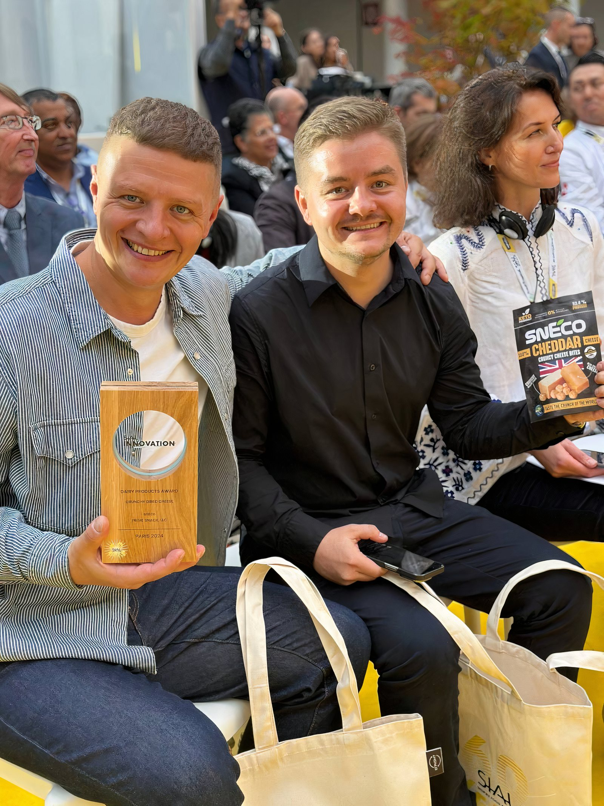
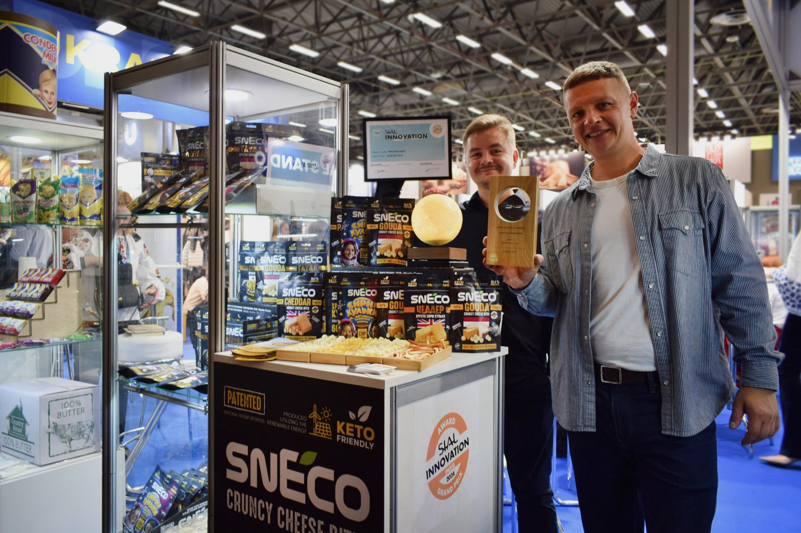
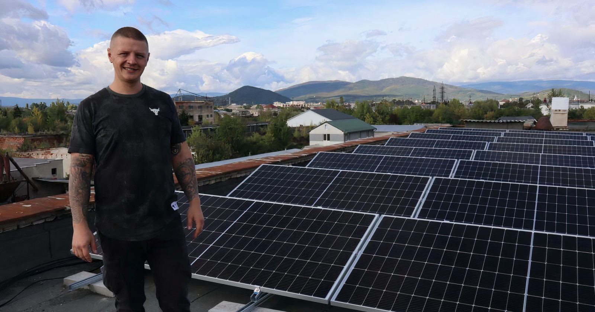
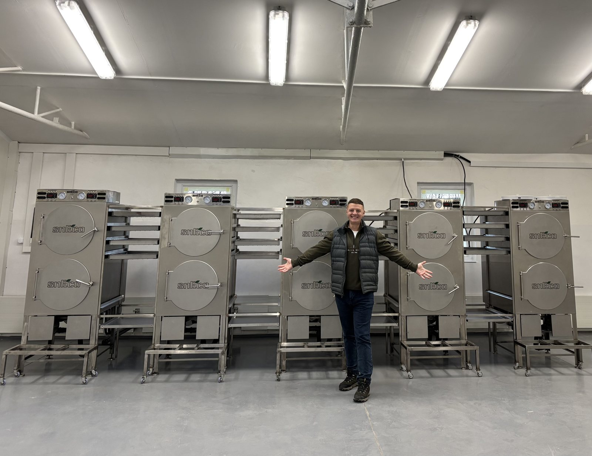
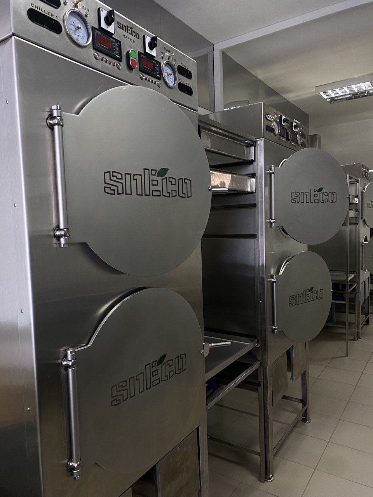
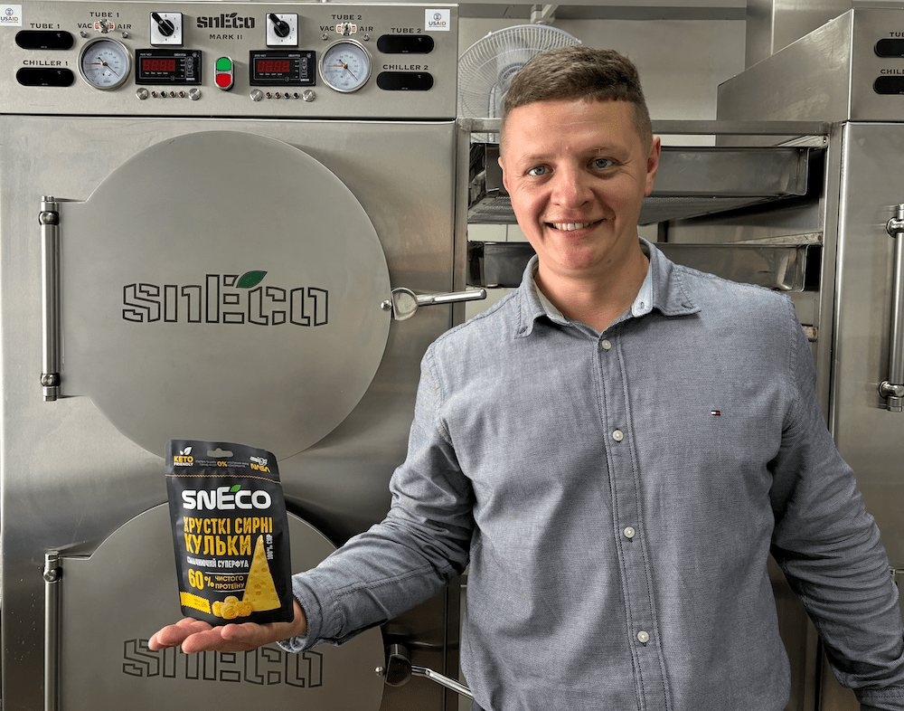

Хрусткий сир.
Лише сир.
Усе інше — інженерія.
Crunchy cheese.
Just cheese.
Everything else is engineering.
Chrumkavý syr.
Len syr.
Všetko ostatné je inžinierstvo.
Ми не змішуємо сир із кукурудзою чи пшеницею. Не випікаємо. Не присмачуємо. Не покриваємо. Ми просто прибрали з нього воду — і отримали хрусткий сир, який не псується два роки, влазить у кишеню і голосно відповідає, коли його їси.We don't blend cheese with corn or wheat. We don't bake it. We don't season or coat it. We just removed the water — and ended up with crunchy cheese that keeps for two years, fits in a pocket, and speaks loudly when bitten into.Nemiešame syr s kukuricou ani pšenicou. Nepečieme ho. Neochucujeme ani nepokrývame. Jednoducho sme z neho odstránili vodu — a získali chrumkavý syr, ktorý sa nekazí dva roky, zmestí sa do vrecka a hlasno odpovedá, keď do neho zahryznete.
Усе, що зробила технологія — зняла зі звичайного сиру обмеження. Ті, без яких він століттями не міг існувати: холодильник, короткий термін, важка упаковка.All the technology did was lift the limits ordinary cheese had carried for centuries: refrigeration, a short shelf life, heavy packaging.Všetko, čo technológia urobila — zniesla z obyčajného syra obmedzenia. Tie, bez ktorých storočia nemohol existovať: chladnička, krátka trvanlivosť, ťažký obal.
Ми не вигадували новий продукт. Ми зробили старий — кращим.We didn't invent a new product. We made the old one better.Nevymysleli sme nový produkt. Urobili sme starý — lepším.
засновники snEco — Vadym and Pylyp Gryshyn,
founders of snEco — Vadym a Pylyp Gryshyn,
zakladatelia snEco
Один бренд.
Незмінний стиль.
One brand.
One consistent style.
Jedna značka.
Jednotný štýl.
Цей документ описує правила використання бренду snEco — від логотипу до голосу. Для команди, підрядників, агентств і партнерів. This document defines how the snEco brand is used — from logo to voice. For our team, contractors, agencies and partners.Tento dokument popisuje pravidlá použitia značky snEco — od loga po hlas. Pre tím, subdodávateľov, agentúry a partnerov.
Хто миWho we areKto sme
Архітектура брендуBrand architectureArchitektúra značky
Маркування: «Made in Ukraine».
Сертифікати: FSSC 22000 v6.0 📄, HACCP / ISO 22000 📄.
Регулятор: Держпродспоживслужба України. Plant: Mukachevo, Ukraine.
Origin label: "Made in Ukraine".
Certifications: FSSC 22000 v6.0 📄, HACCP / ISO 22000 📄.
Regulator: State Service for Food Safety (Ukraine). Závod: Mukačevo, Ukrajina.
Označenie pôvodu: „Made in Ukraine".
Certifikáty: FSSC 22000 v6.0 📄, HACCP / ISO 22000 📄.
Regulátor: Štátna služba pre bezpečnosť potravín Ukrajiny.
Маркування: «Made in EU».
Сертифікати: IFS Food v8 📄, HACCP 📄, EU TRACES.
Регулятор: ÚVZ SR (Slovakia) + EU Reg. 1169/2011. Plant: Humenné, Slovakia.
Origin label: "Made in EU".
Certifications: IFS Food v8 📄, HACCP 📄, EU TRACES.
Regulator: Public Health Authority of Slovakia + EU Reg. 1169/2011. Závod: Humenné, Slovensko.
Označenie pôvodu: „Made in EU".
Certifikáty: IFS Food v8 📄, HACCP 📄, EU TRACES.
Regulátor: ÚVZ SR (Slovensko) + EU Reg. 1169/2011.
Правила вживання назвNaming rulesPravidlá používania názvov
| КонтекстContextKontext | Що писатиUseČo písať | Не писатиAvoidNepoužívať |
|---|---|---|
| Маркетингова комунікаціяMarketing communicationMarketingová komunikácia | snEco | Sneco · SNECO · SnEco |
| Логотип / упаковка (графічна форма)Logo / pack (graphic form)Logo / obal (grafická forma) | SNÉCO | Інше нарисуванняOther letteringIné prevedenie |
| Юр-документи UA-ринкуLegal docs · UA marketPrávne dokumenty UA trhu | ТОВ «Прайм Снек» / Prime Snack LLC | snEco як юр-особаsnEco as legal entitysnEco ako právnická osoba |
| Юр-документи EU-ринкуLegal docs · EU marketPrávne dokumenty EU trhu | Sneco SK s.r.o. | snEco SK · SNECO SKsnEco SK · SNECO SKsnEco SK · SNECO SK |
| ТехнологіяTechnologyTechnológia | VacWave Bio Nutrition | «NASA-технологія»"NASA technology"„NASA technológia" |
EU та глобальні ринкиEU & global marketsEU a globálne trhy
Мови на упаковці: UA + 8
Регулятор: Держпродспоживслужба України
Сертифікати: FSSC 22000 v6.0, HACCP / ISO 22000
Завод: Мукачево, Україна Origin label: "Made in Ukraine"
Languages on pack: UA + 8
Regulator: State Service for Food Safety (Ukraine)
Certifications: FSSC 22000 v6.0, HACCP / ISO 22000
Plant: Mukachevo, Ukraine Označenie: „Made in Ukraine"
Jazyky na obale: UA + 8
Regulátor: Štátna služba pre bezpečnosť potravín Ukrajiny
Certifikáty: FSSC 22000 v6.0, HACCP / ISO 22000
Závod: Mukačevo, Ukrajina
Регулятор: ÚVZ SR + EU Reg. 1169/2011
Сертифікати: IFS Food v8, HACCP, EU TRACES
Адреса: Humenné, Slovakia
ТМ: SK №266751, CZ №411165, PL Z.590834 Origin label: "Made in EU"
Regulator: Public Health Authority of SR + EU Reg. 1169/2011
Certifications: IFS Food v8, HACCP, EU TRACES
Address: Humenné, Slovakia
TM: SK №266751, CZ №411165, PL Z.590834 Označenie: „Made in EU"
Regulátor: ÚVZ SR + EU Reg. 1169/2011
Certifikáty: IFS Food v8, HACCP, EU TRACES
Adresa: Humenné, Slovensko
OZ: SK č. 266751, CZ č. 411165, PL Z.590834
Правила міжнародної комунікаціїInternational communication rulesPravidlá medzinárodnej komunikácie
- «Made in EU» замість «Made in Ukraine» на EU-матеріалах
- "Made in EU" instead of "Made in Ukraine" on EU materials
- „Made in EU" namiesto „Made in Ukraine" na EÚ-materiáloch
- Юр-адреса: Sneco SK s.r.o., Humenné, Slovakia
- Legal address: Sneco SK s.r.o., Humenné, Slovakia
- Právna adresa: Sneco SK s.r.o., Humenné, Slovensko
- SIAL Grand Prix як міжнародне визнання — у головному меседжі
- Lead with SIAL Grand Prix as international recognition
- SIAL Grand Prix ako medzinárodné uznanie — v hlavnom posolstve
- «Clean label», «single ingredient», «up to 60% protein»
- "Clean label", "single ingredient", "up to 60% protein"
- „Clean label", „single ingredient", „up to 60% protein"
- IFS Food v8 — вказувати у спілкуванні з EU-ритейлом
- Cite IFS Food v8 in conversations with EU retail
- IFS Food v8 — uvádzať v komunikácii s EÚ-maloobchodom
- Мова ринку на упаковці + англійська як основа
- Local-market language on pack + English as the base
- Jazyk trhu na obale + angličtina ako základ
- «Made in Ukraine» на EU-матеріалах (юридично некоректно для SK)
- "Made in Ukraine" on EU materials (legally incorrect for SK product)
- „Made in Ukraine" na EÚ-materiáloch (právne nekorektné pre SK)
- Мішати юр-дані двох ентітей на одному носії
- Mixing both legal entities on the same artwork
- Miešať právne údaje dvoch entít na jednom nosiči
- Буквальний переклад UA-фраз без локалізації
- Literal translation of UA copy without localization
- Doslovný preklad UA-fráz bez lokalizácie
- UA-сертифікати для EU-ринку (різні системи)
- UA certifications for the EU market (different systems)
- UA-certifikáty pre EÚ-trh (rôzne systémy)
🎯 Hero Metrics — одна правда🎯 Hero Metrics — one source of truth🎯 Hero Metrics — jeden zdroj pravdy
Команда & орг-структураTeam & org structureTím & org. štruktúra
🏢 Орг-структура snEco UAsnEco UA org structureOrg-štruktúra snEco UA
🇸🇰 Sneco SK (Словаччина)Sneco SK (Slovakia)Sneco SK (Slovensko)
Співвласники (4)Co-owners (4)Spoluvlastníci (4)
Функціональні керівники (4)Functional leads (4)Funkční vedúci (4)
Виробничий персоналProduction teamVýrobný personál
📞 Ключові контактиKey contactsKľúčové kontakty
Team principles — як ми працюємо у snEcoTeam principles — how we work at snEcoTeam principles — ako pracujeme v snEco
⏳ Розроблено для ідеї Тарас: "правила для команди". Чекає погодження автора у системі ідей. ⏳ Drafted for idea Taras: "code of conduct". Pending author approval. ⏳ Pripravené pre nápad Taras: "pravidlá pre tím". Čaká na schválenie autora.
📜 Переглянути запропоновані принципиView proposed principlesPozrieť navrhované princípy
1. Наш north star ⭐
«Один інгредієнт. Жодних компромісів. Сирний снек XXI століття.»
Все що ми робимо — від рецептур до партнерств — мусить наближати нас до цього бачення. Якщо ідея не служить цьому — не робимо її, навіть якщо це швидкий $.
2. Як ми приймаємо рішення ⚡
- Speed > perfection. Краще зробити 80% швидко і коригувати, ніж 100% через 3 місяці.
- Data > opinion. Якщо є дані (Customer 360, Finance) — використовуємо. Якщо немає — гіпотеза, не "правда".
- Owner вирішує. Якщо вказано в RACI хто Owner — він вирішує (з consult з потрібними).
3. Як ми спілкуємось 💬
- Slack — default. Швидко, асинхронно, transparent.
- Email — тільки з external партнерами / для серйозних multi-сторонніх ниток.
- Voice / Zoom — для emotional / complex / first-time conversations.
- Документація — для всього що повторюється > 1 разу. У Brand Bible.
4. Як ми ділимось знаннями 📚
- Все важливе — у Brand Bible. "Якщо не у Bible — це не існує".
- Tribal knowledge → SOP. Якщо вмію тільки я → задокументую за тиждень.
- Ідеї → форма у Brand Bible /#ideas. Не у DM, не у email.
- Public документи у
documents/. Confidential — у OTP-gated сесіях.
5. Як ми ростимо 📈
- 1:1 щомісяця — з manager'ом. Не "status update" — про розвиток.
- Retrospective щокварталу — що працювало, що ні, що пробувати.
- Помилки = learning. Blameless culture. Питання: "що ми робимо інакше наступного разу?", не "хто винний?".
- Investment у себе — snEco compensate'ить курси/конференції що покращують роботу.
6. Customer-first 🤝
- Customer = ритейл-партнер + дистрибʼютор + HoReCa + кінцевий споживач.
- Перед рішенням питай: "як це впливає на customer?" Не "як це впливає на нас?".
- Empathy: read customer feedback (Customer 360, support, social).
- Якщо клієнт скаржиться → "sorry first, fix second, learn third".
7. Розвиток snEco 🚀
- Ownership culture — "я бачу проблему = я її picking up". Не чекаємо інструкції.
- Bias to action — краще спробувати і помилитись, ніж не спробувати.
- No silos — sales знає про виробництво, виробництво знає про sales. Brand Bible = bridge.
- Hire smart people, get out of their way — менеджмент = unblock, не micro-manage.
Підписано команда snEco · 02.06.2026. Updated yearly. Last update: 02.06.2026.
Як з'явився snEcoHow snEco came to beAko vznikol snEco
Глибша легенда: чому це сталося і якDeeper origin: why and how it happenedHlbší pôvod: prečo a ako sa to stalo
Початок як cheese lovers. Пилип робив свіжий сир удома для друзів і родини — мав маленьку домашню сироварню. Вадим, як продавець, завжди боявся короткого терміну придатності й холодного зберігання сиру. Звідси й виникло головне питання: «Як зробити так, щоб сир не вимагав холодильника?»
Started as cheese lovers. Pylyp made fresh cheese at home for friends and family — had a small home cheesemaking setup. Vadym, as a seller, was always afraid of cheese's short shelf life and cold-chain requirement. That's where the core question came from: "How to make cheese that doesn't need a fridge?"
Začali ako milovníci syra. Pylyp robil čerstvý syr doma pre priateľov a rodinu — mal malú domácu syráreň. Vadym sa ako predajca vždy obával krátkej trvanlivosti a chladovej reťaze syra. Odtiaľ aj hlavná otázka: „Ako vyrobiť syr, ktorý nepotrebuje chladničku?"
Не копія — повний збіг. Технологію знайшли крок за кроком — від однієї до іншої, до третьої. Мікрохвильово-вакуумну сушку на той час у харчовій індустрії широко не використовували — її довелося fine-tune'ити з нуля. Аналог «moon cheese» зі США побачили лише у 2018, коли Вадим був там у поїздці. До того моменту вже мали власний продукт. «Це був повний збіг, повністю випадкова річ. Ми не копіювали нікого. Саме тому в нас стільки помилок на шляху.»
Not a copy — pure coincidence. The technology was found step by step — from one to another, to a third. Microwave-vacuum drying was not widely used in the food industry at that time — we had to fine-tune it from scratch. The US "moon cheese" analogue was only seen in 2018, when Vadym was there on a trip. By then we already had our own product. "It was a pure coincidence, completely accidental. We didn't copy anyone. That's why we made so many mistakes along the way."
Nie kópia — čistá náhoda. Technológiu sme našli krok za krokom. Mikrovlnno-vákuové sušenie vtedy v potravinárstve nebolo bežne používané — museli sme ho doladiť od nuly. Americký „moon cheese" sme uvideli až v roku 2018. Vlastný produkt sme mali už predtým. „Bola to úplná náhoda. Nikoho sme nekopírovali. Práve preto sme urobili toľko chýb."
Garage start, буквально. На момент старту брати мали інший бізнес, не пов'язаний з їжею, і хотіли диверсифікуватись. Не знали нічого про харчову безпеку, стандарти, сертифікацію — справжній стартап «у гаражі». Перші пакування друкували на звичайному принтері Epson, вставляючи прозоре пакування й друкуючи бренд на ньому. Перша реальна помилка — пакування з «відкритим вікном» виявилося погано ізольованим: міграція кисню скорочувала термін придатності.
Garage start, literally. When we started, the brothers had another business, unrelated to food, and wanted to diversify. We knew nothing about food safety, standards, certification — a real "garage startup". First packages were printed on a regular Epson printer, inserting transparent packaging and printing the brand on it. First real mistake — the package with an "open window" turned out to be poorly insulated: oxygen migration shortened shelf life.
Garážový začiatok, doslova. V čase štartu mali bratia iný biznis, nesúvisiaci s jedlom, a chceli diverzifikovať. O potravinovej bezpečnosti, normách a certifikácii sme nevedeli nič — skutočný „garážový startup". Prvé obaly sme tlačili na obyčajnej tlačiarni Epson. Prvá reálna chyba — obal s „otvoreným okienkom" sa ukázal byť zle izolovaný: migrácia kyslíka skracovala trvanlivosť.
Ключові віхиKey milestonesKľúčové míľniky
🏆 SIAL Paris 2024 — момент Grand PrixSIAL Paris 2024 — the Grand Prix momentSIAL Paris 2024 — moment Grand Prix


🇺🇦 Як війна змінила всеHow the war changed everythingAko vojna všetko zmenila
До 24 лютого 2022 року snEco працював у Харкові: ~3 тонни продукції щомісяця, 35 співробітників, відкриття нового цеху і виходу на експорт у ЄС — через тиждень.Before 24 February 2022, snEco operated in Kharkiv: ~3 tonnes per month, 35 staff, with a new production line and EU export launch scheduled for the following week.Do 24. februára 2022 snEco pracoval v Charkove: ~3 tony produkcie mesačne, 35 zamestnancov, otvorenie novej dielne a vstup na export do EÚ — o týždeň.
У перші дні великої війни знищено виробництво, склади і домівки родин. 27 лютого 2022-го всі гроші з рахунків компанії — близько 500 000 грн — переказали на ЗСУ і фонд «Повернись живим».In the first days of the full-scale invasion, production, warehouses and family homes were destroyed. On 27 February 2022, the company transferred all its working capital — about UAH 500,000 — to the Ukrainian Armed Forces and the "Come Back Alive" foundation.V prvých dňoch veľkej vojny boli zničené výroba, sklady a domovy rodín. 27. februára 2022 firma previedla všetky peniaze z účtov — približne 500 000 UAH — ozbrojeným silám Ukrajiny a fondu „Vráť sa živý".
У квітні 2022 вдалося вивезти вціліле обладнання (8 вантажівок) з Харкова. Місце для перезапуску обрали в Мукачево — Закарпаття, 100 км від кордону з ЄС. Усе літо 2022 — інженерні роботи, ремонт під харчове виробництво. Підтримка прийшла через гранти EU4Business, GIZ, IOM (UN Migration), ЄБРР.In April 2022, the salvageable equipment was moved out of Kharkiv (8 trucks). The new home — Mukachevo, Zakarpattia, 100 km from the EU border. Summer 2022 was non-stop engineering and food-production retrofits. Support came via grants from EU4Business, GIZ, IOM (UN Migration) and the EBRD.V apríli 2022 sa podarilo vyviezť zachované zariadenia (8 nákladiakov) z Charkova. Miesto pre reštart bolo zvolené v Mukačeve — Zakarpatsko, 100 km od hranice s EÚ. Celé leto 2022 — inžinierske práce, rekonštrukcia pre potravinársku výrobu. Podpora prišla cez granty EU4Business, GIZ, IOM (UN Migration), EBOR.
У серпні 2022 виробництво перезапустили. Зі старої команди в 35 людей до Мукачева переїхали троє; решта команди — переважно внутрішньо переміщені особи, що так само втратили домівки і шукали нову.Production resumed in August 2022. Of the 35-person original team, three relocated to Mukachevo; the rest of today's team are mostly internally displaced people, who had also lost their homes and were looking for a new one.V auguste 2022 sa výroba reštartovala. Zo starého tímu 35 ľudí sa do Mukačeva presťahovali traja; zvyšok tímu — prevažne vnútorne presídlené osoby, ktoré tiež stratili domovy a hľadali nový.
Історія, як ми її розповідаємоThe story, the way we tell itPríbeh, ako ho rozprávame
Технологія VacWave Bio NutritionVacWave Bio Nutrition technologyTechnológia VacWave Bio Nutrition
VacWave проти інших методів сушкиVacWave vs other drying methodsVacWave verzus iné metódy sušenia
| ПараметрParameterParameter | VacWave (наша)(ours)(naša) | ЛіофілізаціяFreeze-dryingLyofilizácia | Гаряча / конвекційна сушкаHot / convection dryingHorúce / konvekčné sušenie | Смаження / екструзіяFrying / extrusionVyprážanie / extrúzia |
|---|---|---|---|---|
| ПринципPrinciplePrincíp | Вакуум + мікрохвильова енергія. Нагрів зсередини, пара розширює шматочокVacuum + microwave energy. Heated from within, steam expands the pieceVákuum + mikrovlnná energia. Ohrev zvnútra, para rozširuje kúsok | Заморожування, потім сублімація льоду у глибокому вакууміFreezing, then sublimation of ice under deep vacuumZmrazenie, potom sublimácia ľadu v hlbokom vákuu | Гаряче повітря випаровує вологу з поверхні всерединуHot air evaporates moisture from the surface inwardHorúci vzduch odparuje vlhkosť z povrchu dovnútra | Висока температура + олія або тиск/зсув у шнекуHigh heat plus oil, or pressure/shear in a screwVysoká teplota plus olej, alebo tlak/šmyk v závitovke |
| Попереднє заморожуванняPre-freezingPredmrazenie | Не потрібнеNot requiredNie je potrebné | Обов'язкове — може змінювати сирну матрицюMandatory — can alter the cheese matrixPovinné — môže meniť syrovú matricu | Не потрібнеNot requiredNie je potrebné | Не потрібнеNot requiredNie je potrebné |
| Структура на виходіResulting structureVýsledná štruktúra | Легка, повітряна, пориста, виразно хрусткаLight, airy, porous, distinctly crunchyĽahká, vzdušná, pórovitá, výrazne chrumkavá | Для сиру — щільніша й твердіша: волога пішла, але розширення не відбулосьFor cheese — denser and harder: water is gone but no expansion occurredPri syre — hustejšia a tvrdšia: voda je preč, ale k rozšíreniu nedošlo | Тверда, склоподібна кірка, ризик пригоранняHard, glassy crust, risk of scorchingTvrdá, sklovitá kôrka, riziko pripálenia | Хрустка, але жирна; часто потрібні носії й добавкиCrunchy but greasy; usually needs carriers and additivesChrumkavá, ale mastná; zvyčajne potrebuje nosiče a prísady |
| ТемператураTemperatureTeplota | 36–38°C | Низька, але цикл дуже довгийLow, but the cycle is very longNízka, ale cyklus je veľmi dlhý | ВисокаHighVysoká | Дуже високаVery highVeľmi vysoká |
| Олія у процесіOil in the processOlej v procese | НемаєNoneŽiadny | НемаєNoneŽiadny | Зазвичай немаєUsually noneZvyčajne žiadny | ТакYesÁno |
| Тривалість циклуCycle timeDĺžka cyklu | КороткийShortKrátky | Дуже довгий, енергоємнийVery long, energy-intensiveVeľmi dlhý, energeticky náročný | СереднійMediumStredný | КороткийShortKrátky |
| Склад етикеткиLabelEtiketa | Один інгредієнт — сирOne ingredient — cheeseJedna ingrediencia — syr | Може бути чистимCan be cleanMôže byť čistá | Може бути чистимCan be cleanMôže byť čistá | Олія + носії/стабілізаториOil plus carriers/stabilisersOlej plus nosiče/stabilizátory |
| Для чого метод створювавсяWhat the method was built forNa čo bola metóda vytvorená | Саме для хрустких сирних снеківSpecifically for crunchy cheese snacksPráve pre chrumkavé syrové snacky | Збереження фруктів, ягід, біоматеріалівPreserving fruit, berries, biomaterialsKonzervovanie ovocia, bobúľ, biomateriálov | Масова сушка сировиниBulk drying of raw materialsHromadné sušenie surovín | Класичні чипси й снекиClassic crisps and snacksKlasické čipsy a snacky |
snEco vs конкурентиsnEco vs competitorssnEco vs konkurenti
- 100% натуральний сир, один інгредієнт
- 100% natural cheese, single ingredient
- 100% prírodný syr, jedna ingrediencia
- Низькотемпературна сушка (36-38°C) — поживні речовини зберігаються
- Low-temp drying (36-38°C) — nutrients preserved
- Nízkoteplotné sušenie (36-38°C) — výživové látky sa zachovávajú
- Кулькова форма — finger food, без жирних рук
- Ball shape — true finger food, no greasy hands
- Guľová forma — finger food, bez mastných rúk
- До 60% протеїну, без цукру, без глютену
- Up to 60% protein, no sugar, gluten-free
- Až 60% bielkovín, bez cukru, bez gluténu
- KETO-friendly, виробництво на сонячній енергії
- KETO-friendly, solar-powered production
- KETO-friendly, výroba na solárnej energii
- Сир + кукурудза / пшениця + консерванти + барвники
- Cheese mixed with corn / wheat + preservatives + colorants
- Syr + kukurica / pšenica + konzervanty + farbivá
- Запікають або смажать — поживна цінність втрачається
- Baked or fried — nutritional value lost
- Pečú alebo smažia — výživová hodnota sa stráca
- Пласка форма — брудні руки від розтопленого жиру
- Flat shape — dirty fingers from melted fat
- Plochý tvar — špinavé ruky od roztopeného tuku
- Низький білок, цукор і глютен у складі
- Low protein, sugar and gluten in the recipe
- Nízke bielkoviny, cukor a glutén v zložení
- Не sustainable виробництво
- Not a sustainable production process
- Nie sustainable výroba
Чому snEco не канібалізує — а розширює категоріюWhy snEco doesn't cannibalize — it grows the categoryPrečo snEco nekanibalizuje — ale rozširuje kategóriu
Іменна карта конкурентівNamed competitor mapPomenovaná mapa konkurentov
| БрендBrandZnačka | РегіонRegionRegión | ФормаFormatForma | Ключові factоидиKey factsKľúčové factoidy | Як ми відрізняємосьHow we differAko sa odlišujeme |
|---|---|---|---|---|
| Whisps | USA | Пласкі чипсиFlat crispsPloché čipsy | Запечений сир. ~12 SKU. Лідер US-категорії cheese-snack.Baked cheese. ~12 SKUs. US category leader.Pečený syr. ~12 SKU. Líder US-kategórie cheese-snack. | У них високі температури (втрата нутрієнтів). У нас — 36-38°C і кулькова форма (finger food).They use high heat (nutrient loss). We use 36-38°C and a ball shape (finger food).U nich vysoké teploty (strata nutrientov). U nás — 36-38°C a guľová forma (finger food). |
| ParmCrisps | USA | Пласкі чипсиFlat crispsPloché čipsy | Випечений Parmesan + насіння / спеції. Висока ціна.Baked Parmesan + seeds / spices. High price.Pečený Parmesan + semienka / korenia. Vysoká cena. | Один інгредієнт vs мікс. Без додавання насіння й приправ.Single ingredient vs blend. No seeds or seasonings added.Jedna ingrediencia vs mix. Bez pridávania semienok a korenín. |
| Moon Cheese | USA | ШматочкиChunksKúsky | «Сушений сир» — кубики. Натхнені космічною їжею NASA."Dried cheese" — cubes. Inspired by NASA space food.„Sušený syr" — kocky. Inšpirované kozmickou stravou NASA. | Ми — кулькова форма (зручніше), власна патентована технологія, EU-виробництво.We use a ball shape (more convenient), our own patented tech, EU production.My — guľová forma (pohodlnejšie), vlastná patentovaná technológia, EÚ-výroba. |
| Cello | USA | Випечені «whisps»Baked "whisps"Pečené „whisps" | Whisps-категорія від виробника сиру Cello.Whisps-category from cheesemaker Cello.Whisps-kategória od výrobcu syra Cello. | Той самий контраст — пласке-випечене vs кулькова низькотемпературна сушка.Same contrast — flat-baked vs ball low-temp drying.Ten istý kontrast — ploché-pečené vs guľové nízkoteplotné sušenie. |
| HiPP / Crispy Cheese | EU | Дрібні чипсиSmall crispsDrobné čipsy | EU private-label, зазвичай більш масовий цінник.EU private-label, mass-tier pricing.EÚ private-label, zvyčajne masovejšia cena. | Premium позиціонування, SIAL Grand Prix, sustainable виробництво.Premium positioning, SIAL Grand Prix, sustainable production.Premium pozicionovanie, SIAL Grand Prix, sustainable výroba. |
| JustCheese / Local UA | UA | Чипси / шматочкиCrisps / chunksČipsy / kúsky | Локальні плеєри без сертифікації світового рівня.Local players without world-class certifications.Lokálni hráči bez certifikácie svetovej úrovne. | FSSC 22000 + IFS Food v8 + EU TRACES + FDA. Готові до експорту.FSSC 22000 + IFS Food v8 + EU TRACES + FDA. Export-ready.FSSC 22000 + IFS Food v8 + EU TRACES + FDA. Pripravené na export. |
Sustainability — частина продукту, а не маркетингуSustainability — built into the product, not bolted onSustainability — súčasť produktu, nie marketingu

Власне обладнання як фундамент snEcoProprietary equipment — the foundation of snEcoVlastné vybavenie — základ snEco
📸 Обладнання — фото з виробництваEquipment — production floor photosVybavenie — fotky z výroby


⚠️ Виклик: чому довелося робити власнеThe challenge: why we had to build it ourselvesVýzva: prečo sme to museli postaviť sami
Стандартні рішення не дозволяли:Standard solutions could not:Štandardné riešenia neumožňovali:
- забезпечити стабільну якість продукту;deliver stable product quality;zabezpečiť stabilnú kvalitu produktu;
- досягти точного контролю вологості і текстури;achieve precise moisture and texture control;dosiahnuť presnú kontrolu vlhkosti a textúry;
- зберегти смак, структуру, білок і корисні властивості;preserve flavor, structure, protein and nutrients;zachovať chuť, štruktúru, bielkoviny a živiny;
- масштабувати виробництво без втрати якості.scale production without losing quality.škálovať výrobu bez straty kvality.
Саме тому було прийнято стратегічне рішення — розробляти всю виробничу лінію самостійно. That's why we made a strategic decision — to develop the entire production line ourselves. Preto sme prijali strategické rozhodnutie — vyvíjať celú výrobnú linku samostatne.
🛠 Що команда розробилаWhat the team builtČo tím vyvinul
🥩 Що ми дегідруємо сьогодніWhat we dehydrate todayČo dnes dehydrujeme
👷 Інженерний підхід — практики, не теоретикиEngineering approach — practitioners, not theoristsInžiniersky prístup — praktici, nie teoretici
Кожне рішення проектувалось з огляду на:Every solution is designed against:Každé riešenie je navrhnuté s ohľadom na:
🏭 Хто стоїть за технологієюThe people behind the techĽudia za technológiou

⚡ Енергія & sustainability — частина обладнанняPower & sustainability — part of the equipmentEnergia & sustainability — súčasť vybavenia
⚙️ 6 ключових особливостей обладнання6 key features of snEco equipment6 kľúčových vlastností vybavenia snEco
🎛 Параметри під контролемParameters under controlParametre pod kontrolou
🏅 Сертифікації обладнанняEquipment certificationsCertifikácie vybavenia
🏰 Головна конкурентна перевагаOur key competitive moatNaša kľúčová konkurenčná výhoda
- сторонніх виробників обладнання;third-party equipment manufacturers;tretích výrobcov vybavenia;
- обмежень типових рішень;limitations of off-the-shelf solutions;obmedzení typových riešení;
- дефіциту постачань;supply shortages;nedostatku dodávok;
- зовнішніх інженерних підрядників.external engineering contractors.externých inžinierskych dodávateľov.
- повний контроль якості;full quality control;plnú kontrolu kvality;
- стабільність процесів;process stability;stabilitu procesov;
- гнучкість у розробці нових продуктів;flexibility in new-product development;flexibilitu pri vývoji nových produktov;
- швидке масштабування;fast scale-up;rýchle škálovanie;
- постійне вдосконалення технологій;continuous tech improvement;neustále zlepšovanie technológií;
- високий рівень захисту експертизи.strong protection of know-how.silnú ochranu know-how.
🧪 R&D Experiments Log — внутрішня база сушінняR&D Experiments Log — internal drying databaseR&D Experiments Log — interná databáza sušenia
| ПродуктProductProdukt | ДатаDateDátum | Втрата вагиWeight lossStrata hmotnosti | Smak / текстураTaste / textureChuť / textúra | Shelf lifeShelf lifeTrvanlivosť | ВисновокConclusionZáver |
|---|---|---|---|---|---|
| Blue Royale (синій сир) | 2025 | ~80% | пікантний, кремовий, легка fish-нотаpiquant, creamy, light fish-notepikantný, krémový, ľahká rybia nota | 18 міс | ✅ запущено · 14г + 500гlaunched · 14g + 500gspustené · 14g + 500g |
| Хрустка Зелена (оливки) | 2024 | ~70% | солона хрусткість, олійна ноткаsalty crunch, oily noteslaná chrumkavosť, olejová nota | 18 міс | ✅ запущено · 14г + Rozetka 2-packlaunched · 14g + Rozetka 2-packspustené · 14g + Rozetka 2-pack |
| Smoked Emmental | 2025 | ~78% | копчений аромат, м'яка текстураsmoked aroma, soft textureúdená aróma, mäkká textúra | 18 міс | ✅ запущено · 28г + 500гlaunched · 28g + 500gspustené · 28g + 500g |
| 📝 Команда виробництва/R&D доповнює реєстр через 📝 Production/R&D team appends via 📝 Tím výroby/R&D dopĺňa cez 📩 ПропозиціїIdeasNávrhy або напряму. Майбутні рядки: meat & vegetable trials, fruit prototypes, Phase III категорії.or directly. Future rows: meat & vegetable trials, fruit prototypes, Phase III categories.alebo priamo. Budúce riadky: meat & vegetable trials, fruit prototypes, Phase III kategórie. | |||||
⚙️ Власне обладнання як moat — деталі з RNK сесіїIn-house equipment as a moat — details from RNK sessionVlastné vybavenie ako moat — detaily z RNK relácie
Сир-сировина — з Польщі та Нідерландів: «mass produced normal quality European cheese», не преміум, не крафт. Ключовий нюанс: під час сушіння смак і всі властивості посилюються — береш хороший сир → отримуєш кращий смак; береш не дуже хороший → отримуєш ще гірший. Тому ми багато експериментували і зупинились на тих постачальниках, з якими працюємо. Це не маркетинг «крафтової сировини» — це свідомий вибір ефективного процесу.
Raw cheese is from Poland and the Netherlands: "mass-produced normal quality European cheese", not premium, not craft. Key nuance: during drying, taste and all properties amplify — good cheese in → better taste out; not-so-good cheese in → even worse out. That's why we experimented heavily and settled on the suppliers we use. This is not "craft sourcing" marketing — it's a deliberate choice of an efficient process.
Surovinový syr je z Poľska a Holandska: „masovo vyrábaný štandardný európsky syr", nie prémiový, nie remeselný. Kľúčová nuansa: počas sušenia sa chuť a všetky vlastnosti zosilňujú — dobrý syr → lepšia chuť; nie veľmi dobrý → ešte horší. Preto sme veľa experimentovali a usadili sa na dodávateľoch, s ktorými pracujeme. Toto nie je „remeselný marketing" — je to vedomá voľba efektívneho procesu.
Слогани, тези, ключові фактиSlogans, claims, key factsSlogany, tézy, kľúčové fakty
🏆 Trust Wall — соціальне підтвердженняTrust Wall — social proofTrust Wall — sociálny dôkaz
Головні слоганиHeadline slogansHlavné slogany
Бренд-есенція в одне реченняBrand essence — one lineEsencia značky v jednej vete
Бібліотека ключових твердженьKey claims libraryKnižnica kľúčových tvrdení
| КатегоріяCategoryKategória | Можна казатиYou can sayMožno povedať | ПідтвердженоBacked byPotvrdené |
|---|---|---|
| СкладIngredientsZloženie | 100% cheese · single ingredient · clean label | Сертифікати, ТУCertifications, TUCertifikáty, TÚ |
| БілокProteinBielkoviny | up to 60% protein · high protein | 📄 Eurofins lab tests |
| ЗберіганняShelf lifeSkladovanie | up to 24 months · no fridge needed · 0–30°C | Технічна специфікаціяTechnical specTechnická špecifikácia |
| ДієтиDietsDiéty | keto-friendly · gluten-free · no sugar · low carb | Етикетка, ТУLabel, TUEtiketa, TÚ |
| ІнноваціяInnovationInovácia | SIAL Innovation Grand Prix 2024 · 2200+ products · Paris | 📄 Award · 📄 Cert |
| ВизнанняRecognitionUznanie | Forbes Next 250 · Gulfood Innovation Awards 2025 shortlist | Forbes, Gulfood |
| ТехнологіяTechnologyTechnológia | VacWave Bio Nutrition · patented · microwave-vacuum drying at 36-38°C | 📄 Патент №139035Patent No. 139035Patent č. 139035 |
| Виробнича платформаProduction platformVýrobná platforma | in-house equipment · 5+ years R&D · CE · ISO 9001 · ISO 22000 · scales beyond cheese (meat / vegetables / fruits) | 🏭 Виробництво & R&DProduction & R&DVýroba & R&D |
| SustainabilitySustainabilitySustainability | 100% renewable energy · solar-powered · Type I Ecolabel · ISO 14024 | 📄 Green Crane · 📄 EU PEF |
| ПоходженняOriginPôvod | Designed in Ukraine · Made in EU (SK) · Made in Ukraine (UA) | Юр-особи UA + SKUA + SK legal entitiesPrávnické osoby UA + SK |
| ЯкістьQualityKvalita | FSSC 22000 · IFS Food v8 · HACCP · ISO 22000 · EU TRACES · FDA | 📄 FSSC · 📄 HACCP · 📄 IFS · 📄 FDA |
| ЛояльністьLoyaltyLojalita | 76% online repeat purchases · +126% promo lift | Внутрішня аналітикаInternal analyticsInterná analytika |
| ЗростанняGrowthRast | ×25 in 6 years · doubling revenue every year | Внутрішні фінансові даніInternal financialsInterné finančné údaje |
| РинокMarketTrh | 94% expo visitors expressed admiration and demand | Власні дослідження на виставкахInternal expo surveysVlastný výskum na výstavách |
Чого НЕ кажемоWhat we DON'T sayČo NEhovoríme
Готові формули для каналівReady-made channel formulasPripravené formuly pre kanály
Сценарії використання продукту (HoReCa & B2B)Product usage scenarios (HoReCa & B2B)Scenáre použitia produktu (HoReCa & B2B)
- 1Самостійний снек / стартерStand-alone snack / starterSamostatný snack / starter — до пива, вина, кави. Замість горіхів і чипсів.with beer, wine, coffee. A replacement for nuts and chips.k pivu, vínu, káve. Namiesto orechov a čipsov.
- 2Інгредієнт супу або салатуSoup or salad ingredientIngrediencia polievky alebo šalátu — альтернатива сухарикам / крутонам. Тримає форму у вологому середовищі 10–15 хвилин.an alternative to croutons. Holds shape in moisture for 10–15 minutes.alternatíva ku sušienkam / krutónom. Drží tvar vo vlhkom prostredí 10–15 minút.
- 3Доповнення до напоївDrink pairingDoplnok k nápojom — пиво, вино, вермут, кава. Вже працюємо з виноробами та крафтовими броварнями.beer, wine, vermouth, coffee. Already working with winemakers and craft breweries.pivo, víno, vermút, káva. Už spolupracujeme s vinárstvami a craftovými pivovarmi.
- 4Bar / mini-bar — 28г-формат для готелів, авіаліній, аеропорт-лаунжів.the 28g format for hotels, airlines and airport lounges.28g formát pre hotely, aerolínie, letiskové salóniky.
- 5Ready-to-eat — як компонент у готових стравах, мікс-кітах, протеїнових коробках.a component in ready meals, mix kits and protein boxes.ako komponent v hotových jedlách, mix-kitoch, proteínových krabiciach.
🎯 Ключове позиціонування vs конкурентівKey positioning vs competitorsKľúčové positioning vs konkurenti
Конкуренти додають ароматизатори (томат, бекон, сметана+цибуля), щоб конкурувати з чипсами і кренделями. Покупець відчуває смак покриття — ~90% ароматизатор, ~10% сир. А базовий сир дешевий → його смак і так не дуже хороший.
Competitors add flavorings (tomato, bacon, sour cream & onion) to compete with chips and pretzels. The buyer tastes the coating — ~90% flavoring, ~10% cheese. And the base cheese is cheap → its taste isn't great anyway.
Konkurenti pridávajú dochucovadlá (paradajka, slanina, smotana & cibuľka), aby konkurovali s čipsami. Kupujúci cíti chuť obalu — ~90% dochucovadlo, ~10% syr. A základný syr je lacný → chuť nie je dobrá.
snEco свідомо НЕ додає ароматизаторів. Чистий смак сиру (clean-label, один інгредієнт). Це не сирний снек що імітує чипси — це нова категорія: справжній сир у форматі снеку.
snEco deliberately does NOT add flavorings. Pure cheese taste (clean-label, single ingredient). It's not a cheese snack imitating chips — it's a new category: real cheese in snack format.
snEco zámerne NEPRIDÁVA dochucovadlá. Čistá chuť syra (clean-label, jedna ingrediencia). Nie je to syrový snack imitujúci čipsy — je to nová kategória: skutočný syr v snack formáte.
Стратегічна логіка: навіщо покупцеві платити в 2–3–5 разів більше за «бекон-снек», який смакує як чипси? Це не стійкий шлях будувати категорію — мало повторних покупок. snEco не конкурує з дешевими снеками — він створює окрему категорію.
Strategic logic: why would a buyer pay 2–3–5× more for a "bacon snack" that tastes like chips? That's not a sustainable way to build a category — few repeat purchases. snEco doesn't compete with cheap snacks — it creates its own category.
Strategická logika: prečo by kupujúci mal zaplatiť 2–3–5× viac za „bacon snack", ktorý chutí ako čipsy? Nie je to udržateľná cesta budovať kategóriu — málo opakovaných nákupov. snEco nekonkuruje s lacnými snackmi — vytvára vlastnú kategóriu.
Case study: п'яна вишня × snEco — ко-брендінг прикладCase study: Drunken Cherry × snEco — co-branding exampleCase study: Pijaná čerešňa × snEco — co-branding príklad
⏳ Розроблено для ідеї Вадим: "п'яна вишня (co-branding case study)". Чекає погодження автора у системі ідей. ⏳ Drafted for idea Vadym: "Drunken cherry (co-branding case study)". Pending author approval in the ideas system. ⏳ Pripravené pre nápad Vadym: "Pijaná čerešňa (co-branding case study)". Čaká na schválenie autora.
📚 Переглянути запропонований case studyView proposed case studyPozrieť navrhovaný case study
Контекст
П'яна вишня — український кондитерський бренд (вишня в шоколаді, премʼюм-сегмент, бренд з історією 100+ років з Львова). Знайшли snEco через виставку SIAL 2024 — їх власник побачив запатентовану VacWave технологію і запропонував спільний продукт.
Ціль колаборації:
- snEco — увійти у premium-канал П'яна Вишня (delicatessen, винні бутіки, premium ритейл)
- П'яна вишня — додати новий формат у меню асортимент
- Ринок — створити нову категорію "premium snack pairing" (сир + десерт)
Концепт
Новий SKU: "snEco Premium Pairing · 14г Cheddar + П'яна Вишня портативна 30г"
Product: ко-брендований двосекційний pouch з сирним снеком snEco і вишнею у шоколаді П'яна Вишня. Призначений для:
- Wine bars / винні бутіки
- Premium ритейл (Сільпо Premium, Auchan Gourmet)
- HoReCa amenity (готелі 4-5*)
- Корпоративні подарунки
Пакування
📷 Фото co-branded package буде додано після пілотного запуску.
Дизайн принципи:
- 50/50 logo split — обидва бренди рівнозначні
- Унікальний deep-red колір (від П'яна Вишня)
- snEco yellow accent на корнерах
- Bilingual UK/EN — для UA + потенційного export
- Eco-friendly матеріал (recyclable PE, без PVC)
- QR-code → пара pairing recommendation (вино + сир + десерт)
Розміри: 100×140 мм, 44г brutto (14г сир + 30г вишня)
Успіхи (метрики)
🟡 PILOT 2026 — метрики додамо після першого реального запуску. Зразкова форма таблиці нижче.
┌──────────────────────────────┬──────────────────────────┐
│ Метрика │ Результат │
├──────────────────────────────┼──────────────────────────┤
│ Перший запуск │ {DD.MM.YYYY} │
│ Перший партнер ритейл │ {ім'я} │
│ Початкова партія │ {N} одиниць │
│ Sold out timeline │ {N тижнів} │
│ Repeat order partner │ Так / Ні │
│ Media coverage │ {N статей} │
│ Social media engagement │ {N} │
│ Customer NPS │ {N} │
│ Margin contribution snEco │ {amount} ₴/місяць │
└──────────────────────────────┴──────────────────────────┘
Lessons learned
Що спрацювало:
- Premium positioning виправдав себе — partner з історією дає credibility
- Recyclable packaging оцінили B2B partner'и
- Bilingual labels одразу — економія часу для export-готовності
Що змінили б наступного разу:
- Більше фото-сесій до launch (зараз був недостатньо)
- Заздалегідь plan'увати pairing-events (sommelier showcase)
- Краще forecast попит — недостаток stock у перші 4 тижні
Наступні потенційні co-branding partner'и:
- Львівська кав'ярня (cheese + coffee pairing)
- Українські вина (Beykush, Колоніст — wine + cheese kits)
- Craft beer (Varvar — cheese pairing у box-tasting)
Це TEMPLATE — реальні числа треба підставити з vg / Ярослав / маркетинг (Альона). Якщо проект ще не запущено — позначити статус "PILOT 2026".
Логотип, кольори, типографікаLogo, colors, typographyLogo, farby, typografia
🅻 ЛоготипLogoLogo
ВаріантиVariantsVarianty
Файли логотипу — системаLogo files — systemSúbory loga — systém
Логотип постачається у 4 варіантах × 3 форматах. Завжди використовуйте оригінальні файли — не перемальовуйте і не експортуйте з PowerPoint / Keynote. The logo ships in 4 variants × 3 formats. Always use the original files — never redraw or export from PowerPoint / Keynote.Logo sa dodáva v 4 variantoch × 3 formátoch. Vždy používajte originálne súbory — neprekresľujte a neexportujte z PowerPointu / Keynote.
| КодCodeKód | ПризначенняUseČo písať | ФайлиFilesSúbory |
|---|---|---|
| M | Основний на білому · повний колір (чорний + зелений листок)Primary on white · full color (black + green leaf)Hlavný na bielom · plná farba (čierny + zelený lístok) | SVG PDF AI |
| MB | Основний на чорному · виворітка (білий + зелений листок)Primary on black · reversed (white + green leaf)Hlavný na čiernom · negatív (biely + zelený lístok) | SVG PDF AI |
| B | Моно-чорний · для жовтого, світлих кольорових і ч/б друкуMono-black · for yellow, light color and B&W printMono-čierny · pre žltú, svetlé farebné a ČB tlač | SVG PDF AI |
| W | Моно-білий · для зеленого, фотографій і темних кольоровихMono-white · for green, photography and dark colorMono-biely · pre zelenú, fotografie a tmavé farebné | SVG PDF AI |
Охоронне полеClear spaceOchranné pole
Навколо логотипу завжди зберігається відступ, рівний ширині літери «c» у логотипі. У цій зоні не може знаходитись жоден сторонній елемент (зокрема — інші логотипи партнерів і ритейлу). A clear space equal to the width of the letter "c" in the logo must always surround the mark. No other elements (including partner or retailer logos) may sit inside this zone.Okolo loga sa vždy zachováva odstup rovný šírke písmena „c" v logu. V tejto zóne nesmie byť žiadny iný prvok (najmä — iné logá partnerov a maloobchodníkov).
Мінімальний розмірMinimum sizeMinimálna veľkosť
Avatar Mark — для соцмереж і фавіконівAvatar Mark — for social profiles and faviconsAvatar Mark — pre sociálne siete a favicony
Для квадратних контейнерів — фавіконів, аватарів соцмереж, app icon, watermark — використовуємо повний wordmark «snEco» у центрованому квадраті. У кольорових версіях беремо моно (без зеленого листка): B для світлих фонів, W для темних. Так бренд читається завжди — від 32px favicon до 1024px app icon. For square containers — favicons, social avatars, app icons, watermarks — use the full snEco wordmark centered in a square. In monochrome contexts (no green leaf): B on light surfaces, W on dark ones. The brand reads consistently — from 32px favicon all the way to 1024px app icon. Pre štvorcové kontajnery — favicony, avatary sociálnych sietí, app icon, watermark — používame plný wordmark „snEco" v centrovanom štvorci. Vo farebných verziách berieme mono (bez zeleného lístka): B pre svetlé pozadia, W pre tmavé. Tak je značka vždy čitateľná — od 32px favicon po 1024px app icon.
1. Wordmark на бренд-фонах1. Wordmark on brand surfaces1. Wordmark na brand-pozadí
2. Реальні розміри (preview 1:1)2. Actual sizes (1:1 preview)2. Reálne rozmery (preview 1:1)
3. Розміри по платформах3. Sizes by platform3. Veľkosti podľa platforiem
| ПлатформаPlatformPlatforma | РозмірSizeVeľkosť | ВерсіяVersionVerzia | ФонBackgroundPozadie |
|---|---|---|---|
| Instagram / Facebook avatar | 320 × 320 | B (mono-black) | ЖовтийYellowŽltý |
| LinkedIn company logo | 300 × 300 | B | БілийWhiteBiely |
| X / Twitter avatar | 400 × 400 | B | ЖовтийYellowŽltý |
| Apple Touch Icon | 180 × 180 | W (mono-white) | ЧорнийBlackČierny |
| Android Chrome | 192 × 192 · 512 × 512 | W | ЧорнийBlackČierny |
| Favicon | 32 × 32 · 16 × 16 | B | Білий або прозорийWhite or transparentBiely alebo priehľadný |
| OG image (link sharing) | 1200 × 630 | MB (повний з листком)(full with leaf)(plný s lístkom) + слоганsloganslogan | ЧорнийBlackČierny |
| Watermark на фотоon photona fotke | 5–8% ширини5–8% of width5–8% šírky | W | Білий 70% непрозоростіWhite 70% opacityBiela 70% nepriehľadnosť |
4. Правила центрування у квадраті4. Centering rules in a square4. Pravidlá centrovania v štvorci
5. Файли5. Files5. Súbory
ЗаборониDon'tsZákazy
🎨 КольориColorsFarby
Дозволені поєднанняAllowed combinationsPovolené kombinácie
Правила використанняUsage rulesPravidlá použitia
- Чорний фон + жовтий текст / логотип
- Black background + yellow text / logo
- Čierne pozadie + žltý text / logo
- Жовтий фон + чорний текст
- Yellow background + black text
- Žlté pozadie + čierny text
- Білий фон + чорний або зелений логотип
- White background + black or green logo
- Biele pozadie + čierne alebo zelené logo
- Жовтий як акцентний колір на нейтральному фоні
- Yellow as an accent on neutral surfaces
- Žltá ako akcentná farba na neutrálnom pozadí
- Чорно-білий варіант для документів і факсів
- Black & white version for documents and faxes
- Čierno-biela varianta pre dokumenty a faxy
- Будь-які кольори поза палітрою без погодження
- Any non-palette colors without approval
- Akékoľvek farby mimo palety bez schválenia
- Градієнти на логотипі або в основних блоках
- Gradients on the logo or core elements
- Gradienty na logu alebo v hlavných blokoch
- Жовтий + білий (низький контраст, нечитабельно)
- Yellow on white (low contrast, unreadable)
- Žltá + biela (nízky kontrast, nečitateľné)
- Зелений як основний фоновий колір
- Green as a dominant background color
- Zelená ako hlavná farba pozadia
- Напівпрозорий або «приглушений» логотип
- Translucent or muted logo treatment
- Polopriehľadné alebo „stlmené" logo
🔤 ТипографікаTypographyTypografia
brand/fonts/ у форматах WOFF2 (web) і TTF (fallback). Тих самих шрифтів дотримуйтесь у Figma, InDesign, Keynote і будь-яких production-матеріалах.
The guide renders in the actual brand fonts: Qanelas (10 weights + Italic) and HighVoltage Rough. Files live in brand/fonts/ as WOFF2 (web) and TTF (fallback). Use the same files in Figma, InDesign, Keynote and any production materials.
Guide sa renderuje v skutočných firemných písmach: Qanelas (10 váh + Italic) a HighVoltage Rough. Súbory — v brand/fonts/ vo formátoch WOFF2 (web) a TTF (fallback). Tie isté písma používajte vo Figme, InDesigne, Keynote a všetkých production-materiáloch.
100% CHEESE
Нічого зайвого. Real cheese.
Nothing else. Prírodný syr.
Nič zbytočné.
Ієрархія текстуText hierarchyHierarchia textu
Як ми звучимо і говоримо зі світомHow we sound & speak to the worldAko znieme a hovoríme so svetom
👥 Цільові персониTarget personasCieľové persony
- Berlin / Hamburg / Stockholm / Warsaw
- $80k+ household, 1-2 діти
- Active gym/yoga, читає labels
- 3 days/тиждень — low-carb діета
- Berlin / Hamburg / Stockholm / Warsaw
- $80k+ household, 1-2 kids
- Active gym/yoga, reads labels
- 3 days/week low-carb diet
- Berlin / Hamburg / Štokholm / Varšava
- $80k+ household, 1-2 deti
- Active gym/yoga, číta labels
- «Чисте» зі складом < 5 інгредієнтів
- High-protein label, low-carb badge
- Premium-look упаковка
- "Clean" label with <5 ingredients
- High-protein, low-carb badges
- Premium-look packaging
- „Clean" label s <5 ingredienciami
- High-protein, low-carb
- DACH region, Польща, UK
- $50k+ solo, без дітей
- 4-5 раз/тиждень — gym/biking
- Macro-counts: 150g protein/day
- DACH region, Poland, UK
- $50k+ solo, no kids
- 4-5x/week gym/biking
- Counts macros: 150g protein/day
- DACH, Poľsko, UK
- $50k+ solo, bez detí
- 4-5×/týždeň gym
- Protein per 100g (хоче 25g+)
- «Single-ingredient»
- Impulse pack 14-28г для рюкзака
- Protein per 100g (wants 25g+)
- "Single-ingredient" claim
- Impulse pack 14-28g for backpack
- Protein per 100g (chce 25g+)
- „Single-ingredient" claim
- ICA SE / Coop SE / Edeka DE / Erewhon LA
- 15+ років у retail buying
- Дочки = digital native, родина = bio-conscious
- Q4 та Q2 — найважливіші для нових listings
- ICA SE / Coop SE / Edeka DE / Erewhon LA
- 15+ years in retail buying
- Daughters digital native, family bio-conscious
- Q4 + Q2 most important for new listings
- ICA SE / Coop SE / Edeka DE / Erewhon LA
- 15+ rokov v retail buying
- FSSC 22000 + IFS Food v8 (must-have)
- «+11% category growth where listed»
- Existing partner reference (Arvid for SE)
- Sustainability story (PEF, solar power)
- FSSC 22000 + IFS Food v8 (must-have)
- "+11% category growth where listed"
- Partner reference (Arvid for SE)
- Sustainability (PEF, solar)
- FSSC 22000 + IFS Food v8
- „+11% category growth"
📻 Voice Matrix — як адаптувати tone під каналVoice Matrix — adapt tone by channelVoice Matrix — adaptácia tone podľa kanála
| Audience | Channel | Dominant toneDominant toneDominant tone | Avoid | ПрикладExamplePríklad |
|---|---|---|---|---|
| EU/US BuyerEU/US BuyerEU/US Buyer | Pitch deck | Confident + Stripped | War resilience overplayWar resilience overplayWar resilience overplay | "76% repeat. 100% B2B reorder. SIAL Grand Prix." |
| Consumer (D2C)Consumer (D2C)Consumer (D2C) | Instagram, TikTok | Warm + Honest (founder voice) | Чисті метрики, корпоративPure metrics, corporate-speakPure metrics | "Наш сир. Без зайвого." / "Our cheese. Nothing else." |
| Press / MediaPress / MediaPress / Media | Forbes, Bloomberg, FT | Confident + Human (war angle) | Buzzwords, AI-genericBuzzwords, AI-genericBuzzwords | "We doubled revenue every year through war." |
| Distributor coldDistributor coldDistributor cold | Email outreach | Stripped + Confident (numbers-first) | Manifesto, "our journey"Manifesto, "our journey"Manifesto | "+11% category growth where listed. Open call: 30 min." |
| Trade show boothTrade show boothTrade show booth | SIAL, ANUGA, Gulfood | Confident + Warm | Self-pity, complex tech-talkSelf-pity, complex tech-talkSelf-pity | "Try our cheese. SIAL Grand Prix 2024." |
🎙 Tone of VoiceTone of VoiceTone of Voice
Характер брендуBrand characterCharakter značky
Приклади: правильно / неправильноRight vs wrongPríklady: správne / nesprávne
Чого не говоримоWords we don't useČo nehovoríme
📰 Проактивні комунікації & PRProactive communications & PRProaktívne komunikácie & PR
ЗасновникиFoundersZakladatelia
Boilerplate «Про snEco»"About snEco" boilerplateBoilerplate „O snEco"
Чотири кути сторі для медіаFour story angles for mediaŠtyri uhly príbehu pre médiá
Прес-контактPress contactPress-kontakt
Vadym Gryshyn · CEO, співзасновникCEO, co-founderCEO, spoluzakladateľ
📧 vg@sneco.ua
🌐 sneco.ua · sneco.eu
📍 Mukachevo, Ukraine · Humenné, Slovakia
Готові цитати на типові запитанняReady quotes for common questionsPripravené citáty na typické otázky
🚨 Кризові комунікаціїCrisis communicationsKrízová komunikácia
Принципи реакціїResponse principlesPrincípy reakcie
Сценарій 1: Скарга на якість продуктуScenario 1: Product quality complaintScenár 1: Sťažnosť na kvalitu produktu
0–3 години:0–3 hours:0–3 hodín: QA-менеджер запитує номер партії, фото, дату покупки. Без визнання провини на цьому етапі.QA manager asks for batch number, photo, purchase date. No admission of fault at this stage.QA-manažér žiada číslo šarže, fotografie, dátum nákupu. Bez priznania viny v tejto fáze.
3–24 години:3–24 hours:3–24 hodín: аналіз контр-зразка партії в лабораторії. Якщо підтверджено — підготовка до рекол партії.batch counter-sample analyzed in lab. If confirmed, prepare batch recall.analýza kontrolnej vzorky šarže v laboratóriu. Ak je potvrdené — príprava sťahovania šarže.
24–72 години:24–72 hours:24–72 hodín: офіційна відповідь споживачу. Заміна продукту або повернення коштів. Внутрішнє розслідування.official response to consumer. Replacement or refund. Internal investigation.oficiálna odpoveď spotrebiteľovi. Výmena produktu alebo vrátenie peňazí. Interné vyšetrovanie.
Готова відповідь споживачу (UA):Ready response to consumer (UA):Pripravená odpoveď spotrebiteľovi (UA):
Сценарій 2: Recall партіїScenario 2: Batch recallScenár 2: Recall šarže
Кроки:Steps:Kroky:
- CEO + Operations + QA + Legal — кризовий call протягом 1 години.CEO + Operations + QA + Legal — crisis call within 1 hour.CEO + Operations + QA + Legal — krízový call do 1 hodiny.
- Зупинка відвантажень партії. Лист дистриб'юторам із номерами партій і інструкцією.Halt shipments of the batch. Letter to distributors with batch numbers and instructions.Zastavenie dodávok šarže. List distribútorom s číslami šarží a inštrukciami.
- Інформування регулятора (Держпродспоживслужба для UA, ÚVZ SR для SK) у строки, передбачені законом.Notify the regulator (State Service for Food Safety in UA, ÚVZ SR in SK) within statutory deadlines.Informovanie regulátora (Deržprodspoživsluha pre UA, ÚVZ SR pre SK) v lehotách stanovených zákonom.
- Публічна заява, якщо партія потрапила до споживача. Прозорість ВИЩА за тимчасовий ризик репутації.Public statement if the batch reached consumers. Transparency BEATS short-term reputation risk.Verejné vyhlásenie, ak sa šarža dostala k spotrebiteľovi. Transparentnosť je VYŠŠIA ako dočasné riziko reputácie.
Шаблон публічної заяви:Public statement template:Šablóna verejného vyhlásenia:
Сценарій 3: Журналістський запит про війнуScenario 3: Journalist asking about the warScenár 3: Novinárska žiadosť o vojne
Готова відповідь:Ready answer:Pripravená odpoveď:
Сценарій 4: Хайп / помилка в SMMScenario 4: Social media hype / mistakeScenár 4: Hype / chyba v SMM
- Пост не видаляємо, якщо є ризик «Streisand effect». Натомість — публічне виправлення під ним.Don't delete the post if there's a Streisand-effect risk. Add a public correction beneath it instead.Príspevok nemažeme, ak je riziko „Streisand effect". Namiesto toho — verejná oprava pod ním.
- Якщо контент шкідливий чи травматичний — видаляємо з публічним поясненням, чому.If the content is harmful or traumatic, take it down with a public explanation of why.Ak je obsah škodlivý alebo traumatický — mažeme s verejným vysvetlením prečo.
- Без захисту і без виправдань. Просте «помилились — виправили — рухаємось далі».No defensiveness, no excuses. Simple: "we erred — fixed — moving on".Bez obrany a bez vyhováraním. Jednoducho „pomýlili sme sa — opravili sme — ideme ďalej".
Кризова команда — хто кому дзвонитьCrisis team — who calls whomKrízový tím — kto komu volá
Operations / Production: Pylyp Gryshyn
QA / Quality: Технічний директорTechnical directorTechnický riaditeľ
Legal: Зовнішній юрист (контакт у CRM)External counsel (contact in CRM)Externý právnik (kontakt v CRM)
PR / SMM: SMM-менеджер · резервний канал @snEcoSMM manager · backup channel @snEcoSMM-manažér · záložný kanál @snEco
Якщо CEO недоступний — speaker'ом тимчасово стає Pylyp Gryshyn. Жоден інший співробітник публічно не коментує до окремої вказівки.If the CEO is unavailable, Pylyp Gryshyn becomes the temporary spokesperson. No other employee may comment publicly until otherwise instructed.Ak je CEO nedostupný — speakerom dočasne stáva Pylyp Gryshyn. Žiaden iný zamestnanec verejne nekomentuje do samostatného pokynu.
📊 «Vibe vs Data» — принцип чесності в комерційних розмовах"Vibe vs Data" — honesty principle in commercial conversations„Vibe vs Data" — princíp čestnosti v komerčných rozhovoroch
Усвідомлення з RNK сесії: ми кажемо що наш продукт смачніший за конкурентів, що покупці не люблять ароматизованих дешевих снеків — але не маємо інструментальних опитувань. У нас є «загальний вайб» з розмов з партнерами + досвід з опитувань власних покупців. Це не Nielsen / GfK дані. «Ми не об'єктивні, ми любимо свій продукт більше за все в світі.» — Вадим
Realization from RNK session: we say our product tastes better than competitors, that buyers don't like flavored cheap snacks — but we have no instrumental surveys. We have a "general vibe" from partner conversations + experience from our own buyer surveys. That's not Nielsen / GfK data. "We are not objective, we love our product more than anything." — Vadym
Uvedomenie z RNK relácie: hovoríme, že náš produkt chutí lepšie než u konkurencie, že kupujúci nemajú radi dochutené lacné snacky — ale nemáme inštrumentálne prieskumy. Máme „všeobecný vibe" z rozhovorov s partnermi + skúsenosť z prieskumov vlastných kupujúcich. To nie sú Nielsen / GfK dáta. „Nie sme objektívni, milujeme náš produkt viac než čokoľvek." — Vadym
Принцип чесності у Voice: внутрішньо й між собою — можемо казати «ми відчуваємо що». На зустрічах з байєрами / у комерційних пропозиціях / у медіа — чітко розділяти:
Honesty principle in Voice: internally and among ourselves — we can say "we feel that". In buyer meetings / commercial proposals / media — clearly distinguish:
Princíp čestnosti vo Voice: interne a medzi sebou — môžeme hovoriť „cítime, že". Na stretnutiach s buyermi / v komerčných ponukách / v médiách — jasne rozlišovať:
- «У наших опитуваннях покупців UA-сайту (n≈1000)» — це наші дані, говоримо як є
- «Дані SIAL Innovation Award 2024» — фактична нагорода, нейтральна категорія
- «Перевірена в 25+ ритейл-мережах UA» — фактична присутність
- «Ми вважаємо / ми відчуваємо що» — там де реально це наша гіпотеза, не дані
- НЕ казати «ринок показує / категорія росте на X%» без посилання на Nielsen / GfK / Euromonitor
- "In our UA-site buyer surveys (n≈1000)" — our data, presented as is
- "SIAL Innovation Award 2024 data" — actual award, neutral category
- "Tested in 25+ UA retail chains" — actual presence
- "We believe / we feel that" — where it's genuinely our hypothesis, not data
- DON'T say "the market shows / category is growing X%" without citing Nielsen / GfK / Euromonitor
- „V našich prieskumoch UA-site kupujúcich (n≈1000)" — naše dáta, hovoríme ako je
- „Dáta SIAL Innovation Award 2024" — skutočné ocenenie
- „Overené v 25+ UA retail reťazcoch" — skutočná prítomnosť
- „Veríme / cítime, že" — tam, kde je to skutočne naša hypotéza, nie dáta
- NEHOVORIŤ „trh ukazuje / kategória rastie X%" bez citácie Nielsen / GfK / Euromonitor
Стратегічний наслідок: перед серйозними переговорами з ЄС-байєрами (особливо CZ / SK / DE) — зібрати Nielsen / GfK дані по категорії. Інвестувати у дослідження target-аудиторії конкретного ринку. Vibe працює зі знайомими, дані — зі скептичними байєрами.
Strategic consequence: before serious negotiations with EU buyers (especially CZ / SK / DE) — collect Nielsen / GfK category data. Invest in target-audience research for the specific market. Vibe works with familiar people, data — with skeptical buyers.
Strategický dôsledok: pred vážnymi rokovaniami s EÚ-buyermi (najmä CZ / SK / DE) — zhromaždiť Nielsen / GfK dáta o kategórii. Investovať do research target-audience konkrétneho trhu. Vibe funguje so známymi ľuďmi, dáta — so skeptickými buyermi.
⚖️ «Buyer чи Consumer king» — наша позиція (з RNK дискусії)"Buyer or Consumer king" — our position (from RNK debate)„Buyer alebo Consumer king" — naša pozícia (z RNK diskusie)
На сесії з RNK NAVIS виник принциповий конфлікт парадигм — два валідних підходи, які ведуть до різних структур контракту і timelines.
A fundamental clash of paradigms surfaced at the RNK NAVIS session — two valid approaches leading to different contract structures and timelines.
Na relácii s RNK NAVIS vznikol principiálny konflikt paradigm — dva platné prístupy s rozdielnymi štruktúrami zmluvy a timelines.
Як це використовувати у Voice / комунікації: чесно визнавати trade-off. На переговорах з ритейлером — підкреслювати наш track record «полиця → +80% retrial-to-repeat в UA». На переговорах з consumer-marketing partners (PR, агентства) — визнавати що brand awareness обмежена і це stage-appropriate. Не претендуємо на ту парадигму якої не обрали — це створює довіру.
How to use this in Voice / communication: honestly admit the trade-off. With retailer buyers — highlight our track record "shelf → +80% retrial-to-repeat in UA". With consumer marketing partners (PR, agencies) — admit brand awareness is limited and stage-appropriate. Don't pretend the paradigm we didn't choose — that builds trust.
Ako to využiť vo Voice / komunikácii: čestne priznať trade-off. S maloobchodnými buyermi — zdôrazňovať náš track record. S consumer marketing partnermi — priznať obmedzený brand awareness. Nepredstierať paradigmu, ktorú sme nezvolili — to buduje dôveru.
Візуальний стильVisual styleVizuálny štýl
Що показуємо vs що не показуємоShow vs avoidČo ukazujeme vs čo neukazujeme
- Кульки великим планом — видно текстуру
- Close-ups of the balls — texture visible
- Guľôčky zblízka — vidno textúru
- Натуральне або студійне м'яке освітлення
- Natural or soft studio light
- Prirodzené alebo štúdiové mäkké osvetlenie
- Справжні руки, реальні люди (не моделі-статуї)
- Real hands, real people (not stiff models)
- Skutočné ruky, reálni ľudia (nie modely-sochy)
- Рух, динаміка — кульки «летять», розсипаються
- Motion — balls in flight, scattered
- Pohyb, dynamika — guľôčky „letia", sypú sa
- Сир у розрізі поруч із кульками (для HoReCa)
- Cheese cross-section next to balls (for HoReCa)
- Syr v reze vedľa guľôčok (pre HoReCa)
- Фото сертифікатів і нагород на нейтральному фоні
- Certifications and awards on neutral backgrounds
- Fotky certifikátov a ocenení na neutrálnom pozadí
- Надмірно насичені фільтри, «Instagram-тон»
- Heavy filters, the "Instagram look"
- Príliš nasýtené filtre, „Instagram-tón"
- Стокові фото людей і ситуацій
- Stock photography of people or situations
- Stockové fotky ľudí a situácií
- Конкуруючий продукт у кадрі
- Competing products in frame
- Konkurenčný produkt v zábere
- Видимі лого інших брендів
- Visible third-party logos
- Viditeľné logá iných značiek
- Низька якість, розмиті фото
- Low resolution or blurred shots
- Nízka kvalita, rozmazané fotky
- Постановочні «ідеальні» сім'ї
- Staged "perfect family" scenes
- Insceniranе „ideálne" rodiny
Технічні вимогиTechnical specsTechnické požiadavky
| ФорматFormatFormát | Мін. роздільністьMin resolutionMin. rozlíšenie | КолірColorFarba | ФайлFileSúbor |
|---|---|---|---|
| Друкована реклама (A3+)Print advertising (A3+)Tlačená reklama (A3+) | 300 dpi | CMYK | TIFF / EPS |
| Соцмережі / digitalSocial / digitalSociálne siete / digital | 72–150 dpi | sRGB | JPG / PNG / WebP |
| Упаковка (prepress)Packaging (prepress)Balenie (prepress) | 300+ dpi | CMYK + PANTONE | PDF/X-4 |
| ПрезентаціїPresentationsPrezentácie | 150 dpi | sRGB | PNG / JPG |
Digital & соцмережіDigital & socialDigital & social
Розміри контентуContent sizesVeľkosti obsahu
| ПлатформаPlatformPlatforma | ФорматFormatFormát | Розмір (px)Size (px)Veľkosť (px) | ВикористанняUseČo písať |
|---|---|---|---|
| КвадратSquareŠtvorec | 1080 × 1080 | Основний постMain feedHlavný príspevok | |
| ПортретPortraitPortrét | 1080 × 1350 | Продуктовий постProduct postProduktový príspevok | |
| Stories / Reels | 1080 × 1920 | Stories, Reels | |
| ОбкладинкаCoverObal / cover | 820 × 312 | Шапка профілюProfile headerHlavička profilu | |
| ПостPostPríspevok | 1200 × 630 | СтрічкаFeedLišta | |
| Пост з фотоPost with imagePríspevok s fotkou | 1200 × 628 | Корпоративний акаунтCompany pageFiremný účet | |
| ШапкаHeaderHlavička | 600px wide | Партнерські листиPartner emailsPartnerské listy |
Структура публікації в InstagramInstagram post structureŠtruktúra publikácie na Instagrame
Email-підпис (шаблон)Email signature (template)Email-podpis (šablóna)
📊 UTM-конвенція & attribution📊 UTM convention & attribution📊 UTM-konvencia & atribúcia
email-nvc
email-arvid
email-newsletter
linkedin
instagram
tiktok
podcast-modern-retail
press-release
booth-sial-2026
qr-pack-cheddar
partner-portal
email
social-organic
social-paid
booth
qr
partner
press
podcast
referral
direct (ніколи не пиши вручну)
organic (ніколи не пиши вручну)
name-YYYYqN або event-YYYY.Specific initiative. Format: name-YYYYqN or event-YYYY.Konkrétna iniciatíva. Formát: name-YYYYqN alebo event-YYYY.sial-2026
anuga-2026
ramp-de-2026q3
ramp-us-2026q4
nvc-launch
arvid-summer-promo
sample-request-2026q3
brand-awareness-2026q4
holiday-bundle-2026
investor-deck-2026q3
utm_content — A/B варіант (опційно). utm_term — keyword (тільки для paid search).utm_content — A/B variant (optional). utm_term — keyword (paid search only).utm_content — A/B varianta (voliteľné). utm_term — kľúčové slovo (iba pre paid search).utm_content=cta-distributor
utm_content=cta-sample
utm_content=banner-top
utm_content=signature-link
utm_term=keto+cheese+snack
✅ Готові приклади (copy-paste)✅ Ready examples (copy-paste)✅ Hotové príklady (copy-paste)
https://sneco.eu/?utm_source=email-nvc&utm_medium=email&utm_campaign=ramp-de-2026q3&utm_content=signature-link
https://sneco.ua/sial2026?utm_source=booth-sial-2026&utm_medium=booth&utm_campaign=sial-2026&utm_content=qr-tasting-station
https://sneco.ua/press?utm_source=press-bloomberg&utm_medium=press&utm_campaign=ukrainian-sial-winner-us-launch&utm_content=anchor-link
https://sneco.ua/?utm_source=podcast-modern-retail&utm_medium=podcast&utm_campaign=ramp-us-2026q4&utm_content=ep-vadym-feb2027
https://sneco.ua/distributor?utm_source=linkedin&utm_medium=social-paid&utm_campaign=ramp-de-2026q3&utm_content=carousel-v2&utm_term=cheese+snack+distributor
• Bitly: для shortened links з UTM захованими (для пошти/SMS)
• QR generator з UTM: qr-code-generator.com
• Дашборд acquisition_source: Customer 360 → "Source Breakdown" блок (v2.78.66+) • UTM Builder: ga-dev-tools.web.app/campaign-url-builder (Google official)
• Bitly: shortened links with UTMs hidden (email/SMS)
• QR generator with UTMs: qr-code-generator.com
• acquisition_source dashboard: Customer 360 → "Source Breakdown" block (v2.78.66+) • UTM Builder: ga-dev-tools.web.app/campaign-url-builder (Google official)
• Bitly: skrátené linky s UTM skryté (email/SMS)
• QR generator s UTM: qr-code-generator.com
• acquisition_source dashboard: Customer 360 → „Source Breakdown" block (v2.78.66+)
utm_source=email (загальне) і utm_source=email-nvc (конкретно) — друге дає atribuцію по партнеру.❌ Не використовуй camelCase, lowercase only:
utm_campaign=sial2026 ✓ vs utm_campaign=SIAL2026 ✗ — GA рахує як ДВА різні campaigns.❌ Не пиши
utm_source=direct або utm_source=organic — це робить GA автоматично.❌ Не забувай UTM на QR-коди — на стенді SIAL це найгірший loss.
❌ Не змінюй UTM посеред active campaign — порушуєш continuity stats. ❌ Don't conflate
utm_source=email (generic) with utm_source=email-nvc (specific) — second gives partner-level attribution.❌ Don't use camelCase, lowercase only:
utm_campaign=sial2026 ✓ vs utm_campaign=SIAL2026 ✗ — GA counts as TWO different campaigns.❌ Don't write
utm_source=direct or utm_source=organic — GA does that automatically.❌ Don't forget UTM on QR codes — at SIAL booth that's the worst loss.
❌ Don't change UTMs mid-campaign — breaks continuity stats. ❌ Nemieshaj
utm_source=email (všeobecné) a utm_source=email-nvc (konkrétne) — druhé dáva partner-level atribúciu.❌ Nepoužívaj camelCase, iba lowercase:
utm_campaign=sial2026 ✓ vs utm_campaign=SIAL2026 ✗ — GA počíta ako DVE rôzne kampane.❌ Nepíš
utm_source=direct alebo utm_source=organic — GA to robí automaticky.❌ Nezabúdaj na UTM na QR kódoch — na stánku SIAL je to najhoršia strata.
❌ Nemeň UTM uprostred aktívnej kampane — porušuje continuity štatistiky.
🚀 Setup checklist (vg — 30 хв роботи)🚀 Setup checklist (vg — 30 min)🚀 Setup checklist (vg — 30 min)
- GA4 + GTM (15 хв): створи GTM container на tagmanager.google.com, додай GA4 Configuration tag з Measurement ID (G-XXXXXXX). Вставляй GTM snippet у sneco.ua і sneco.eu (через WP plugin "GTM4WP" або в theme header).
- Meta Pixel (5 хв): на business.facebook.com/events_manager створи Pixel, скопіюй base code, додай через GTM як Custom HTML tag (fire on All Pages).
- LinkedIn Insight Tag (5 хв): на linkedin.com/campaignmanager → Insight Tag → копіюй у GTM як Custom HTML.
- Goals у GA4 (5 хв): додай 4 Custom Events:
form_submit_distributor,form_submit_sample,scroll_to_pricing,download_press_kit. Стани як Conversions у Admin → Events.
Реклама і перформансAds & performanceReklama a performance
Чотири правила текстуFour rules of copyŠtyri pravidlá textu
Анатомія оголошення MetaAnatomy of a Meta adAnatómia Meta reklamy
| ПолеFieldPole | ЛімітLimitLimit | Правило snEcosnEco rulePravidlo snEco |
|---|---|---|
| Основний текстPrimary textHlavný text | ≈125 + ∞ | Гачок у першому рядку. Далі — 3–4 буліти з цифрами. Останній рядок — CTA.Hook in line one. Then 3–4 bullets with numbers. Last line — CTA.Háčik v prvom riadku, potom 3–4 odrážky s číslami, na konci CTA. |
| ЗаголовокHeadlineNadpis | 40 | Одна думка. Довше — Meta обріже в частині плейсментів.One idea. Longer gets truncated in some placements.Jedna myšlienka. Dlhšie sa oreže. |
| ОписDescriptionPopis | 30 | Що людина отримає, а не хто ми.What the person gets, not who we are.Čo človek získa, nie kto sme. |
| КнопкаButtonTlačidlo | — | «Надіслати заявку» для холодних, «Отримати прайс» для теплих.“Send request” for cold, “Get price list” for warm.„Poslať žiadosť“ pre studené, „Získať cenník“ pre teplé. |
| ПосиланняLinkOdkaz | — | Сегментна сторінка + ?a= під кут + UTM. Ніколи на головну.Segment landing + ?a= for the angle + UTM. Never the homepage.Segmentový landing + ?a= + UTM. Nikdy homepage. |
Банк оголошень · Україна · B2BAd copy bank · Ukraine · B2BBanka reklám · Ukrajina · B2B
🏪 Магазини і мережіShops & chainsObchody a siete → sneco.ua/merezhi/
| ЗаголовокHeadlineNadpis | 24 місяці на полиці. Без холоду | 31/40 |
| ОписDescriptionPopis | Оптові умови для магазинів | 26/30 |
| КнопкаButtonTlačidlo | Дізнатися більше | |
| ПосадкаLandingLanding | https://sneco.ua/merezhi/?a=sklad&utm_source=meta&utm_medium=cpc&utm_campaign=b2b-ua-retail&utm_content=a1 | |
📝 Ще 2 варіанти тексту + 3 заголовки2 more copy variants + 3 headlines2 ďalšie varianty textu + 3 nadpisy
🎨 Візуал і сценарійVisual and scenarioVizuál a scenár
Спліт-кадр: ліворуч холодильна вітрина, перекреслена тонкою жовтою лінією; праворуч звичайна суха полиця з шоубоксом. Оверлей у два рядки: «24 МІСЯЦІ» / «БЕЗ ХОЛОДУ». Тло темне #1F1C1C, жовтий тільки на цифрі.
9:16, 8–12 с. 0–2 с: рука ставить пачку в холодильник, пачка стоп-моушеном «вистрибує» назад. 2–5 с: та сама пачка стає на звичайну полицю, титр «0…+30 °C». 5–8 с: прискорений лічильник «24 місяці». 8–12 с: шоубокс у прикасовій зоні, CTA-титр.
2026/04/1.webp · фронти пачок brand/packaging/preview/*-front.jpg| ЗаголовокHeadlineNadpis | Снек, за яким повертаються | 26/40 |
| ОписDescriptionPopis | Прайс і стартовий мікс | 22/30 |
| КнопкаButtonTlačidlo | Надіслати заявку | |
| ПосадкаLandingLanding | https://sneco.ua/merezhi/?a=oborot&utm_source=meta&utm_medium=cpc&utm_campaign=b2b-ua-retail&utm_content=a2 | |
📝 Ще 2 варіанти тексту + 3 заголовки2 more copy variants + 3 headlines2 ďalšie varianty textu + 3 nadpisy
🎨 Візуал і сценарійVisual and scenarioVizuál a scenár
Одна снек-зона у двох станах: «до» і «після» появи блоку snEco. Стрілка з підписом «+11% категорія». Дані-оверлей мінімальний, без діаграм — у стрічці їх не читають.
4:5, 6–10 с. Руки покупців кілька разів беруть пачку з тієї самої полиці (монтаж повторів = повторна покупка). Паралельно росте лічильник «76%». Фінальний кадр — порожнє місце на полиці.
set_master_…webp · шоубокс 2026/04/1.webp| ЗаголовокHeadlineNadpis | Оптовий прайс від виробника | 27/40 |
| ОписDescriptionPopis | Без посередників | 16/30 |
| КнопкаButtonTlačidlo | Отримати прайс | |
| ПосадкаLandingLanding | https://sneco.ua/merezhi/?a=vyrobnyk&utm_source=meta&utm_medium=cpc&utm_campaign=b2b-ua-retail&utm_content=a3 | |
📝 Ще 2 варіанти тексту + 3 заголовки2 more copy variants + 3 headlines2 ďalšie varianty textu + 3 nadpisy
🎨 Візуал і сценарійVisual and scenarioVizuál a scenár
Кадр із цеху (Пилип біля сушильної камери) + проста схема поверх: «Завод → Ви», проміжні ланки перекреслені. Документальний тон, без глянцю.
4:5, 10–15 с. Сушильна камера → пачка сходить з лінії → рука ставить її на полицю магазину. Один титр: «Один крок». У кінці — перелік сертифікатів дрібним.
brand/equipment-photos/pylyp_with_pack_at_chamber_large.jpg · snEco_equipment_01_*.jpg🚚 Дистриб’юториDistributorsDistribútori → sneco.ua/dystrybyutor/
| ЗаголовокHeadlineNadpis | Товар, який їде майже безкоштовно | 33/40 |
| ОписDescriptionPopis | Умови для дистриб’юторів | 24/30 |
| КнопкаButtonTlačidlo | Надіслати заявку | |
| ПосадкаLandingLanding | https://sneco.ua/dystrybyutor/?a=logistyka&utm_source=meta&utm_medium=cpc&utm_campaign=b2b-ua-distrib&utm_content=b1 | |
📝 Ще 2 варіанти тексту + 3 заголовки2 more copy variants + 3 headlines2 ďalšie varianty textu + 3 nadpisy
🎨 Візуал і сценарійVisual and scenarioVizuál a scenár
Найсильніший макет усього набору і найдешевший у виробництві: інфографіка без зйомки. Силует палети snEco поруч із силуетом дорослої людини — однакова вага. Праворуч палета напоїв удесятеро важча. Великий кегль: «≈50 кг/м³».
4:5, 10–15 с, анімована інфографіка. Ваги врівноважуються, коробки лягають другим ярусом на палету з напоями, лічильник кг/м³ спиняється на 50. Зйомка не потрібна — motion-графіка у фірмових кольорах.
| ЗаголовокHeadlineNadpis | Старт без сліпого закупу | 24/40 |
| ОписDescriptionPopis | Прайс і презентація | 19/30 |
| КнопкаButtonTlačidlo | Дізнатися умови | |
| ПосадкаLandingLanding | https://sneco.ua/dystrybyutor/?a=stok&utm_source=meta&utm_medium=cpc&utm_campaign=b2b-ua-distrib&utm_content=b2 | |
📝 Ще 2 варіанти тексту + 3 заголовки2 more copy variants + 3 headlines2 ďalšie varianty textu + 3 nadpisy
🎨 Візуал і сценарійVisual and scenarioVizuál a scenár
Горизонтальна шкала 24 місяці з позначкою «повільний старт» на початку — видно, скільки запасу лишається. Спокійний діловий макет, жовтий тільки на шкалі.
9:16, 9–12 с, текстовий формат. Три питання по три секунди, кожне зі своєю відповіддю-титром. Без озвучки — читається з екрана.
| ЗаголовокHeadlineNadpis | Дистрибуція snEco в Україні | 27/40 |
| ОписDescriptionPopis | Ексклюзив на область | 20/30 |
| КнопкаButtonTlačidlo | Надіслати заявку | |
| ПосадкаLandingLanding | https://sneco.ua/dystrybyutor/?a=regiony&utm_source=meta&utm_medium=cpc&utm_campaign=b2b-ua-distrib&utm_content=b3 | |
📝 Ще 2 варіанти тексту + 3 заголовки2 more copy variants + 3 headlines2 ďalšie varianty textu + 3 nadpisy
🎨 Візуал і сценарійVisual and scenarioVizuál a scenár
Карта України з підсвіченими вільними областями + фото нагороди SIAL збоку. Заголовок: «Ексклюзив на область».
9:16, 8–12 с. Області підсвічуються по черзі, камера наближається до однієї, фінал — CTA.
brand/event-photos/sial_paris_2024_ceremony_large.jpg · карта з нуля🍽️ HoReCaHoReCaHoReCa → sneco.ua/horeka/
| ЗаголовокHeadlineNadpis | 0 хвилин на приготування | 24/40 |
| ОписDescriptionPopis | Зразки для вашого закладу | 25/30 |
| КнопкаButtonTlačidlo | Отримати зразки | |
| ПосадкаLandingLanding | https://sneco.ua/horeka/?a=kuhnya&utm_source=meta&utm_medium=cpc&utm_campaign=b2b-ua-horeca&utm_content=c1 | |
📝 Ще 2 варіанти тексту + 3 заголовки2 more copy variants + 3 headlines2 ďalšie varianty textu + 3 nadpisy
🎨 Візуал і сценарійVisual and scenarioVizuál a scenár
Крупний план крем-супу або салату з хрусткими кульками зверху. Тепле світло, ресторанна подача, мінімум оверлею — тут продає їжа, а не текст.
9:16, 8–12 с, ASMR-подача: рука сипле кульки в суп, крупно хрускіт. Звук — бонус, усі меседжі дублювати титрами.
2025/01/balls_3.webp| ЗаголовокHeadlineNadpis | 500 г для кухні та бару | 23/40 |
| ОписDescriptionPopis | Прайс HoReCa + зразки | 21/30 |
| КнопкаButtonTlačidlo | Отримати прайс | |
| ПосадкаLandingLanding | https://sneco.ua/horeka/?a=bar&utm_source=meta&utm_medium=cpc&utm_campaign=b2b-ua-horeca&utm_content=c2 | |
📝 Ще 2 варіанти тексту + 3 заголовки2 more copy variants + 3 headlines2 ďalšie varianty textu + 3 nadpisy
🎨 Візуал і сценарійVisual and scenarioVizuál a scenár
Барна стійка у вечірньому світлі: келих крафтового пива, піала з кульками, пакет 500 г другим планом. Темно, атмосферно, без студійної стерильності.
9:16, 8–12 с. Бармен насипає порцію з пакета 500 г у піалу, ставить поруч із келихом. Один титр: «500 г. Нуль списань».
2025/02/gouda-500g.webpВізуальні правила платної рекламиVisual rules for paid mediaVizuálne pravidlá platenej reklamy
| ПравилоRulePravidlo | Що це означає на практиціWhat it means in practiceČo to znamená v praxi |
|---|---|
| Перший кадр — це гачок | У стрічці на рішення 1–2 секунди. Продукт або цифра мають бути видні одразу: жодних інтро, лого-заставок і повільних напливів. |
| Звук вимкнено за замовчуванням | Усі меседжі дублюються титрами. Звук — приємний бонус, а не носій інформації. Відео, яке без звуку незрозуміле, вважається невдалим. |
| 4:5 для стрічки, 9:16 для Stories і Reels | Один монтаж — два окремі експорти з перекомпонуванням, а не автоматичний кроп. Обрізаний текст коштує дорожче за зайву годину роботи. |
| До семи слів на макеті | Решта — в основному тексті оголошення. Макет, який треба читати, у стрічці не читають. |
| Жовтий — акцент, не фон | #FEBB30 працює на цифрі, підкресленні чи кнопці. Тло — темне #1F1C1C або чисте біле. Жовтий на всю площу вбиває контраст і виглядає дешево. |
| Прямі кути | Border-radius 0 — фірмова ознака snEco, у рекламних макетах теж. Заокруглені картки з чужого шаблону одразу видно. |
| Продукт відкритий | Кульки крупно продають краще за закриту пачку. Пачка потрібна для впізнавання — але другим планом. |
🚫 Чого не робимо в макетахWhat we never put in a creativeČo nikdy nedávame do kreatívy
dried-cheese-sneco-gouda-28g_02.webp — склад і харчова цінність дрібним кеглем. У стрічці нечитабельно і виглядає як брак макета.Що треба знятиShot list to produceČo treba nafotiť
| Пріор.PrioPrio | КадрShotZáber | НавіщоWhyPrečo |
|---|---|---|
| 🔴 | Застосування в стравах | Крем-суп, салат, боул, сирна тарілка. Найбільша прогалина: на цих кадрах тримається весь HoReCa-напрям, а їх немає жодного. |
| 🔴 | Барна подача | Піала з кульками, келих, вечірнє світло. Знімати в одну зміну з попереднім пунктом. |
| 🟡 | Шоубокс на реальній полиці | Не рендер і не студія — справжній магазин, прикасова зона. Потрібно домовитись із партнерською точкою. |
| 🟡 | Склад і логістика | Палета, коробки, завантаження машини. Для кута B1 корисно, хоч інфографіка може обійтись і без цього. |
| 🟢 | Процес: кулька виходить із камери | Відео-доказ технології. Реюз і в рекламі, і в презентаціях, і на лендингах. |
| 🟢 | Сонячні панелі Мукачево | brand/equipment-photos/solar_panels_mukachevo_large.jpg уже є — ESG-кут поки не задіяний у жодному оголошенні. |
Посадка: свій перший екран під кожен кутLanding: a dedicated first screen per angleLanding: vlastná prvá obrazovka pre každý uhol
?a= у посиланні підміняє заголовок і підзаголовок сторінки. Решта сторінки спільна, тож ціни й умови правляться в одному місці. Невідомий параметр тихо відкочується на дефолт.A narrow ad must not land on a generic first screen — the visitor clicks one thing and sees another. The ?a= parameter swaps the page headline and subhead. The rest of the page is shared, so prices and terms are edited in one place. An unknown parameter silently falls back to the default.Úzka reklama nesmie pristáť na všeobecnej prvej obrazovke. Parameter ?a= vymení nadpis a podnadpis. Zvyšok stránky je spoločný. Neznámy parameter sa vráti na predvolený.| СторінкаPageStránka | КлючKeyKľúč | Заголовок стаєHeadline becomesNadpis sa zmení na |
|---|---|---|
| /merezhi/ | ?a=sklad | Снек, який не займає холодильник |
| /merezhi/ | ?a=oborot | Товар, за яким повертаються |
| /merezhi/ | ?a=vyrobnyk | Оптовий прайс напряму від виробника |
| /dystrybyutor/ | ?a=logistyka | Товар, який їде майже безкоштовно |
| /dystrybyutor/ | ?a=stok | Старт без сліпого закупу |
| /dystrybyutor/ | ?a=regiony | Шукаємо дистриб’юторів у регіонах України |
| /horeka/ | ?a=kuhnya | Інгредієнт, який не потребує кухні |
| /horeka/ | ?a=bar | Закуска, яка не псується між гостями |
~/snEco/brand/landing-partners/build.py знайти сторінку в списку PAGES, дописати в ad_variants блок із трьох полів — key, h1, lead — і запустити python3 build.py. Сторінка /dystrybyutor/ поза генератором, її правлять вручну.In build.py find the page in PAGES, add a key / h1 / lead block to ad_variants, run python3 build.py. /dystrybyutor/ is outside the generator and is edited by hand.V build.py nájdi stránku v PAGES, pridaj blok do ad_variants a spusti python3 build.py.[Оголошення: bar], а подія generate_lead у GTM отримує параметр ad_variant. Джерело ліда лишається сегментним — ua-horeca-landing — щоб фільтр не розсипався на вісім дрібних.The variant travels with the lead: Leads Dashboard shows an [Оголошення: bar] prefix in the comment field, and the generate_lead GTM event carries ad_variant. Lead source stays at segment level so the dashboard filter does not fragment.Variant ide s leadom: v Leads Dashboard prefix v komentári, v GTM parameter ad_variant.🔒 Заборонені твердження і логіка кутівProhibited claims and the logic behind each angleZakázané tvrdenia a logika uhlov
| Не кажемоNever sayNehovoríme | Чому і що замістьWhy, and what insteadPrečo a čo namiesto |
|---|---|
| «Немає прямого аналога в Україні», «єдині» | У нашій же конкурентній карті України — 11 брендів сушених сирних снеків. Чисті сирні смаки без ароматизаторів роблять ще ObJerky та yistyk. Перший дистриб’ютор, який це знає, закриє розмову. Диференціюємось конкретикою: патент VacWave №139035, 12+ смаків, 4 фасування, SIAL Grand Prix.Our own Ukraine competitor map lists 11 dried-cheese-snack brands. ObJerky and yistyk also make clean cheese flavours without additives. The first distributor who knows this ends the conversation. Differentiate with specifics instead: patent No. 139035, 12+ flavours, 4 pack formats, SIAL Grand Prix.V našej konkurenčnej mape je 11 značiek. Čisté syrové príchute robia aj ObJerky a yistyk. Diferencujeme konkrétnosťou: patent č. 139035, 12+ príchutí, 4 balenia, SIAL Grand Prix. |
| «Повернення нереалізованого товару» | Такої умови немає в комерційних умовах на сайті, а в рекламі це вже публічна оферта — на неї пошлються при першому ж списанні. Той самий страх знімають три чесні аргументи: 24 місяці придатності, старт із міксу без викупу повного асортименту, спільне планування ротації й розпродажу залишків.This term is not in the published commercial conditions, and in an ad it becomes a public offer — it will be quoted back at the first write-off. Three honest arguments remove the same fear: 24-month shelf life, starting from a mix without buying the full range, joint planning of rotation and clearance.Táto podmienka nie je v obchodných podmienkach a v reklame sa stáva verejnou ponukou. Namiesto toho: 24 mesiacov trvanlivosti, štart z mixu, spoločné plánovanie rotácie. |
| «Швидка доставка», «стабільні поставки без перебоїв» | Порожні прикметники: нічого не означають і не перевіряються. Замінюємо на цифри — безкоштовна доставка від погодженого обсягу, ≈50 кг/м³, шоубокс на 15 пачок менше 0,5 кг, вантажиться другим ярусом.Empty adjectives — they mean nothing and cannot be verified. Replace with numbers: free delivery above an agreed volume, ≈50 kg/m³, a 15-pack showbox under 0.5 kg, loads as a second tier.Prázdne prídavné mená. Nahradiť číslami: doprava zdarma od dohodnutého objemu, ≈50 kg/m³, showbox pod 0,5 kg. |
| «NASA» у будь-якому контексті | Історичне посилання зі старих паків. У новій комунікації не використовуємо — у нас власна запатентована технологія VacWave Bio Nutrition. Готова відповідь для журналістів — у розділі PR & press kit.A legacy reference from old packs. Not used in new communications — we have our own patented VacWave Bio Nutrition. A ready answer for journalists is in the PR & press kit section.Historický odkaz zo starých balení. V novej komunikácii nepoužívame — máme vlastnú technológiu VacWave Bio Nutrition. |
| Будь-яка метрика «на око» | Тільки канонічні значення з Hero Metrics: 76% D2C повторних, 100% B2B reorder, 94% конверсія виставок, +126% промо, +11% категорія, ×25 зростання. 76%, не 86% — стара цифра ще гуляє по матеріалах.Only canonical values from Hero Metrics: 76% D2C repeat, 100% B2B reorder, 94% trade-show conversion, +126% promo lift, +11% category growth, ×25 total growth. 76%, not 86% — the outdated figure still circulates.Len kanonické hodnoty z Hero Metrics: 76% D2C, 100% B2B reorder, 94% výstavy, +126% promo, +11% kategória, ×25 rast. 76%, nie 86%. |
Логіка кожного оголошенняThe logic behind each adLogika každej reklamy
| ID | КутAngleUhol | Чому саме такWhy this wayPrečo takto |
|---|---|---|
| A1 | Склад і полиця | Найдорожча проблема дрібної роздрібної точки — не націнка, а списання й місце в холодильнику. Оголошення відповідає рівно на це, ще до того, як людина дізналась, що це за продукт. Сертифікати тут прибрані свідомо. |
| A2 | Оборот і повторні покупки | Прямий переклад чернетки №2 («товар, який продається щодня») на мову цифр. 76% і +126% роблять те, що прикметник «продається» зробити не може. Фінальний булет знімає головне заперечення одним рядком. |
| A3 | Напряму від виробника | Чернетка №3, але з живим гачком: питання про посередників б’є в маржу, а не в цікавість. Тут сертифікати доречні — цей текст читають і ті, хто заводить товар у мережу. |
| B1 | Логістична математика | Найсильніший аргумент snEco, якого не було в жодній чернетці. Дистриб’ютор рахує кубатуру й тоннаж щодня — а snEco дає йому безкоштовний вантаж на вільній вазі. Це аргумент, який конкуренти на кукурудзі повторити не можуть. |
| B2 | Зняття ризику стоку | Це заміна ризикованому «поверненню нереалізованого товару». Той самий страх, але обіцянки, які ми справді виконуємо. Найкраще працює другим дотиком — на тих, хто вже бачив B1 чи заходив на лендинг. |
| B3 | Пряма пропозиція по регіонах | Найпряміший з трьох — працює на холодний обсяг. «Ексклюзив на область» — єдиний елемент дефіциту, який у нас чесний: він реально залежить від покриття, а не вигаданий для реклами. |
| C1 | Нуль роботи на кухні | Чернетка №6 була найближча до правильної — їй бракувало болю. Кухня рахує не інгредієнти, а хвилини й списання. «Тиха неділя» — те, що шеф упізнає одразу. |
| C2 | Бар і фудкост | Другий кут під HoReCa: не швидкість, а фудкост і списання. Формат 500 г названий прямо — це те, що бар шукає, і те, що відрізняє нас від роздрібної пачки. |
🟡 У розробціIn progressV príprave
Система упаковкиPackaging systemSystém obalov
Ієрархія інформаціїInformation hierarchyHierarchia informácií
Формати SKUSKU formatsFormáty SKU
Партнер бере наш базовий продукт (одну з 28 SKU) і отримує його у власному пакуванні: бренд, рецептура мікс / новий смак, вибрані мови, кастомні розміри пачки, особливі вимоги до сертифікації. Ми лишаємось виробником і утримуємо технологію — ви отримуєте продукт під своєю маркою. Запит: vg@sneco.ua. The partner takes our base product (one of 28 SKUs) and receives it in their own packaging: their brand, custom mix / new flavor, selected languages, bespoke pack sizes, specific certification requirements. We remain the producer and own the technology — you ship under your brand. Inquiry: vg@sneco.ua. Partner berie náš základný produkt (jedno z 28 SKU) a dostáva ho vo vlastnom balení: jeho značka, custom mix / nová príchuť, vybrané jazyky, custom rozmery balenia, špeciálne požiadavky na certifikáciu. Zostávame výrobcom a vlastníme technológiu — vy dodávate pod svojou značkou. Žiadosť: vg@sneco.ua.
📦 Пакування 90×160 мм · 14 / 20 гPack 90×160 mm · 14 / 20 gBalenie 90×160 mm · 14 / 20 g


📊 Поживна цінність на порцію (14 г)📊 Nutrition per serving (14 g)📊 Výživová hodnota na porciu (14 g)
| На 14 гPer 14 gNa 14 g | 🖤 MASL | 💚 OLIVES |
|---|---|---|
| ЕнергіяEnergyEnergia | 343 кДж / 83 ккал | 406 кДж / 97 ккал |
| ЖириFatTuky | 8.4 г | 8.4 г |
| БілкиProteinBielkoviny | 0.3 г | 0.8 г |
| ВуглеводиCarbsSacharidy | 0 г | 3.2 г |
| КлітковинаFibreVláknina | 1.9 г | 2.3 г |
| СільSaltSoľ | 1.16 г | 1.2 г |
🌍 Міжнародні версіїInternational versionsMedzinárodné verzie


FROM 100% [CHEESE] CHEESE» (з FROM) · бейдж HIGH PROTEIN (без числа) · бекграунд силует столиці країни сиру: Cheddar — Лондон, Gouda — голландське містечко з вітряком, Blue Royale — Париж.
EN variant: ribbon "FROM 100% [CHEESE] CHEESE" (with FROM) · badge HIGH PROTEIN (no number) · capital-silhouette background of the cheese-origin country: Cheddar — London, Gouda — a Dutch town with windmill, Blue Royale — Paris.
EN-variant: ribbon „FROM 100% [CHEESE] CHEESE" (s FROM) · odznak HIGH PROTEIN (bez čísla) · pozadie silueta hlavného mesta krajiny syra: Cheddar — Londýn, Gouda — holandské mestečko s veterným mlynom, Blue Royale — Paríž.

100% [CHEESE] CHEESE» (без FROM) · бейдж 15G PROTEIN in this pack (з конкретною кількістю — вимога FDA / consumer) · той самий голландський бекграунд як EN.
US variant: ribbon "100% [CHEESE] CHEESE" (no FROM) · badge 15G PROTEIN in this pack (explicit number — FDA / consumer expectation) · same Dutch background as EN.
US-variant: ribbon „100% [CHEESE] CHEESE" (bez FROM) · odznak 15G PROTEIN in this pack (s konkrétnym číslom — požiadavka FDA / consumer) · to isté holandské pozadie ako EN.


100% [CHEESE] CHEESE» (без FROM) · бейдж з кількістю протеїну (12G для Cheddar, 15G для Gauda) · комплектується зворотною етикеткою 57×70 мм з юр.даними Sneco SK s.r.o. і 8-мовним перекладом.
SK variant: ribbon "100% [CHEESE] CHEESE" (no FROM) · badge with protein quantity (12G for Cheddar, 15G for Gauda) · ships with a 57×70 mm back label bearing Sneco SK s.r.o. legal data and 8-language translation.
SK-variant: ribbon „100% [CHEESE] CHEESE" (bez FROM) · odznak s množstvom bielkovín (12G pre Cheddar, 15G pre Gauda) · doplnený zadnou etiketou 57×70 mm s právnymi údajmi Sneco SK s.r.o. a 8-jazyčným prekladom.


Матриця ринок × SKUMarket × SKU matrixMatica trh × SKU
- «CRUNCY» замість «CRUNCHY» (відсутня H) — на Blue Royale EN, Cheddar SK, Gauda US, Gauda SK
- "CRUNCY" instead of "CRUNCHY" (missing H) — on Blue Royale EN, Cheddar SK, Gauda US, Gauda SK
- „CRUNCY" namiesto „CRUNCHY" (chýba H) — na Blue Royale EN, Cheddar SK, Gauda US, Gauda SK
- «CEDDAR» замість «CHEDDAR» (відсутня H) — на Cheddar SK
- "CEDDAR" instead of "CHEDDAR" (missing H) — on Cheddar SK
- „CEDDAR" namiesto „CHEDDAR" (chýba H) — na Cheddar SK
- «GAUDA» замість «GOUDA» — на US і SK варіантах. Стандартна англомовна форма — Gouda. Для словацького ринку «GAUDA» можливо допустимо (перевірити з місцевим маркетингом), але для US це не правильно — узгодити перед друком
- "GAUDA" instead of "GOUDA" — on US and SK variants. Standard English spelling is Gouda. May be acceptable for Slovak market (verify with local marketing), but should be Gouda for US — confirm before print
- „GAUDA" namiesto „GOUDA" — na US a SK variantoch. Štandardná anglická forma — Gouda. Pre slovenský trh „GAUDA" môže byť prípustné (overiť s lokálnym marketingom), ale pre US to nie je správne — schváliť pred tlačou
Фірмові носіїBrand collateralFiremné nosiče
Затверджені носіїApproved itemsSchválené nosiče
Специфікації для друкуPrint specsŠpecifikácie pre tlač
| НосійItemNosič | КолірColor modelFarba | DPI / LPI | ПриміткаNotePoznámka |
|---|---|---|---|
| ВізитівкаBusiness cardVizitka | CMYK + PANTONE | 300 dpi | Матовий ламінат або UV-вибірковийMatte lamination or spot UVMatný laminát alebo UV-bodový |
| БланкLetterheadHlavičkový papier | CMYK або ЧБCMYK or B&WCMYK alebo ČB | 300 dpi | A4, офсет або цифровий друкA4, offset or digitalA4, ofset alebo digitálna tlač |
| ПакетBagVrecko | CMYK + PANTONE 123 C | 150 lpi | Флексодрук або офсет, мат. ламінатFlexo or offset, matte laminationFlexotlač alebo ofset, matný laminát |
| СкотчTapeLepiaca páska | CMYK | 72–100 dpi | Флексодрук, обмежена палітраFlexo print, restricted paletteFlexotlač, obmedzená paleta |
| ТекстильApparelTextil | CMYK / DTG | 150+ dpi | Шовкодрук або термопереносScreen print or heat transferSieťotlač alebo termoprenos |
📐 Еволюція пакування — «сучасність перемогла»Packaging evolution — "modern won"Evolúcia obalu — „moderna vyhrala"
Старий шлях: крафтовий паперовий верхній шар, простий handcrafted-дизайн. Хотіли асоціацію з малою сімейною крафтовою справою. Працювало для невеликої аудиторії.
Old path: craft paper top layer, simple handcrafted design. We wanted an association with a small family craft business. It worked for a narrow audience.
Stará cesta: remeselná papierová horná vrstva, jednoduchý handcrafted dizajn. Chceli sme asociáciu s malou rodinnou remeselnou firmou. Fungovalo pre úzke publikum.
Що зрозуміли при зростанні: крафтовий look обмежує варіативність клієнтів. Коли snEco виросла — стала сучасною компанією з високими стандартами харчової безпеки (FSSC 22000, ISO 22000, IFS Food v8), власною технологією, патентом — старе пакування «недоговорювало» цю історію.
What we learned scaling up: the craft look limits customer variety. As snEco grew — into a modern company with high food safety standards (FSSC 22000, ISO 22000, IFS Food v8), proprietary technology, patent — the old packaging "under-told" this story.
Čo sme pochopili pri raste: remeselný look limituje variabilitu zákazníkov. Keď snEco vyrástlo — na modernú spoločnosť s vysokými štandardmi (FSSC 22000, ISO 22000, IFS Food v8), vlastnou technológiou, patentom — starý obal „nedopovedal" tento príbeh.
Тестування: кілька опитувань («чорніше / сучасніше vs консервативніше»). Сучасність перемогла. Поточне пакування «продає» меседж: ми сучасна, високоякісна компанія з міжнародними стандартами — не дрібна партія, а серйозний бренд.
Testing: a few surveys ("blacker / more modern vs more conservative"). Modern won. The current packaging "sells" the message: we're a modern, high-quality company with international standards — not a small batch, but a serious brand.
Testovanie: niekoľko prieskumov („čiernejšie / modernejšie vs konzervatívnejšie"). Moderna vyhrala. Súčasný obal „predáva" odkaz: sme moderná, vysokokvalitná spoločnosť s medzinárodnými štandardmi — nie malá várka, ale vážna značka.
🌿 ISO 14024 / «перший еко-снек» — чому прибрали з пакуванняISO 14024 / "first eco-snack" — why we removed it from packagingISO 14024 / „prvý eko-snack" — prečo sme to z obalu odstránili
Контекст: 6–7 років тому snEco отримав сертифікат ISO 14024 (екологічний спосіб виробництва) і статус першого еко-снеку в Україні. Думали — це допоможе продавати більше, бо «еко» тренд.
Context: 6–7 years ago snEco got the ISO 14024 certificate (eco production method) and status of first eco-snack in Ukraine. We thought it would help sell more, since "eco" is a trend.
Kontext: pred 6–7 rokmi snEco získal certifikát ISO 14024 (eko spôsob výroby) a status prvého eko-snacku na Ukrajine. Mysleli sme, že to pomôže predávať viac, lebo „eko" je trend.
Реальність з опитувань покупців: «нікого це насправді не цікавить». Конверсія не зросла. Прибрали з пакування.
Reality from buyer surveys: "nobody actually cares". Conversion did not improve. We removed it from packaging.
Realita z prieskumov: „nikoho to v skutočnosti nezaujíma". Konverzia sa nezlepšila. Odstránili sme to z obalu.
Глибший інсайт від RNK: питання — чи це наша цільова група. У DE (наприклад) може бути більша група готова платити за еко. CZ — дружніше до еко ніж SK/HU. Нюанс: для багатьох «еко» = «дорожче», а не «краща якість». Тому розміщення еко-лого може створити сприйняття «маю платити більше». Висновок: еко-меседжинг — це market-by-market рішення, не universal claim. Сертифікація залишається — про неї говоримо у Documents/Sales матеріалах для тих хто питає, але не як головний driver на пакуванні.
Deeper insight from RNK: the question is whether eco-buyers are our target group. In DE (for example) there may be a larger group ready to pay for eco. CZ — friendlier to eco than SK/HU. Nuance: for many "eco" = "more expensive", not "better quality". So eco-logo placement may create a "I have to pay more" perception. Takeaway: eco-messaging is a market-by-market decision, not a universal claim. Certification stays — we mention it in Documents/Sales materials for those who ask, but not as a primary driver on packaging.
Hlbší insight od RNK: otázkou je, či eko-kupujúci sú naša cieľovka. V DE (napr.) môže byť väčšia skupina ochotná platiť za eko. CZ — priateľskejšie k eko než SK/HU. Nuansa: pre mnohých „eko" = „drahšie", nie „lepšia kvalita". Takže eko-logo môže vytvárať vnímanie „musím zaplatiť viac". Záver: eko-messaging je rozhodnutie podľa trhu, nie univerzálny claim. Certifikácia zostáva — spomíname ju v Documents/Sales materiáloch pre tých, ktorí sa pýtajú, ale nie ako primárny driver na obale.
Pack-out specifications: ваги і розміри всіх компонентівPack-out specifications: weights and sizes of all componentsPack-out specifications: hmotnosti a rozmery všetkých komponentov
⏳ Розроблено для ідеї Альона: "інфо про вагу". Чекає погодження автора у системі ідей. ⏳ Drafted for idea Alona: "weight info". Pending author approval. ⏳ Pripravené pre nápad Alona: "info o hmotnosti". Čaká na schválenie autora.
📐 Переглянути запропоновані специфікаціїView proposed specificationsPozrieť navrhované špecifikácie
3 таблиці вагових/розмірних параметрів КОЖНОГО компонента упаковки. Це усуне постійні запити до Альони від маркетингу/sales/HoReCa партнерів.
Таблиця 1: Вага готового продукту (всі формати)
┌──────────────────┬─────────┬─────────┬─────────┬─────────┐ │ Формат │ Сир (г) │ Плівка │ Наклейка│ BRUTTO │ ├──────────────────┼─────────┼─────────┼─────────┼─────────┤ │ Чистий 14 г │ 14.0 │ 0.5 │ 0.3 │ 14.8 г │ │ Мікс з горіхами │ 20.0 │ 0.6 │ 0.3 │ 20.9 г │ │ 28г (1 пачка) │ 28.0 │ 0.7 │ 0.3 │ 29.0 г │ │ Космічний 28г │ 28.0 │ 0.7 │ 0.3 │ 29.0 г │ │ 500г │ 500.0 │ 1.5 │ 0.5 │ 502.0 г │ └──────────────────┴─────────┴─────────┴─────────┴─────────┘
[значення ПОТРЕБУЮТЬ ПЕРЕВІРКИ — попросити Валерію зважити]
Таблиця 2: Розміри коробок і шоубоксів
┌──────────────────────┬────────────┬──────────────┬─────────┐ │ Тип │ Розмір см │ Вага пуста г │ Місткість│ ├──────────────────────┼────────────┼──────────────┼─────────┤ │ Коробка 500г одиничн │ 12×8×6 │ 25 │ 1×500г │ │ Шоубокс 28г │ 24×16×7 │ 80 │ 15×28г │ │ Шоубокс 14г │ 18×12×5 │ 45 │ 20×14г │ │ Транспортна коробка │ 40×30×25 │ 320 │ 24×шоуб. │ │ Палета EUR (1200×800)│ 120×80 │ 25 кг │ 32 коробки│ └──────────────────────┴────────────┴──────────────┴─────────┘
[заповнити з Валерією]
Таблиця 3: Завантаження палети (для логістики)
┌──────────────────┬──────────┬──────────┬─────────────────┐ │ Формат │ /шоубокс │ /палета │ Вага палети brutto│ ├──────────────────┼──────────┼──────────┼─────────────────┤ │ 14 г │ 20 │ 640 шт. │ ~ 38 кг │ │ 28 г │ 15 │ 480 шт. │ ~ 39 кг │ │ 500 г │ 1 │ 32 шт. │ ~ 42 кг │ └──────────────────┴──────────┴──────────┴─────────────────┘
DOWNLOAD: PDF-версія цієї таблиці для sales-партнерів — documents/packaging/pack-out-specs-v1.pdf
Pallet configuration — як snEco упаковує і вантажитьPallet configuration — how snEco packs and shipsPallet configuration — ako snEco balí a posiela
⏳ Розроблено для ідеї Альона: "інформація на палеті". Чекає погодження автора у системі ідей. ⏳ Drafted for idea Alona: "pallet info". Pending author approval. ⏳ Pripravené pre nápad Alona: "info na palete". Čaká na schválenie autora.
📦 Переглянути запропонований розділView proposed sectionPozrieť navrhovanú sekciu
3 види палет які ми використовуємо:
- EUR-palette стандарт (1200×800 мм) — більшість UA ритейл
- UA-palette (1200×1000 мм) — Auchan, Metro, деякі регіональні
- Industrial pallet (1200×1000 cardboard) — для експорту коли pallet exchange не працює
Pallet configuration table (для всіх SKU)
┌─────────────────┬───────────┬─────────┬───────────┬──────────────┐ │ SKU formate │ Pack type │ /layer │ Layers │ Total / pallet│ ├─────────────────┼───────────┼─────────┼───────────┼──────────────┤ │ 14г (single) │ Shoubox-20│ 8 │ 5 │ 800 pcs │ │ 20г mix nuts │ Shoubox-20│ 8 │ 5 │ 800 pcs │ │ 28г retail │ Shoubox-15│ 6 │ 6 │ 540 pcs │ │ 28г Cosmic kids │ Shoubox-15│ 6 │ 6 │ 540 pcs │ │ 500г B2B/HoReCa │ Carton-1 │ 16 │ 8 │ 128 pcs │ │ 500г retail │ Carton-6 │ 12 │ 5 │ 60 cartons (360 pcs)│ │ ShowBox 15×28г │ Master-4 │ 6 │ 4 │ 24 ShowBox (360 pcs)│ └─────────────────┴───────────┴─────────┴───────────┴──────────────┘
[уточнити у Валерії: реальні layers + cases per layer]
Вага brutto палети (для логістики)
┌─────────────────┬─────────────┬──────────────────┬─────────────┐ │ Формат │ Вага продукту│ + упаковка + EUR │ Brutto total│ ├─────────────────┼─────────────┼──────────────────┼─────────────┤ │ 14г × 800 │ 11.8 кг │ + 13 кг │ ~ 25 кг │ │ 28г × 540 │ 15.7 кг │ + 13 кг │ ~ 29 кг │ │ 500г × 128 │ 64.3 кг │ + 13 кг │ ~ 77 кг │ └─────────────────┴─────────────┴──────────────────┴─────────────┘
Вантажівка (для розрахунку експорту)
- Стандартний 20-тонний фургон: 33 EUR-палети (1 row × 11) × 3 floors)
- Якщо only 1 floor (heavy 500г): 11 палет × 77 кг = 847 кг → можна 33 палети × 25 = 25 палет = 1925 кг = безпечно для 20т
Візуальна схема (треба сфото з заводу)
- Фото снеко-палети з 28г форматом (вид збоку, вид зверху)
- Фото снеко-палети з 500г форматом
- Завантаження вантажівки (як ставимо палети)
PDF download: documents/packaging/pallet-config-v1.pdf для логістики партнерів.
Sales playbookSales playbookSales playbook
Shelf positioning · де ставимо пачкуShelf positioning · where the pack belongsShelf positioning · kde umiestňujeme balenie
маленька готова до споживання упаковкаsmall ready-to-eat unitmalé balenie pripravené na konzumáciu
24 міс при 0–30 °C24 months at 0–30 °C24 mesiacov pri 0–30 °C
прикасова зона / on-the-gocheckout / on-the-gopri pokladni / on-the-go
як chips / nuts / crackers, не як сирlike chips / nuts / crackers, not cheeseako chips / nuts / crackers, nie ako syr
пиво, вино, дорога, офіс, школа, HoReCabeer, wine, road, office, school, HoReCapivo, víno, na cestu, kancelária, škola, HoReCa
не конкуруємо з блоком сирівwe don't compete with the cheese aislenesúťažíme s blokom syrov
snEco не продається як сирsnEco is not sold as cheesesnEco sa nepredáva ako syr
не потребує холодильника — це ambient snackno refrigeration needed — it's ambientnepotrebuje chladničku — je to ambient snack
«купити сир додому» — не наш покупець"buy cheese to take home" — not our shopper„kúpiť syr domov" — nie je náš zákazník
Дерево запереченьObjection treeStrom námietok
Базові комерційні параметриCommercial baselineZákladné obchodné parametre
| ПараметрItemParameter | СтандартStandardŠtandard | КоментарNoteKomentár |
|---|---|---|
| MOQ первиннеinitialprimárne | 1 pallet (~1000 boxes) | Тестова відвантаженняTest shipmentTestovacia dodávka |
| MOQ повторнеrepeatopakované | 1 box (15 × 28g) | Гнучко для нішевого ритейлуFlexible for niche retailFlexibilne pre nišový retail |
| Lead time первиннийinitialprimárny | 4–6 weeks | З урахуванням маркуванняIncludes labelingS ohľadom na označenie |
| Lead time повторнийrepeatopakovaný | 2–3 weeks | — |
| Incoterms | FCA / CPT / DDP | DDP за окремим погодженнямDDP by separate agreementDDP po samostatnej dohode |
| Термін зберіганняShelf lifeTrvanlivosť | 24 months | 0–30°C, без холодильникаno refrigerationbez chladničky |
| Private Label | ✓ | MOQ і умови узгоджуються окремоMOQ and terms negotiated separatelyMOQ a podmienky sa dohadujú samostatne |
| Маркетингова підтримкаTrade marketingMarketingová podpora | Co-fundCo-fundCo-fund | Listing fee, промо, дегустації — за домовленістюListing fee, promo, tastings — by agreementListing fee, promo, ochutnávky — podľa dohody |
🔒 Прайс-листи · UA · 02.03.2026Price lists · UA · Mar 2, 2026Cenníky · UA · 02.03.2026
📦 Роздріб · 28 г · 8 SKU📦 Retail · 28 g · 8 SKUs📦 Maloobchod · 28 g · 8 SKU
📦 Малий формат · 14 / 20 г · 12 SKU📦 Small format · 14 / 20 g · 12 SKUs📦 Malý formát · 14 / 20 g · 12 SKU
📦 B2B / HoReCa · 500 г · 8 SKU📦 B2B / HoReCa · 500 g · 8 SKUs📦 B2B / HoReCa · 500 g · 8 SKU
Що sales-команда може запропонувати «з коробки»What sales can offer out of the boxČo môže sales-tím ponúknuť „z krabice"
⚔️ Конкурентний аналіз — два типи гравцівCompetitive analysis — two types of playersKonkurenčná analýza — dva typy hráčov
🇺🇦 Конкурентна карта України — сушені сирні снекиUkraine competitor map — dried cheese snacksKonkurenčná mapa Ukrajiny — sušené syrové snacky
| БрендBrandZnačka | Хто за ним стоїтьWho is behind itKto za ňou stojí | Формат і смакиFormat & flavorsFormát a príchute | Фасування · ціна (роздріб)Pack · price (retail)Balenie · cena (retail) | КаналиChannelsKanály |
|---|---|---|---|---|
| Хрусткий перекус 🏭 | ТДВ «Херсонський маслозавод» (Херсон)Kherson Butter Plant (Kherson)Chersonský maslozávod (Cherson) | Кульки · 16 смаків-ароматизаторів: качка, бекон, васабі, лобстер… аж до полуниці, апельсину й шоколадуBalls · 16 flavored SKUs: duck, bacon, wasabi, lobster… up to strawberry, orange and chocolateGuličky · 16 aromatizovaných príchutí: kačica, slanina, wasabi, homár… až po jahodu, pomaranč a čokoládu | 35 г / 500 г · ≈770 грн/кг35 g / 500 g · ≈770 UAH/kg35 g / 500 g · ≈770 UAH/kg | Мережі, Rozetka · сайтChains, Rozetka · siteSiete, Rozetka · web |
| cheese balls 🏷️ | Оператор ТОВ «Папс Плюс» · виробник — Херсонський маслозаводOperator Paps Plus LLC · produced by Kherson Butter PlantOperátor Paps Plus · vyrába Chersonský maslozávod | Кульки · «Пікаріно» з оливками і перцем, лавандовий, мармуровий, «Ізабелла» (виноград), гауда-песто, голландський 45%, васабіBalls · "Picarino" w/ olives & pepper, lavender, marble, "Isabella" (grape), gouda-pesto, Dutch 45%, wasabiGuličky · „Picarino" s olivami a paprikou, levanduľový, mramorový, „Isabella" (hrozno), gouda-pesto, holandský 45%, wasabi | 35 г · 65 грн; 500 г · 400 грн35 g · 65 UAH; 500 g · 400 UAH35 g · 65 UAH; 500 g · 400 UAH | Rozetka |
| Premia Bolsy 🏷️ | ВТМ Fozzy Group (Сільпо) · виробник — Херсонський маслозаводFozzy Group private label (Silpo) · produced by Kherson Butter PlantPrivate label Fozzy Group (Silpo) · vyrába Chersonský maslozávod | Кульки · гриби, лобстер, сметана-зеленьBalls · mushroom, lobster, sour cream & herbsGuličky · huby, homár, smotana-bylinky | 35 г · 84.99–89.99 грн; мультибай 64.90 від 2 шт35 g · 84.99–89.99 UAH; multibuy 64.90 from 2 pcs35 g · 84.99–89.99 UAH; multibuy 64.90 od 2 ks | СільпоSilpoSilpo |
| Vitberry 🔁 | ТОВ «Оріл-Еко» · асортимент = Херсонський МЗ (гіпотеза: закуповують і перепродають)Oril-Eko LLC · range mirrors Kherson plant (hypothesis: buy & resell)Oril-Eko · sortiment = Chersonský závod (hypotéza: nakupujú a predávajú ďalej) | Ті самі 16 ароматизованих смаківSame 16 flavored SKUsTých istých 16 aromatizovaných príchutí | від 100 г · від 199 грнfrom 100 g · from 199 UAHod 100 g · od 199 UAH | Сайт, Rozetka, Prom, MaudauSite, Rozetka, Prom, MaudauWeb, Rozetka, Prom, Maudau |
| ObJerky 🏭 | ТОВ «Драйд Фудз» (Київ)Dried Foods LLC (Kyiv)Dried Foods (Kyjev) | Кульки · чисті сирні смаки: Чеддер, Гауда, Козячий. Пакують з поглиначем киснюBalls · pure cheese flavors: Cheddar, Gouda, Goat. Packed with oxygen absorberGuličky · čisté syrové príchute: Cheddar, Gouda, Kozí. Balené s pohlcovačom kyslíka | 30 г · 82–99 грн30 g · 82–99 UAH30 g · 82–99 UAH | Мережі, Rozetka · сайтChains, Rozetka · siteSiete, Rozetka · web |
| Глобино ON THE GO 🏭 | ГК «Глобино» (Полтавщина) — великий м'ясо-молочний гравецьGlobyno Group (Poltava region) — major meat & dairy playerSkupina Globyno — veľký mäso-mliečny hráč | Кульки · паприка, томат-зелень, бекон, крабBalls · paprika, tomato-herbs, bacon, crabGuličky · paprika, paradajka-bylinky, slanina, krab | 30 г30 g30 g | Дистрибуція; в UA-мережах поки не знайдено, за відгуками в мережі — є в Кишиневі · сайтDistribution; not yet seen in UA chains, per online comments — present in Chișinău · siteDistribúcia; v UA sieťach zatiaľ nenájdené, podľa online komentárov — v Kišiňove · web |
| Єsnack 🏭 | ТОВ «Є-Снек» (Дніпропетровщина)E-Snack LLC (Dnipro region)E-Snack (Dnipro) | Кульки + палички сулугуні · 10+ смаків: лаванда, трюфель, чорнила каракатиці, пажитник…Balls + suluguni sticks · 10+ flavors: lavender, truffle, cuttlefish ink, fenugreek…Guličky + suluguni tyčinky · 10+ príchutí: levanduľa, hľuzovka, sépiový atrament, senovka… | 40/100/150 г + B2B40/100/150 g + B2B40/100/150 g + B2B | Prom, Rozetka (на вагу); шукають ритейл, дистрибуцію, співпрацю з сироварамиProm, Rozetka (bulk); seeking retail, distribution, partnerships with cheesemakersProm, Rozetka (na váhu); hľadajú retail, distribúciu, spoluprácu so syrármi |
| snack 11 🏭 | ПП Малицький, «Марка Малицького» (Миколаїв)Malytskyi PE, "Marka Malytskoho" (Mykolaiv)Malyckyj, „Marka Malyckoho" (Mykolajiv) | Кульки + палички · пекінська качка, сметана-зелень, барбекюBalls + sticks · Peking duck, sour cream & herbs, BBQGuličky + tyčinky · pekinská kačica, smotana-bylinky, BBQ | різні форматиvarious packsrôzne balenia | marka-m.com.ua |
| yistyk.ua 🏭 | ТОВ «Біосіл» (Київщина)Biosil LLC (Kyiv region)Biosil (Kyjevská obl.) | Кульки + палички · 4 сирні смаки: Гауда, Сулугуні, Пармезан, Парменталь (пармезан — імпортний)Balls + sticks · 4 cheese flavors: Gouda, Suluguni, Parmesan, Parmental (parmesan imported)Guličky + tyčinky · 4 syrové príchute: Gouda, Suluguni, Parmezán, Parmental (parmezán z dovozu) | 30 г · 71–91 грн; партнерам 55.35–70.40 з ПДВ (до 200 шт)30 g · 71–91 UAH; partners 55.35–70.40 w/VAT (<200 pcs)30 g · 71–91 UAH; partneri 55.35–70.40 s DPH (<200 ks) | Свій сайт + власний магазин (~150 уп/міс); зразки не надсилають · сайтOwn site + own store (~150 packs/mo); no samples · siteVlastný web + predajňa (~150 ks/mes.); vzorky neposielajú · web |
| Džiugas 🌍 | Žemaitijos pienas (Литва) · імпортер «Таврія-В»Žemaitijos pienas (Lithuania) · importer Tavria-VŽemaitijos pienas (Litva) · importér Tavria-V | Сушені снеки · класика, томат, вершки-цибуля, карамелізована цибуля, чорний трюфельDried snacks · classic, tomato, cream-onion, caramelized onion, black truffleSušené snacky · klasik, paradajka, smotana-cibuľa, karamelizovaná cibuľa, čierna hľuzovka | 40 г · від 87 грн40 g · from 87 UAH40 g · od 87 UAH | Мережі (Таврія-В), PromChains (Tavria-V), PromSiete (Tavria-V), Prom |
| КУМ НАУМ / ZhytarOK 🏭 | Оператор ФОП Науменко · представник ТМ ZhytarOK (Київщина)Operator Naumenko PE · representative ZhytarOK TM (Kyiv region)Operátor Naumenko · zástupca ZhytarOK (Kyjevská obl.) | Сулугуні-нитка сушена · бекон, холодець, васабіDried suluguni threads · bacon, kholodets, wasabiSušené suluguni nite · slanina, huspenina, wasabi | — | zhytarok.ua |
🗣️ Скрипт переговорів з байєром (українська модель)Buyer negotiation script (Ukrainian model)Skript pre vyjednávanie s buyerom (ukrajinský model)
Open: «Це новий продукт, ви не можете порівняти його напряму ні з чим, що вже маєте, і він не забере продажі ні в чого на вашій снековій полиці. Він просто додасть цінності й приведе нових покупців до цього відділу супермаркету.»
Open: "This is a new product. You can't compare it directly to anything you already have, and it won't cannibalize sales of anything on your snack shelf. It will simply add value and bring new buyers to that section of the supermarket."
Open: „Toto je nový produkt. Nemôžete ho priamo porovnať s ničím, čo už máte, a neuberie predaje ničomu na vašej snack-polici. Iba pridá hodnotu a privedie nových kupujúcich do tejto sekcie."
Trial proof: після фінансових питань — тест у кількох магазинах, дивляться offtake / оборот. Поступово розширення — від одиниць до десятків, потім сотень магазинів. На основі реальних цифр (приклад Ocean/Auchan UA — пройшов внутрішній study → у кожному магазині).
Trial proof: after financial questions — test in a handful of stores, watch offtake / turnover. Gradual expansion — units → dozens → hundreds of stores. Based on real numbers (Ocean/Auchan UA case — passed internal study → in every store).
Trial proof: po finančných otázkach — test v niekoľkých predajniach, sledovanie offtake / obratu. Postupné rozšírenie — od jednotiek po desiatky, potom stovky. Na základe reálnych čísel (Ocean/Auchan UA — prešiel interný study → v každej predajni).
Додаткові аргументи: довгий термін придатності (no waste від поверненого простроченого), showbox-дисплей (знімає головний біль викладки), тренд clean-label / high-protein. Бажані сусіди на полиці: солоні снеки, м'ясні снеки (індичка, кабаноси), горіхи (крім арахісу). Уникати: найдешевші — хлібні палички, насіння. Принцип — бути поруч з якомога дорожчими снеками.
Extra arguments: long shelf life (no waste from returns), showbox display (no merchandising headache), clean-label / high-protein trend. Desired shelf neighbors: savory snacks, meat snacks (turkey, kabanos), nuts (except peanuts). Avoid: cheapest — breadsticks, seeds. Principle — be next to the most premium snacks possible.
Doplnkové argumenty: dlhá trvanlivosť (no waste z vrátenia), showbox displej (žiadna bolesť hlavy s vykladaním), clean-label / high-protein trend. Žiadúci susedia na polici: slané snacky, mäsové snacky, orechy (okrem arašidov). Vyhýbať sa: najlacnejšie — chlebové tyčinky, semienka. Princíp — byť vedľa najdrahších snackov.
🎯 Customer insight — 1000+ опитувань (post-purchase, UA)Customer insight — 1000+ post-purchase surveys (UA)Customer insight — 1000+ post-purchase prieskumov (UA)
🚫 Корпоративна ідентичність: ніколи не здешевлюватиCorporate identity: never cheapen the productKorporátna identita: nikdy neznehodnocovať produkt
Експеримент 2023–2024: snEco зробив дешевший продукт з дешевшої сировини: −15–20% ціни, але −якість. Гіпотеза — легші переговори з байєрами. Це справді спрацювало — лістинги пройшли простіше.
Experiment 2023–2024: snEco built a cheaper product from cheaper raw material: −15–20% price, but −quality. Hypothesis — easier negotiations with buyers. It actually worked — listings went through easier.
Experiment 2023–2024: snEco vyrobil lacnejší produkt z lacnejšej suroviny: −15–20% ceny, ale −kvalita. Hypotéza — ľahšie vyjednávania s buyermi. Skutočne to fungovalo — listingy prešli ľahšie.
АЛЕ — критичний результат: покупці не поверталися за другою покупкою. Перша покупка була, повторної — ні.
BUT — critical result: buyers didn't come back for a second purchase. First purchase happened, repeat didn't.
ALE — kritický výsledok: kupujúci sa nevrátili k druhému nákupu. Prvý nákup bol, opakovaný nie.
Висновок став частиною корпоративної ідентичності snEco: ніколи більше не робити дешевший, але гірший продукт. Не здешевлювати ні продукт, ні пакування. Будь-яка майбутня лінійка — або та сама якість, або вища.
The lesson became part of snEco's corporate identity: never again make a cheaper-but-worse product. Don't cheapen the product or the packaging. Any future line — same quality or higher.
Záver sa stal súčasťou korporátnej identity snEco: nikdy znova nevyrábať lacnejší-ale-horší produkt. Neznehodnocovať ani produkt, ani obal. Akákoľvek budúca línia — rovnaká kvalita alebo vyššia.
🏷️ Промо-механіка CZ — критична тактика для входуCZ promo mechanics — critical entry tacticCZ promo mechanika — kritická vstupná taktika
Промо-участь у Чехії — майже 80% усіх продажів снеків. Це факт ринку (за словами Катаріни — «не зміниться швидко, попри тиск уряду; чехи так купують 25–27 років»). Регулярна ціна стає майже нерелевантною — продаватимете переважно в промо, якщо ви в ритейл-мережі.
Promo participation in Czechia is ~80% of all snack sales. Market fact (per Katarína — "won't change fast despite government pressure; Czechs have shopped this way for 25–27 years"). Regular price becomes nearly irrelevant — you'll mostly sell in promo if you're in retail.
Promo účasť v Česku — ~80% všetkých predajov snackov. Trhový fakt (podľa Kataríny — „nezmení sa rýchlo napriek tlaku vlády; Česi takto nakupujú 25–27 rokov"). Bežná cena sa stáva takmer irelevantnou — väčšinou budete predávať v promo.
Що з цього випливає (тактично):
Tactical implications:
Taktické dôsledky:
- НЕ робити high-low з зависокою регулярною ціною — це «вб'є» продукт ще до промо. Початкова ціна має бути реалістична.
- При вході — трохи нижча introduction-ціна, потім чітко керувати промо-ціною.
- Психологія знижки: чеські споживачі дивляться на ВІДСОТОК, не абсолютну економію. Якщо в промо ви не можете комунікувати щонайменше 25% знижки (типово для снекінгу) — байєр не поставить вас на хорошу сторінку лефлета.
- Закладайте: ваша ефективна shelf-економіка має витримати ~80% продажів у промо +25% off — інакше ринок неприбутковий.
- DON'T do high-low with inflated regular price — it'll "kill" the product before promo. Starting price must be realistic.
- On entry — slightly lower introduction price, then strictly manage promo price.
- Discount psychology: Czech consumers look at PERCENTAGE, not absolute saving. If in promo you can't communicate at least 25% off (snack standard) — buyer won't put you on a good leaflet page.
- Plan: your effective shelf-economics must survive ~80% promo sales at +25% off — otherwise the market is unprofitable.
- NEROBIŤ high-low s nadhodnotenou bežnou cenou — „zabije" produkt pred promo.
- Pri vstupe — mierne nižšia introduction cena, potom striktne riadiť promo cenu.
- Psychológia zľavy: českí spotrebitelia sledujú PERCENTÁ, nie absolútnu úsporu. Bez aspoň 25% off — buyer vás nedá na dobrú stránku letáka.
- Plánujte: vaša efektívna shelf-ekonomika musí prežiť ~80% promo predaja s +25% off.
Pricing по каналах — окремими табличками. Yana порадила вести pricing окремо по кожному каналу (як Excel з вкладками) + окремо по key accounts. Ритейлерам байдуже що в аптеці, але дуже важливо що у прямого конкурента. Критичний ризик: коли категорія зростатиме, байєри звірятимуть вашу shelf-ціну в різних мережах. Різниця 10–15% → дзвінок «зменшіть cost price, я не конкурентний».
Pricing-by-channel — separate sheets. Yana advised tracking pricing per channel (Excel tabs) + per key account. Retailers don't care about pharmacy, but very much care about direct competitors. Critical risk: as category grows, buyers compare your shelf price across chains. 10–15% gap → call "lower my cost price, I'm not competitive".
Pricing po kanáloch — samostatné hárky. Yana odporučila vediete pricing podľa kanála (Excel taby) + podľa key accountu. Kritické riziko: keď kategória rastie, buyeri porovnávajú vašu shelf cenu v rôznych reťazcoch. 10–15% rozdiel → telefonát „znížte cost price".
📍 Канали для розгляду — поради КатаріниChannels to consider — Katarína's adviceKanály na zváženie — rady Kataríny
B2B partnership tiers: дистрибʼютор vs агент vs ритейл-directB2B partnership tiers: distributor vs agent vs retail-directB2B partnership tiers: distribútor vs agent vs retail-direct
⏳ Розроблено для ідеї Альона: "види співпраці". Чекає погодження автора у системі ідей. ⏳ Drafted for idea Alona: "types of partnerships". Pending author approval. ⏳ Pripravené pre nápad Alona: "typy spolupráce". Čaká na schválenie autora.
🤝 Переглянути запропоновану матрицю партнерствView proposed partnership matrixPozrieť navrhovanú maticu
3 типи партнерства:
- Ексклюзивний дистрибʼютор (як NVC GmbH у DE/AT/CH/UK/FR, Arvid Nordquist у SE, PrimeService у EE) — full ownership ринку, MOQ високий, маржа найвища
- Регіональний дистрибʼютор (як локальні UA) — non-exclusive, нижча маржа, нижча MOQ
- Sales agent (комісійний продаж, без права власності на товар) — % з продажу, обмежені обовʼязки
Таблиця видів партнерства
┌─────────────────────┬───────────────────┬───────────────────┬───────────────────┐ │ │ ЕКСКЛЮЗИВ. ДИСТР │ РЕГІОНАЛЬН. ДИСТР │ SALES AGENT │ ├─────────────────────┼───────────────────┼───────────────────┼───────────────────┤ │ Юр. форма │ Купівля з нашого │ Купівля з нашого │ Комісія, │ │ │ inventory, право │ inventory, без │ ми залишаємось │ │ │ ексклюзиву │ ексклюзиву │ власниками товару │ │ Маржа / комісія │ 25-35% │ 20-25% │ 5-10% │ │ MOQ │ 3M+ units/рік │ 50-200 одиниць │ — (комісія) │ │ Ексклюзив на ринку │ Так (країна) │ Ні │ Ні │ │ Маркетинг. бюджет │ snEco 5-10% rev │ 50/50 │ snEco повністю │ │ Контракт │ 3-5 років з KPI │ 1 рік, renew │ 1 рік, renew │ │ Термін оплати │ 50%+50%/30d │ 100% prepay/30d │ За фактом продажу │ └─────────────────────┴───────────────────┴───────────────────┴───────────────────┘
Що робить ПАРТНЕР
- Ексклюз. дистр.: реєстрація у ритейлі, логістика, sales B2B+B2C, маркетинг, юр. підтримка
- Регіон. дистр.: локальний склад, sales calls, документація UA
- Sales agent: інтродукція у ритейл-мережі, переговори, контракт-helper, без логістики
Що робить snEco
- Ексклюз. дистр.: продукт, EU-сертифікати, бренд-матеріали, photo/video B, тренінг команди, виставки (cost split)
- Регіон. дистр.: продукт, сертифікати UA, trade marketing, sales kit
- Sales agent: все — продукт, логістика, оплата ритейлу, юр.
Початковий цінник — у Sales playbook (https://brand.sneco.ua/#sec-sales, OTP-gated).
Шаблони документів
- Шаблон ексклюзивного договору:
documents/legal/exclusive-distrib-template.pdf - Шаблон агентського:
documents/legal/sales-agent-template.pdf - Real приклад: NVC GmbH контракт (06.02.2026) — confidential, в OTP-gate.
Value chain pricing: як знаходиться кінцева ціна на полиціValue chain pricing: how the shelf price is builtValue chain pricing: ako sa formuje konečná cena
⏳ Розроблено для ідеї Альона: "ескалація цін". Чекає погодження автора у системі ідей. ⏳ Drafted for idea Alona: "price escalation". Pending author approval. ⏳ Pripravené pre nápad Alona: "eskalácia cien". Čaká na schválenie autora.
💰 Переглянути waterfall ціноутворенняView pricing waterfallPozrieť pricing waterfall
Value chain — EU EXPORT (DE через NVC GmbH → Lidl)
Приклад: пачка 28г Cheddar
┌─────────────────────────────┬────────────┬──────────┬──────────────────────┐ │ Етап │ Ціна │ Маржа │ Причина │ ├─────────────────────────────┼────────────┼──────────┼──────────────────────┤ │ EX-WORKS snEco SK (Humenné) │ 0.99 € │ — │ Cost + 35% gross marg│ │ + Логістика SK→DE warehouse │ +0.05 € │ 5% │ Truck DHL, ~2 дні │ │ + Митниця DE │ +0.02 € │ 2% │ EU-EU = 0, лиш VAT │ │ NVC GmbH склад │ 1.06 € │ — │ Cost для дистр. │ │ + NVC націнка │ +0.30 € │ 28% │ Sales, лістинг │ │ + Лістинг fee Lidl │ +0.08 € │ 8% │ Slotting fee │ │ Ціна для Lidl ритейлу │ 1.44 € │ — │ Cost для Lidl │ │ + Lidl маржа │ +0.36 € │ 25% │ Стандартна │ │ + VAT DE 7% (food) │ +0.13 € │ 7% │ │ │ 💰 ЦІНА НА ПОЛИЦІ │ 1.93 € │ +95% │ від EX-WORKS │ └─────────────────────────────┴────────────┴──────────┴──────────────────────┘
Value chain — UA Retail Direct (snEco → Сільпо)
┌─────────────────────────────┬────────────┬──────────┐ │ snEco UA opt-price │ 35 ₴ │ Cost+25% │ │ + Лістинг Сільпо │ +1.20 ₴ │ ~3.5% │ │ + Promo support snEco │ +0.80 ₴ │ ~2% │ │ Сільпо вхідна ціна │ 37 ₴ │ │ │ + Сільпо маржа │ +15 ₴ │ +40% │ │ + ПДВ UA 20% │ +10 ₴ │ +20% │ │ 💰 ЦІНА НА ПОЛИЦІ │ 62 ₴ │ +77% │ └─────────────────────────────┴────────────┴──────────┘
Value chain — HoReCa (snEco → дистрибʼютор → ресторан)
500г Mozzarella для піцерії:
┌─────────────────────────────┬────────────┬──────────┐ │ snEco opt 500г │ 240 ₴ │ │ │ + HoReCa дистр. маржа │ +60 ₴ │ +25% │ │ Ціна для ресторану │ 300 ₴ │ 0.60 ₴/г │ │ У меню: 1 піца = 30г сиру │ 18 ₴ │ COGS │ │ Ціна піци у меню │ ~180-220 ₴ │ +900% │ └─────────────────────────────┴────────────┴──────────┘
⚠ Важливо: Конкретні snEco-price не публікуємо публічно — у Sales playbook (OTP-gated, block 'prices'). Промо акції — окрема методологія (див ідея #10 Ярослав). Lifting fees ритейлів — конфіденційно.
Promo ROI calculator: який % знижки безпечно даватиPromo ROI calculator: safe discount %Promo ROI calculator: bezpečná zľava %
⏳ Розроблено для ідеї Ярослав: "рентабельність акцій". Чекає погодження автора у системі ідей. ⏳ Drafted for idea Yaroslav: "promo profitability". Pending author approval. ⏳ Pripravené pre nápad Yaroslav: "rentabilita akcií". Čaká na schválenie autora.
💰 Переглянути Promo ROI calculatorView Promo ROI calculatorPozrieť Promo ROI calculator
Приклад: ритейл-партнер Сільпо хоче -15% знижку на 28г Cheddar на 4 тижні
┌──────────────────────────────────┬──────────────────┐ │ Параметр │ Значення │ ├──────────────────────────────────┼──────────────────┤ │ Поточна opt-ціна snEco (28г Ched)│ 35 ₴ │ │ Cost snEco │ 22 ₴ │ │ Поточна маржа snEco │ 13 ₴ (37%) │ │ Поточна продаж за місяць (units) │ 12,000 │ │ Запит partner: знижка │ -15% │ │ Нова opt-ціна snEco │ 29.75 ₴ │ │ Нова маржа snEco │ 7.75 ₴ (26%) │ │ Падіння маржі на одиниці │ -5.25 ₴ (-40%) │ │ BREAK-EVEN volume lift │ +68% volume │ │ Без lift — втрата profit/міс │ -63,000 ₴ │ │ З lift +50% volume — profit/міс │ -23,250 ₴ (lose) │ │ З lift +100% — profit/міс │ +37,000 ₴ (win!) │ └──────────────────────────────────┴──────────────────┘
Рекомендація
Дати -10% замість -15% (компроміс).
Quotient: "Дякуємо за пропозицію. Через нашу пайчасну маржу можемо дати -10% з 28г Cheddar на 4 тижні, з умовою +50% volume lift target. -15% знижка можлива тільки на 500г format де у нас вища маржа."
Коли давати промо ✅
- Volume lift гарантований >100% (data з минулих промо у partner)
- Promo period < 4 тижнів (не creates expectation)
- Знижка ≤ 25% (вище = маржа на грані)
- Partner contribute'ить маркетинг (POS, листівки, online)
- Не накладається на наш власний holiday calendar
НЕ давати ❌
- Без bonus volume commitment
- На основні rate prices без пояснення (cannibalization)
- Більше 2 промо/рік у того ж partner
- Лише по "бо просять" — мусить бути strategic rationale
Google Sheets template
Додати лінк на shared Google Sheets з формулами:https://docs.google.com/spreadsheets/d/{ID}/edit (тільки vg + KAM мають edit)
Vadym або Ярослав створять реальний sheet.
Linked documents
- Поточні opt-ціни — у Sales playbook (OTP-gated, block 'prices')
- Cost ціни — confidential, у Finance dashboard
- Promo history per partner — у Customer 360 (Trend chart 12 міс)
Довідник SKUSKU ReferenceSKU Referencia
📋 SKU & EAN реєстр (89 позицій)SKU & EAN registry (89 items)SKU & EAN register (89 položiek)
| КатегоріяCategoryKategória | Кількість SKUSKU countPočet SKU | ОписDescriptionPopis | ТермінShelf lifeTrvanlivosť |
|---|---|---|---|
| 500 г | 9 | B2B/HoReCa: Blue Royale, Гауда, Емменталь, Моцарелла, Прімаджіо, Сулугуні, Суперфуд, Чеддер (+ Чеддер 250г)B2B/HoReCa: Blue Royale, Gouda, Emmental, Mozzarella, Primaggio, Suluguni, Superfood, Cheddar (+ Cheddar 250g)B2B/HoReCa: Blue Royale, Gauda, Emmental, Mozzarella, Primaggio, Suluguni, Superfood, Cheddar (+ Cheddar 250g) | 8 міс |
| ShowBox | 25 | Фірмові короби для ритейлу — 15× 28г / 4× 500г / 5× 250г / 25× 14г / 25× 20гBranded retail SRP boxes — 15× 28g / 4× 500g / 5× 250g / 25× 14g / 25× 20gZnačkové retail SRP boxy — 15× 28g / 4× 500g / 5× 250g / 25× 14g / 25× 20g | за SKUper SKUpodľa SKU |
| Набори | 7 | ALL IN · Master Collection · MIX · OPTIMAL · SMALL · SMALL ALL · START | 8–18 міс |
| Набори Розетка | 19 | Ексклюзивні набори для Rozetka (2×28г / 3×20г міксів / 3×14г)Rozetka exclusive sets (2×28g / 3×20g mixes / 3×14g)Rozetka exkluzívne sety (2×28g / 3×20g mixov / 3×14g) | 8 міс |
| 14 г пачки | 7 | Імпульсна фасовка: 5 сирів + Blue Royale + Хрустка Зелена (оливки)Impulse pack: 5 cheeses + Blue Royale + Crispy OlivesImpulzné balenie: 5 syrov + Blue Royale + Crispy Olives | 18 міс |
| 20 г пачки | 5 | Мікси сир+горіх: Гауда+Фундук, Моцарелла+Кеш'ю, Прімаджіо+Волоський, Сулугуні+Арахіс, Чеддер+МигдальCheese+nut mixes: Gouda+Hazelnut, Mozzarella+Cashew, Primaggio+Walnut, Suluguni+Peanut, Cheddar+AlmondSyr+orech mixy: Gauda+Lieskovec, Mozzarella+Kešu, Primaggio+Vlašský, Suluguni+Arašid, Cheddar+Mandľa | 8 міс |
| 28 г пачки | 9 | Стандартна ритейл-фасовка: 8 чистих сирів + мікс Прімаджіо+ЧеддерStandard retail pack: 8 single-flavor cheeses + Primaggio+Cheddar mixŠtandardné retail balenie: 8 syrov + Primaggio+Cheddar mix | 18 міс |
| Експорт 28г / 30г | 7 | Англомовні (Cheddar/Gouda 28g) + Private Label GRYZBERI (Сулугуні × 3) + Ко-брендінг Пʼяна Вишня × snEco (Гауда + Прімаджіо)English-language (Cheddar/Gouda 28g) + Private Label GRYZBERI (Suluguni × 3) + Co-branding Pyana Vyshnia × snEco (Gouda + Primaggio)Anglické (Cheddar/Gouda 28g) + Private Label GRYZBERI (Suluguni × 3) + Co-branding Pyana Vyshnia × snEco (Gouda + Primaggio) | 18 міс |
⚙️ Технічні параметри (типовий 28г)Technical parameters (typical 28g)Technické parametre (typický 28g)
- Net weight: 28 g / 14 g / 20 g / 500 g / 250 g
- Storage: 0–30°C, RH ≤75%
- Shelf life: 18 міс (чисті сири), 8 міс (мікси, 500г)18 mo (single-flavor), 8 mo (mixes, 500g)18 mes (čisté syry), 8 mes (mixy, 500g)
- УКТЗЕД: 0406 90 99 90
- ТУ: ТУ У 10.5-40271201:2016
- Allergen: Milk (dairy) ⚠️
- Material: BOPP + ALU + PE
- Format: 90 × 160 mm pouch (28g)
- Inner box (CU): 15 pouches15 pouches15 vreciek
- ShowBox SRP: 15× 28g / 25× 14g / 25× 20g
- Recyclable: ✅ EU compliant
- Languages: UA · EN · DE · FR · PL · SK · CZ · HU · NL
- Pallet type: EUR 1200×800 / CHEP
- Boxes / layer: 16
- Layers / pallet: 8
- Boxes / pallet: 128
- Units / pallet (28g): ~1,920
- Pallet GW: ~250 kg
- Ambient: ✅ no cold-chain
📦 Логістика · Retail Showbox 28 гLogistics · Retail Showbox 28 gLogistika · Retail Showbox 28 g
Підсумкова таблиця для байераSummary for the buyerSúhrnná tabuľka pre nákupcu
| ПараметрParameterParameter | ЗначенняValueHodnota |
|---|---|
| Розмір пачки (Д × Ш × В)Pack size (L × W × H)Rozmer balenia (D × Š × V) | 200 × 150 × 20 mm |
| Розмір шоубоксуShowbox sizeRozmer showboxu | 210 × 150 × 380 mm |
| Пачок у шоубоксіPacks per showboxVrecúšok v showboxe | 15 |
| Шоубоксів у ряду на палетіShowboxes per rowShowboxov v rade na palete | 16 |
| Рядів на палетіRows per palletRadov na palete | 8 |
| Шоубоксів на палетіShowboxes per palletShowboxov na palete | 128 |
| Пачок на палетіPacks per palletVrecúšok na palete | 1 920 |
| Розмір палетиPallet sizeRozmer palety | 1200 × 800 × 1850 mm |
| Вага палети бруттоPallet gross weightHmotnosť palety brutto | 120 kg |
| Палет у 20 ft контейнеріPallets in 20 ft containerPaliet v 20 ft kontajneri | 11 · 21 120 pcs |
| Палет у 40 ft контейнеріPallets in 40 ft containerPaliet v 40 ft kontajneri | 25 · 48 000 pcs |
| Палет у 20-тонній фуріPallets in 20 t truckPaliet v 20-tonovej fúre | 33 · 63 360 pcs |
🏭 Виробничі майданчикиManufacturing sitesVýrobné závody
Адреса виробництва: Мукачево, Закарпатська областьProduction address: Mukachevo, Zakarpattia regionAdresa výroby: Mukačevo, Zakarpatská oblasť
FSSC 22000 v6.0 · до 07.03.2027 · HACCP/ISO 22000 · до 08.05.2027
FDA Registration: 10618353146
Patent UA №139035 · TM UA №230269
Address: Myslina / Humenné, SK
IFS Food v8 audit ✅ лютий 2026 · сертифікат оформлюється
HACCP · 11.11.2024
GS1 prefix (SK) ✅ · EU TRACES ✅
TM SK №266751 · CZ №411165 · PL Z.590834
📑 Документи для погодження з мережею (типовий пакет)Documents for retailer onboarding (typical pack)Dokumenty pre schválenie sieťou (typický balík)
| # | ДокументDocumentDokument | ПризначенняPurposeÚčel | Локація у Brand BibleLocation in Brand BibleLokácia v Brand Bible |
|---|---|---|---|
| 1 | FSSC 22000 · HACCP · ISO 22000 | Безпека харчового виробництва — обов'язковоFood safety — mandatoryBezpečnosť potravín — povinné | 📂 Documents → Certificates |
| 2 | IFS Food v8 (SK only) | Європейський аудит — для DE/AT/CH/FR retailEU audit — for DE/AT/CH/FR retailEÚ audit — pre DE/AT/CH/FR retail | 📂 Documents |
| 3 | EU TRACES + EUR.1 | Митні преференції для UA→EU поставокCustoms preferences for UA→EU shipmentsColné preferencie pre UA→EÚ dodávky | vg@sneco.ua |
| 4 | Eurofins lab tests | Мікробіологія, жирно-кислотний профіль — за запитомMicrobiology, fatty-acid profile — on requestMikrobiológia, profil mastných kyselín — na žiadosť | 📂 Documents → SK lab tests |
| 5 | Технічна специфікація (per SKU) | Склад, БЖВ, алергени, термін зберігання, штрихкодComposition, nutrition, allergens, shelf life, barcodeZloženie, nutricia, alergény, trvanlivosť, EAN | за запитомon requestna žiadosť |
| 6 | Patent + ТМ | Захист технології (UA №139035) + торгової марки (UA/SK/CZ/PL/EU)Technology protection (UA №139035) + trademark (UA/SK/CZ/PL/EU)Ochrana technológie (UA №139035) + ochrannej známky (UA/SK/CZ/PL/EÚ) | 📂 Documents → Legal |
| 7 | Eco labels | Type I Ecolabel ISO 14024 · Зелений журавлик · EU4Environment PEF | 📂 Documents → Eco |
| 8 | Awards | SIAL Innovation Grand Prix 2024 · EU Ambassador Award · Gulfood shortlist | 📂 Documents → Awards |
💼 Стандартні комерційні умовиStandard commercial termsŠtandardné obchodné podmienky
Комерція UA: Yaroslav · ys@sneco.uaUA Commercial: Yaroslav · ys@sneco.uaUA Commercial: Yaroslav · ys@sneco.ua
CEO: Vadym · vg@sneco.uaCEO: Vadym · vg@sneco.uaCEO: Vadym · vg@sneco.ua
Ко-брендінг — обидва бренди на пачціCo-branding — both brands on the packCo-branding — obe značky na obale
📦 Активні проектиActive casesAktívne projekty
📐 Як ми робимо ко-брендінгHow we do co-brandingAko robíme co-branding
Private Label — виробництво під брендом партнераPrivate Label — production under partner's brandPrivate Label — výroba pod značkou partnera
📦 Активні проектиActive casesAktívne projekty
⚙️ Як ми робимо Private LabelHow we do Private LabelAko robíme Private Label
Legal & substantiationLegal & substantiationLegal & substantiation
Substantiation map (claim → доказ)Substantiation map (claim → proof)Substantiation map (tvrdenie → dôkaz)
| Claim | ПідставаBackingZáklad | Де лежитьWhere it livesKde sa nachádza |
|---|---|---|
| high protein · 40%+ protein · up to 60% protein | Лабораторні тести Eurofins (≥40% білка усі сорти, до 60% Fitness/Superfood). EU 1924/2006: ≥20% енергії з білка — задовольняє вся лінійка.Eurofins lab reports (≥40% protein in all varieties, up to 60% in Fitness/Superfood). EU 1924/2006: ≥20% energy from protein — satisfied across the entire range.Laboratórne testy Eurofins (≥40% bielkovín všetky druhy, až 60% Fitness/Superfood). EU 1924/2006: ≥20% energie z bielkovín — spĺňa celá línia. | 📄 Cheddar profile · 📄 #1 📄 #2 📄 #3 📄 #4 |
| gluten-free | Аналіз на глютен <20 ppm (EU 828/2014)Gluten test <20 ppm (EU 828/2014)Analýza na glutén <20 ppm (EU 828/2014) | Лаб. сертифікат — за запитомLab cert — on requestLab. certifikát — na žiadosť |
| no preservatives / no additives | Технічні умови (ТУ): склад = «сир натуральний»Technical spec: ingredient = "natural cheese"Technické podmienky (TÚ): zloženie = „prírodný syr" | 📄 ТУ титульний |
| up to 24 months shelf life | Тести стабільності зберігання, специфікаціяStorage stability tests, specTesty stability skladovania, špecifikácia | Технологічна документація — за запитомProduction docs — on requestTechnologická dokumentácia — na žiadosť |
| VacWave Bio Nutrition | Патент №139035Patent No. 139035Patent č. 139035 | 📄 Patent UA 139035 |
| SIAL Grand Prix 2024 | Сертифікат журіJury certificateCertifikát poroty | 📄 Award · 📄 Certificate |
| FSSC 22000 / IFS Food v8 | Сертифікати акредитованих органівAccredited body certificatesCertifikáty akreditovaných orgánov | 📄 FSSC v6 EN 📄 UA · 📄 TÜV · 📄 HACCP/ISO 22000 EN 📄 UA · 📄 HACCP SK · 📄 IFS audit letter |
| 100% solar-powered | Акт встановлення сонячних панелей, лічильникSolar installation act, meter readingsAkt inštalácie solárnych panelov, merač | Виробничі звіти — за запитомProduction reports — on requestVýrobné správy — na žiadosť |
| 76% online repeat / 100% B2B reorder | Внутрішня e-commerce аналітика та дані ERPInternal e-commerce analytics & ERP dataInterná e-commerce analytika a dáta ERP | Sales dashboard — внутрішнєSales dashboard — internalSales dashboard — interné |
| ×25 in 6 years | Фінансова звітність 2018–2024Financial statements 2018–2024Finančné výkazy 2018–2024 | Внутрішнє — за запитомInternal — on requestInterné — na žiadosť |
| USA FDA Food Facility Registration | FFR номер 10618353146FFR number 10618353146FFR číslo 10618353146 | 📄 USA FDA cert |
| UA Ecolabel «Зелений журавлик» | ISO 14024 Type I, перший еко-снек в UAISO 14024 Type I, first eco-snack in UAISO 14024 Type I, prvý eko-snack v UA | 📄 Green Crane · 📄 EU PEF |
| CE Declaration · УКТЗЕД | CE-декларація обладнання · класифікація для митниціCE equipment declaration · customs classificationCE-vyhlásenie zariadenia · klasifikácia pre colnicu | 📄 CE · 📄 УКТЗЕД |
EU health claims — що дозволеноEU health claims — what's allowedEU health claims — čo je povolené
Алергени — обов'язкові попередженняAllergens — mandatory warningsAlergény — povinné upozornenia
Торговельна маркаTrademark statusOchranná známka
🇸🇰 SK №266751 📄
🇨🇿 CZ №411165 📄
🇵🇱 PL Z.590834 📄 (13.02.2026)(Feb 13, 2026)(13.02.2026)
Запит на визнання недійсним подано 12.06.2025, справа №000072423. Cancellation request filed Jun 12, 2025, case No. 000072423.Žiadosť o vyhlásenie neplatnosti podaná 12.06.2025, prípad č. 000072423.
Поки кейс відкритий — у комерційній комунікації для EU вживаємо «snEco®» лише на ринках, де ТМ зареєстрована (SK, CZ, PL, скоро EU). While the case is open, in EU commercial comms use "snEco®" only in jurisdictions where the TM is registered (SK, CZ, PL, soon EU).Kým je prípad otvorený — v obchodnej komunikácii pre EÚ používame „snEco®" len na trhoch, kde je OZ zaregistrovaná (SK, CZ, PL, čoskoro EÚ).
™ / ® — коли і де™ / ® — when and where™ / ® — kedy a kde
| КонтекстContextKontext | Що ставитиWhat to useČo dať |
|---|---|
| Ринок з зареєстрованою ТМ (UA, SK, CZ, PL)Market with registered TM (UA, SK, CZ, PL)Trh so zaregistrovanou OZ (UA, SK, CZ, PL) | snEco® — при першій згадці у документіat first mention in the documentpri prvej zmienke v dokumente |
| Ринок без реєстрації (US, JP, Middle East тощо)Market without registration (US, JP, Middle East etc.)Trh bez registrácie (US, JP, Middle East atď.) | snEco™ — при першій згадціat first mentionpri prvej zmienke |
| Соцмережі / неформальна комунікаціяSocial / informal commsSociálne siete / neformálna komunikácia | snEco — без позначкиno mark requiredbez označenia |
| Юридичні документиLegal documentsPrávne dokumenty | Завжди ® або ™ за реєстрацієюAlways ® or ™ as registeredVždy ® alebo ™ podľa registrácie |
NASA — як реагуємо в комунікаціїNASA — how we handle it in commsNASA — ako reagujeme v komunikácii
Словник: DO / CAREFUL / NEVERVocabulary: DO / CAREFUL / NEVERSlovník: DO / CAREFUL / NEVER
Слова, які бренд впевнено використовує; слова, які потребують обережності або підкріплення; і слова, які не вживаємо ніколи. Перевіряйте кожен claim перед публікацією. Words the brand uses confidently; words that need care or substantiation; and words we never use. Check every claim before publishing.Slová, ktoré značka sebavedome používa; slová, ktoré vyžadujú opatrnosť alebo podporu; a slová, ktoré nikdy nepoužívame. Skontrolujte každý claim pred publikovaním.
- 100% cheese
- single ingredient
- clean label
- patented technology
- VacWave Bio Nutrition
- high protein (вся лінійка — ≥40% білка за вагою → ≥20% енергії, відповідає EU 1924/2006)
- up to 60% protein (Fitness/Superfood)
- 40%+ protein (базові сорти)
- gluten-free (тест <20 ppm)
- no sugar · no preservatives · no additives
- up to 24 months shelf life
- no fridge needed
- solar-powered production
- SIAL Innovation Grand Prix 2024
- Made in EU / Made in Ukraine
- keto-friendly · low-carb
- healthy (в EU потребує підтвердження)
- natural (уточніть «100% cheese»)
- premium (тільки в комерційному контексті)
- NASA (тільки історичне посилання, не як ярлик технології)
- 100% reorder rate (уточніть: «among key B2B partners»)
- eco-friendly (краще «Type I Ecolabel certified»)
- sustainable (потребує конкретики — solar, packaging)
- artisanal / craft (не наш tone — ми food-tech)
- handmade (не правда — ми використовуємо технологію)
- революційний · revolutionary
- унікальний · unique
- інноваційний · innovative (показуємо інновацію через факти)
- лікує · cures · heals
- детокс · detox
- immune-boosting
- schoolboy weight loss · схуднення гарантоване
- NASA-технологія · NASA technology (своя VacWave)
- chemical-free (буквально брехня — все хімія)
- allergen-free (є молоко!)
- Ми раді запропонувати… · We're delighted to offer…
- передовий · cutting-edge
- магічний / dietary miracle
- гарантовано (юридичний ризик)
- безалергенний (юридичний ризик)
Co-branding & ліцензуванняCo-branding & licensingCo-branding & licencovanie
⚠️ Ціноутворення в ЄС — юридичні нюанси (RNK insight)Pricing in EU — legal nuances (RNK insight)Cenotvorba v EÚ — právne nuansy (RNK insight)
RRP (Recommended Retail Price) у Чехії / Словаччині / Угорщині — застаріла практика і фактично заборонена для координації. Ціну встановлює кожен гравець ринку сам; «consumer is the king».
RRP (Recommended Retail Price) in Czechia / Slovakia / Hungary is an outdated practice and effectively prohibited for coordination. Each market player sets the price themselves; "consumer is the king".
RRP (odporúčaná maloobchodná cena) v Česku / na Slovensku / v Maďarsku je zastaraná prax a fakticky zakázaná pre koordináciu. Cenu si stanovuje každý hráč trhu sám; „consumer is the king".
Що МОЖНА: згадати рекомендовану ціну загалом. Що НЕ МОЖНА на зустрічах з байєрами: казати «у Carrefour ціна така, в Ahold така». Це виглядає як координація цін на ринку — серйозний antitrust risk.
What you CAN do: mention RRP in general. What you CANNOT do in buyer meetings: say "at Carrefour it's X, at Ahold it's Y". That looks like market price coordination — serious antitrust risk.
Čo MÔŽETE: spomenúť RRP všeobecne. Čo NEMÔŽETE na stretnutiach s buyermi: hovoriť „v Carrefour je to X, v Ahold je to Y". Vyzerá to ako koordinácia cien — vážne antitrust riziko.
Below-cost selling: у Чехії — дозволено продавати нижче собівартості. У Словаччині та Угорщині — заборонено. Це впливає на pricing strategy для кожної країни окремо.
Below-cost selling: in Czechia — allowed to sell below cost. In Slovakia and Hungary — prohibited. This affects pricing strategy for each country individually.
Predaj pod nákladovú cenu: v Česku — povolené. Na Slovensku a v Maďarsku — zakázané. Ovplyvňuje to pricing strategy pre každú krajinu samostatne.
📑 Back margin / volume rebates — матриця по країнахBack margin / volume rebates — country matrixBack margin / volume rebates — matica podľa krajiny
| КраїнаCountryKrajina | МодельModelModel | Що дозволеноWhat's allowedČo je povolené | Що НЕ дозволеноWhat's NOT allowedČo NIE je povolené |
|---|---|---|---|
| 🇸🇰 Slovakia | Net-net cost price (з ~2021) | Volume rebateVolume rebateVolume rebate | Back margin, marketing fees — заборонені. Below-cost selling — заборонене.Back margin, marketing fees — prohibited. Below-cost — prohibited.Back margin, marketing fees — zakázané. Below-cost — zakázaný. |
| 🇭🇺 Hungary | «Slightly different but very similar» до SK — рух до net-net"Slightly different but very similar" to SK — moving to net-net„Slightly different but very similar" k SK | Volume rebate (обмежено)Volume rebate (limited)Volume rebate (obmedzene) | Below-cost — заборонене.Below-cost — prohibited.Below-cost — zakázaný. |
| 🇨🇿 Czechia | Інакше — досі є простір для маржі через rebatesDifferent — still has margin room via rebatesInak — ešte je priestor pre maržu cez rebates | Volume rebates, marketing budgets, logistics fees — досі поширено в dry food / non-food grocery. У великих брендів — норма. Але має чітко відстежуватись. Below-cost selling — дозволено.Volume rebates, marketing budgets, logistics fees — still common in dry food / non-food grocery. Norm for big brands. Must be tracked. Below-cost selling — allowed.Volume rebates, marketing budgets, logistics fees — stále bežné v dry food / non-food. Norma pre veľké značky. Musí sa sledovať. Below-cost — povolené. | Тренд — рух до net-net (бо складно перераховувати).Trend — moving towards net-net (re-calc complexity).Trend — posun k net-net. |
™️ Статус торгової марки (станом на 05.2026)Trademark status (as of 05.2026)Status ochrannej známky (k 05.2026)
Конфліктна ситуація: у партнера в DE — етнічного дистриб'ютора Monolith — у холдингу є компанія, що володіє трейдмаркою, схожою на нашу (інше написання, з літерою K, простіший текст). На момент скарги ми мали один Pan-European трейдмарк.
Conflict situation: our DE partner — ethnic distributor Monolith — has a holding company owning a trademark similar to ours (different spelling, with a K, simpler text). At time of complaint we had one Pan-European trademark.
Konfliktná situácia: nemecký partner — etnický distribútor Monolith — má v holdingu spoločnosť vlastniacu ochrannú známku podobnú našej (iné písanie, s K, jednoduchší text). V čase sťažnosti sme mali jednu Pan-European známku.
Дії: перевели Pan-EU TM у кілька локальних трейдмарок (захист на випадок анулювання). Зараз ми анулюємо їхній трейдмарк, бо наш Pan-European був першим. Ціль: вони залишаються лише в Німеччині (де зареєстровані першими); ми отримуємо назад Pan-European TM з нашим написанням.
Actions: moved Pan-EU TM to several local trademarks (protection in case of cancellation). Now we're invalidating their trademark, since our Pan-European was first. Goal: they remain only in Germany (registered first there); we get back the Pan-European TM with our spelling.
Akcie: presunuli sme Pan-EU TM na niekoľko lokálnych ochranných známok (ochrana pre prípad zrušenia). Teraz rušíme ich ochrannú známku, keďže naša Pan-European bola prvá. Cieľ: oni zostávajú iba v Nemecku (zaregistrovaní prvý); my dostávame späť Pan-European TM s naším písaním.
Терміни: очікуваний результат — середина 2026. Важливе обмеження: для початку продажів TM не обов'язкова — можна стартувати в новій країні (наприклад HU) і паралельно вести підготовку. АЛЕ: перед серйозним входом — обов'язкова due diligence по конкретному ринку. Якщо є конфлікт — скоригувати написання бренду для країни, не ризикувати втратою бренду.
Timeline: expected resolution mid-2026. Key constraint: for starting sales, TM is not mandatory — we can launch in a new country (e.g. HU) and prepare in parallel. BUT: before serious entry — mandatory due diligence per specific market. If conflict — adjust brand spelling for that country, don't risk brand loss.
Termíny: očakávané vyriešenie polovica 2026. Kľúčové obmedzenie: pre začiatok predaja nie je TM povinná — môžeme spustiť v novej krajine (napr. HU) a pripravovať paralelne. ALE: pred vážnym vstupom — povinná due diligence pre konkrétny trh. Pri konflikte — upraviť písanie značky pre tú krajinu, neriskovať stratu značky.
documents/04_trademarks/ та реестр Sneco SK у documents_SK/04_trademarks/.
📌 Current TM registry (UA/SK/CZ/PL + EUTM status) — in documents/04_trademarks/ and Sneco SK registry in documents_SK/04_trademarks/.
📌 Aktuálny TM register (UA/SK/CZ/PL + EUTM status) — v documents/04_trademarks/ a Sneco SK register v documents_SK/04_trademarks/.
Карта точок контактуTouchpoint mapMapa kontaktných bodov
🛒 Ритейл і фізичні точкиRetail & physicalMaloobchod a fyzické body
| ТочкаTouchpointBod | СтандартStandardŠtandard | Хто відповідаєOwnerKto zodpovedá |
|---|---|---|
| Полиця у супермаркетіSupermarket shelfRegál v supermarkete | Showbox 28г × 15 шт. Лицьова сторона до покупця. Mountain-display якщо погоджено з ритейлером.Showbox 28g × 15. Face forward. Mountain display if approved with retailer.Showbox 28g × 15 ks. Predná strana k zákazníkovi. Mountain-display ak je dohodnuté s maloobchodníkom. | Sales / KAM |
| Shelf-talker / wobbler | Тільки фірмові кольори. Один claim + QR на сайт. Без перевантажених креативів.Brand colors only. One claim + QR to website. No cluttered creative.Iba firemné farby. Jeden claim + QR na webovú stránku. Bez preťažených kreatívov. | Trade marketing |
| Дегустаційна точкаTasting stationOchutnávkový bod | Промоутер у фірмовій футболці / худі / кепці. Сценарій: «100% сир, 1 інгредієнт. Спробуйте».Promoter in brand t-shirt / hoodie / cap. Script: "100% cheese, 1 ingredient. Try it."Promotér vo firemnom tričku / mikine / čiapke. Scenár: „100% syr, 1 ingrediencia. Skúste". | Trade marketing |
| Виставковий стендTrade-fair boothVýstavný stánok | Чорно-жовтий. Один key-claim над усім. Пробники в показових тарілках. SIAL Grand Prix значок завжди видно.Black + yellow. One key claim above all. Samples in display bowls. SIAL Grand Prix badge always visible.Čierno-žltý. Jeden key-claim nad všetkým. Vzorky na prezentačných tanieroch. SIAL Grand Prix odznak vždy viditeľný. | Marketing / Export |
| Подія / спонсорствоEvent / sponsorshipPodujatie / sponzoring | Якщо логотип менше 64px — використовуйте Avatar Mark. Без партнерських лого без погодження.If logo is smaller than 64px, use the Avatar Mark. No partner logos without approval.Ak je logo menšie ako 64px — používajte Avatar Mark. Bez partnerských log bez schválenia. | Marketing |
📱 Digital каналиDigital channelsDigital kanály
| ТочкаTouchpointBod | СтандартStandardŠtandard | Хто відповідаєOwnerKto zodpovedá |
|---|---|---|
| sneco.ua / sneco.eu | Hero — один key claim. Без авто-плеїв. Чорно-жовта домінанта. WCAG AA.Hero — one key claim. No autoplay. Black + yellow dominant. WCAG AA.Hero — jeden key claim. Bez auto-prehrávania. Čierno-žltá dominanta. WCAG AA. | Web / Marketing |
| Instagram (@sneco.ua) | 3–4 речення підпис. 5–10 хештегів. Лого або водяний знак на фото.3–4 sentence caption. 5–10 hashtags. Logo or watermark on photo.3–4 vety popis. 5–10 hashtagov. Logo alebo vodoznak na fotke. | SMM |
| Facebook · LinkedIn | B2B-тон на LinkedIn (фокус на партнерах, цифрах). Емоційний на Facebook.B2B tone on LinkedIn (focus on partners, numbers). Emotional on Facebook.B2B-tón na LinkedIn (fokus na partneroch, číslach). Emocionálny na Facebooku. | SMM / PR |
| Email (transactional) | Чорна шапка + жовта смужка + лого. Підпис із посадою і фото. SIAL-плашка внизу.Black header + yellow strip + logo. Signature with role and photo. SIAL badge in footer.Čierna hlavička + žltý prúžok + logo. Podpis s pozíciou a fotkou. SIAL-značka dole. | All |
| Email (B2B / outreach) | Persona-tailored з sales playbook. Pitch формула. Без шаблонів «We're delighted to».Persona-tailored from the sales playbook. Pitch formula. Never "We're delighted to".Persona-tailored zo sales playbooku. Pitch formula. Bez šablón „We're delighted to". | Sales / Export |
| QR на упаковці | Веде на sneco.ua або sneco.eu залежно від ринку. Не використовуємо UTM-засмічення.Goes to sneco.ua or sneco.eu depending on market. No UTM clutter.Vedie na sneco.ua alebo sneco.eu podľa trhu. Nepoužívame UTM-spam. | Web |
📦 Партнерська і операційна комунікаціяPartner & operationalPartnerská a operatívna komunikácia
| ТочкаTouchpointBod | СтандартStandardŠtandard | Хто відповідаєOwnerKto zodpovedá |
|---|---|---|
| Документ відвантаженняShipping documentDodací list | Логотип + юр-дані (Prime Snack LLC або Sneco SK s.r.o.) залежно від ринку.Logo + legal entity (Prime Snack LLC or Sneco SK s.r.o.) per market.Logo + právne údaje (Prime Snack LLC alebo Sneco SK s.r.o.) podľa trhu. | Operations |
| Сертифікат на рукиCertificate handoverCertifikát do rúk | PDF з печаткою. Передавати тільки актуальну версію (FSSC, IFS, HACCP).PDF with seal. Hand over only the current version (FSSC, IFS, HACCP).PDF s pečiatkou. Posielať iba aktuálnu verziu (FSSC, IFS, HACCP). | QA / Export |
| Прайс-листPrice listCenník | Брендований PDF. Дата у файлі. Окремий за каналом (B2B / гурт / ритейл).Branded PDF. Date in filename. Separate by channel (B2B / wholesale / retail).Brandovaný PDF. Dátum v súbore. Samostatný podľa kanála (B2B / veľkoobchod / maloobchod). | Sales |
| Презентація для байераBuyer deckPrezentácia pre nákupcu | Шаблон у фірмовому стилі. Перший слайд — SIAL Grand Prix. Структура з sales playbook.Branded template. First slide — SIAL Grand Prix. Structure per sales playbook.Šablóna vo firemnom štýle. Prvý slide — SIAL Grand Prix. Štruktúra zo sales playbooku. | Sales / Export |
| Рахунок-фактураInvoiceFaktúra | Брендований темплейт у фірмовому стилі. Реквізити юр-особи відповідного ринку.Branded template. Legal-entity details per market.Brandovaný template vo firemnom štýle. Údaje právnickej osoby príslušného trhu. | Finance |
👤 Людська комунікаціяHuman commsĽudská komunikácia
| ТочкаTouchpointBod | СтандартStandardŠtandard |
|---|---|
| Перший контакт із потенційним партнеромFirst contact with prospectPrvý kontakt s potenciálnym partnerom | Завжди представляємось як snEco / Prime Snack або Sneco SK залежно від ринку. Прикріплюємо коротку presentation і SIAL-сертифікат.Always introduce as snEco / Prime Snack or Sneco SK per market. Attach short presentation and SIAL certificate.Vždy sa predstavujeme ako snEco / Prime Snack alebo Sneco SK podľa trhu. Prikladáme krátku prezentáciu a SIAL-certifikát. |
| Дзвінок / ZoomCall / ZoomHovor / Zoom | Бренд-фон у Zoom. Команда у фірмовій атрибутиці на виставкових / ритейл-зустрічах.Brand background on Zoom. Team in branded apparel for trade-fair / retail meetings.Brand-pozadie v Zoom. Tím vo firemnej atribútike na výstavných / retail stretnutiach. |
| Підпис у месенджеріMessenger signaturePodpis v messengeri | «Vadym, snEco» — мінімально. Без емоджі-сміттярки."Vadym, snEco" — minimal. No emoji clutter.„Vadym, snEco" — minimálne. Bez emoji-spamu. |
| Голосове повідомленняVoice messageHlasová správa | Коротко, по справі. Не «привіт, як справи» з 2 хвилинами тиші.Short, on point. Not "hi, how are you" with two minutes of silence.Stručne, k veci. Nie „ahoj, ako sa máš" s 2 minútami ticha. |
Фірмова торгова точка snEcosnEco branded retail kioskFiremná predajňa snEco

L-подібний острів. Чорна основа, скло, мох, підсвічений логотип.L-shaped island. Black base, glass, moss, backlit logo.L-tvarový ostrov. Čierny základ, sklo, mach, podsvietené logo.
Габарити 2800 × 1300 × 2300 мм. Площа ~3,6 м² — оптимально під фуд-корт або прохідний коридор. Самостійний острів без пристосування до стін. Dimensions 2800 × 1300 × 2300 mm. Footprint ~3.6 m² — optimal for food court or main aisle. Free-standing island, no wall attachment required. Rozmery 2800 × 1300 × 2300 mm. Plocha ~3,6 m² — optimálne pre food-court alebo hlavnú uličku. Voľne stojaci ostrov, bez napojenia na steny.
📅 Хронологія проєктуProject timelineChronológia projektu
🎨 Ключові елементи дизайнуKey design elementsKľúčové prvky dizajnu
📐 Технічне креслення (фінальний варіант)Final blueprintTechnický výkres (finálna verzia)

📸 Точка у роботі (липень 2021)Kiosk in operation (July 2021)Bod v prevádzke (júl 2021)


{kind=link}
{kind=link}
{kind=link}
{kind=link}
🗂 Ранні концепти (липень 2020) — що відкинулиEarly concepts (July 2020) — what we rejectedSkoré koncepty (júl 2020) — čo sme zavrhli
Концепт-варіант 1Concept variant 1Koncept-varianta 1


Концепт-варіант 2Concept variant 2Koncept-varianta 2


🎓 Уроки з проєкту — для майбутніх ТТLessons learned — for future kiosksLekcie z projektu — pre budúce predajné body
- Спочатку позиціонування, потім дизайн. Перші концепти провалилися бо рухалися за «cafe-feel»; коли дизайнер отримав чіткий бриф «food-tech snack, не кав'ярня» — все перебудувалося за 2 місяці.
- Positioning first, design second. Early concepts failed because they chased a "cafe feel"; once the designer got a sharp brief — "food-tech snack, not a cafe" — everything reset in two months.
- Najprv pozicionovanie, potom dizajn. Prvé koncepty zlyhali, lebo sa hýbali za „cafe-feel"; keď dizajnér dostal jasný brief „food-tech snack, nie kaviareň" — všetko sa prebudovalo za 2 mesiace.
- Скляна вітрина з насипом — найсильніший trigger. Купа сирних кульок за склом продає сама себе, без слогана.
- Glass bulk display is the strongest trigger. A heap of cheese balls behind glass sells itself — no slogan needed.
- Sklenená vitrína so sypaním — najsilnejší trigger. Hromada syrových guľôčok za sklom predáva sama seba, bez sloganu.
- Підсвічений логотип критичний. Увечері в ТРЦ темно і шумно. Тепле помаранчеве світло SNÉCO — beacon, який бачить пів-залу.
- Backlit logo is critical. Malls are dark and noisy in the evening. The warm orange SNÉCO glow is a beacon visible across half the floor.
- Podsvietené logo je kritické. Večer v TRC je tma a hluk. Teplé oranžové svetlo SNÉCO — beacon, ktorý vidí pol sály.
- Меловий простір ≠ дешево, ≠ непрофесійно. Дозволяє швидко змінювати меседж під сезон/промо/новинку без друку нових банерів.
- Chalk space ≠ cheap, ≠ unprofessional. Lets you swap the message instantly for season / promo / launch without printing banners.
- Kriedový priestor ≠ lacný, ≠ neprofesionálny. Umožňuje rýchlo meniť posolstvo podľa sezóny/promo/novinky bez tlače nových bannerov.
- Мох — простий хак на «еко». 80-міліметрова смужка сухого моху коштує копійки, тримається роками, і одразу комунікує природу/еко.
- Moss — a cheap "eco" hack. An 80-mm strip of preserved moss costs pennies, lasts years, and instantly communicates nature/eco.
- Mach — jednoduchý hack na „eko". 80-milimetrový pásik suchého machu stojí pár grošov, drží roky a okamžite komunikuje prírodu/eko.
- L-форма у ~3.6 м² — оптимум. Достатньо для вітрини + полиць + продавця, поміщається у фуд-корт-острівок.
- L-shape at ~3.6 m² — the sweet spot. Enough for display + shelves + staff, fits a food-court island slot.
- L-tvar v ~3,6 m² — optimum. Dostačuje pre vitrínu + police + predavača, zmestí sa do food-court-ostrova.
~/snEco/retail/concept-2020/).
📁 Project source files — blueprint PDF, CAD, mall lease, materials specs, electricals — on request from vg@sneco.ua. Project archive kept locally (~/snEco/retail/concept-2020/).
📁 Zdrojové súbory projektu — technický projekt PDF, CAD, nájomná zmluva, špecifikácie materiálov, elektrická dokumentácia — na žiadosť na vg@sneco.ua. Archív projektu uložený lokálne (~/snEco/retail/concept-2020/).
Як працювати з snEco — за 5 хвилин Working with snEco — in 5 minutes Práca so snEco — za 5 minút
🚀 Швидкий старт за 3 хвилиниQuick start in 3 minRýchly štart
- Відкрий brand.sneco.ua — це твій головний хаб
- Якщо щось закрите 🔐 — натисни Sign in with Google (твоя робоча пошта
@sneco.uaмає бути у whitelist) - Маєш ідею як покращити процес? Додай у "💡 Пропозиції" — vg відповість за тиждень
- Прочитай нижче як влаштована Brand Bible — це фундамент усього
- Потім подивись свою роль вгорі ↑ — побачиш потрібні дашборди
👋 0. Ласкаво просимо у snEco0. Welcome to snEco0. Vitajte v snEco
Якщо ти новачок — почни звідси. Це 5-хвилинний welcome guide про головне.
If you're new — start here. 5-min welcome guide to the essentials.
Ak si nový — začni tu. 5-min welcome guide.
snEco — це власна патентована технологія VacWave Bio Nutrition (мікрохвильово-вакуумна сушка при 36-38°C), яка перетворює свіжий сир у хрусткий снек із 100% продуктом і shelf life 8-18 місяців без холодильника. Брати Пилип і Вадим Гришини почали з домашньої сироварні у Харкові 2015 року, 2 роки експериментів — і у 2016 на ринку з'явився перший snEco.
Сьогодні: 2 заводи (Мукачево UA + Гуменне SK), 25× зростання за 6 років, перший snack у світі з SIAL Grand Prix 2024 (Париж), активні ринки UA + SK + SE (через Arvid Nordquist у ICA та Coop). Головний фокус 2026 — масштабування дистрибуції в ЄС/США.
snEco — our patented VacWave Bio Nutrition technology (microwave-vacuum drying at 36-38°C), which turns fresh cheese into a crunchy snack with 100% product and 8-18 months shelf life without refrigeration. Brothers Pylyp and Vadym Gryshyn started with a home cheese-making setup in Kharkiv 2015, 2 years of experiments — and in 2016 the first snEco hit the market.
Today: 2 plants (Mukachevo UA + Humenné SK), 25× growth over 6 years, world's first snack with SIAL Grand Prix 2024 (Paris), active markets UA + SK + SE (via Arvid Nordquist into ICA and Coop). Main focus 2026 — scaling EU/US distribution.
snEco — naša patentovaná technológia VacWave Bio Nutrition (mikrovlnno-vákuové sušenie pri 36-38°C), ktorá premieňa čerstvý syr na chrumkavý snack so 100% produktom a trvanlivosťou 8-18 mesiacov bez chladenia. Bratia Pylyp a Vadym Gryshyn začali domácou syrárňou v Charkove 2015, 2 roky experimentov — a v roku 2016 prišiel prvý snEco.
Dnes: 2 závody (Mukachevo UA + Humenné SK), 25× rast za 6 rokov, prvý snack na svete s SIAL Grand Prix 2024 (Paríž), aktívne trhy UA + SK + SE (cez Arvid Nordquist do ICA a Coop). Hlavný fokus 2026 — škálovanie EÚ/US distribúcie.
📌 Твій перший день / тижденьYour first day / weekTvoj prvý deň / týždeň
Чеклист для системного onboarding'у. Перейди по пунктах — нічого не пропускай.
Checklist for systematic onboarding. Go through each — don't skip.
Checklist pre systematický onboarding. Prejdi každý — neprehoditeľne.
- Прочитав цей розділ Welcome ✓
- Перевір що увійшов через brand.sneco.ua з робочою
@sneco.uaпоштою (Google Sign-in) - Зайди у 👥 Команда — побач org-структуру + хто з чим допоможе
- Прочитай Маніфест — за що ми боремось
- Подивись 📖 Історію — звідки взявся snEco
- Read this Welcome section ✓
- Prečítal som sekciu Welcome ✓
- Sign in to brand.sneco.ua with your
@sneco.uawork email (Google Sign-in) - Prihlás sa do brand.sneco.ua svojím pracovným emailom
@sneco.ua(Google Sign-in) - Go to 👥 Team — see org structure + who helps with what
- Choď do 👥 Tím — pozri org štruktúru + kto s čím pomáha
- Read Manifesto — what we fight for
- Prečítaj Manifest — za čo bojujeme
- Watch 📖 Story — where snEco came from
- Prečítaj túto Welcome sekciu ✓
- Prihlás sa na brand.sneco.ua svojou
@sneco.uapoštou (Google Sign-in) - Choď na 👥 Tím — pozri org štruktúru
- Prečítaj Manifest
- Pozri 📖 História
- Поговори зі своїм керівником про роль (KAM → Ярослав, Marketing → vg, Виробництво → Богдан/Валерія, Export → Ірина)
- Прочитай нижче розділи "Як говорити про snEco" + "Що НЕ казати" + Глосарій
- Подивись свою роль вгорі ↑ у tab'ах — побачиш потрібні дашборди
- Подивись 📣 Меседжі + Voice
- Подай свою першу 💡 Ідею (тиждень = достатньо щоб щось помітити)
- Talk to your manager about your role (KAM → Yaroslav, Marketing → vg, Production → Bohdan/Valeriia, Export → Iryna)
- Porozprávaj sa s manažérom o svojej role (KAM → Yaroslav, Marketing → vg, Výroba → Bohdan/Valeriia, Export → Iryna)
- Read sections below: "How to talk about snEco" + "What NOT to say" + Glossary
- Prečítaj sekcie nižšie: „Ako hovoriť o snEco“ + „Čo NEHOVORIŤ“ + Slovník
- Pick your role tab above ↑ — see your dashboards
- Vyber svoju rolu vyššie ↑ — pozri svoje dashboardy
- Read 📣 Messages + Voice
- Prečítaj 📣 Messages + Voice
- Submit your first 💡 Idea
- Porozprávaj sa s vedúcim o role (KAM → Yaroslav, Marketing → vg, Výroba → Bohdan/Valeriia, Export → Iryna)
- Prečítaj sekcie nižšie: „Ako hovoriť o snEco" + „Čo NEHOVORIŤ" + Glosár
- Vyber svoju rolu vyššie ↑
- Prečítaj 📣 Messages + Voice
- Podaj svoj prvý 💡 Nápad
👥 Хто з чим допоможеWho helps with whatKto pomôže s čím
Замість писати у спільний чат — пиши прямо потрібній людині. Економить час обох.
Instead of asking in the group chat — write directly to the right person. Saves time for both.
Namiesto písania do skupinového chatu — píš priamo správnej osobe. Šetrí čas oboch.
| Питання про…Question about…Otázka o… | ПишиAskPíš | |
|---|---|---|
| Стратегія, маркетинг, нові партнери, PRStrategy, marketing, new partners, PRStratégia, marketing, noví partneri, PR | Вадим Гришин · CEO | vg@sneco.ua |
| Фінанси, виробництво (стратегія), операційкаFinance, production (strategy), operationsFinancie, výroba (stratégia), operations | Пилип Гришин · CFO/COO | fg@abrisart.com |
| Операційні процеси на UA заводіUA plant operationsUA závod operácie | Богдан Скляров · COO | bs@sneco.ua |
| Виробництво / R&D / якість (Гуменне SK)Production / R&D / quality (Humenné SK)Výroba / R&D / kvalita (Humenné) | Валерія Желізник · Head of Production SK | sk@sneco.ua |
| UA продажі (ритейл, KAM)UA sales (retail, KAM)UA predaj (retail, KAM) | Ярослав Севчук · Comm. Director | ys@sneco.ua |
| Експорт / міжнародні дистрибʼютори (DE/SE/EE/PL)Export / international distributorsExport / medzinárodní distribútori | Ірина Петришина · Head of Export | worldwide@sneco.ua |
| SKU база / штрихкоди / асортиментSKU registry / barcodes / assortmentSKU register / čiarové kódy | Валентина · Sales support | sales@sneco.ua |
| Brand Bible / системи / IT / доступиBrand Bible / systems / IT / accessBrand Bible / systémy / IT / prístupy | Вадим Гришин · Tech | vg@sneco.ua |
| Не впевнений до кого?Not sure who to ask?Neviete koho? | Пиши vg@sneco.ua → переадресуєWrite vg@sneco.ua → he forwardsPíš vg@sneco.ua → preposlanie | vg@sneco.ua |
🔬 Чим VacWave відрізняється від ліофілізації та смаженняHow VacWave differs from freeze-drying and fryingČím sa VacWave líši od lyofilizácie a vyprážania
Питання №1, яке ставлять клієнти й дистриб'ютори. Коротка відповідь: інші методи видаляють воду, VacWave водночас створює структуру. Повна таблиця порівняння, пояснення чому ліофілізація не дає хрусткого сиру, 9 переваг і три готові відповіді на типові заперечення — у розділі Історія & технологія.
The number-one question from customers and distributors. Short answer: other methods remove water, VacWave also builds structure. Full comparison table, why freeze-drying can't deliver crunchy cheese, nine advantages and three ready answers to common objections — in the History & technology section.
Otázka číslo jeden od zákazníkov a distribútorov. Krátka odpoveď: iné metódy odstraňujú vodu, VacWave zároveň vytvára štruktúru. Celá porovnávacia tabuľka, prečo lyofilizácia nedáva chrumkavý syr, deväť výhod a tri hotové odpovede na časté námietky — v sekcii História a technológia.
🎙 Як говорити про snEcoHow to talk about snEcoAko hovoriť o snEco
3 версії elevator pitch — для дзвінків, виставок, презентацій. Запам'ятай і використовуй.
3 elevator pitch versions — for calls, trade shows, presentations. Memorize and use.
3 verzie elevator pitch — pre hovory, trade show, prezentácie. Zapamätaj a používaj.
«snEco — це хрусткий снек із 100% сиру. Запатентована технологія, без зайвих добавок, shelf life 18 місяців без холодильника. SIAL Grand Prix 2024 у Парижі.»
"snEco — a crunchy snack made from 100% cheese. Patented technology, no additives, 18-month shelf life with no refrigeration. SIAL Grand Prix 2024 in Paris."
„snEco — chrumkavý snack zo 100% syra. Patentovaná technológia, bez prísad, trvanlivosť 18 mesiacov bez chladenia. SIAL Grand Prix 2024 Paríž."
«Сир — найстаріший fast-food, але зі своїми мінусами: швидко псується, потребує холодильника, тяжкий у дорогу. У 2015 ми придумали як зробити сир, який не псується, не потребує холодильника і залишається тим самим продуктом — без зайвих добавок. 2 роки експериментів — і у 2016 з'явився snEco. Сьогодні це 2 заводи, 25× зростання, активні ринки UA + SK + SE, перший SIAL Grand Prix серед сирних снеків. Шукаємо партнерів у ЄС/США.»
"Cheese is the oldest fast-food, but with downsides: spoils fast, needs a fridge, hard to take on the go. In 2015 we figured out how to make cheese that doesn't spoil, doesn't need refrigeration, and stays the same product — no additives. 2 years of experiments — and in 2016 snEco was born. Today: 2 plants, 25× growth, active markets UA + SK + SE, world's first SIAL Grand Prix in cheese snacks. Looking for partners in EU/US."
„Syr je najstarší fast-food, ale má nedostatky: rýchlo sa kazí, potrebuje chladničku, ťažko nositeľný. V 2015 sme prišli na to ako urobiť syr, ktorý sa nekazí, nepotrebuje chladenie a ostáva tým istým produktom — bez prísad. 2 roky experimentov — a v 2016 vznikol snEco. Dnes: 2 závody, 25× rast, aktívne UA + SK + SE, prvý SIAL Grand Prix v syrových snackoch. Hľadáme partnerov v EÚ/US."
Для повного pitch'у — використовуй snEco Story Deck (Documents → snEco story 2025.pdf). 12 слайдів, 3 хв, готовий для виставкових презентацій. Завантажуй з документів.
For a full pitch — use snEco Story Deck (Documents → snEco story 2025.pdf). 12 slides, 3 min, ready for trade show presentations.
Pre plný pitch — použi snEco Story Deck (Documents → snEco story 2025.pdf). 12 slidov, 3 min, pripravené pre trade show.
❌ Що НЕ казати про snEcoWhat NOT to say about snEcoČo NEHOVORIŤ o snEco
Ці фрази шкодять бренду — їх або не вживай, або заміни на правильні.
These phrases hurt the brand — don't use or replace with the correct ones.
Tieto frázy škodia značke — nepoužívaj alebo nahraď správnymi.
«NASA-технологія»— це нашa власна патентована, не NASA's«86% повернення»— стара цифра, не sync'ується«Sneco» / «SNECO»— пишемо snEco (текст) або SNÉCO (тільки graphic logo)«Gryshin»— пишемо Gryshyn (з G)«Запоріжжя/Полтава»— наш UA завод у Мукачево«Кубики / палички»— наш формат — кульки"NASA technology"— it's our own patented, not NASA's„NASA technology"— naša vlastná patentovaná, nie NASA"86% return rate"— legacy number, doesn't sync„86% return rate"— staré číslo, nesynchronizuje"Sneco" / "SNECO"— write snEco (text) or SNÉCO (only graphic logo)„Sneco" / „SNECO"— píš snEco (text) alebo SNÉCO (iba grafické logo)"Gryshin"— write Gryshyn (with G)„Gryshin"— píš Gryshyn (s G)"Cubes / sticks"— our format is balls„NASA technológia"— naša vlastná patentovaná„86% návrat"— stará cifra, nesynchronizuje„Sneco" / „SNECO"— píšeme snEco (text) alebo SNÉCO (iba graphic logo)„Gryshin"— píšeme Gryshyn
- «Власна запатентована технологія VacWave Bio Nutrition»
- «76% D2C repeat» (з контекстом 12-міс rolling)
- «100% B2B reorder» (25+ UA chains)
- «Мукачево UA + Гуменне SK» — 2 заводи
- «Хрусткі сирні кульки»
- «SIAL Grand Prix 2024 Paris»
- «100% solar power on production»
- "Our patented VacWave Bio Nutrition technology"
- „Naša patentovaná VacWave Bio Nutrition technológia“
- "76% D2C repeat" (with 12-month rolling context)
- „76% D2C repeat“ (s 12-mesačným rolling kontextom)
- "100% B2B reorder" (25+ UA chains)
- „100% B2B reorder“ (25+ UA reťazcov)
- "Mukachevo UA + Humenné SK" — 2 plants
- „Mukačevo UA + Humenné SK“ — 2 závody
- "Crunchy cheese balls"
- „Chrumkavé syrové guľky“
- "SIAL Grand Prix 2024 Paris"
- „SIAL Grand Prix 2024 Paris“
- "100% solar power on production"
- „Vlastná patentovaná technológia VacWave Bio Nutrition"
- „76% D2C opakované" (12-mes rolling)
- „100% B2B reorder" (25+ UA reťazcov)
- „Mukachevo UA + Humenné SK" — 2 závody
- „Chrumkavé syrové guľôčky"
- „SIAL Grand Prix 2024 Paríž"
📖 Глосарій — терміни за 30 секGlossary — terms in 30 secGlosár — termíny za 30 s
Швидкий словник snEco термінів — щоб не питати команду на нараді.
Quick snEco terms dictionary — so you don't have to ask in meetings.
Rýchly slovník snEco termínov — aby ste sa nepýtali na schôdzach.
- VacWave Bio Nutrition
- Наша патентована технологія: мікрохвильова сушка у вакуумі при 36-38°C. Patent UA №139035.
- Our patented tech: microwave vacuum drying at 36-38°C. UA Patent №139035.
- Naša patentovaná technológia: mikrovlnno-vákuové sušenie 36-38°C. UA patent č. 139035.
- FSSC 22000
- Food Safety System Certification — top food safety стандарт. У snEco є 3 сертифікати, до 07.03.2027.
- Food Safety System Certification — top food safety standard. snEco has 3 certs, valid until 07.03.2027.
- Top food safety štandard. snEco má 3 certifikáty do 07.03.2027.
- IFS Food v8
- International Featured Standard — для входу у Lidl/Aldi/Kaufland EU. snEco SK ✅ лютий 2026.
- International Featured Standard — for Lidl/Aldi/Kaufland EU entry. Sneco SK ✅ Feb 2026.
- Pre vstup do Lidl/Aldi/Kaufland EU. Sneco SK ✅ feb 2026.
- aw
- Water activity — мікробіологічна стабільність. snEco кульки aw < 0.6 = безпечно при ambient.
- Water activity — microbial stability. snEco balls aw < 0.6 = safe at ambient.
- Water activity — mikrobiálna stabilita. snEco aw < 0.6 = bezpečné ambient.
- SKU / EAN
- Stock Keeping Unit / штрихкод. У snEco 89 SKU. Реєстр у Documents.
- Stock Keeping Unit / barcode. snEco has 89 SKUs. Registry in Documents.
- Stock Keeping Unit / čiarový kód. snEco má 89 SKU.
- D2C / B2B
- Direct-to-Consumer (sneco.ua сайт) / Business-to-Business (мережі, ритейл). Різні KPIs.
- Direct-to-Consumer (sneco.ua site) / Business-to-Business (chains, retail). Different KPIs.
- Direct-to-Consumer / Business-to-Business. Rôzne KPIs.
- KAM
- Key Account Manager — менеджер з обслуговування ритейл-мережі (АТБ, Сільпо, Auchan). У snEco веде Ярослав/Валентина.
- Key Account Manager — manages retail chain (АТБ, Сільпо, Auchan). At snEco: Yaroslav/Valentyna.
- Key Account Manager — manažér retail reťazca. snEco: Yaroslav/Valentyna.
- HoReCa
- Hotels, Restaurants, Catering — премія канал з 500г форматом.
- Hotels, Restaurants, Catering — premium channel with 500g format.
- Hotels, Restaurants, Catering — premium kanál s 500g formátom.
- PL · Private Label
- Виробництво під чужим брендом (GRYZBERI на наших snEco кульках).
- Manufacturing under another brand (GRYZBERI on our balls).
- Výroba pod cudzou značkou (GRYZBERI).
- MOQ
- Minimum Order Quantity — мінімальне замовлення. У snEco залежить від формату.
- Minimum Order Quantity — depends on format.
- Minimum Order Quantity.
- Clean label
- Продукт без зайвих добавок — короткий зрозумілий склад. snEco = тільки сир + спеції/горіхи.
- Product without additives — short readable ingredients. snEco = cheese + spices/nuts only.
- Produkt bez prísad — krátke zloženie. snEco = iba syr + korenie/orechy.
- MoySklad
- Наша ERP-система — джерело правди про продажі, склад, замовлення. Дашборди беруть дані звідти.
- Our ERP — source of truth for sales, stock, orders. Dashboards pull from it.
- Náš ERP — zdroj pravdy pre predaj, sklad, objednávky.
✍ Готові шаблони листівReady email templatesHotové email šablóny
Не пиши з нуля. Копіюй ці шаблони, заміняй [placeholders] і відправляй.
Don't write from scratch. Copy these templates, replace [placeholders], send.
Nepíš odznova. Kopíruj šablóny, vymeň [placeholders], pošli.
📧 Sample request response (EN) — відповідь на запит про зразки📧 Sample request response (EN)📧 Sample request response (EN)
Hi [Name], Thanks for your interest in snEco cheese snacks! I'm sending you a sample box with our most popular SKUs: - Cheddar 28g, Gouda 28g, Smoked Suluguni 28g, Mozzarella 28g - Plus our new Smoked Emmental and Blue Royale The package will ship from our Humenné (SK) facility — DHL, delivery ~3-5 business days. Tracking ID will follow. While you're tasting, here are the key facts: - 100% real cheese, no additives - Patented VacWave Bio Nutrition technology (36-38°C drying) - 18-month shelf life without refrigeration - SIAL Grand Prix 2024 Paris (food innovation Oscar) - FSSC 22000 + IFS Food v8 certified Curious to hear what you think — and happy to set up a call next week to discuss commercial opportunities. Best regards, [Your Name] [Title], snEco www.sneco.ua
📧 Distributor cold intro (EN) — холодний лист потенційному дистрибʼютору📧 Distributor cold intro (EN)📧 Distributor cold intro (EN)
Subject: snEco · SIAL Grand Prix 2024 winner — partnership in [Country]? Hi [Name], I'm reaching out from snEco — a cheese snack brand from Ukraine that won SIAL Innovation Grand Prix in Paris 2024 (the food industry's highest innovation award). What makes us different: - 100% real cheese (no additives, single-ingredient) - 18-month shelf life without refrigeration - Patented technology (VacWave Bio Nutrition, 36-38°C drying) - Already in 25+ UA chains, 100% reorder rate, +126% promo lift We're actively expanding distribution in [Country] and looking for an experienced partner who knows [Country]'s premium snacks and HoReCa channels. Would a 15-minute call next week work for you to explore fit? I can send a sample box ahead of the call if you'd like to taste. Best regards, [Your Name] [Title], snEco www.sneco.ua | linkedin.com/company/sneco
📧 Price inquiry response (EN) — відповідь на запит цін📧 Price inquiry response (EN)📧 Price inquiry response (EN)
Hi [Name], Thanks for your interest. I'll send you a detailed price list (EXW Humenné, SK) for our main retail SKUs (28g, 14g, 20g packs). Volume tiers: - Pilot order: 1 pallet (any SKU mix) - Standard: 1 container (FCL) - Strategic: monthly recurring Please share: 1. Target country / channels (retail / HoReCa / e-com) 2. Estimated monthly volume (units or revenue) 3. Preferred SKU mix 4. Your typical margin / target retail price I'll come back with a tailored proposal. Or — let's jump on a quick 20-min call this week? Best, [Your Name] snEco
💡 Як подати ідею — і що даліHow to submit an idea — and what happens nextAko podať nápad — a čo ďalej
Будь-яка ідея що покращить роботу snEco — пиши через Ideas Workflow. Це швидше ніж писати у чат.
Any idea that improves snEco — submit via Ideas Workflow. Faster than writing in chat.
Akýkoľvek nápad pre zlepšenie snEco — podaj cez Ideas Workflow. Rýchlejšie ako chat.
- Відкрий 💡 Пропозиції у sidebar
- Натисни "+ Нова пропозиція"
- Опиши ідею в кількох реченнях. Можна додати файли (PDF, картинки, до 6×10MB)
- Submit → ти отримаєш email "Ідею прийнято"
- vg відповість за тиждень з пропозицією як реалізувати + email тобі
- Якщо ОК — натискаєш "Погоджую" → починається implementation
- Якщо є нюанси — натискаєш "Внести зміни" + пишеш що міняти
- Коли implementation готова — отримуєш email "Done" з посиланням
- Open 💡 Ideas in sidebar
- Otvor 💡 Ideas v sidebare
- Click "+ New idea"
- Klikni „+ Nová idea"
- Describe in a few sentences. Attach files if needed (PDF, images, up to 6×10MB)
- Popíš v pár vetách. Priloh súbory ak treba (PDF, obrázky, do 6×10MB)
- Submit → you get an email "Idea received"
- Submit → dostaneš email „Idea received“
- vg responds within a week with a proposal — emails you
- vg odpovie do týždňa s návrhom — pošle email
- If OK — click "Approve" → implementation starts
- Ak OK — klikni „Approve“ → spúšťa sa realizácia
- If concerns — click "Request changes" + write what to change
- Ak máš pripomienky — klikni „Request changes“ + napíš čo zmeniť
- When done — you get an email "Done" with a link
- Otvor 💡 Nápady v sidebar
- Klikni „+ Nový nápad"
- Opíš v pár vetách. Pripoj súbory ak treba (PDF, obrázky, do 6×10MB)
- Submit → dostaneš email „Nápad prijatý"
- vg odpovedá do týždňa s návrhom riešenia
- Ak OK — klikni „Schvaľujem" → začína sa implementácia
- Ak treba úpravy — klikni „Zmeny" + napíš čo
- Po dokončení — email „Done" s linkom
📖 1. Як влаштована Brand Bible1. How Brand Bible is structured1. Ako je štruktúrovaná Brand Bible
Brand Bible — центральне місце правди про snEco. Це live онлайн-документ з 5 групами секцій. Кожна група — окрема функція. Знай де що шукати — не питай команду.
Brand Bible — central source of truth for snEco. Live online doc with 5 section groups. Know where to look, don't ask the team.
Brand Bible — centrálny zdroj pravdy pre snEco. Live online dokument s 5 skupinami sekcií. Vieš kde hľadať, nepýtaš sa tímu.
📜 ВступIntroductionÚvod
Хто ми, для чого існуємо, як виникли. Це чому — основа стратегії.
Who we are, why we exist. The "why".
Kto sme, prečo existujeme. „why".
- Маніфест — north star
- Про бренд — архітектура
- Команда — хто за що
- Історія & VacWave
- Меседжі & слогани
- Manifesto
- Manifest
- About brand
- O značke
- Team & org
- Tím a org
- History & VacWave
- História a VacWave
🎨 ІдентичністьIdentityIdentita
Як snEco виглядає і звучить. Це обличчя — використовується в усіх комунікаціях.
How snEco looks and sounds. Used in all communications.
Ako snEco vyzerá a znie. Používa sa vo všetkých komunikáciách.
- Візуальна (лого, кольори, шрифти)
- Голос — як ми пишемо/говоримо
- Фотографія — стиль референсів
- Visual (logo, colors, fonts)
- Vizuál (logo, farby, fonty)
- Voice — how we write
- Voice — ako píšeme
- Photography style
- Foto štýl
🚀 ЗастосуванняApplicationAplikácia
Готові інструменти для кожного каналу. Це як — практичні правила.
Ready tools per channel. The "how".
Hotové nástroje per kanál. „how".
- Digital — сайт, соцмережі
- Упаковка & друк
- Міжнародна (EU/US)
- PR & кризові
- Sales — прайси, sales kit
- Legal — договори
- Точки контакту
- Digital · Packaging · International · PR · Sales · Legal · Touchpoints
- Digital · Packaging · International · PR · Sales · Legal · Touchpoints
📚 СервісReferenceReferencie
Документи, гіди, історія версій. Це support — куди ходити по факти.
Docs, guides, version history.
Dokumenty, návody, história verzií.
- 🎓 Онбординг (це тут)
- Документи — сертифікати, патенти
- ЗМІ про нас — публікації
- Maintenance — admin tools
- Onboarding (you're here)
- Onboarding (si tu)
- Documents
- Dokumenty
- Press coverage
- Press coverage
💡 КолабораціяCollaborationSpolupráca
Місце де команда впливає на продукт. Це зворотний зв'язок.
Where the team shapes the product.
Kde tím tvarí produkt.
- 💡 Пропозиції — твої ідеї
- (майбутнє) Voting, comments
- 💡 Ideas — your suggestions
- 💡 Ideas — tvoje návrhy
🔍 2. Що у кожній секції — логіка і кейси2. What's in each section — logic + use cases2. Čo je v každej sekcii — logika + use cases
Кожна секція має конкретну роль. Якщо знаєш — швидко знаходиш потрібне.
Sales — прайси і playbookSales — prices & playbookSales — ceny a playbook
→ Відкрити (🔐 password)→ Open (🔐 password)→ Otvoriť (🔐 heslo)?a=). Внутрішня частина — заборонені твердження — 🔐 під OTP.What: ready-made ad copy for shops, distributors and HoReCa, paid-media tone rules, landing pages with first-screen variants (?a=). The internal part — prohibited claims — is 🔐 OTP-gated.Čo: banka hotových reklamných textov, pravidlá tónu v platenej reklame, landingy s variantmi prvej obrazovky. Interná časť 🔐 pod OTP.
?a= → не вигадує заново і не обіцяє того, чого ми не робимо. Різниця між «Digital & соцмережі» і цим розділом: там органіка, тут платне.Why: the marketer launches a campaign — takes ready copy and the correct ?a= link — no reinventing, no promises we cannot keep. “Digital & social” is organic; this section is paid.Prečo: marketér spustí kampaň s hotovým textom a správnym odkazom. „Digital & social“ je organika, táto sekcia je platené.
Пропозиції — твоя ідея → готова системаIdeas — your idea → live systemIdeas — tvoja idea → live systém
→ Відкритиopen → vg готує рішення → погоджуєш → ми реалізовуємо → готово.
What: propose anything — new section, SOP, sales tool, idea. Workflow open → vg drafts → you approve → ship.Čo: navrhni čokoľvek — novú sekciu, SOP, sales tool, ideu. Workflow open → vg drafts → ty schváliš → ship.
⚙ 3. Автоматизації — що працює без тебе3. Automations — what works without you3. Automatizácie — čo beží bez teba
snEco має ряд процесів які запускаються самі. Тобі тільки треба знати ЩО приходить і КОЛИ.
snEco has automated processes. You just need to know WHAT arrives and WHEN.
snEco má automatizované procesy. Stačí vedieť ČO príde a KEDY.
Навіщо. Дистриб'ютору й ресторану потрібні різні аргументи. Замість однієї сторінки «про все» кожен бачить свої цифри, формати й умови — конверсія вища, а менеджер одразу знає, з чим прийшов лід.
Як користуватися. Заявка з будь-якої сторінки летить на sales@sneco.ua (+ копія vg@) і потрапляє в Leads Dashboard. Контрагент у МойСклад створюється автоматично з тегом «Лід з сайту», дублі відсіюються за email і телефоном. Напрям видно в колонці «Джерело»:
ua-retail-landing · ua-horeca-landing · ua-distributor-landing · ua-industrial-landing · ua-cobranding-landing.Кейси. (1) Запускаєш рекламу META на конкретний сегмент — ведеш одразу на профільну сторінку, не на головну. (2) Прийшов лід із
ua-industrial-landing — це запит на інгредієнт, готуй специфікацію й сертифікати, а не роздрібний прайс. (3) На виставці даєш QR на потрібний напрям замість візитівки.
Concept. The hub sneco.ua/partnerstvo splits partners into 5 tracks, each with its own page and form: /merezhi (retail) · /horeka · /dystrybyutor · /vyrobnykam (ingredient for manufacturers) · /ko-brending (joint “snEco × brand” product).Why. A distributor and a restaurant need different arguments. Each audience sees its own numbers, formats and terms — higher conversion, and the manager instantly knows the context.
How. Every submission goes to sales@sneco.ua and lands in the Leads Dashboard; a MoySklad counterparty is auto-created (tag “Лід з сайту”, dedup by email and phone). The track is visible in the Source column.
Cases. Run META ads straight to the matching page; an
ua-industrial-landing lead means prepare a spec sheet, not a retail price list; at trade shows share a QR to the relevant track.
Koncept. Hub sneco.ua/partnerstvo rozdeľuje partnerov do 5 smerov, každý má vlastnú stránku s formulárom: /merezhi (retail) · /horeka · /dystrybyutor · /vyrobnykam (ingrediencia pre výrobcov) · /ko-brending (spoločný produkt „snEco × značka“).Prečo. Distribútor a reštaurácia potrebujú iné argumenty. Každý vidí svoje čísla, formáty a podmienky.
Ako. Každá žiadosť ide na sales@sneco.ua a do Leads Dashboardu; protistrana v MoySklade sa vytvorí automaticky (tag „Лід з сайту“, deduplikácia podľa e-mailu a telefónu). Smer je vidieť v stĺpci Zdroj.
Prípady. META reklama priamo na správnu stránku; lead z
ua-industrial-landing = priprav špecifikáciu, nie retail cenník; na veľtrhu zdieľaj QR na konkrétny smer.
Навіщо. До 24.08.2026 будь-хто в інтернеті міг завантажити за прямим посиланням SOP «Технологія сушки» і звіт продажів по Швеції. Перевірено, віддавалось анонімно.
Як користуватись. Нічого не змінилось: тиснеш посилання на документ у Brand Bible. Якщо сесії немає — з'явиться віконце входу (Google або код на пошту, сесія 30 днів), після входу документ відкриється сам. Посилання живе 5 хвилин, тож пересилати сам URL колезі не можна — надсилай сам файл або посилання на розділ Brand Bible.
Два рівні. Сертифікати, нагороди, патенти, ТМ — будь-хто з команди. Виробничі SOP, ринкові звіти, SKU-реєстр, вихідні макети та стратегія — вужче коло (Вадим, Пилип, Богдан); доступ відкриває Вадим.
Кейси. Дистриб'ютор просить FSSC — відкрий у Brand Bible і надішли файл вкладенням. Технолог відкриває SOP сушки на планшеті в цеху — один вхід на 30 днів. Хтось надіслав тобі пряме посилання і воно не працює — так і має бути, попроси файл. Concept. Certificates, patents, lab reports, SOPs and strategy files no longer sit in the public repo — they live in Cloudflare R2 and the Worker serves them only to signed-in people.
Why. Until 24.08.2026 anyone on the internet could download the VacWave drying SOP and the Sweden sales report by direct link. Verified — served anonymously.
How to use. Nothing changes: click the document link in Brand Bible. With no session a sign-in box appears (Google or email code, 30-day session), then the file opens. The link lives 5 minutes, so don't forward the URL itself — send the file or a link to the section.
Two tiers. Certificates, awards, patents, trademarks — anyone on the team. Production SOPs, market reports, SKU registry, source artwork and strategy — a narrower circle (Vadym, Pylyp, Bohdan); Vadym grants access.
Cases. A distributor asks for FSSC — open it and send the file as an attachment. A technologist opens the drying SOP on a tablet in the plant — one sign-in lasts 30 days. Someone sent you a direct link and it fails — that's by design, ask for the file. Koncept. Certifikáty, patenty, laboratórne správy, SOP a strategické materiály už nie sú vo verejnom repozitári — sú v Cloudflare R2 a Worker ich vydá len prihlásenému.
Prečo. Do 24.08.2026 si ktokoľvek mohol priamym odkazom stiahnuť SOP sušenia VacWave aj správu o predaji vo Švédsku. Overené — vydávalo sa anonymne.
Ako to používať. Nič sa nemení: klikni na odkaz dokumentu v Brand Bible. Bez relácie sa objaví prihlásenie (Google alebo kód na e-mail, relácia 30 dní), potom sa súbor otvorí. Odkaz žije 5 minút, takže samotnú URL neposielaj ďalej — pošli súbor alebo odkaz na sekciu.
Dve úrovne. Certifikáty, ocenenia, patenty, ochranné známky — ktokoľvek z tímu. Výrobné SOP, trhové správy, SKU register, zdrojové makety a stratégia — užší okruh (Vadym, Pylyp, Bohdan); prístup otvára Vadym.
Prípady. Distribútor žiada FSSC — otvor a pošli súbor v prílohe. Technológ otvorí SOP sušenia na tablete vo výrobe — jedno prihlásenie na 30 dní. Niekto ti poslal priamy odkaz a nefunguje — tak to má byť, vypýtaj si súbor.
Навіщо. Замінює розсип Excel-файлів: одна база, однакові назви підрозділів і посад, автоматичні метрики (плинність, час найму, вартість найму) без ручних перерахунків.
Як користуватися. 7 вкладок: Огляд (8 KPI + що потребує уваги) · Кандидати (канбан — перетягуєш картку, дати етапів проставляються самі) · Канали (звідки приходять люди і скільки коштує найм) · Вакансії · Співробітники (картка з профілем, компенсацією та історією змін) · Фонд оплати · Плинність. Старт — імпорт команди з Excel/CSV кнопкою «⬆ Імпорт». Довідники (підрозділи, посади, канали) редагуються кнопкою ⚙️ у панелі фільтрів.
Доступ. Два рівні:
hr-dashboard — усе, крім сум зарплат; hr-payroll — додатково вкладка «Фонд оплати» і колонки Зарплата/Бонус. Зарплатні поля вирізаються на сервері, тому без цього доступу вони фізично не потрапляють у браузер. Розподіл — Maintenance → Розподіл доступу.Кейси. (1) Керівник просить закрити вакансію оператора — дивишся у «Вакансії», скільки днів вона відкрита і де застрягли кандидати. (2) Плинність за квартал 8% — дашборд одразу показує річний еквівалент ≈ 32% і розріз по підрозділах. (3) Перед переглядом зарплат відкриваєш «Фонд оплати» → вилки посад і compa-ratio: видно, хто випав із вилки. Single place for team data: employee records, candidate pipeline (kanban), vacancies, payroll fund and turnover. Unlike other dashboards this is a data-entry tool. Two access levels:
hr-dashboard (everything except salary amounts) and hr-payroll (payroll tab + salary columns); salary fields are stripped server-side.
Jedno miesto pre dáta o tíme: karty zamestnancov, náborový lievik, voľné miesta, mzdový fond a fluktuácia. Dve úrovne prístupu — bez mzdových súm a s nimi.
❓ Часті запитання❓ FAQ❓ Najčastejšie
Як залогінитись у дашборд?How to log in?Ako sa prihlásiť?
2. Або введи свій
@sneco.ua email → отримаєш 6-значний код. 3. Не у whitelist? — пиши vg@sneco.ua.
4. Сесія — 30 днів, не треба перелогінюватись щодня. 1. Sign in with Google. 2. Or email-OTP. 3. Not whitelisted — email vg. 4. Session 30 days.1. Sign in with Google. 2. Alebo email-OTP. 3. Nie si vo whitelist — napíš vg. 4. Session 30 dní.
Я подав ідею, але не отримав відповідіSubmitted idea, no responsePodal som ideu, ale bez odpovede
Дані застаріли — що робити?Data stale — what to do?Dáta sú staré — čo robiť?
Як швидко знайти інформацію?How to find info fast?Ako rýchlo nájsť info?
Я бачу "🟡 У РОЗРОБЦІ" блоки — що це?What are "🟡 IN DEVELOPMENT" blocks?Čo sú „🟡 VO VÝVOJI“ bloky?
Хто має доступ до прайс-листів?Who has price list access?Kto má prístup k cenníkom?
Як змінити мову інтерфейсу?How to switch language?Ako prepnúť jazyk?
Дашборд не завантажуєтьсяDashboard won't loadDashboard sa nenačíta
2. Hard reload: Cmd+Shift+R / Ctrl+Shift+R.
3. Спробуй incognito.
4. Якщо ні — пиши vg з скріншотом. 1. Check login. 2. Hard reload. 3. Try incognito. 4. Email vg + screenshot.1. Skontroluj login. 2. Hard reload. 3. Skús incognito. 4. Napíš vg + screenshot.
🔬 R&D Lab — каталог експериментів сушіння🔬 R&D Lab — drying experiments catalog🔬 R&D Lab — katalóg sušiacich experimentov
📋 Що фіксуємо для кожного експериментуWhat we capture per experimentČo zachytávame pri každom experimente
- Дата експериментуExperiment dateDátum experimentu
- Сировина (тип, постачальник, batch)Raw material (type, supplier, batch)Surovina (typ, dodávateľ, batch)
- Вологість / жирність / % cтартовіInitial moisture / fat / %Počiatočná vlhkosť / tuk / %
- Фракція (розмір кубика / товщина)Cut size (cube / thickness)Rezanie (kocka / hrúbka)
- Маса перед сушкою (брутто кг)Mass before drying (gross kg)Hmotnosť pred sušením (brutto kg)
- Камера (Мукачево / Гуменне)Chamber (Mukachevo / Humenné)Komora (Mukachevo / Humenné)
- Температура (°C, target 36-38)Temperature (°C, target 36-38)Teplota (°C, target 36-38)
- Тиск (vacuum mbar)Pressure (vacuum mbar)Tlak (vacuum mbar)
- Магнетронів вкл / потужністьMagnetrons on / powerMagnetróny zap / výkon
- Час циклу (хв)Cycle time (min)Čas cyklu (min)
- Профіль охолодженняCooling profileChladiaci profil
- Маса після (нетто кг)Mass after (net kg)Hmotnosť po (netto kg)
- % втрати вагиWeight loss %Strata hmotnosti %
- aw / залишкова вологістьaw / residual moistureaw / zvyšková vlhkosť
- Зовнішній вигляд (фото)Appearance (photo)Vzhľad (foto)
- Текстура (crispness 1-5)Texture (crispness 1-5)Textúra (chrumkavosť 1-5)
- Смак (дегустація: 3 expert score)Taste (3 expert score)Chuť (3 expert score)
- Tests T+30 / T+90 / T+180 днівTests T+30 / T+90 / T+180 daysTesty T+30 / T+90 / T+180 dní
- Збереження hrumkavosti / смакуCrispness / taste retentionZachovanie chrumkavosti / chuti
- Мікробіологія через X днівMicrobiology at X daysMikrobiológia v X dní
- Окислення жирівFat oxidationOxidácia tukov
- Estimated shelf lifeEstimated shelf lifeOdhadovaná trvanlivosť
- Cost сировини €/кгRaw material cost €/kgNáklady suroviny €/kg
- Energy cost per batchEnergy cost per batchEnergetické náklady per batch
- Yield rate %Yield rate %Yield rate %
- Estimated cost FG €/100гEstimated FG cost €/100gOdhadované náklady FG €/100g
- Потенційна РРЦ €/100гTarget retail €/100gCieľová maloobchodná €/100g
- Маржа %Margin %Marža %
- 🟢 Перспективний — у roadmapPromising — to roadmapSľubný — do roadmap
- 🟡 Потребує доопрацюванняNeeds refinementPotrebuje doladenie
- 🔴 Недоцільний — закритиNot viable — closeNevhodný — uzavrieť
- Наступний крок (план)Next step (plan)Ďalší krok (plán)
- Хто отримає шорт-листокOwner of next stepOwner ďalšieho kroku
⚙️ Як ведемоHow we maintain itAko vedieme
- Owner процесу: Валерія (R&D, Гуменне) + Богдан (COO) як reviewerProcess owner: Valeriia (R&D, Humenné) + Bohdan (COO) as reviewerVlastník procesu: Valeriia (R&D, Humenné) + Bohdan (COO) ako reviewer
- Storage: Google Sheets «snEco R&D Experiments» — single source of truth. Лінк у Maintenance (admin).Storage: Google Sheets "snEco R&D Experiments" — single source of truth. Link in Maintenance (admin).Úložisko: Google Sheets „snEco R&D Experiments" — single source of truth. Link v Maintenance (admin).
- Cadence: кожен експеримент — запис у той самий день. Зведена ревізія раз на місяць (1-й тиждень нового місяця).Cadence: each experiment — entry same day. Monthly review (1st week of new month).Cadence: každý experiment — záznam v ten istý deň. Mesačná revízia (1. týždeň nového mesiaca).
- Pipeline → продукт: 🟢 експерименти → R&D pipeline у sec-equipment → roadmap → запуск (sec-roadmap).Pipeline → product: 🟢 experiments → R&D pipeline in sec-equipment → roadmap → launch (sec-roadmap).Pipeline → produkt: 🟢 experimenty → R&D pipeline v sec-equipment → roadmap → launch (sec-roadmap).
- Конфіденційність: внутрішнє ноу-хау — full data tільки для R&D + topmanagement; sales/marketing бачить тільки результати «🟢 у pipeline».Confidentiality: internal know-how — full data only for R&D + topmanagement; sales/marketing sees only "🟢 in pipeline" results.Dôvernosť: interné know-how — full data iba pre R&D + topmanagement; sales/marketing vidí iba „🟢 v pipeline" výsledky.
📈 Що це нам даєWhat this gives usČo nám to dáva
Сертифікати, нагороди, юридичні документиCertificates, awards, legal documentsCertifikáty, ocenenia, právne dokumenty
🇺🇦 snEco / Prime Snack LLC (Україна)snEco / Prime Snack LLC (Ukraine)snEco / Prime Snack LLC (Ukrajina)
Якість та безпека харчових продуктівFood safety & qualityKvalita a bezpečnosť potravín
Юридичні & інтелектуальна власністьLegal & IPPrávne & duševné vlastníctvo
Нагороди та визнанняAwards & recognitionOcenenia a uznania
Еко-сертифікатиEco certificationsEko-certifikáty
Експорт & реєстраціїExport & registrationsExport & registrácie
🇸🇰 Sneco SK s.r.o. (Словаччина)Sneco SK s.r.o. (Slovakia)Sneco SK s.r.o. (Slovensko)
Якість та безпекаQuality & safetyKvalita a bezpečnosť
Торговельні маркиTrademarksOchranné známky
Лабораторні дослідження (Eurofins)Laboratory tests (Eurofins)Laboratórne testy (Eurofins)
🔒 Конфіденційні документи (за запитом)Confidential documents (on request)Dôverné dokumenty (na žiadosť)
- Корпоративні документи — Статут, Виписка, Витяг з ЄДРПОУ, реквізити, протоколи.Corporate documents — Statute, registry excerpts, EDRPOU, banking details, meeting minutes.Korporátne dokumenty — Stanovy, Výpis, Výpis z registra ÚEDRPOÚ, údaje, zápisnice.
- Фінансові звіти — баланси, ДПЗО, аудиторські висновки, рахунки.Financial statements — balance sheets, tax filings, audit reports, invoices.Finančné výkazy — bilancie, DPPO, audítorské závery, faktúry.
- Контракти & партнерські угоди — NVC GmbH (DE), PrimeService (EE), угоди постачання.Contracts & partnership agreements — NVC GmbH (DE), PrimeService (EE), supply contracts.Zmluvy & partnerské dohody — NVC GmbH (DE), PrimeService (EE), dodávateľské zmluvy.
- Дозволи регуляторів — RÚVZ Humenné, експлуатаційні дозволи, акти митного контролю.Regulator permits — RÚVZ Humenné decisions, operational permits, customs inspection records.Povolenia regulátorov — RÚVZ Humenné, prevádzkové povolenia, akty colnej kontroly.
- Транспортні & логістичні документи — договори перевезень, специфікації обладнання.Transport & logistics — freight contracts, equipment specifications.Dopravné & logistické dokumenty — zmluvy o preprave, špecifikácie zariadení.
Технічна документація виробництва — HACCP + tech specsProduction technical documentation — HACCP + tech specsVýrobná technická dokumentácia — HACCP + tech specs
⏳ Розроблено для ідеї Альона: "Документи Патріка (HACCP, technical specs)". Чекає погодження автора у системі ідей. ⏳ Drafted for idea Alona: "Patrick's documents". Pending author approval. ⏳ Pripravené pre nápad Alona: "Patrickove dokumenty". Čaká na schválenie autora.
🔬 Переглянути запропоновану структуруView proposed structurePozrieť navrhovanú štruktúru
5 категорій документів:
- HACCP plan + flow diagrams (master document + per-SKU specifics)
- Технологічні карти (по кожному SKU: ingredients, temperature profile, time)
- Sушка profile (VacWave temperature/vacuum graphs по типу сиру)
- Quality control checkpoints (incoming raw, mid-process, finished goods)
- CCP monitoring forms (Critical Control Points — щоденні чеклисти)
Структура папки documents/technical/
📂 documents/
📂 technical/
📂 haccp/ (public)
📄 haccp-plan-master-2026.pdf
📄 haccp-flow-diagram-vacwave.pdf
📄 allergen-statement-en.pdf
📄 allergen-statement-uk.pdf
📂 tech-cards/ (🔐 OTP-gated, block 'production')
📄 tech-card-cheddar-28g.pdf
📄 tech-card-gouda-28g.pdf
📄 tech-card-mozzarella-28g.pdf
📄 tech-card-cosmic-kids-28g.pdf
📄 tech-card-mix-walnuts-20g.pdf
… (+ all SKUs)
📂 drying-profiles/ (🔐 OTP-gated, block 'production')
📄 vacwave-temp-profile-cheddar.pdf
📄 vacwave-temp-profile-suluguni.pdf
📄 vacwave-temp-profile-blue-royale.pdf
📂 quality-control/
📄 incoming-qc-checklist.pdf (public)
📄 finished-goods-spec.pdf (public)
📄 ccp-monitoring-daily.xlsx (🔐)
📂 lab-tests/ (already partial у documents/07_lab_tests/)
📄 eurofins-cheddar-fa-profile.pdf
📄 eurofins-microbiology-2026q1.pdf
Чеклист для Патріка (передам через Богдана)
- Експортувати з робочого ноутбука всі .pdf по списку вище
- Перейменувати за зразком kebab-case-DD.MM.YYYY.pdf
- Завантажити архівом у Slack Pylyp/vg
- Передати список confidential vs public (вирішить vg)
- Очікувати publishing у Brand Bible (Богдан координує)
Очікуваний ефект
- Sales перестане дзвонити Патріку за tech-spec для нового партнера
- Аудит FSSC/IFS може показати всю документацію через Brand Bible
- Нові partners → ми надсилаємо просто лінк на public docs
- Confidential — захищено через OTP gate
Дедлайн перенесення: 2 тижні. Власник: Богдан (COO) — координує з Патріком.
SKU & barcode registry: full snEco asortment з ШКSKU & barcode registry: full snEco assortmentSKU & barcode registry: plný snEco sortiment
⏳ Розроблено для ідеї Валентина: "реєстр ШК SKU". Чекає погодження автора у системі ідей. ⏳ Drafted for idea Valentyna: "SKU barcode registry". Pending author approval. ⏳ Pripravené pre nápad Valentyna: "register SKU ШК". Čaká na schválenie autora.
📋 Переглянути запропонований реєстрView proposed registryPozrieť navrhovaný register
Структура per SKU:
- Назва (UA + EN + SK)
- Категорія формату (14г / 20г / 28г / 500г / ShowBox / Set)
- ШК (EAN-13 національний, експортний UPC якщо є)
- Вага netto / brutto
- Min stock (з MoySklad)
- Поточний rate price (linked у sales з OTP-gate)
- Дата created (історія SKU)
- Status: Active / Discontinued / Pilot
14г / 20г SINGLE SERVE
┌─────────┬────────────────────────────────┬───────────────┬──────────┐ │ EAN-13 │ Product │ Weight │ Status │ ├─────────┼────────────────────────────────┼───────────────┼──────────┤ │ 482XXX1 │ Чеддер 14г │ 14г / 14.8г │ ✅ Active│ │ 482XXX2 │ Гауда 14г │ 14г / 14.8г │ ✅ Active│ │ 482XXX3 │ Сулугуні 14г │ 14г / 14.8г │ ✅ Active│ │ 482XXX4 │ Fitness/Superfood 14г │ 14г / 14.8г │ ✅ Active│ │ 482XXX5 │ Гауда+Фундук 20г (mix) │ 20г / 20.9г │ ✅ Active│ │ 482XXX6 │ Чеддер+Мигдаль 20г (mix) │ 20г / 20.9г │ ✅ Active│ │ 482XXX7 │ Моцарелла+Кеш'ю 20г (mix) │ 20г / 20.9г │ ✅ Active│ │ 482XXX8 │ Прімаджіо+Волоський 20г (mix) │ 20г / 20.9г │ ✅ Active│ │ 482XXX9 │ Олива «Хрустка Зелена» 14г │ 14г / 14.8г │ ✅ Active│ └─────────┴────────────────────────────────┴───────────────┴──────────┘
28г RETAIL
┌─────────┬────────────────────────────────┬──────────┐ │ 482YYY1 │ Чеддер 28г │ ✅ Active│ │ 482YYY2 │ Гауда 28г │ ✅ Active│ │ 482YYY3 │ Пармезан 28г │ ✅ Active│ │ 482YYY4 │ Моцарелла 28г │ ✅ Active│ │ 482YYY5 │ Сулугуні (Smoked) 28г │ ✅ Active│ │ 482YYY6 │ Емменталь (Smoked) 28г │ ✅ Active│ │ 482YYY7 │ Blue Royale 28г │ ✅ Active│ │ 482YYY8 │ Прімаджіо 28г │ ✅ Active│ │ 482YYY9 │ Космічний 28г (kids) │ ✅ Active│ │ 482YYYA │ Fitness/Superfood 28г │ ✅ Active│ └─────────┴────────────────────────────────┴──────────┘
28г EXPORT (з EN-labels)
┌─────────┬────────────────────────────────┬───────────────┐ │ UPC-12 │ Product │ Market │ ├─────────┼────────────────────────────────┼───────────────┤ │ 6XXXXX1 │ Cheddar 28g EN-label │ DE/UK/FR │ │ 6XXXXX2 │ Gouda 28g EN-label │ DE/UK/FR │ └─────────┴────────────────────────────────┴───────────────┘
500г B2B / HoReCa
┌─────────┬────────────────────────────────┬──────────┐ │ 482ZZZ1 │ Чеддер 500г │ ✅ Active│ │ 482ZZZ2 │ Гауда 500г │ ✅ Active│ └─────────┴────────────────────────────────┴──────────┘
ShowBox & Sets
┌─────────┬────────────────────────────────┬───────────────┐ │ 482SBX1 │ ShowBox 28г Чеддер ×15 │ 15×28г = 420г │ │ 482SBX2 │ ShowBox 28г Прімаджіо ×15 │ 15×28г = 420г │ │ 482SET1 │ Master Collection (8 SKU) │ 8×28г = 224г │ │ 482SET2 │ ALL IN (5 SKU) │ 5×28г = 140г │ │ 482SET3 │ OPTIMAL (4 SKU) │ 4×28г = 112г │ │ 482SET4 │ SMALL ALL (3 SKU) │ 3×14г = 42г │ │ 482SET5 │ MIX (асорті) │ варьюється │ │ 482RZK1 │ Rozetka Set Premium │ 6×28г = 168г │ └─────────┴────────────────────────────────┴───────────────┘
DOWNLOAD: повний Excel — documents/sku-registry-13.05.2026.xlsx
Лінк на live MoySklad — sales-internal (OTP-gate prices)
⚠ ДЕМО-ДАНІ — штрих-коди (EAN) у прикладі це placeholder. Реальні EAN передасть Валентина. Цей блок — тільки для ілюстрації структури SKU registry, НЕ використовуйте ці коди.
snEco у пресіsnEco in the presssnEco v tlači
🏆 SIAL Innovation Grand Prix 2024SIAL Innovation Grand Prix 2024SIAL Innovation Grand Prix 2024
| ВиданняOutletVydanie | ДатаDateDátum | ЗаголовокHeadlineNadpis | Lang | Link |
|---|---|---|---|---|
| ⭐ Економічна правда | 18.10.2024 | Як українці створили суперфуд, що отримав престижну нагороду у ФранціїHow Ukrainians created a superfood that won a prestigious award in FranceAko Ukrajinci vytvorili superpotravinu, ktorá získala prestížne ocenenie vo Francúzsku | UA | ↗ |
| ⭐ SIAL Paris | 2024 | snEco — Success Story (SIAL Innovation)snEco — Success Story (SIAL Innovation)snEco — Success Story (SIAL Innovation) | EN | ↗ |
| ⭐ SIAL Paris | 2024 | snEco redefines cheese through snackable innovationsnEco redefines cheese through snackable innovationsnEco redefines cheese through snackable innovation | EN | ↗ |
| SIAL Paris | 2024 | Innovation Awards 2024 — переможціInnovation Awards 2024 — winnersInnovation Awards 2024 — víťazi | EN | ↗ |
| SIAL Paris (PDF) | 2024 | Innovation Awards Prizewinners 2024 (press release)Innovation Awards Prizewinners 2024 (press release)Innovation Awards Prizewinners 2024 (press release) | EN | ↗ |
| SIAL Paris | 2024 | Prime Snack (snEco) — exhibitor profilePrime Snack (snEco) — exhibitor profilePrime Snack (snEco) — exhibitor profile | EN | ↗ |
| Horeca Online (FR) | 2024 | SIAL Innovation Awards prize-winners 2024SIAL Innovation Awards prize-winners 2024SIAL Innovation Awards prize-winners 2024 | EN | ↗ |
| Trademagazin (HU) | 2024 | SIAL Innovation Award winners 2024SIAL Innovation Award winners 2024SIAL Innovation Award winners 2024 | EN | ↗ |
| AgroTimes | 2024 | На виставці SIAL Paris українські виробники здобували нагородиAt SIAL Paris Ukrainian food producers earned awardsNa SIAL Paris ukrajinskí výrobcovia získali ocenenia | UA | ↗ |
| Agri-gator | 14.10.2024 | На SIAL Paris буде представлена українська органічна та молочна продукціяUkrainian organic and dairy products at SIAL ParisNa SIAL Paris bude predstavená ukrajinská organická a mliečna produkcia | UA | ↗ |
| INFAGRO | 25.10.2024 | Національний стенд України на SIAL Paris 2024National Stand of Ukraine at SIAL Paris 2024Národný stánok Ukrajiny na SIAL Paris 2024 | UA | ↗ |
🇺🇦 Релокація & resilience під час війниRelocation & wartime resilienceRelokácia & resilience počas vojny
| ВиданняOutletVydanie | ДатаDateDátum | ЗаголовокHeadlineNadpis | Lang | Link |
|---|---|---|---|---|
| ⭐ mc.today | 16.07.2024 | «У наш цех був приліт. Бізнес тимчасово зупинився»: історія релокації snEco з Харкова"Our workshop was hit. The business stopped": the story of snEco's relocation from Kharkiv„Do našej dielne dopadla raketa. Biznis bol dočasne pozastavený": príbeh relokácie snEco z Charkova | UA | ↗ |
| ⭐ IOM Ukraine (UN Migration) | 2023 | Not Just Surviving but Thriving: Innovations Help Business in Ukraine Stay Afloat During WarNot Just Surviving but Thriving: Innovations Help Business in Ukraine Stay Afloat During WarNot Just Surviving but Thriving: Innovations Help Business in Ukraine Stay Afloat During War | EN | ↗ |
| ⭐ EU4Business | 2023 | Cheesy, Natural, Ukrainian: Yummy snEco SnacksCheesy, Natural, Ukrainian: Yummy snEco SnacksCheesy, Natural, Ukrainian: Yummy snEco Snacks | EN | ↗ |
| EU4Ukraine | 2023 | Cheesy, Natural, Ukrainian: Yummy snEco SnacksCheesy, Natural, Ukrainian: Yummy snEco SnacksCheesy, Natural, Ukrainian: Yummy snEco Snacks | EN | ↗ |
| East Europe Foundation | 2023 | Сирні, натуральні, українські — смаколики snEcoCheesy, natural, Ukrainian — snEco snacksSyrové, prírodné, ukrajinské — snEco pochutiny | UA | ↗ |
| ⭐ Дія.Бізнес | 13.03.2023 | Стійкі та незламні: сирні, натуральні, українські — смаколики snEcoResilient and unbreakable: cheesy, natural, Ukrainian — snEco snacksOdolné a nezlomné: syrové, prírodné, ukrajinské — pochutiny snEco | UA | ↗ |
| LifeInWar | 2023 | Сирна магія: як у Мукачеві харків'яни виготовляють унікальні снекиCheese magic: how Kharkiv natives make unique snacks in MukachevoSyrová mágia: ako Charkovčania v Mukačeve vyrábajú jedinečné snacky | UA | ↗ |
| Мукачівська міськрада | 2022 | У Мукачеві почало працювати релоковане підприємство з ХарковаA relocated company from Kharkiv has started operating in MukachevoV Mukačeve začal fungovať relokovaný podnik z Charkova | UA | ↗ |
| Мукачівська міськрада | 2024 | snEco придбала нове обладнання за підтримки програми USAIDsnEco bought new equipment with USAID supportsnEco zakúpila nové vybavenie s podporou USAID | UA | ↗ |
| Мукачівська міськрада | 2024 | Релоковане підприємство відзначено Forbes Next 250Relocated company recognised in Forbes Next 250Relokovaný podnik ocenený v Forbes Next 250 | UA | ↗ |
🧬 Технологія & інноваціяTechnology & innovationTechnológia & inovácia
| ВиданняOutletVydanie | ДатаDateDátum | ЗаголовокHeadlineNadpis | Lang | Link |
|---|---|---|---|---|
| ⭐ ШоТам | 2023 | Технології NASA та закарпатське сонце: українці створили унікальний бренд snEcoNASA technology and Zakarpattia sun: Ukrainians built the unique snEco brandTechnológie NASA a zakarpatské slnko: Ukrajinci vytvorili jedinečnú značku snEco | UA | ↗ |
| ШоТам | 2023 | Єдині в Україні сирні кульки за технологією NASA: історія бізнесу братів з ХарковаUkraine's only cheese balls made with NASA technology: a Kharkiv brothers' business storyJediné na Ukrajine syrové guľôčky technológiou NASA: príbeh biznisu bratov z Charkova | UA | ↗ |
| ШоТам | 2023 | Харківська компанія snEco виготовляє снеки за технологією NASA (ВІДЕО)Kharkiv-based snEco makes snacks with NASA technology (VIDEO)Charkovská firma snEco vyrába snacky technológiou NASA (VIDEO) | UA | ↗ |
| ШоТам · YouTube | 2023 | Як харків'яни створили сирні снеки за технологією NASA: космічний бренд snEcoHow Kharkiv brothers built a NASA-technology cheese snack: cosmic brand snEcoAko Charkovčania vytvorili syrové snacky technológiou NASA: kozmická značka snEco | UA | ↗ |
| ⭐ AIN.UA | 17.12.2024 | Вода, снеки і софт — інновації у foodtech-галузі в УкраїніWater, snacks and software — foodtech innovations in UkraineVoda, snacky a softvér — inovácie vo foodtech odvetví na Ukrajine | UA | ↗ |
| NEWFOOD | 30.07.2024 | Український бренд створює хрусткі снеки, що на 100% складаються з сируA Ukrainian brand makes crunchy snacks that are 100% cheeseUkrajinská značka vyrába chrumkavé snacky, ktoré sú 100% zo syra | UA | ↗ |
| NEWFOOD | 12.12.2024 | Українці витратили на незвичні перекуси із хрусткого сиру 20 млн грнUkrainians spent UAH 20M on crunchy cheese snacksUkrajinci minuli 20 mil. UAH na chrumkavé syrové pochutiny | UA | ↗ |
| BizAgro | 2023 | В Україні виробляють сирні снеки за технологією NASAUkraine produces cheese snacks using NASA technologyNa Ukrajine vyrábajú syrové snacky technológiou NASA | UA | ↗ |
| AgroPortal | 2023 | Сирні снеки за технологією NASA (multimedia)Cheese snacks using NASA technology (multimedia)Syrové snacky technológiou NASA (multimedia) | UA | ↗ |
| ⭐ Yellow Blue Business | 2024 | Kharkiv brothers turned cheese into a space snack — Philip Grishin interviewKharkiv brothers turned cheese into a space snack — Philip Grishin interviewKharkivskí bratia premenili syr na kozmický snack — rozhovor Philip Grishin | EN | ↗ |
💼 Бізнес & підприємництвоBusiness & entrepreneurshipBiznis & podnikanie
| ВиданняOutletVydanie | ДатаDateDátum | ЗаголовокHeadlineNadpis | Lang | Link |
|---|---|---|---|---|
| ⭐ Forbes Ukraine | 2024 | Sneco — компанійський профільSneco — company profileSneco — firemný profil | UA | ↗ |
| ⭐ Forbes Ukraine | 10.12.2024 | Як корисний перекус перетворити на бізнес на десятки мільйонів грнHow to turn a healthy snack into a business worth tens of millions UAHAko premeniť zdravú pochúťku na biznis za desiatky miliónov UAH | UA | ↗ |
| Forbes Ukraine | 30.12.2024 | Малі бізнеси — великі досягнення (Аврора для підприємців)Small businesses — big achievements (Avrora for entrepreneurs)Malé firmy — veľké úspechy (Avrora pre podnikateľov) | UA | ↗ |
| Forbes Ukraine | 10.12.2024 | 10 млн грн від «Аврори для підприємців» — обрано переможців грантової програмиUAH 10M from Avrora for Entrepreneurs — grant winners selected10 mil. UAH od Avrory pre podnikateľov — vybratí víťazi grantového programu | UA | ↗ |
| ⭐ Forbes Ukraine | 06.12.2024 | Stanford Ignite Ukraine: 42 підприємці поїдуть до Stanford GSB (Вадим Гришин у списку)Stanford Ignite Ukraine: 42 entrepreneurs will study at Stanford GSB (Vadym Gryshyn listed)Stanford Ignite Ukraine: 42 podnikateľov pôjde študovať na Stanford GSB (Vadym Gryshyn na zozname) | UA | ↗ |
| MIND.BRAND | 2024 | Прайм Снек / snEco — профіль компаніїPrime Snack / snEco — company profilePrime Snack / snEco — firemný profil | UA | ↗ |
| ⭐ ICTV | 2024 | Маржинальність падає, конкуренція зростає: де шукати нові моделі росту food-бізнесу (Vadym Gryshyn / Prime Snack)Margins fall, competition grows: where to look for new food business growth models (Vadym Gryshyn / Prime Snack)Marže klesajú, konkurencia rastie: kde hľadať nové modely rastu food biznisu (Vadym Gryshyn / Prime Snack) | UA | ↗ |
| AgroPortal | 2024 | Український ринок сирних снеків щороку зростає на 40%Ukrainian cheese-snack market grows 40% annuallyUkrajinský trh syrových snackov rastie o 40% ročne | UA | ↗ |
| Ukrainian Review | 2024 | Ukraine's export engine: Kyiv region drives growth in global marketsUkraine's export engine: Kyiv region drives growth in global marketsExportný motor Ukrajiny: Kyjevský región vedie rast na globálnych trhoch | EN | ↗ |
🌍 Експорт & міжнародне визнанняExport & international recognitionExport & medzinárodné uznanie
| ВиданняOutletVydanie | ДатаDateDátum | ЗаголовокHeadlineNadpis | Lang | Link |
|---|---|---|---|---|
| ⭐ export.gov.ua | 2024 | Innovative Triumph of snEco: From Cheese Snack to Global RecognitionInnovative Triumph of snEco: From Cheese Snack to Global RecognitionInnovative Triumph of snEco: From Cheese Snack to Global Recognition | EN | ↗ |
| ⭐ Дія.Бізнес | 2024 | Інноваційний тріумф snEco: від сирного перекусу до глобального визнанняsnEco's innovative triumph: from cheese snack to global recognitionInovatívny triumf snEco: od syrového snacku ku globálnemu uznaniu | UA | ↗ |
| ⭐ export.gov.ua | 2024 | Українські сирні снеки виходять на ринок ШвеціїUkrainian cheese snacks enter the Swedish marketUkrajinské syrové snacky vstupujú na trh Švédska | UA | ↗ |
| Дія.Бізнес | 2024 | Українські сирні снеки виходять на ринок Швеції (UA)Ukrainian cheese snacks enter the Swedish market (UA)Ukrajinské syrové snacky vstupujú na trh Švédska (UA) | UA | ↗ |
| export.gov.ua | 2024 | Українські компанії презентували інновації у Швеції (Export to Sweden 2.0)Ukrainian companies showcased innovations in Sweden (Export to Sweden 2.0)Ukrajinské firmy predstavili inovácie vo Švédsku (Export to Sweden 2.0) | UA | ↗ |
| export.gov.ua | 2025 | 52 companies showcased export potential at Gulfood 202552 companies showcased export potential at Gulfood 202552 firiem predstavilo exportný potenciál na Gulfood 2025 | EN | ↗ |
| Дія.Бізнес | 2025 | 52 компанії презентували експортний потенціал на Gulfood 202552 companies showcased export potential at Gulfood 202552 firiem predstavilo exportný potenciál na Gulfood 2025 | UA | ↗ |
| export.gov.ua | 2025 | The First National Dairy Stand of Ukraine at Gulfood 2025The First National Dairy Stand of Ukraine at Gulfood 2025Prvý národný mliečny stánok Ukrajiny na Gulfood 2025 | EN | ↗ |
| Дія.Бізнес | 2025 | Перший Національний молочний стенд України на Gulfood 2025The First National Dairy Stand of Ukraine at Gulfood 2025Prvý národný mliečny stánok Ukrajiny na Gulfood 2025 | UA | ↗ |
| export.gov.ua | 2025 | Українські виробники харчових продуктів презентували експортний потенціал на Anuga 2025Ukrainian food producers showcased export potential at Anuga 2025Ukrajinskí výrobcovia potravín predstavili exportný potenciál na Anuga 2025 | UA | ↗ |
| Дія.Бізнес | 2024 | Українські молочні продукти на SIAL Paris 2024Ukrainian dairy products at SIAL Paris 2024Ukrajinské mliečne produkty na SIAL Paris 2024 | UA | ↗ |
| Дія.Бізнес | 2024 | Національний павільйон України на FOODEX JAPAN 2024National Pavilion of Ukraine at FOODEX JAPAN 2024Národný pavilón Ukrajiny na FOODEX JAPAN 2024 | UA | ↗ |
| AgroPortal | 2025 | Унікальність сирних снеків snEco підтверджено на GulfoodsnEco cheese snacks uniqueness confirmed at GulfoodJedinečnosť syrových snackov snEco potvrdená na Gulfood | UA | ↗ |
| Gulfood 2025 | 2025 | snEco unique crunchy 100% cheese snacks — Gulfood product showcasesnEco unique crunchy 100% cheese snacks — Gulfood product showcasesnEco unique crunchy 100% cheese snacks — Gulfood product showcase | EN | ↗ |
| UFMA | 2024 | snEco — Ukrainian Food Manufacturers Alliance member profilesnEco — Ukrainian Food Manufacturers Alliance member profilesnEco — profil člena Ukrainian Food Manufacturers Alliance | EN | ↗ |
🏛 Уряд & інституціїGovernment & institutionalVláda & inštitúcie
| ВиданняOutletVydanie | ДатаDateDátum | ЗаголовокHeadlineNadpis | Lang | Link |
|---|---|---|---|---|
| ⭐ Мінцифра / The Digital | 2024 | Українські компанії презентували інноваційні продукти на SIAL Paris 2024Ukrainian companies showcased innovative products at SIAL Paris 2024Ukrajinské firmy predstavili inovatívne produkty na SIAL Paris 2024 | UA | ↗ |
| ⭐ Міністерство економіки | 2025 | Anuga 2025: Prime Snack / snEco в Anuga Taste Innovation ShowAnuga 2025: Prime Snack / snEco in Anuga Taste Innovation ShowAnuga 2025: Prime Snack / snEco v Anuga Taste Innovation Show | UA | ↗ |
| Ministry of Economy | 2024 | 42 Participants of the Stanford Ignite Ukraine Program Announced42 Participants of the Stanford Ignite Ukraine Program Announced42 účastníkov programu Stanford Ignite Ukraine oznámených | EN | ↗ |
| Посольство України у Франції | 2024 | Національний стенд України на SIAL Paris 2024 — 27 компанійNational Stand of Ukraine at SIAL Paris 2024 — 27 companiesNárodný stánok Ukrajiny na SIAL Paris 2024 — 27 firiem | UA | ↗ |
| Посольство України в Польщі (PDF) | 2024 | snEco — story / presentation (Ukrainian Embassy Poland)snEco — story / presentation (Ukrainian Embassy Poland)snEco — story / presentation (Ukrainian Embassy Poland) | EN | ↗ |
| EU4Environment | 2024 | Building the Ground for a Green Economy — Prime Snack LLC у пілоті Product Environmental FootprintBuilding the Ground for a Green Economy — Prime Snack LLC in the Product Environmental Footprint pilotBuilding the Ground for a Green Economy — Prime Snack LLC v pilote Product Environmental Footprint | EN | ↗ |
| WINWIN (Ukrainian Global Innovation Strategy, PDF) | 2024 | Ukraine's AgroTech ecosystem — SNECO listed as foodtech exampleUkraine's AgroTech ecosystem — SNECO listed as foodtech exampleAgroTech ekosystém Ukrajiny — SNECO uvedený ako foodtech príklad | EN | ↗ |
| QFTP (Quality Food Trade) | 2024 | New Export Opportunities for Ukraine: Organic and Dairy Exporters at SIAL Paris 2024New Export Opportunities for Ukraine: Organic and Dairy Exporters at SIAL Paris 2024Nové exportné príležitosti pre Ukrajinu: organickí a mliečni exportéri na SIAL Paris 2024 | EN | ↗ |
| QFTP | 2024 | Україна на міжнародній виставці SIAL Paris 2024Ukraine at SIAL Paris 2024Ukrajina na SIAL Paris 2024 | UA | ↗ |
| QFTP | 2024 | The first National Stand of Ukrainian dairy companies at AnugaThe first National Stand of Ukrainian dairy companies at AnugaPrvý národný stánok ukrajinských mliečnych firiem na Anuga | EN | ↗ |
| QFTP | 2025 | Switzerland supported Ukrainian dairy producers participation in GulfoodSwitzerland supported Ukrainian dairy producers participation in GulfoodŠvajčiarsko podporilo účasť ukrajinských mliečnych výrobcov na Gulfood | EN | ↗ |
🥛 Молочна та харчова галузьDairy & food industryMliečny & potravinársky priemysel
| ВиданняOutletVydanie | ДатаDateDátum | ЗаголовокHeadlineNadpis | Lang | Link |
|---|---|---|---|---|
| ⭐ Dairy Global | 2024 | Ukraine dairy represented at SIAL Paris 2024Ukraine dairy represented at SIAL Paris 2024Ukrajinské mliečne na SIAL Paris 2024 | EN | ↗ |
| INFAGRO | 2024 | Ukraine dairy represented at SIAL Paris 2024Ukraine dairy represented at SIAL Paris 2024Ukrajinské mliečne na SIAL Paris 2024 | EN | ↗ |
| INFAGRO | 02.10.2025 | Українські компанії презентують органічну та молочну продукцію на Anuga 2025Ukrainian companies showcase organic and dairy products at Anuga 2025Ukrajinské firmy predstavujú organické a mliečne produkty na Anuga 2025 | UA | ↗ |
| INFAGRO | 22.10.2025 | Швейцарська підтримка молочного сектору України — результати десятирічної співпраці (Prime Snack приклад)Swiss support for Ukraine's dairy sector — 10-year cooperation results (Prime Snack example)Švajčiarska podpora mliečneho sektoru Ukrajiny — výsledky desaťročnej spolupráce (Prime Snack príklad) | UA | ↗ |
| MilkUA | 2025 | Перший національний молочний стенд України на Gulfood 2025The first national dairy stand of Ukraine at Gulfood 2025Prvý národný mliečny stánok Ukrajiny na Gulfood 2025 | UA | ↗ |
| MilkUA | 2025 | Українські компанії представлять молочну продукцію на Anuga 2025Ukrainian companies will present dairy products at Anuga 2025Ukrajinské firmy predstavia mliečne produkty na Anuga 2025 | UA | ↗ |
| Ukrainian Dairy Association | 2025 | Українська молочна продукція на Gulfood 2025 (Prime Snack у списку)Ukrainian dairy at Gulfood 2025 (Prime Snack listed)Ukrajinské mliečne na Gulfood 2025 (Prime Snack v zozname) | UA | ↗ |
| FoodTechBiz | 2025 | Ukraine's agricultural sector showcases its strength at Gulfood 2025 (Prime Snack shortlisted)Ukraine's agricultural sector showcases its strength at Gulfood 2025 (Prime Snack shortlisted)Poľnohospodársky sektor Ukrajiny ukazuje silu na Gulfood 2025 (Prime Snack v užšom výbere) | EN | ↗ |
| TatFood | 13.03.2025 | Дві українські компанії потрапили до Gulfood Innovation Awards (Prime Snack)Two Ukrainian companies in the Gulfood Innovation Awards shortlist (Prime Snack)Dve ukrajinské firmy v Gulfood Innovation Awards shortlist (Prime Snack) | UA | ↗ |
🎪 Виставкові каталоги & бази данихExhibition catalogues & databasesVýstavné katalógy & databázy
| ВиданняOutletVydanie | ДатаDateDátum | ЗаголовокHeadlineNadpis | Lang | Link |
|---|---|---|---|---|
| Anuga Taste | 2025 | snEco Cheese Snack "Smoked Emmentaler" — New product databasesnEco Cheese Snack "Smoked Emmentaler" — New product databasesnEco Cheese Snack „Smoked Emmentaler" — New product database | EN | ↗ |
| Anuga Taste | 2025 | snEco Crunchy Cheese Snack "Blue Royale" — New product databasesnEco Crunchy Cheese Snack "Blue Royale" — New product databasesnEco Crunchy Cheese Snack „Blue Royale" — New product database | EN | ↗ |
| Anuga Taste | 2025 | snEco Crunchy "Cheese & Nuts" Mix — New product databasesnEco Crunchy "Cheese & Nuts" Mix — New product databasesnEco Crunchy „Cheese & Nuts" Mix — New product database | EN | ↗ |
| ISM 2024 (PDF) | 2024 | New Product Showcase catalogue — snEco listedNew Product Showcase catalogue — snEco listedNew Product Showcase katalóg — snEco v zozname | EN | ↗ |
| Sequa / GIZ (PDF) | 2024 | Fine Ukrainian Confectionery at ISM 2024 — Prime SnackFine Ukrainian Confectionery at ISM 2024 — Prime SnackFine Ukrainian Confectionery na ISM 2024 — Prime Snack | EN | ↗ |
| Salon Gourmets (Madrid) | 2023 | snEco — exhibitor profile, Salon Gourmets 2023snEco — exhibitor profile, Salon Gourmets 2023snEco — profil vystavovateľa, Salon Gourmets 2023 | EN | ↗ |
| JETRO | 2024 | FOODEX JAPAN 2024 — Ukrainian Pavilion (snEco listed)FOODEX JAPAN 2024 — Ukrainian Pavilion (snEco listed)FOODEX JAPAN 2024 — Ukrajinský pavilón (snEco v zozname) | EN | ↗ |
| Gulfood 2025 Post-Show Report (PDF) | 06.2025 | SNECO / Crunchy Cheese Snack — official Gulfood post-show reportSNECO / Crunchy Cheese Snack — official Gulfood post-show reportSNECO / Crunchy Cheese Snack — oficiálna Gulfood post-show správa | EN | ↗ |
🌐 Міжнародна преса (інші мови)International press (other languages)Medzinárodná tlač (iné jazyky)
| ВиданняOutletVydanie | ДатаDateDátum | ЗаголовокHeadlineNadpis | Lang | Link |
|---|---|---|---|---|
| 🇰🇷 Foodicon | 2024 | SIAL Innovation Awards: Crunchy Dried Cheese (Prime Snack) — переможецьSIAL Innovation Awards: Crunchy Dried Cheese (Prime Snack) — winnerSIAL Innovation Awards: Crunchy Dried Cheese (Prime Snack) — víťaz | KR | ↗ |
| 🇨🇳 Jufair | 2024 | SIAL Innovation: Crunchy Dried Cheese / Prime Snack — нагородаSIAL Innovation: Crunchy Dried Cheese / Prime Snack — awardSIAL Innovation: Crunchy Dried Cheese / Prime Snack — ocenenie | CN | ↗ |
| 🇪🇸 Financial Food | 2024 | SIAL Paris оголошує переможців Innovation Awards 2024 (Prime Snack у списку)SIAL Paris announces 2024 Innovation Awards winners (Prime Snack listed)SIAL Paris oznamuje víťazov Innovation Awards 2024 (Prime Snack v zozname) | ES | ↗ |
| 🇫🇷 APCT / Dauvers (PDF) | 09.2024 | Grands Prix SIAL Innovation 2024 — повний список переможців (Prime Snack / Crunchy Dried Cheese)Grands Prix SIAL Innovation 2024 — full winners list (Prime Snack / Crunchy Dried Cheese)Grands Prix SIAL Innovation 2024 — kompletný zoznam víťazov (Prime Snack / Crunchy Dried Cheese) | FR | ↗ |
| 🇯🇵 EventBiz Japan | 2024 | FOODEX JAPAN 2024 — Український павільйон, snEco у спискуFOODEX JAPAN 2024 — Ukrainian Pavilion, snEco listedFOODEX JAPAN 2024 — Ukrajinský pavilón, snEco v zozname | JP | ↗ |
🌱 Sustainability & ECOSustainability & ECOSustainability & ECO
| ВиданняOutletVydanie | ДатаDateDátum | ЗаголовокHeadlineNadpis | Lang | Link |
|---|---|---|---|---|
| Ecolabel Ukraine | 2024 | Екологічно сертифіковані сири сухі спінені ТМ snEco — щорічне нагляданняEco-certified dried puffed cheese TM snEco — annual surveillanceEkologicky certifikované syry suché spenené OZ snEco — ročný dohľad | UA | ↗ |
📇 Business profiles & company registriesBusiness profiles & company registriesFiremné profily & registre
Каталоги виробників: Producer catalogues: Katalógy výrobcov: Listex · Ukrainian Food Platform · UFMA
📱 Соцмережі (secondary)Social media (secondary)Sociálne siete (sekundárne)
Facebook: EEPO · video · EEPO · Anuga 2025 · snEco · Warsaw Food Expo 2024 · USAID CEP · equipment
Як використовувати в комунікаціїHow to use in communicationsAko použiť v komunikácii
Активні та пріоритетні ринкиActive & priority marketsAktívne a prioritné trhy
🟢 Активні ринкиActive marketsAktívne trhy
🟡 Пріоритетні ринкиPriority marketsPrioritné trhy
www.arvidnordquist.se
3 тренди, що підтримують категорію3 trends supporting the category3 trendy podporujúce kategóriu
Топ-5 причин обирати продуктTop-5 purchase driversTop-5 dôvodov výberu produktu
Цінові сегменти (за 1 пачку, SEK)Price segments (per pack, SEK)Cenové segmenty (za balenie, SEK)
Структура ритейл-ринку ШвеціїSwedish retail market structureŠtruktúra švédskeho retail trhu
Рекомендовані канали продажуRecommended sales channelsOdporúčané predajné kanály
Цільові споживачіTarget consumersCieľoví spotrebitelia
ICA продажі по форматах магазинів (units, тижні 43-15)ICA sales by store format (units, weeks 43-15)ICA predaje podľa formátu (jednotky, týždne 43-15)
| Формат магазинуStore formatFormát obchodu | Пік (units/тиж)Peak (units/wk)Vrchol (j/týž) | Стабільний рівеньStable levelStabilná úroveň | Лідер за SKULeading SKUVedúce SKU |
|---|---|---|---|
| Total ICA | ~280 | 150-200 | Cheddar > Gouda |
| Supermarket | ~130 | 70-100 | Cheddar +50% |
| Nära | ~110 | 50-80 | Cheddar +30% |
| Kvantum | ~55 | 25-40 | Cheddar ≈ Gouda |
| Maxi | ~45 | 15-30 | Cheddar > Gouda |
Розбивка продажів за SKU і ритейлеромSales breakdown by SKU & retailerRozdelenie predaja podľa SKU a maloobchodníka
| РитейлерRetailerMaloobchodník | Gouda 28g | Cheddar 28g | Усього (cartons)Total (cartons)Spolu (kartóny) |
|---|---|---|---|
| ICA SE | 392 | 467 | 859 |
| Coop SE | 717 | 957 | 1 674 |
| TOTAL | 1 109 | 1 424 | 2 533 |
In-store матеріалиIn-store materialsIn-store materiály
Плани активацій 20262026 activation plansAktivačné plány 2026
- Продовжити in-store матеріали для зростання обізнаності про українські продукти
- Continue in-store materials to grow awareness of Ukrainian products
- Pokračovať s in-store materiálmi pre rast povedomia o ukrajinských produktoch
- Робота з Social Media магазинів — формат «share & win»
- Work with stores' social media — "share & win" format
- Práca so sociálnymi sieťami obchodov — formát „share & win"
- Якщо буде бюджет — Smakbox (sampling у домогосподарства)
- If budget allows — Smakbox (sampling to households)
- Ak rozpočet dovolí — Smakbox (sampling do domácností)
- Продовжити Ukrainian bag у магазинах
- Continue Ukrainian bag in stores
- Pokračovať s Ukrainian bag v obchodoch
- «Compete & win» конкурс для споживачів у магазинах
- "Compete & win" consumer contest in stores
- „Compete & win" súťaž pre spotrebiteľov v obchodoch
NIP: 5252577807 · REGON: 147066278 · KRS: 0000495772
Упаковка: польська мова на 90×160 мм паках для PL-ринку.
Канали: старт через ритейл і HoReCa за моделлю Sofio. Деталі лістингів і обсяги — будуть додані з першими звітами дистриб'ютора. Trademark: snEco registered in Poland — Z.590834, decision dated 13.02.2026.
Packaging: Polish language on the 90×160 mm packs for the PL market.
Channels: launch via retail and HoReCa following Sofio's model. Listing details and volumes will be added with the first distributor reports. Ochranná známka: snEco zaregistrovaná v Poľsku — Z.590834, rozhodnutie z 13.02.2026.
Balenie: poľský jazyk na 90×160 mm baleniach pre PL-trh.
Kanály: štart cez retail a HoReCa podľa modelu Sofio. Detaily listingov a objemov pribudnú s prvými správami distribútora.
🏬 Дві моделі ритейлу: централізована vs децентралізованаTwo retail models: centralized vs decentralizedDva modely retailu: centralizovaný vs decentralizovaný
🇵🇱 Польський провал — урок про вибір дистриб'ютораPolish failure — lesson on distributor selectionPoľské zlyhanie — lekcia o výbere distribútora
Що сталося: перший польський дистриб'ютор (етнічної їжі) поставив ~200% маржі собі + ~200% мережі. Результат — продукт коштував ~7–8 € на полиці. Жодних суттєвих продажів не сталося. Катаріна з Яною бачили фото й не повірили що це реально.
What happened: first Polish distributor (ethnic food) added ~200% margin for themselves + ~200% retailer margin. Result — product cost ~7–8 € on shelf. No meaningful sales happened. Katarína and Yana saw the photos and couldn't believe it was real.
Čo sa stalo: prvý poľský distribútor (etnické jedlo) si pridal ~200% marže + ~200% maloobchodnú maržu. Výsledok — produkt stál ~7–8 € na polici. Žiadne významné predaje. Katarína a Yana videli fotky a neverili, že je to reálne.
Корінь проблеми: класичний приклад «реактивного» вибору дистриб'ютора — взяли першого, хто запропонував співпрацю, без аналізу його позиції в цільовій категорії, без розуміння його типової margin policy і shelf placement.
Root cause: classic example of "reactive" distributor pick — took the first one who offered, without analyzing their position in the target category, their typical margin policy or shelf placement.
Koreň problému: klasický príklad „reaktívnej" voľby distribútora — vzali sme prvého, kto ponúkol, bez analýzy jeho pozície v cieľovej kategórii, jeho typickej margin policy alebo shelf placement.
Корекція: підписали значно кращого дистриб'ютора — Sofio — з виходом на всі великі мережі. Урок для майбутніх ринків: проактивно перевіряти target margin policy дистриб'ютора, його existing portfolio, polosу, і моделювати кінцеву shelf-ціну ДО підпису контракту.
Correction: signed a significantly better distributor — Sofio — with access to all major chains. Lesson for future markets: proactively check distributor's target margin policy, existing portfolio, shelf, and model the final shelf price BEFORE signing.
Korekcia: podpísali sme výrazne lepšieho distribútora — Sofio — s prístupom ku všetkým veľkým reťazcom. Lekcia pre budúce trhy: proaktívne overiť target margin policy distribútora, jeho existing portfolio, shelf a modelovať konečnú shelf cenu PRED podpisom.
🇨🇿 Чехія — детальне дослідження ринкуCzech Republic — detailed market dossierČesko — detailný prieskum trhu
Контекст: детальні поради по чеському ринку від Катаріни Навратілової (RNK NAVIS, 12.05.2026) — ex-Tesco, з прямим доступом до байєрів. Інформація concept-level (не точні цифри по конкретних мережах через NDA), але стратегічно високоцінна.
Context: detailed advice on the Czech market from Katarína Navrátilová (RNK NAVIS, 12.05.2026) — ex-Tesco, with direct buyer access. Concept-level info (not exact numbers per chain due to NDA) but strategically highly valuable.
Kontext: detailné rady o českom trhu od Kataríny Navrátilovej (RNK NAVIS, 12.05.2026) — ex-Tesco, s priamym prístupom k buyerom. Informácie concept-level (nie presné čísla podľa reťazca kvôli NDA), ale strategicky veľmi cenné.
🏪 8 ключових food-ритейлерів CZ8 key CZ food retailers8 kľúčových CZ food maloobchodníkov
| МережаChainReťazec | ПрофільProfileProfil | Рекомендація для snEcoRecommendation for snEcoOdporúčanie pre snEco |
|---|---|---|
| Albert | Активно працюють над healthy eating. Супермаркети + гіпермаркети.Active healthy-eating focus. Supers + hypers.Aktívny healthy-eating focus. Supermarkety + hypermarkety. | ✓ Топ-пріоритетTop priorityTop priorita |
| Globus | Сприймається споживачами як healthy living style — поряд з Albert у топі за профілем.Perceived by consumers as healthy living style — alongside Albert at top.Vnímaný ako healthy living style — spolu s Albert v top. | ✓ Топ-пріоритетTop priorityTop priorita |
| Tesco | Велика роль в онлайн-ринку CZ. Один із 8 ключових.Big role in CZ online market. One of 8 key.Veľká rola v CZ online. Jeden z 8 kľúčových. | ✓ Високий пріоритетHigh priorityVysoká priorita |
| Kaufland | Змінюється позиціями з Albert. Більше складів через кількість магазинів.Swaps positions with Albert. More warehouses due to store count.Vymieňa pozície s Albert. Viac skladov. | РозглядатиConsiderZvážiť |
| Penny Market | Один із 8 ключових.One of 8 key.Jeden z 8 kľúčových. | РозглядатиConsiderZvážiť |
| Billa | Один із 8 ключових.One of 8 key.Jeden z 8 kľúčových. | РозглядатиConsiderZvážiť |
| Lidl | №1 за обсягом у Центр.Європі. Дискаунтер, фокус на private label і ціні, не на преміум-брендах.#1 by volume in Central Europe. Discounter, focused on private label & price, not premium brands.#1 podľa objemu v str.Európe. Diskontér, zameraný na private label & cenu. | ✗ НЕ йти першимиDON'T enter firstNEVSTUPOVAŤ prvý |
| COOP | «Трохи інакший». Профіль покупця в сільських COOP не підходить snEco (особливо в Моравії)."Slightly different". Rural COOP buyer profile does not fit snEco (especially in Moravia).„Trochu odlišný". Profil vidieckeho COOP nezodpovedá snEco (najmä Morava). | ✗ УникатиAvoidVyhýbať sa |
🌐 Онлайн-ринок CZ — критичний канал для snEcoCZ online market — critical channel for snEcoCZ online trh — kritický kanál pre snEco
| ГравецьPlayerHráč | ПозиціяPositionPozícia | Релевантність для snEcoRelevance for snEcoRelevantnosť pre snEco |
|---|---|---|
| Rohlík | №1 онлайн CZ. Великі міста.#1 online CZ. Big cities.#1 online CZ. Veľké mestá. | «Профіль споживача точно підходить snEco» (Катаріна). Найрелевантніший канал для входу. За розміщення треба платити — нормальна інвестиція."Consumer profile fits snEco perfectly" (Katarína). Most relevant entry channel. Slotting fee normal investment.„Profil spotrebiteľa sa hodí pre snEco" (Katarína). Najrelevantnejší vstupný kanál. Slotting fee — bežná investícia. |
| Košík | №2 онлайн CZ.#2 online CZ.#2 online CZ. | Розглядати після Rohlík.Consider after Rohlík.Zvážiť po Rohlíkovi. |
| Tesco online | №3 онлайн. ~10% продажів Tesco — росте (Globus, Billa, Albert вийшли з онлайну → ті продажі перейшли в Tesco).#3 online. ~10% of Tesco sales — growing (Globus/Billa/Albert exited online → sales shifted to Tesco).#3 online. ~10% predaja Tesco — rastie (Globus/Billa/Albert opustili online → predaj sa presunul do Tesca). | Йде з фізичним лістингом Tesco.Goes with physical Tesco listing.Ide s fyzickým listingom Tesco. |
🎯 Стратегія Прага-first — концентрований awarenessPrague-first strategy — concentrated awarenessStratégia Praha-first — koncentrovaný awareness
RNK рекомендація: НЕ йти у 8 ритейлерів одночасно. Стартувати з Праги, через комбінацію Rohlík (онлайн) + Albert (супермаркети + гіпермаркети) + Tesco. У 100+ магазинах концентровано — досягати 7–10 тис.+ покупців які повертаються.
RNK recommendation: DON'T enter 8 retailers at once. Start with Prague, via combination of Rohlík (online) + Albert (supers + hypers) + Tesco. In 100+ stores concentrated — reach 7–10K+ returning customers.
RNK odporúčanie: NEVSTUPOVAŤ do 8 reťazcov naraz. Začať s Prahou cez kombináciu Rohlík (online) + Albert (supers + hypers) + Tesco. V 100+ predajniach koncentrovane — dosiahnuť 7–10K+ vracajúcich sa zákazníkov.
GymBeam модель — траєкторія для вивчення: бренд починав з фокусу на людях зі спортзалів і healthy stores → потім фізичні магазини → тепер у Ahold. Будувати awareness знизу: healthy stores → активна спортивна аудиторія → better-style → Albert. Альтернативна логіка — заходити не з великої мережі, а з core-споживача (через спортзали тощо), вони потім розкажуть родині, awareness пошириться органічно.
GymBeam model — trajectory to study: the brand started with gym audience and healthy stores → then physical retail → now in Ahold. Build awareness bottom-up: healthy stores → active sports audience → better-style → Albert. Alternative logic — enter via core consumer (gyms etc.), they tell family, awareness spreads organically.
GymBeam model — trajektória na štúdium: značka začala s gym publikom a healthy stores → potom fyzický retail → teraz v Ahold. Stavať awareness zdola: healthy stores → aktívne športové publikum → better-style → Albert.
📊 Дані для вибору мережі (Nielsen / GfK)Data for chain selection (Nielsen / GfK)Dáta pre výber reťazca (Nielsen / GfK)
Без даних Nielsen / GfK вибір мережі для входу — гіпотеза, не факт. Для серйозних переговорів з CZ-байєрами потрібно знайти, де найвища сегментація цільового споживача snEco, і тоді сказати «щоб привабити цю групу — №1 Rohlík, №2 Albert supermarket». Action item: інвестувати в Nielsen/GfK дані по category snacks (cheese-based) у CZ ДО серйозного входу. Це окремий бюджет, який слід закласти у план.
Without Nielsen / GfK data chain choice for entry is a hypothesis, not fact. For serious CZ buyer negotiations — find where snEco target consumer segmentation is highest, then say "to attract this group — #1 Rohlík, #2 Albert supermarket". Action item: invest in Nielsen/GfK data on snack category (cheese-based) in CZ BEFORE serious entry. Separate budget to plan in.
Bez Nielsen / GfK dát je výber reťazca pre vstup hypotéza, nie fakt. Pre vážne rokovania s CZ buyermi — nájsť, kde je segmentácia cieľového spotrebiteľa snEco najvyššia. Action item: investovať do Nielsen/GfK dát o kategórii snacks (cheese-based) v CZ PRED vážnym vstupom.
🇸🇰 🇭🇺 Словаччина + Угорщина — короткі профіліSlovakia + Hungary — short profilesSlovensko + Maďarsko — stručné profily
- Tesco — №1 і офлайн, і онлайн (~60%+ modern trade покриття). Менше конкурентів ніж у CZ.
- Tesco — #1 both offline and online (~60%+ modern trade coverage). Fewer competitors than CZ.
- Tesco — #1 offline aj online (~60%+ modern trade pokrytie). Menej konkurentov než CZ.
- Net-net cost price (з ~2021). Volume rebate можливий, але back margin / маркетинг — заборонені.
- Net-net cost price (since ~2021). Volume rebate possible, but back margin / marketing — prohibited.
- Net-net cost price (od ~2021). Volume rebate možný, ale back margin / marketing — zakázané.
- Below-cost selling — заборонено.
- Below-cost selling — prohibited.
- Predaj pod nákladovú cenu — zakázané.
- snEco поточно: 20 магазинів Tesco SK з ~100 (~20% покриття). Перше постачання — 2 палети (мале «pilot-обʼєм»).
- snEco currently: 20 Tesco SK stores out of ~100 (~20% coverage). First delivery — 2 pallets (small pilot).
- snEco aktuálne: 20 Tesco SK predajní zo ~100 (~20% pokrytie). Prvá dodávka — 2 palety (malý pilot).
- Онлайн №1 — Rohlík (під брендом Gifli).
- Online #1 — Rohlík (under Gifli brand).
- Online #1 — Rohlík (pod značkou Gifli).
- «Slightly different but very similar» до SK — теж рух до net-net cost price.
- "Slightly different but very similar" to SK — also moving to net-net cost price.
- „Slightly different but very similar" k SK — tiež posun k net-net cost price.
- Below-cost selling — заборонено (як і у SK).
- Below-cost selling — prohibited (same as SK).
- Predaj pod nákladovú cenu — zakázané (rovnako ako SK).
- ⚠️ Trademark: можна стартувати без TM, АЛЕ обов'язкова due diligence по конкретному ринку — якщо є конфлікт, скоригувати написання бренду для HU.
- ⚠️ Trademark: can start without TM, BUT mandatory due diligence for the market — if conflict, adjust brand spelling for HU.
- ⚠️ Trademark: môžeme začať bez TM, ALE povinná due diligence pre trh — pri konflikte upraviť písanie značky pre HU.
🚚 Дистрибуція в CZ/SK/HU — як працюєDistribution in CZ/SK/HU — how it worksDistribúcia v CZ/SK/HU — ako to funguje
- У CZ/SK/HU є дистриб'ютори, що збирають багато дрібних брендів і ведуть переговори з Tesco від їхнього імені — потенційний канал для snEco.
- In CZ/SK/HU there are distributors that aggregate small brands and negotiate with Tesco on their behalf — potential channel for snEco.
- V CZ/SK/HU sú distribútori, ktorí agregujú malé značky a vyjednávajú s Tesco za nich — potenciálny kanál pre snEco.
- ⚠️ Застереження Катаріни: «дистриб'ютор ніколи не дбатиме про ваш бренд так, як ви — у них сотні інших продуктів у Tesco». Малий бренд у великого дистриб'ютора фактично невидимий.
- ⚠️ Katarína's warning: "a distributor never cares about your brand as you do — they have hundreds of other products in Tesco". Small brand at a big distributor — practically invisible.
- ⚠️ Varovanie Kataríny: „distribútor nikdy sa nestará o vašu značku tak ako vy — má stovky iných produktov v Tesco". Malá značka u veľkého distribútora — prakticky neviditeľná.
- Trade-off великий vs малий дистриб'ютор: великий — більший reach, мало уваги вам; малий — більше уваги, менший reach.
- Trade-off big vs small distributor: big — more reach, little attention to you; small — more attention, smaller reach.
- Trade-off veľký vs malý distribútor: veľký — väčší dosah, málo pozornosti; malý — viac pozornosti, menší dosah.
- Усі великі гравці CZ/SK/HU мають централізовані склади (один на dry food; Kaufland/Lidl можуть мати більше). Tesco власної логістики на dry не має — інколи third party. Прямі доставки — переважно ultra-fresh.
- All major CZ/SK/HU players have centralized warehouses (one for dry food; Kaufland/Lidl may have more). Tesco has no own dry logistics — sometimes third party. Direct delivery — mostly ultra-fresh.
- Všetci veľkí hráči CZ/SK/HU majú centralizované sklady (jeden pre dry food; Kaufland/Lidl môžu mať viac). Tesco nemá vlastnú dry logistiku — niekedy third party. Priame dodávky — hlavne ultra-fresh.
- Питання вашої ефективності: якщо виробництво в SK і ви не збираєте повну вантажівку для CZ — постає питання, наскільки дорога пряма доставка на склад ритейлера. Calc до підпису контракту.
- Your efficiency question: if production is in SK and you don't fill a full truck for CZ — direct delivery to retailer warehouse cost matters. Calc before signing.
- Otázka vašej efektivity: ak je výroba v SK a nenaplníte plný kamión pre CZ — náklady na priamu dodávku na sklad maloobchodníka sú dôležité. Calc pred podpisom.
🌍 Виставки, на яких ми булиExhibitions we attendedVýstavy, na ktorých sme boli
🟢 Минулі виставки (2022-2025)Past exhibitions (2022-2025)Minulé výstavy (2022-2025)
| ПодіяEventPodujatie | МістоCityMesto | ДатаDateDátum | Результат / контекстOutcome / contextVýsledok / kontext |
|---|---|---|---|
| 🇵🇱 Warsaw Food Expo | Варшава · PL | 05.2022 | Старт міжнародної історії. Перший виїзд після релокації з Харкова — ще під час відбудови виробництва у Мукачево. Перший потужний overseas-фідбек.The start of the international story. First trip after the Kharkiv relocation — while production was still being rebuilt in Mukachevo. First strong overseas feedback.Štart medzinárodného príbehu. Prvá cesta po presťahovaní z Charkova — počas obnovy výroby v Mukačeve. Prvá silná spätná väzba zo zahraničia. |
| 🇪🇸 Salon de Gourmet | Мадрид · ES | 04.2023 | Strong feedback від retail chains ЄС. Перші контакти з іспанськими і латинськими дистриб'юторами. Тестування premium-сегменту.Strong feedback from EU retail chains. First contacts with Spanish and Latin distributors. Premium-segment testing.Silná spätná väzba od retailových sietí EÚ. Prvé kontakty so španielskymi a latinskoamerickými distribútormi. Testovanie premium segmentu. |
| 🇮🇹 Beer and Food | Ріміні · IT | 02.2024 | Italian HoReCa + retail interest. Snack для craft-beer і wine-pairing — нова категорія застосування. Перші переговори з italian dairy networks.Italian HoReCa + retail interest. Snack for craft beer and wine pairing — a new use-case. First conversations with Italian dairy networks.Talianske HoReCa + retail interest. Snack pre craft beer a wine pairing — nová kategória použitia. Prvé rozhovory s talianskymi dairy sieťami. |
| 🇵🇱 Warsaw Food Expo | Варшава · PL | 05.2024 | Повторний візит — поглиблення PL-контактів. HoReCa + retail leads, тестування цінового позиціонування.Return visit — deepening PL relationships. HoReCa + retail leads, price-positioning testing.Opakovaná návšteva — prehlbovanie PL kontaktov. HoReCa + retail leads, testovanie cenového pozicionovania. |
| 🇫🇷 ⭐ SIAL Paris | Париж · FR | 10.2024 | 🏆 SIAL Innovation Grand Prix — перемога серед 2200+ продуктів зі всього світу. Точка перегину міжнародної історії snEco. До 2024 — нішевий експорт у 3 країни ЄС, після — стратегічна EU-експансія, перші контракти NVC GmbH (DE/UK/FR/AT/CH), ICA + Coop Sweden.🏆 SIAL Innovation Grand Prix — winning among 2,200+ global products. The inflection point of snEco's international story. Before 2024 — niche export to 3 EU countries; after — strategic EU expansion, first NVC GmbH contracts (DE/UK/FR/AT/CH), ICA + Coop Sweden.🏆 SIAL Innovation Grand Prix — víťazstvo spomedzi 2200+ globálnych produktov. Bod obratu medzinárodného príbehu snEco. Pred 2024 — nicový export do 3 krajín EÚ; po — strategická EÚ-expanzia, prvé kontrakty NVC GmbH (DE/UK/FR/AT/CH), ICA + Coop Sweden. |
| 🇦🇪 Gulfood | Дубай · AE | 02.2025 | ⭐ Shortlist Gulfood Innovation Awards 2025. Друге великий міжнародний відбір після SIAL — підтвердження статусу інноваційного бренду. Старт MENA-діалогу.⭐ Gulfood Innovation Awards 2025 shortlist. Second major international selection after SIAL — confirming snEco's innovation status. Launch of MENA conversations.⭐ Shortlist Gulfood Innovation Awards 2025. Druhý veľký medzinárodný výber po SIAL — potvrdenie statusu inovatívnej značky. Štart MENA dialógu. |
| 🇩🇪 ISM Cologne | Кельн · DE | 2025 | Найбільша у світі виставка солодощів і снеків. Конкретний DACH-фокус: Lidl/Aldi/Edeka/Kaufland. Контакти з потенційними DE-дистриб'юторами для подальшої роботи з NVC GmbH.The world's largest sweets and snacks show. DACH focus: Lidl/Aldi/Edeka/Kaufland. Contacts with potential DE distributors to support the NVC GmbH partnership.Najväčšia svetová výstava sladkostí a snackov. DACH fokus: Lidl/Aldi/Edeka/Kaufland. Kontakty s potenciálnymi DE distribútormi pre podporu partnerstva s NVC GmbH. |
| 🇳🇱 PLMA «World of Private Label» | Амстердам · NL | 2025 | Головна світова виставка private label у RAI Amsterdam. Прямий B2B-канал для PL-проєктів — частина snEco-стратегії: окрім свого бренду, продавати технологію і виробничу потужність для марок ритейлерів.The world's leading private-label show at RAI Amsterdam. Direct B2B channel for PL projects — part of snEco's strategy: beyond its own brand, sell the technology and production capacity to retailer-owned brands.Hlavná svetová výstava private label v RAI Amsterdam. Priamy B2B kanál pre PL projekty — súčasť stratégie snEco: okrem vlastnej značky predávať technológiu a výrobnú kapacitu pre značky maloobchodníkov. |
| 🇯🇵 Foodex Japan | Токіо · JP | 2025 | Тестування JP-ринку — складний, premium, з високими очікуваннями. Snack-сегмент Японії: onigiri / cracker культура — snEco як cheese-перший snack без рисової основи. Контакти з importers.Testing the JP market — complex, premium, high-expectation. Japan's snack scene (onigiri / cracker culture) — snEco as cheese-first, no rice base. Contacts with importers.Testovanie JP trhu — zložitého, premium, s vysokými očakávaniami. Japonská snack scéna (onigiri / cracker kultúra) — snEco ako cheese-first, bez ryžovej bázy. Kontakty s importérmi. |
🟡 2026 — підтверджені2026 — confirmed2026 — potvrdené
🔵 Pipeline — у плані / розглядаємоPipeline — planned / under reviewPipeline — plánované / posudzujeme
⚠️ Виставки — переосмислення ROI (RNK challenge)Exhibitions — rethinking ROI (RNK challenge)Výstavy — prehodnotenie ROI (RNK challenge)
Поточний підхід (2023–2025): участь у міжнародних виставках, отримання контактів, «продукт продасть себе сам». Бюджет малий (par-fee + samples), нагороди — побічний продукт. Відмова від «фейкових» платних нагород («вибір року заплатіть N»). SIAL і Gulfood — справжні, виграні в конкуренції.
Current approach (2023–2025): participate in international shows, collect contacts, "product sells itself". Small budget (par-fee + samples), awards as a by-product. Refusal of "fake" paid awards ("choice of the year, pay N"). SIAL and Gulfood — real, won in competition.
Súčasný prístup (2023–2025): účasť na medzinárodných výstavách, zber kontaktov, „produkt sa predá sám". Malý rozpočet (par-fee + vzorky), ocenenia ako vedľajší produkt. Odmietnutie „falošných" platených ocenení („voľba roka, zaplaťte N"). SIAL a Gulfood — skutočné, získané v konkurencii.
RNK challenge: «Для мене це дуже дорогий спосіб зробити ваш бренд видимим. Ми їдемо як на відпустку чи реально вимірюємо payback?» Окрім грошей — це великі витрати енергії й часу засновників (Вадим і Пилип майже на кожному фото).
RNK challenge: "For me this is a very expensive way to make your brand visible. Are we going as a vacation or actually measuring payback?" Beyond money — it's a major drain on founders' energy and time (Vadym and Pylyp at almost every photo).
RNK challenge: „Pre mňa je toto veľmi drahý spôsob, ako zviditeľniť vašu značku. Ideme ako na dovolenku alebo reálne meriame payback?" Okrem peňazí — veľká strata energie a času zakladateľov.
Майбутній підхід: у стратегії чітко визначити роль виставок (так/ні + KPI). Коли визначені фокусні ринки — local exhibitions у конкретній країні ефективніші за глобальні. Альтернатива — організовані trade missions до конкретних потенційних клієнтів (з підготовленим списком зустрічей). Це ефективніше витрачає бюджет, ніж міжнародні виставки.
Future approach: in strategy, clearly define the role of exhibitions (yes/no + KPIs). When focus markets are picked — local exhibitions in target countries are more efficient than global ones. Alternative — organized trade missions to specific prospects (with pre-arranged meetings). More efficient use of budget than international shows.
Budúci prístup: v stratégii jasne definovať rolu výstav (áno/nie + KPI). Keď sú vybrané focus trhy — lokálne výstavy v cieľových krajinách sú efektívnejšie než globálne. Alternatíva — organizované trade missions ku konkrétnym prospektom (s vopred dohodnutými stretnutiami). Efektívnejšie využitie rozpočtu.
Стратегічний roadmapStrategic roadmapStrategický roadmap
🗺️ RNK 4-priority framework — як рухаємось від reactive до proactiveRNK 4-priority framework — moving from reactive to proactiveRNK 4-priority framework — z reaktívnosti k proaktivite
Стратегічний фреймворк RNK NAVIS (12.05.2026): логіка від кінцевої мети назад. Кінцева мета — продукт на полиці ритейлера. Але до неї ведуть 3 підготовчі кроки. Ключове формулювання Катаріни — «from reactive to proactive».
RNK NAVIS strategic framework (12.05.2026): logic from final goal backwards. Final goal — product on retailer's shelf. But 3 preparatory steps lead to it. Key Katarína phrasing — "from reactive to proactive".
RNK NAVIS strategický rámec (12.05.2026): logika od konečného cieľa späť. Konečný cieľ — produkt na polici. Ale vedú k nemu 3 prípravné kroky. Kľúčová Katarínina formulácia — „z reaktívnosti k proaktivite".
🎯 Honest self-assessment (12.05.2026)Honest self-assessment (12.05.2026)Čestné sebahodnotenie (12.05.2026)
Центральне визнання, яке ми зробили самі — добровільно і чесно — на сесії з RNK NAVIS: snEco до травня 2026 побудований реактивно, без структурованого планування і цілепокладання. Ми так любимо свій продукт, що думали — після першої міжнародної виставки всі полюблять продукт, не треба буде жодної роботи, аналізу, фокусу на ринках. Просто буде черга клієнтів. За 2023–2025 (десятки виставок від Японії до США) — зрозуміли що так не працює.
Central admission we made ourselves — voluntarily and honestly — at the RNK NAVIS session: snEco up to May 2026 was built reactively, without structured planning and goal-setting. We loved our product so much we thought — after the first international expo everyone would love it, no work, analysis or market focus would be needed. Just a queue of buyers. Across 2023–2025 (dozens of shows from Japan to US) — we realized it doesn't work that way.
Hlavné priznanie, ktoré sme urobili sami — dobrovoľne a čestne — na relácii s RNK NAVIS: snEco do mája 2026 sme stavali reaktívne, bez štruktúrovaného plánovania a cieľov. Tak veľmi sme milovali náš produkt, že sme si mysleli — po prvej medzinárodnej výstave všetci milujú produkt, žiadna práca, analýza ani market focus netreba. Stačí očakávať frontu klientov. Cez 2023–2025 (desiatky výstav od Japonska po US) — pochopili sme, že to tak nefunguje.
Що тепер змінюємо: перехід від «реагуємо на можливості» → «ставимо ціль → шукаємо шлях». Глибоке розуміння конкретних ринків (гравців, традицій, ціноутворення, логістики). Виділені люди під strategy і finance — не лише засновники як «we are the company». RNK назвала це окремим стратегічним блоком: capability + capacity + org structure.
What we change now: shift from "we react to opportunities" → "we set a goal → find the path". Deep understanding of specific markets (players, traditions, pricing, logistics). Dedicated people for strategy and finance — not just founders as "we are the company". RNK framed this as a separate strategic block: capability + capacity + org structure.
Čo meníme teraz: prechod z „reagujeme na príležitosti" → „stanovujeme cieľ → hľadáme cestu". Hĺbkové porozumenie konkrétnym trhom (hráči, tradície, pricing, logistika). Vyhradení ľudia pre stratégiu a financie — nielen zakladatelia ako „we are the company". RNK to vyčlenila ako samostatný strategický blok: capability + capacity + org structure.
«Зараз ми переважно реагуємо, а не плануємо настільки, наскільки тепер хочемо. І саме тому ми тут — хочемо навчитися ставити цілі так, щоб вони були досяжними і мотивували всі частини компанії.» — Вадим Гришин
"Right now we mostly react, not plan as much as we now want to. And that's exactly why we're here — we want to learn to set goals that are achievable and motivate all parts of the company." — Vadym Gryshyn
„Práve teraz väčšinou reagujeme, neplánujeme tak, ako by sme chceli. Práve preto sme tu — chceme sa naučiť stanoviť ciele, ktoré sú dosiahnuteľné a motivujú všetky časti spoločnosti." — Vadym Gryshyn
📈 Виробнича база — room to grow без CapExProduction base — room to grow with zero CapExVýrobná báza — priestor na rast bez CapEx
Бренд-цілі по фазахBrand goals by phaseBrand-ciele podľa fáz
| Phase | Бренд-цільBrand goalBrand-cieľ | Як вимірятиHow we measureAko merať |
|---|---|---|
| I (2026) | Стати впізнаваним premium-снеком у EU specialty каналіBecome a recognized premium snack in EU specialtyStať sa rozpoznateľným premium-snackom v EÚ specialty kanáli | Aided awareness ≥15% серед target персон у DE/PLAided awareness ≥15% among target personas in DE/PLAided awareness ≥15% medzi target personami v DE/PL |
| II (2027) | Перейти зі specialty у mainstream EU retailCross from specialty into EU mainstream retailPrejsť zo specialty do mainstream EÚ retail | Лістинг у мінімум 2 mainstream EU мережахListed in at least 2 mainstream EU chainsListing v minimálne 2 mainstream EÚ sietiach |
| III (2028+) | Стати дефолтом субкатегорії «crunchy cheese»Become the default in the "crunchy cheese" sub-categoryStať sa defaultom subkategórie „crunchy cheese" | «crunchy cheese snack» = top-of-mind asscoiation з snEco в EU"crunchy cheese snack" = top-of-mind association with snEco in EU„crunchy cheese snack" = top-of-mind asociácia so snEco v EÚ |
Бренд-метрики, які відстежуємоBrand metrics we trackBrand-metriky, ktoré sledujeme
- • Aided / unaided awareness — раз на квартал, у ключових ринках — quarterly, in key markets— raz za štvrťrok, na kľúčových trhoch
- • Share of voice — проти Whisps / ParmCrisps / Moon Cheese — vs Whisps / ParmCrisps / Moon Cheese— vs Whisps / ParmCrisps / Moon Cheese
- • NPS — серед B2B-партнерів і D2C-споживачів — among B2B partners and D2C consumers— medzi B2B-partnermi a D2C-spotrebiteľmi
- • Earned media value — згадки у топ-50 food media — mentions in top-50 food media— zmienky v top-50 food media
- • Repeat purchase rate — D2C (target ≥76%) і B2B (target 100%) — D2C (target ≥76%) and B2B (target 100%)— D2C (target ≥76%) a B2B (target 100%)
- • Promo lift — стабільно ≥+100% — steadily ≥+100%— stabilne ≥+100%
- • SKU velocity — по сорту і ринку — by variety and market— podľa druhu a trhu
- • Розподіл retail vs B2B vs D2C — квартальний міноут — quarterly mix— štvrťročný minutos
🌍 EU 5 ринків — стратегічний планEU 5-Markets Strategic PlanEU 5 trhov — strategický plán
🏆 5 ринків — ранжування5 markets — ranking5 trhov — poradie
Y2: 6.0M · €6.90M
Y2: 3.5M · €4.03M
Y2: 1.4M · €1.61M
Y2: 2.2M · €2.53M
Y2: 0.8M · €0.92M
📊 Cross-market порівнянняCross-market comparisonCross-market porovnanie
| РинокMarketTrh | Розмір snackSnack sizeVeľkosť snack | Сир kg/cap/yrCheese kg/cap/yrSyr kg/cap/yr | Top-3 chainsTop-3 chainsTop-3 chains | Listing feeListing feeListing fee | RRP 28g (€)RRP 28g (€)RRP 28g (€) | Дистанція HKEFrom HumennéZ Humenného |
|---|---|---|---|---|---|---|
| 🇩🇪 DE | €8.2B salty | 24.7 | Edeka 25% + Rewe 19% + Schwarz 24% (~68%) | €30–50k | €2.49–2.79 | 900–1,400 km · 2–3 days |
| 🇵🇱 PL | €6.2B (27.1B PLN) | 11.6 | Biedronka 31% + Lidl 12% + Žabka 9% (~52%) | €10–15k | €1.99–2.49 | 380–700 km · 1–2 days |
| 🇨🇿 CZ | €1.1B | 16.5 | Albert 23% + Kaufland 16% + Lidl 14% (~53%) | €6–10k | €2.29–2.59 | 340–660 km · 1–2 days |
| 🇫🇷 FR | €5.4B apéro | 27.2 | Carrefour 22% + Leclerc 23% + Mousq. 18% (~63%) | €100–500k | €2.99–3.49 | 1,700 km · 4–5 days |
| 🇳🇱 NL | €1.8B | 21.0 | AH 38% + Jumbo 20% + Plus 7% (~65%) | €15–25k | €2.79–2.99 | 1,500 km · 3–4 days |
⚡ 9-cell стратегічна матриця (Effort × Payoff)9-cell strategic matrix (Effort × Payoff)9-cell strategická matica (Effort × Payoff)
🎯 Чотири стратегічні запитанняFour strategic questionsŠtyri strategické otázky
💰 Фінансова модель — 3 сценаріїFinancial model — 3 scenariosFinančný model — 3 scenáre
| СценарійScenarioScenár | Y1 units | Y1 net rev | Y1 GP | Y2 units | Y2 net rev | Y2 GP | Y2 EBITDA |
|---|---|---|---|---|---|---|---|
| ConservativeConservativeConservative | 4.2M | €4.83M | €2.51M | 9.5M | €10.92M | €5.69M | €3.91M |
| ⭐ Base case | 5.95M | €6.85M | €3.56M | 13.9M | €15.99M | €8.33M | €6.55M |
| AggressiveAggressiveAggressive | 7.4M | €8.51M | €4.43M | 18.2M | €20.93M | €10.90M | €8.86M |
📅 5-етапний sequenced cascade5-stage sequenced cascade5-stupňová sekvenčná kaskáda
- Q2 2026 — CZ first. Cash flow, 60-day to revenue. Rohlik.cz + Albert Excellent + M&S Food + Sklizeno.Cash flow, 60-day to revenue. Rohlik.cz + Albert Excellent + M&S Food + Sklizeno.Cash flow, 60 dní do tržieb. Rohlik.cz + Albert Excellent + M&S Food + Sklizeno.
- Q2–Q3 2026 — DE NVC ramp. Volume engine, 45% бюджету. Lidl PL via NVC + dm/Rossmann Fitness 60% + Alnatura.Volume engine, 45% of budget. Lidl PL via NVC + dm/Rossmann Fitness 60% + Alnatura.Volume engine, 45% rozpočtu. Lidl PL cez NVC + dm/Rossmann Fitness 60% + Alnatura.
- Q3 2026 — PL Žabka + Bio Planet. CEE volume + brand. Polish-pack ready, PL TM ✅, Mlekovita supplier ✅.CEE volume + brand. Polish-pack ready, PL TM ✅, Mlekovita supplier ✅.CEE volume + brand. Polish-pack ready, PL TM ✅, Mlekovita supplier ✅.
- Q4 2026 — FR Biocoop/Naturalia/Monoprix. Prestige, post-SIAL momentum 17–21 Oct 2026.Prestige, post-SIAL momentum 17–21 Oct 2026.Prestige, post-SIAL momentum 17–21 Oct 2026.
- 2027 — NL Picnic/Crisp. Maintenance mode, defer AH/Jumbo to Y3.Maintenance mode, defer AH/Jumbo to Y3.Maintenance mode, defer AH/Jumbo to Y3.
⚠️ Top 5 cross-market ризиківTop 5 cross-market risksTop 5 cross-market rizík
⚙️ 90-day action plan (15.05–15.08.2026)90-day action plan (15.05–15.08.2026)90-day action plan (15.05–15.08.2026)
| # | ДіяActionAkcia | ВласникOwnerOwner | ДедлайнDeadlineDeadline | KPI |
|---|---|---|---|---|
| 01 | NVC Y1 forecast + перший PO 250k unitsNVC Y1 forecast + first PO 250k unitsNVC Y1 forecast + prvý PO 250k units | Iryna + NVC | 31.05.2026 | PO signed |
| 02 | EUTM case #000072423 + FR/NL national TMsEUTM case #000072423 + FR/NL national TMsEUTM case #000072423 + FR/NL national TMs | Vadym + IP | 15.06.2026 | Filings confirmed |
| 03 | Pitch Rohlik.cz + Albert Excellent CZPitch Rohlik.cz + Albert Excellent CZPitch Rohlik.cz + Albert Excellent CZ | Yaroslav | 20.05.2026 | 2 listings |
| 04 | CZ-language pack artwork (10 SKUs)CZ-language pack artwork (10 SKUs)CZ-language pack artwork (10 SKUs) | Bohdan | 10.06.2026 | Files to print |
| 05 | Žabka PL pilot pitch (200 stores)Žabka PL pilot pitch (200 stores)Žabka PL pilot pitch (200 obchodov) | Yaroslav + PL dist | 30.06.2026 | LOI signed |
| 06 | SK plant 2nd line CAPEX greenlight ⚡SK plant 2nd line CAPEX greenlight ⚡SK plant 2. linka CAPEX greenlight ⚡ | Pylyp + Board | 15.06.2026 | €450k approved |
| 07 | dm/Rossmann DE Fitness 60% pitchdm/Rossmann DE Fitness 60% pitchdm/Rossmann DE Fitness 60% pitch | NVC + Iryna | 30.06.2026 | 800 stores test |
| 08 | FR pack reformulation Nutri-Score BFR pack reformulation Nutri-Score BFR pack reformulation Nutri-Score B | Pylyp + Bohdan | 31.07.2026 | Lab confirmed |
| 09 | Biocoop + Naturalia FR pitch (SIAL credential)Biocoop + Naturalia FR pitch (SIAL credential)Biocoop + Naturalia FR pitch (SIAL credential) | Vadym + Iryna | 15.07.2026 | 1 listing |
| 10 | Picnic + Crisp NL pilotPicnic + Crisp NL pilotPicnic + Crisp NL pilot | Iryna | 30.07.2026 | 5,000 units PO |
| 11 | Hire PL Country Manager (Warsaw)Hire PL Country Manager (Warsaw)Nabrať PL Country Manager (Warsaw) | Bohdan | 31.07.2026 | Offer accepted |
| 12 | Bio Planet PL listingBio Planet PL listingBio Planet PL listing | Yaroslav | 30.06.2026 | 90 stores |
| 13 | ANUGA 2026 booth booking + 200 buyer invitesANUGA 2026 booth booking + 200 buyer invitesANUGA 2026 booth booking + 200 buyer invites | Iryna | 25.05.2026 | Booth confirmed |
| 14 | Mlekovita supplier contract finalizeMlekovita supplier contract finalizeMlekovita supplier contract finalize | Pylyp | 30.06.2026 | Contract signed |
| 15 | 24-mo cash-flow rolling forecast24-mo cash-flow rolling forecast24-mo cash-flow rolling forecast | CFO/Bohdan | 31.05.2026 | Board pack |
💎 Investment requirement — €3.05M base caseInvestment requirement — €3.05M base caseInvestícia — €3.05M base case
| СтаттяLinePoložka | Low € | Base € | High € | НотаткиNotesPoznámky |
|---|---|---|---|---|
| SK plant 2nd line + UA overflowSK plant 2nd line + UA overflowSK plant 2. linka + UA overflow | 400k | 450k | 600k | Required для Y2 NVC 6M unitsRequired for Y2 NVC 6M unitsRequired pre Y2 NVC 6M units |
| Pack design + translation FR/NL/CZ/PLPack design + translation FR/NL/CZ/PLPack design + preklad FR/NL/CZ/PL | 35k | 50k | 80k | 10 SKU × 4 lang + Nutri-Score |
| Listing fees + slottingListing fees + slottingListing fees + slotting | 450k | 620k | 850k | DE 250 + FR 200 + PL 90 + NL 60 + CZ 20 |
| Marketing + PR + trade showsMarketing + PR + trade showsMarketing + PR + trade shows | 480k | 680k | 900k | SIAL 120 + Anuga 100 + PLMA 40 + digital 420 |
| Working capital (inventory + AR)Working capital (inventory + AR)Working capital (inventory + AR) | 550k | 800k | 1,100k | 60-day DSO + 30-day inventory at scale |
| Sales team scaling (PL CM + DE KAM + FR agent)Sales team scaling (PL CM + DE KAM + FR agent)Sales team scaling (PL CM + DE KAM + FR agent) | 240k | 360k | 480k | Iryna's expanded team |
| Legal (EUTM + 5 countries + customs)Legal (EUTM + 5 countries + customs)Legal (EUTM + 5 krajín + customs) | 60k | 90k | 130k | Sneko conflict + contracts |
| TOTAL 24 МІСЯЦІTOTAL 24 MONTHSTOTAL 24 MESIACOV | €2.22M | €3.05M | €4.14M |
~/snEco/strategy/
Standalone interactive HTML + 6 markdown reports (5 market deep-dives + cross-market synthesis with financial model) — in ~/snEco/strategy/
Standalone interactive HTML + 6 markdown reportov (5 trhov deep-dives + cross-market synthesis s financial model) — v ~/snEco/strategy/
Пропозиції командиTeam ideas & suggestionsNávrhy tímu
Підтримка документаDocument maintenanceÚdržba dokumentu
🔐 Розподіл доступуAccess managementDistribúcia prístupu
vg@sneco.ua і fg@abrisart.com.
Manage whitelists for all protected sections — HR, Price lists, and all dashboards (Sales / Inventory / Production / new ones). Future dashboards auto-appear here once added to the Worker. Access restricted to founders: vg@sneco.ua and fg@abrisart.com.
Spravovanie whitelistov všetkých chránených sekcií — HR, Cenníky a všetky dashboardy (Sales / Inventory / Production / nové). Budúce dashboardy sa tu objavia automaticky po pridaní do Worker. Prístup obmedzený len pre zakladateľov: vg@sneco.ua a fg@abrisart.com.
✅ Brand compliance — чеклистBrand compliance checklistBrand compliance — checklist
Логотип і кольориLogo & colorsLogo a farby
Шрифти і текстType & textPísma a text
Контент і тонContent & toneObsah a tón
Для міжнародних матеріалівFor international assetsPre medzinárodné materiály
🏗 Технічна архітектураTechnical architectureTechnická architektúra
🔄 Data sync chain (MoySklad → дашборди)Data sync chain
5 GitHub Actions workflows автоматично щодня:
03:00 KYV Procurement Sync → MoySklad procurement → D1
06:00 KYV MoySklad Daily Sync → demands/payments/etc → D1 (5-6 хв)
~06:30 KYV Inventory Sync → D1 → data.json → push у Pages
(auto через workflow_run after MoySklad)
07:30 KYV Inventory fallback → cron на випадок якщо workflow_run miss
08:00 KYV Daily Ideas Digest → Worker cron → email vg
08:00 KYV Sync Health Check → audit + email
09:00 KYV Daily KAM Briefing → AI summary + email
10:00 KYV System Audit V2 → comprehensive 41-check email
Pipeline: MoySklad API → Python ETL scripts → Cloudflare D1 (sneco-bible) → Cloudflare Worker (sneco-auth) REST API → Live dashboards (read live з D1) / batch data.json для Inventory+Production.
Repo: dreamcarua/snEco (source code, workflows) + dreamcarua/sneco-brand-book (GitHub Pages → brand.sneco.ua).
🔐 Auth: Google OAuth + OTP + JWTAuth architecture
Worker endpoints: /api/auth/google · /api/otp/request · /api/otp/verify · /api/session/verify
Sessions: JWT з 30-day TTL, HS256, secret у Worker env. Зберігаються у sessionStorage per-block.
Whitelist storage: Cloudflare KV namespace OTP_KV, key wl:{block}. Admin block hardcoded до ADMIN_EMAILS env var.
Supported blocks (11): hr, prices, admin, production, dashboard, inventory-dashboard, production-dashboard, customer-dashboard, finance-dashboard, procurement-dashboard, ideas-author
💡 Ideas Resolution Workflow — D1 + WorkerIdeas backend
4 D1 таблиці: ideas, idea_proposals (versioned), idea_comments, idea_audit_log
7 Worker endpoints: sections · draft-proposal · save-proposal · send-proposal · respond · transition · full
Pipeline: open → proposed → approved / changes_requested → in_progress → done
3 email templates через Resend (sender noreply@sneco.ua): proposal sent → author · author responded → admins · implementation done → author
Auto-whitelist: ideas-author block — будь-хто хто подав ідею + admins, без manual whitelist editing.
Admin batch endpoint: /api/ideas/admin-batch-propose з X-Sync-Key auth — для batch send proposals через script.
🚀 GitHub Pages deploy chainDeploy chain
Script: ~/snEco/brand/publish-to-pages.sh "commit message"
Flow: rsync ~/snEco/brand/ → ~/sneco-brand-book/ → index.html (з !snEco_Brand_Guide.html) → git commit + push → GitHub Pages rebuild ~1-2 хв.
data.json sync: через GitHub Action workflow inventory-sync.yml з SSH Deploy Key (BRAND_BOOK_DEPLOY_KEY secret) — постійний, не залежить від моєї сесії.
📧 Daily emails — як налаштованоDaily emails setup
3 листи щодня:
- 08:00 KYV — Brand Bible Daily Digest. Cloudflare Worker cron
0 5 * * *UTC уwrangler.toml. Workers AI (llama-3.1-8b) класифікує + Resend. - 09:00 KYV — Daily KAM Briefing. GitHub Action
daily-briefing.ymlcron0 6 * * *. Scriptdaily_briefing.py. - 10:00 KYV — System Health Audit. GitHub Action
sync-health-check.ymlcron0 7 * * *. Scriptsync_health_check.py(41 check, branded HTML).
Resend sender: noreply@sneco.ua (domain verified). API key у Worker secrets + GitHub repo secrets.
⚠ Maintenance rule — sec-onboarding must updateOnboarding maintenance rule
Правило: при додаванні нової фічі/системи — ОБОВ'ЯЗКОВО оновити відповідну картку у sec-onboarding.
Чому: без онбордингу команда не знає як використовувати новинки. Це core документація, не nice-to-have.
Template нової картки:
<div class="ob-tool-card ob-content-panel active" data-ob-panel="all,{role}">
<div class="ob-tool-icon" style="background:{bg};color:{fg}">{emoji}</div>
<div class="ob-tool-body">
<div class="ob-tool-title">{Назва}</div>
<div class="ob-tool-desc">{Концепція + кейс}</div>
</div>
<a class="ob-tool-cta" href="https://app.example.com">Спробувати</a>
</div>
Reference у CLAUDE.md → "⚠ MAINTENANCE RULE — секція Онбординг".
📦 Cloudflare resourcesCloudflare resources
Account: 6a23c35130eb0a8197cdd0809c4a0695 (Workers Paid $5/міс)
Worker: sneco-auth · https://sneco-auth.vg-ab6.workers.dev
D1: sneco-bible · UUID aaa513f5-5a90-4b57-a73a-e907c640fd3a · 21 tables · ~240 MB
KV namespace: 365fd0b27fe74a73b09a860c09d8a66d (whitelists, OTP codes)
R2 bucket: sneco-files (uploads, idea attachments)
Limits: 30s CPU per request · 10M requests/міс · можна heavy aggregation.
🔑 GitHub repo secrets (для GitHub Actions)GitHub secrets
BRAND_BOOK_DEPLOY_KEY— SSH ed25519, write до sneco-brand-book repoWORKER_URL—https://sneco-auth.vg-ab6.workers.devSYNC_API_KEY— auth для Worker /api/dashboard/* endpointsMOYSKLAD_TOKEN— для sync scriptsRESEND_API_KEY— для daily-briefing / sync-health-check emailsBRIEFING_TO—vg@sneco.ua
Setup інструкція: ~/snEco/BRAND_BOOK_TOKEN_SETUP.md
📜 Історія версійVersion historyHistória verzií
- 🎨 «Реклама і перформанс» — варіанти текстів і візуальні сценарії. До кожного з 8 кутів додано ще 2 варіанти основного тексту і 3 запасні заголовки з лічильниками — під катом, щоб сторінка лишалась читабельною. Новий блок «Візуал і сценарій» до кожного оголошення: статичний макет, відео-сценарій із хронометражем, перелік готових асетів. Додано 7 візуальних правил платної реклами (перший кадр як гачок, sound-off, 4:5 і 9:16, до 7 слів на макеті, жовтий як акцент, прямі кути, продукт відкритий), 4 заборони в макетах і шот-лист із пріоритетами — 6 кадрів, яких бракує. Разом: 24 тексти замість 8.
- 🎨 “Ads & performance” — copy variants and visual scenarios. Each of the 8 angles now carries 2 more primary-text variants and 3 alternative headlines with counters, collapsed to keep the page readable. New “Visual and scenario” block per ad: static creative, timed video scenario, asset list. Added 7 visual rules for paid media, 4 creative prohibitions and a prioritised shot list of 6 missing shots. 24 copy variants in total, up from 8.
- 🎨 „Reklama a performance“ — varianty textov a vizuálne scenáre. Ku každému z 8 uhlov 2 ďalšie varianty textu a 3 náhradné nadpisy. Nový blok „Vizuál a scenár“ pri každej reklame. Pridaných 7 vizuálnych pravidiel, 4 zákazy a shot-list 6 chýbajúcich záberov.
- 📣 Новий розділ «Реклама і перформанс» (
sec-ads). Банк із 8 готових оголошень Meta під 3 сегменти (магазини · дистриб’ютори · HoReCa) з лічильниками довжини полів, 4 правила тексту, анатомія оголошення, таблиця посадкових сторінок із варіантами першого екрана?a=. 🔐 Під OTP-блокомprices— заборонені твердження (чому не кажемо «єдині в Україні» і «повернення нереалізованого товару») та логіка кожного кута. Органіка лишається в «Digital & соцмережі». Каркас під D2C, євроринки і Barpi — внизу секції. - 📣 New section “Ads & performance” (
sec-ads). Bank of 8 ready Meta ads across 3 segments with field-length counters, 4 copy rules, ad anatomy, landing table with?a=first-screen variants. 🔐 OTP-gated (blockprices): prohibited claims and per-angle rationale. Organic social stays in “Digital & social”. Placeholders for D2C, EU markets and Barpi at the bottom. - 📣 Nová sekcia „Reklama a performance“ (
sec-ads). Banka 8 hotových Meta reklám pre 3 segmenty, 4 pravidlá textu, anatómia reklamy, tabuľka landingov s variantmi?a=. 🔐 Pod OTP blokomprices: zakázané tvrdenia a logika uhlov.
- 🤖 AI-асистент даних (text-to-SQL). Нова gated-сторінка /dashboard/ask/: команда питає простою мовою про продажі/клієнтів/склад → Claude (Sonnet) генерує SQL по базі MoySklad → відповідь з цифрами, таблицею, CSV-експортом і SQL для перевірки. Безпека: тільки читання (SELECT), 3 рівні захисту + 38 юніт-тестів валідатора, PII заблоковано (без телефонів/email/адрес клієнтів), rate-limit 40 питань/год. Словник даних з усіма пастками MoySklad (sum_kop=0, payment_type UA, agent_id, COGS=0). Доступ: vg/fg/bs/ys/polina. Потрібна активація ANTHROPIC_API_KEY.
- 🤖 AI Data Assistant (text-to-SQL). New gated page /dashboard/ask/: ask sales/client/stock questions in plain language → Claude generates SQL over MoySklad DB → answer + table + CSV + SQL. Read-only, 3-layer guard + 38 validator tests, PII blocked, 40 q/h rate limit.
- 🤖 AI dátový asistent (text-to-SQL). Nová stránka /dashboard/ask/: pýtaj sa prirodzene → Claude vygeneruje SQL nad MoySklad → odpoveď + tabuľka + CSV + SQL. Len na čítanie, PII blokované.
- 🔍 MEGA-AUDIT (6 агентів + live). Повний аудит систем. Виправлено: 11 malformed
<img>тегів (атрибути після self-close). Deploy окремо: Worker (denylist enforce, OTP+ideas rate-limits, порожні листи про ліди, PII strip), Python-дашборди (median_pay/supply/funnel були 0 через payment_type UA/EN розсинхрон; 50K truncation → offset-пагінація; client qty був hardcoded 0), attribution localStorage.clear→targeted, workflow pipefail. Деталі — MEGA_AUDIT_2026-08-09.md. - 🔍 MEGA-AUDIT (6 agents + live). Full systems audit. Fixed 11 malformed img tags; Worker security (denylist, rate-limits, empty lead emails, PII strip); dashboard data (median_pay/supply/funnel were 0; 50K truncation → pagination; client qty hardcoded 0); attribution localStorage; workflow pipefail.
- 🔍 MEGA-AUDIT (6 agentov + live). Plný audit systémov. Opravené: 11 malformed img tagov; Worker bezpečnosť; dáta dashboardov; attribution localStorage; workflow pipefail.
- 🏷 EAN для MASL + прайс для веган-серії. Додано EAN
4823095819939для Хрусткі маслини (чорні). У sec-pricing (14 г table) новий рядок «Маслина хрустка чорна» з Гурт 68,46 ₴ + РРЦ 89,00 ₴ (той самий price band як Crispy Olives EAN 4823095818253). У картках sec-packaging MASL + OLIVES показано EAN + РРЦ. - 🏷 EAN for MASL + vegan pricing. Added EAN
4823095819939for Crispy Black Olives. New pricing row in 14g table (Wholesale 68.46 + RRP 89.00 UAH — same band as Crispy Green Olives). EAN + RRP now displayed on packaging cards. - 🏷 EAN pre MASL + cena vegánskej série. Pridaný EAN
4823095819939pre Chrumkavé čierne olivy. Nový riadok v cenníku 14g (Veľkoobchod 68,46 + RRP 89,00 ₴).
- 🫒 Нова веган-серія: MASL + OLIVES 90×160 (14 г). Оновлений дизайн pouch-упаковки на 2 SKU — Хрусткі маслини (чорні, 83 ккал/пачка) + Хрусткі оливки (зелені, 97 ккал/пачка). Склад 100%, без розсолу/олії/консервантів, VacWave-сушка 36–38°C, KETO + VEGAN + КОСМІЧНІ ТЕХНОЛОГІЇ. Файли: MASL F.pdf, MASL crv.ai, OLIVES F.pdf, OLIVES crv.ai. Preview 4 JPG у
packaging/preview/. Замінили стару картку OLIV_STICK. Оновлено CLAUDE.md таблицю продуктів і memoryproject_sneco_packaging_small.md(11 → 13 SKU каталог). ⚠ TODO від VG: EAN + Дистриб/Гурт/РРЦ ціни для sec-pricing. - 🫒 New vegan line: MASL + OLIVES 90×160 (14 g). Refreshed pouch design — 2 SKU: Crispy Black Olives (83 kcal/pack) + Crispy Green Olives (97 kcal/pack). 100% composition, no brine/oil/preservatives, VacWave-dried 36–38°C, KETO + VEGAN + COSMIC TECHNOLOGY badges. Replaces legacy OLIV_STICK card. CLAUDE.md and memory catalogue updated (11 → 13 SKUs). ⚠ TODO from VG: EAN + Retail/Wholesale prices for sec-pricing.
- 🫒 Nová vegánska línia: MASL + OLIVES 90×160 (14 g). Obnovený dizajn — 2 SKU: Chrumkavé čierne olivy (83 kcal/balenie) + Chrumkavé zelené olivy (97 kcal/balenie). 100% zloženie, VacWave-sušené 36–38°C, KETO + VEGAN. Nahrádza starú kartu OLIV_STICK. ⚠ TODO od VG: EAN + ceny pre sec-pricing.
- 🔧 Full Brand Bible audit — fixes. Виправлено 3 broken anchor links у onboarding (
#sec-international→#sec-intro,#sec-pr→#sec-touchpoints,#sec-prices→#sec-sales). Додано SK переклади до 6 SOP meta tags та 6 download buttons (Спецодяг, Поведінка, Гігієна, Скло, Технологія сушки, Тех. інструкція сушка). Bumped footer + qr-meta v2.78.57 → v2.78.61. - 🔧 Full Brand Bible audit — fixes. Fixed 3 broken anchor links in onboarding cards. Added SK translations to 6 SOP meta tags + 6 download buttons. Bumped footer + qr-meta v2.78.57 → v2.78.61.
- 🔧 Plný audit Brand Bible — opravy. Opravené 3 nefunkčné anchor linky v onboardingu. Doplnené SK preklady do 6 SOP meta tagov + 6 download tlačidiel. Bumpnutá verzia v2.78.57 → v2.78.61.
- 💡 Ideas Resolution Workflow. Повний pipeline для будь-якої ідеї:
open → proposed → approved / changes_requested → in_progress → done. AI-generated draft рішення (секція Brand Bible + назва + опис + приклад), редагування у модалці, відправка автору, public proposal block у Brand Bible (всі видять, всі коментують), author response buttons (✅ Погодити / 💬 Запросити зміни), audit log усіх змін. 3 нові D1 таблиці:idea_proposals,idea_comments,idea_audit_log. 7 нових Worker endpoints (/api/ideas/draft-proposal·save-proposal·send-proposal·respond·transition·full·sections). 3 brand email templates (proposal sent / author responded / implementation done) з CTA в Brand Bible. Daily digest тепер показує "⏳ Очікують реакції автора", "✅ Погоджено", "🚀 В роботі" — окремими секціями зверху + повний "📋 УСІ ВІДКРИТІ" список з активними лінками#idea-{id}. - 💡 Ideas Resolution Workflow. Full pipeline for any team idea: open→proposed→approved/changes→in_progress→done. AI-drafted solutions, edit modal, email to author, public proposal block, response buttons, audit log. 3 new D1 tables, 7 Worker endpoints, 3 branded email templates. Daily digest now includes workflow snapshot sections.
- 💡 Workflow rezolúcie nápadov. Plný pipeline pre nápad od tímu: AI draft riešenia, e-mail autorovi, public proposal block s tlačidlami Schváliť / Požiadať o zmeny, audit log.
- 🔧 Critical fixes у Customer 360 (v2.78.36 → v2.78.39):
copySummaryтепер combined-aware (mrsnack.ua, Сільпо тощо) → справжній LTV у clipboard;__metrics.aovдодано → Peer comparison у Health Trend працює; refresh badge тепер скидає warning стиль; AR aging buckets очищено; keyboardn→openCrmModal(); Google Sign-In exp fallback 30 днів; Cross-sell period default 365. - 🔧 Customer 360 critical fixes: combined-aware copySummary, aov in metrics, refresh badge reset, AR buckets cleanup, n→openCrmModal, Google exp fallback, CS default 365.
- 🔧 Customer 360 — kritické opravy (combined-aware copy, AOV peer comparison, badge reset).
- 📧 Daily Ideas Digest email щодня 08:00 Київ. Cron Worker з Workers AI (llama-3.1-8b) класифікує ідеї HIGH/MEDIUM/LOW, дає ТОП-3 рекомендації "що робити сьогодні", відправляє branded email на vg@sneco.ua з картками-лінками
#idea-{id}у Brand Bible. Hash-routing auto-scroll + highlight target idea card. - 📧 Daily Ideas Digest email at 08:00 Kyiv. Cron + Workers AI classifies ideas HIGH/MED/LOW, top-3 recs, branded email with deep-link cards to Brand Bible.
- 📧 Denný digest nápadov — 08:00 Kyjev. AI klasifikácia, top-3 odporúčania, branded e-mail.
- 🔐 Google OAuth (primary) + OTP (fallback) + JWT 30 днів. Усі 5 дашбордів + HR/Prices/Maintenance — Google Sign-In primary метод. Shared
auth-google.jsхелпер. Worker endpoints/api/auth/google+/api/auth/config. Refresh tokens на 30 днів — мінімум перезаходів. - 🔐 Google OAuth primary + OTP fallback + JWT 30d. All dashboards + HR/Prices/Maintenance use Google Sign-In primary. Shared helper.
- 🔐 Google OAuth + OTP fallback + JWT 30 dní.
- 👥 Customer 360 Overview Redesign + KAM tooling. Portfolio Health KPIs (5 cards), Concentration alert, Trend chart 12 міс, TOP-5 action items inline, Movers (4 таблиці — ріст/падіння у % і ₴), New/Lost, Segment Heatmap 3×3 (VIP/Mid/SMB × Good/Warn/Bad) з drill-down, Quick-filter chips. Per-customer: Health Trend sparklines + 6 anomaly alerts, AR aging buckets (31-60/61-90/90+), Cross-sell matrix з period toggle, Timeline хронологія (60 подій), Decision-makers parsing, CRM-лог (D1 + MoySklad sync), Forecast next order, LTV estimate, Excel export всього клієнта. Combined customers (5 груп: mrsnack.ua, Сільпо, Тісто та Хміль, Море Пива, Бар Сидерія) через
matchCounterparty()global helper з кешем memberIds/memberNames. - 👥 Customer 360 Overview Redesign + KAM toolkit. 5 KPI cards, movers tables, segment heatmap with drill-down, Health Trend sparklines + anomaly alerts, AR aging buckets, Cross-sell matrix, Timeline, Decision-makers, CRM log (D1+MoySklad), forecast, Excel export, combined-customer logic.
- 👥 Customer 360 Overview Redesign + KAM tooling.
- 🛒 Procurement Dashboard (Pylyp's PR #1) — окремий дашборд для постачання (block
procurement-dashboard), schema, sync.py з ThreadPoolExecutor, Worker entities. + Finance fix: expense_item тепер працює черезfetch_lookup_map+_resolve_href(MoySklad ігнорує expand для transactional, треба окремий call). Customer 360 v2.77.4 — Movers TOP-20 sliding 30d. - 🛒 Procurement Dashboard (Pylyp's PR #1) + Finance expense_item fix.
- 🛒 Procurement Dashboard + Finance fix.
- 🧭 Unified nav menu на 5 дашбордах (Customer 360 · Finance · Sales · Inventory · Production · Brand Bible). Finance тепер показує реальні категорії витрат замість 100% "(не вказано)". Worker raw_json гібрид — skip для heavy tables.
- 🧭 Unified nav menu across 5 dashboards + Finance expense categories fix + Worker raw_json optimization.
- 🧭 Unified navigation + Finance fix.
- 💰 Finance Dashboard — новий standalone дашборд (block:
finance-dashboard) для Пилипа, Богдана, Ярослава, Вадима. 8 hero KPI (виручка 30 днів з delta vs prev 30d, фактичні надходження з delta, відкриті/прострочені рахунки, DSO, прогноз ₴ на 30 днів, активні клієнти, avg рахунок). Cash flow chart (12 місяців: виручка vs надходження). AR aging — doughnut з 4 buckets (1-30 / 31-60 / 61-90 / 90+ днів) + детальна таблиця. ТОП-10 поточних дебіторів з готовими mailto/tel для миттєвого дзвінка/листа з нагадуванням. Очікувані надходження у наступні 30 днів. 4 auto-insights (critical > 90d, DSO health, forecast, concentration TOP-1). - 💰 Finance Dashboard — new standalone dashboard (block:
finance-dashboard) for Pylyp, Bohdan, Yaroslav, Vadym. 8 hero KPIs, 12-month cash flow chart, AR aging doughnut (4 buckets), TOP-10 debtors with one-click mailto/tel, upcoming payments next 30d, 4 auto-insights. - 💰 Finance Dashboard — nový standalone dashboard (block:
finance-dashboard) pre Pylypa, Bohdana, Yaroslava, Vadyma. 8 hero KPI, cash flow 12 mesiacov, AR aging (4 buckets), TOP-10 dlžníkov s mailto/tel. - 📂 Каталог Dashboards — KPI strip оновлено: 5 live · 2+ planned (Finance переміщено з «Planned» в активні launcher-картки). Гра кольорів: Finance — темно-зелений gradient #1B4332 → #2D6A4F (фінанси = «зелені» в обох сенсах).
- 📂 Dashboards catalog — KPI strip updated: 5 live · 2+ planned (Finance moved from "Planned" to active launchers). Color play: Finance uses dark-green gradient.
- 📂 Katalóg Dashboards — 5 live · 2+ planned. Finance presunutý z „Plánované".
- 🔧 v2.61 + v2.62 (інкорпоровано) — agent_id linkage + 24h JWT. v2.61: виправлено MoySklad expand=agent bug (530/530 demands мали agent=NULL у D1), додано agent_id колонки у ms_demands/ms_payments/ms_orders/ms_invoices_out/ms_returns. Customer 360 та Finance тепер канонічно матчать клієнтів за UUID (a не лише за назвою). v2.62: JWT TTL збільшено 1h → 24h — менше OTP перезаходів для дашборд-користувачів.
- 🔧 v2.61 + v2.62 (incorporated) — agent_id linkage + 24h JWT. v2.61: fixed MoySklad expand=agent bug (530/530 demands had NULL agent), added agent_id columns. Canonical UUID matching now. v2.62: JWT TTL 1h → 24h.
- 🔧 v2.61 + v2.62 (zahrnuté) — agent_id linkage + 24h JWT.
- 👥 Customer 360 — нова standalone сторінка з власним OTP-gate (
customer-dashboard). Дозволяє вибрати будь-якого клієнта і побачити: header card (контакти, ЄДРПОУ, теги), 8 KPI (LTV, кількість замовлень, AOV, остання дата, дебіторка, rank vs cohort, return rate, активні замовлення), auto-insights (churn risk, висока дебіторка, strategic account, return rate alert), revenue trend chart, TOP-10 продуктів цього клієнта, timeline 20 останніх подій (demands+payments+orders+returns+invoices), comparison vs avg, нотатки з картки МойСклад. Quick actions: ✉ mailto, 📞 tel, 🖨 print/PDF, 📋 copy summary. Worker SUPPORTED_BLOCKS += customer-dashboard. - 👥 Customer 360 — new standalone page with own OTP-gate. Pick any customer and see: header card, 8 KPIs, auto-insights, revenue trend, top products, 20-event timeline, comparison vs avg, MoySklad notes. Quick actions: mailto/tel/print/copy summary.
- 👥 Customer 360 — nová standalone stránka s vlastnou OTP-gate. Hĺbkový profil zákazníka s 8 KPI, auto-insights a timeline.
- 🎯 Action Items tab у Sales dashboard (v2.59) — 4 блоки для daily операційного використання: revival list (sleeping clients), AR overdue + DSO + chart, funnel (orders→shipments→payments), concentration risk (TOP-10/20 + Pareto). Тримовний tip як читати з 3 позицій (KAM/Head/Director).
- 🎯 Action Items tab in Sales dashboard (v2.59) — 4 blocks for daily ops: revival list, AR overdue, funnel, concentration risk.
- 🎯 Action Items tab v Sales dashboard (v2.59).
- ⚡ Incremental sync (v2.57+58) — moysklad_sync.py читає cursor з останнього успішного sync і тягне лише змінене. Master entities (products, counterparties, processing, processingplan) — теж incremental з 7d overlap.
sys.stdout.reconfigure(line_buffering=True)щоб логи з'являлись одразу. Час cron: 17м → ~6-10м. - ⚡ Incremental sync (v2.57+58) — cursor-based fetch saves 50%+ time. Cron 17m → ~6-10m.
- ⚡ Incremental sync (v2.57+58).
- 📊 Last-sync badge у дашбордах (v2.56) — реальний час останнього sync через
/api/dashboard/last-sync, кольорове кодування (✓ зелений <36h / ⚠ жовтий / ✗ червоний fail). - 📊 Real last-sync badge in dashboards (v2.56) — colored by status.
- 📊 Real last-sync badge (v2.56).
- 🔧 Bug fixes: requirements.txt для setup-python cache (cron fail #62), UA→EN column mapping + грн→коп conversion для ingest_to_d1.py (v2.50 sync nikoly не працював!), filename mismatch salesreturns.xlsx → sales_returns.xlsx, workflow git add для нового path dashboard/dashboard.html, CSS overlap OTP badge → topbar.
- 🔧 Bug fixes: requirements.txt for setup-python cache, UA→EN column mapping + grн→коп for ingest, filename mismatch fix, workflow git add path fix, CSS overlap fix.
- 🔧 Bug fixes.
- 🇨🇿 CZ market deep-dive у sec-markets: 8 ключових food-ритейлерів (топ-пріоритет Albert+Globus, високий Tesco, уникати Lidl/COOP); онлайн-ринок CZ (Rohlík #1 — найрелевантніший для snEco, Košík #2, Tesco #3); стратегія Прага-first (Rohlík+Albert+Tesco у 100+ магазинах концентровано → 7–10K покупців); GymBeam модель (bottom-up через спортзали); потреба у Nielsen/GfK даних до серйозного входу.
- 🇨🇿 CZ market deep-dive in sec-markets: 8 key food retailers (top-priority Albert+Globus, high Tesco, avoid Lidl/COOP); CZ online market (Rohlík #1 — most relevant for snEco, Košík #2, Tesco #3); Prague-first strategy (Rohlík+Albert+Tesco in 100+ stores concentrated → 7–10K buyers); GymBeam bottom-up model (via gyms); need Nielsen/GfK data before serious entry.
- 🇨🇿 CZ market deep-dive v sec-markets: 8 kľúčových food-maloobchodníkov; CZ online (Rohlík #1); stratégia Praha-first; GymBeam model.
- 🇸🇰🇭🇺 SK + HU короткі профілі у sec-markets: Tesco SK ~60%+ MT покриття, net-net cost price (~2021), back margin/marketing fees заборонені, below-cost selling заборонено; HU online #1 — Rohlík (бренд Gifli), теж рух до net-net, below-cost заборонено, обов'язкова TM due diligence перед входом.
- 🇸🇰🇭🇺 SK + HU short profiles in sec-markets: Tesco SK ~60%+ MT coverage, net-net cost price (~2021), back margin/marketing fees prohibited, below-cost selling prohibited; HU online #1 — Rohlík (Gifli brand), also moving to net-net, below-cost prohibited, mandatory TM due diligence before entry.
- 🇸🇰🇭🇺 SK + HU stručné profily v sec-markets.
- 🚚 Дистрибуція в CZ/SK/HU: централізовані склади (один на dry food); Tesco без власної dry-логістики; trade-off великий vs малий дистриб'ютор; питання full truck economics SK→CZ; warning Катаріни «дистриб'ютор не дбатиме про ваш бренд як ви».
- 🚚 Distribution in CZ/SK/HU: centralized warehouses (one for dry food); Tesco no own dry logistics; big vs small distributor trade-off; full truck economics SK→CZ question; Katarína's warning "distributor doesn't care about your brand like you do".
- 🚚 Distribúcia v CZ/SK/HU.
- 🏷️ Промо-механіка CZ у sec-sales: ~80% продажів у промо (факт ринку, 25–27 років не зміниться); НЕ робити high-low з зависокою регулярною ціною; introduction-ціна нижча; мінімум 25% знижки для хорошої сторінки лефлета; pricing по каналах окремо (Excel-табличка per channel + key accounts).
- 🏷️ CZ promo mechanics in sec-sales: ~80% sales in promo (market fact, 25–27 years won't change); DON'T high-low with inflated regular price; lower introduction price; min 25% discount for good leaflet placement; pricing-by-channel separately (Excel tab per channel + key accounts).
- 🏷️ CZ promo mechanika v sec-sales.
- 📍 Канали для розгляду у sec-sales: АЗС (як UA), Convenience (PL: Żabka), HoReCa через Makro/C&C.
- 📍 Channels to consider in sec-sales: petrol stations (like UA), Convenience (PL: Żabka), HoReCa via Makro/C&C.
- 📍 Kanály na zváženie v sec-sales.
- 📑 Back margin matrix у sec-legal: SK net-net (без back margin), HU «slightly different but similar», CZ досі volume rebates+marketing+logistics доступні; перший пункт в переговорах байєра — логістика; snEco на dry/snack-краю — back margin ще ринковий важіль у CZ.
- 📑 Back margin matrix in sec-legal: SK net-net (no back margin), HU "slightly different but similar", CZ still has volume rebates+marketing+logistics; first buyer question — logistics; snEco at dry/snack edge — back margin still a CZ market lever.
- 📑 Back margin matica v sec-legal.
- 🗺️ RNK 4-priority framework у sec-roadmap: Growth Strategy → Brand Positioning → GTM Strategy → Securing the Shelf. Логіка від кінцевої мети назад. Перехід «from reactive to proactive». Не з нуля — у snEco вже багато даних; 10% fine-tuning, не переробка.
- 🗺️ RNK 4-priority framework in sec-roadmap: Growth Strategy → Brand Positioning → GTM Strategy → Securing the Shelf. Logic from final goal backwards. "From reactive to proactive". Not from zero — snEco already rich in data; 10% fine-tuning.
- 🗺️ RNK 4-priority framework v sec-roadmap.
- ⚖️ «Buyer vs Consumer king» у sec-voice: чесна позиція — це trade-off. Ми обираємо «buyer first → лістинг → in-store visibility → repeat» (працює в UA/SE). RNK обстоює «consumer first → brand → GTM → потім shelf» (працює в DE/UK). Не претендуємо на ту парадигму якої не обрали — це будує довіру.
- ⚖️ "Buyer vs Consumer king" in sec-voice: honest stance — this is a trade-off. We choose "buyer first → listing → in-store visibility → repeat" (works in UA/SE). RNK advocates "consumer first → brand → GTM → then shelf" (works in DE/UK). Don't pretend the paradigm we didn't choose — that builds trust.
- ⚖️ „Buyer vs Consumer king" v sec-voice.
- 📚 RNK NAVIS strategy session 12.05.2026 — інтеграція 19 інсайтів у 9 розділів Bible. Story (garage start, "повна випадковість"), Equipment (in-house obладнання, температурна стабільність до 500°C, чесна позиція по сировині), Claims (стратегічний аргумент vs конкурентів про "смак покриття"), Sales (конкурентний аналіз 2 типи + скрипт байєра + customer insight n≈1000 + "ніколи не здешевлювати"), Legal (RRP юридичні нюанси CZ/SK/HU + статус TM mid-2026), Markets (централізована vs децентралізована модель + Польський провал), Exhibitions (RNK challenge про ROI + geo-targeted awards), Roadmap (honest self-assessment "ми реактивні" + capacity room-to-grow без CapEx), Packaging (еволюція "сучасність перемогла" + ISO 14024 lesson), Voice (принцип "vibe vs data" — чесність у комерційних розмовах). Усе тримовно.
- 📚 RNK NAVIS strategy session 12.05.2026 — 19 insights integrated into 9 Bible sections. Story (garage start, "pure coincidence"), Equipment (in-house equipment, ~500°C temperature stability, honest raw-material position), Claims (strategic argument vs competitors on "coating taste"), Sales (2-type competitive analysis + buyer script + customer insight n≈1000 + "never cheapen the product"), Legal (RRP legal nuances CZ/SK/HU + TM status mid-2026), Markets (centralized vs decentralized model + Polish failure), Exhibitions (RNK ROI challenge + geo-targeted awards), Roadmap (honest "we are reactive" self-assessment + capacity room-to-grow without CapEx), Packaging (evolution "modern won" + ISO 14024 lesson), Voice ("vibe vs data" principle — honesty in commercial conversations). All trilingual.
- 📚 RNK NAVIS strategy session 12.05.2026 — integrácia 19 insights do 9 sekcií Bible. Pokrýva Story / Equipment / Claims / Sales / Legal / Markets / Exhibitions / Roadmap / Packaging / Voice. Všetko trojjazyčne.
- 🔐 Maintenance "Розподіл доступу" — динамічний whitelist UI для всіх блоків. Раніше hardcoded 2 (HR + Прайс-листи). Тепер loop'ить по Object.keys(blocks) з API + має meta для всіх 5 (HR + Prices + Sales/Inventory/Production dashboards) + auto-fallback для майбутніх блоків. Коли Pylyp додасть payroll-dashboard у Worker — картка з'явиться сама без правок Brand Bible.
- 🔐 Maintenance "Access management" — dynamic whitelist UI for all blocks. Previously hardcoded 2 (HR + Prices). Now loops over Object.keys(blocks) from the API + has meta for all 5 (HR + Prices + Sales/Inventory/Production dashboards) + auto-fallback for future blocks. When Pylyp adds payroll-dashboard to the Worker — the card appears automatically without Brand Bible edits.
- 🔐 Maintenance "Distribúcia prístupu" — dynamický whitelist UI pre všetky bloky. Predtým 2 hardcoded (HR + Cenníky). Teraz loop cez Object.keys(blocks) z API + meta pre všetkých 5 + auto-fallback pre budúce bloky.
- 📦🏭 Inventory + Production винесені в окремі дашборди. «Склад та закупки» (вкладка 4) і «Виробництво» (вкладка 5) колишнього Sales Analytics тепер живуть як окремі standalone сторінки
brand.sneco.ua/dashboard/inventory/іbrand.sneco.ua/dashboard/production/— кожен з власним OTP-gate і своїм whitelist. Sales Analytics тепер має 3 вкладки (Огляд, Динаміка, Клієнти&Товари) — для комерційної команди (vg/fg/bs). Inventory — для операційної (vg+fg+bs+Bohdan). Production — для виробничої (Pylyp+Bohdan+Valeriia+vg). - 📦🏭 Inventory + Production split into separate dashboards. "Stock & Purchases" (tab 4) and "Production" (tab 5) of the former Sales Analytics now live as separate standalone pages
brand.sneco.ua/dashboard/inventory/andbrand.sneco.ua/dashboard/production/— each with its own OTP gate and whitelist. Sales Analytics now has 3 tabs (Overview, Dynamics, Clients&Products) — for the commercial team (vg/fg/bs). Inventory — for operations (vg+fg+bs+Bohdan). Production — for manufacturing (Pylyp+Bohdan+Valeriia+vg). - 📦🏭 Inventory + Production rozdelené do samostatných dashboardov. Každý so svojím OTP-gate a whitelistom. Sales Analytics má teraz 3 záložky.
- 🔧 Worker SUPPORTED_BLOCKS розширено. Додано
inventory-dashboard+production-dashboard. Усі 3 дашборд-блоки тепер можуть викликати/api/dashboard/data(та сама D1 базаsneco-bible, ті самі ms_* таблиці). KV whitelists окремі. Email-OTP subject у відповідній мові. - 🔧 Worker SUPPORTED_BLOCKS extended. Added
inventory-dashboard+production-dashboard. All 3 dashboard blocks can call/api/dashboard/data(same D1sneco-bible, same ms_* tables). Separate KV whitelists. Email-OTP subject in proper language. - 🔧 Worker SUPPORTED_BLOCKS rozšírené.
- 🟢 sec-dashboard caталог: 3 active cards. Sales Analytics + Inventory + Production як активні launcher-картки. Production видалено з «У плані». KPI strip зверху: 3 live · 4+ planned.
- 🟢 sec-dashboard catalog: 3 active cards. Sales Analytics + Inventory + Production as live launcher cards. Production removed from "Planned". Top KPI strip: 3 live · 4+ planned.
- 🟢 sec-dashboard katalóg: 3 aktívne karty.
- 📊 sec-dashboard перейменовано з «Sales Dashboard — МойСклад» → «Dashboards» (множина) і перетворено з закритої single-dashboard сторінки на відкритий каталог. Тепер це launchpad для всіх дашбордів snEco — 1 активний (Sales Analytics) + 5 запланованих карток (Production / Finance / HR / Marketing / Export) + 1 «Запропонуй свій». Sidebar теж: 📊 Sales Dashboard → 📊 Dashboards.
- 📊 sec-dashboard renamed from "Sales Dashboard — MoySklad" → "Dashboards" (plural) and converted from a closed single-dashboard page to an open catalog. Now it's a launchpad for all snEco dashboards — 1 live (Sales Analytics) + 5 planned cards (Production / Finance / HR / Marketing / Export) + 1 "Propose your own". Sidebar updated too.
- 📊 sec-dashboard premenované z „Sales Dashboard — MoySklad" → „Dashboards" (množné) a transformované zo zatvorenej single-dashboard stránky na otvorený katalóg.
- 🧱 Стандартизований патерн дашбордів. У розділі додано блок «Як ми робимо дашборди» з 5 правилами: (1) standalone HTML page (не iframe) · (2) власний OTP-gate інлайн з окремим
blockname · (3) окремий whitelist per dashboard (можна налаштовувати індивідуально для різних ролей: продажі / виробництво / фінанси / HR / marketing / export) · (4) launcher-картки у каталозі · (5) дані у Cloudflare D1 з префіксом домена per таблиця. Patтерн зафіксовано у memoryproject_sneco_dashboards_pattern.md+ у CLAUDE.md проекту як обов'язковий стандарт. - 🧱 Standardized dashboard pattern. A new block "How we build dashboards" was added with 5 rules: (1) standalone HTML page (no iframe) · (2) inline OTP gate with separate
blockname · (3) separate whitelist per dashboard (configurable per role) · (4) launcher cards in the catalog · (5) data in Cloudflare D1 with domain prefix per table. Pattern locked into memoryproject_sneco_dashboards_pattern.md+ project CLAUDE.md as a mandatory standard. - 🧱 Štandardizovaný vzor dashboardov. Nový blok „Ako robíme dashboardy" s 5 pravidlami. Vzor uložený do memory + CLAUDE.md ako povinný štandard.
- 🔓 sec-dashboard більше не вимагає OTP на рівні Brand Bible (прибрано
is-locked+data-otp-block). Catalog page тепер публічний, реальна авторизація — у самих дашбордах за їхнім окремим OTP. Kожна команда — свій набір emails. - 🔓 sec-dashboard no longer requires OTP at the Brand Bible level (removed
is-locked+data-otp-block). Catalog is now public; real auth lives on each dashboard via its own OTP. Each team — its own list of emails. - 🔓 sec-dashboard už nevyžaduje OTP na úrovni Brand Bible. Katalóg je teraz verejný; reálna autentizácia žije v každom dashboarde cez jeho vlastný OTP.
- 📊 Dashboard як standalone page (замість iframe). 5.7 MB inline-data dashboard.html у iframe створював подвійні скроли і вузький viewport (видно ~1100×1400 з 1568px screen). Замінено на launcher-картку у sec-dashboard + повноцінна сторінка
brand.sneco.ua/dashboard/з власним OTP gate. - 📊 Dashboard as standalone page (replaced iframe). The 5.7 MB inline-data dashboard.html in an iframe created nested scrolls and a narrow viewport. Replaced with a launcher card in sec-dashboard + a full-screen page at
brand.sneco.ua/dashboard/with its own OTP gate. - 📊 Dashboard ako standalone page (namiesto iframe). 5.7 MB inline-data dashboard.html v iframe vytváral vnorené scrollbary a úzky viewport. Nahradené launcher kartou v sec-dashboard + plnoobrazovková stránka
brand.sneco.ua/dashboard/s vlastným OTP gate. - 🔐 OTP gate інлайн у dashboard.html. На початок body додано overlay з email/code formою (тим самим Worker /api/otp/request + verify, block='dashboard'). Сесія зберігається у localStorage 1 год. Auto-unlock якщо session активний. Кнопка 🔒 Lock у правому верхньому куті для виходу. Ланки на whitelist помилку: «❌ Цього email немає у whitelist → ✉ Запит до vg@sneco.ua».
- 🔐 OTP gate inlined in dashboard.html. Body now starts with an overlay for email/code form (same Worker /api/otp/request + verify, block='dashboard'). Session stored in localStorage for 1 h. Auto-unlock if active. 🔒 Lock button top-right. Whitelist-error link: "❌ Email not in whitelist → ✉ Request vg@sneco.ua".
- 🔐 OTP gate inlinovaný v dashboard.html. Body teraz začína overlay s email/code formou. Relácia v localStorage 1 h. Auto-unlock pri aktívnej. 🔒 Lock vpravo hore. Whitelist-error link.
- 🚀 sec-dashboard у Brand Bible — компактний launcher (замість важкого iframe-блоку). Чорний градієнтний hero «93 KPI · 42 графіки · 17 таблиць», текст про D1 + cron 05:00, дві кнопки: «📊 Відкрити Sales Dashboard ↗» (нова вкладка, primary yellow) і «У цій вкладці» (та ж вкладка). OTP-gate у Brand Bible тепер опційний — лише для last-sync banner; реальна авторизація йде на самій сторінці dashboard.
- 🚀 sec-dashboard becomes a compact launcher (replacing the heavy iframe block). Black-gradient hero, "93 KPI · 42 charts · 17 tables", D1 + cron context, two buttons: "📊 Open Sales Dashboard ↗" (new tab, primary yellow) and "In this tab" (same tab). Brand Bible OTP gate is optional now — only for the last-sync banner; real auth happens on the dashboard page itself.
- 🚀 sec-dashboard je teraz kompaktný launcher (namiesto ťažkého iframe). Čierny gradient hero, "93 KPI · 42 grafov · 17 tabuliek", D1 + cron kontext, dve tlačidlá: "📊 Otvoriť Sales Dashboard ↗" a "V tejto karte".
- 📐 UX wins: повна ширина екрану для дашборду · нативний browser scroll · можна відкрити в окремому вікні / закласти / shareзнати URL · окрема вкладка не блокує навігацію по Brand Bible · OTP-сесії незалежні (одна для Brand Bible, одна для Dashboard).
- 📐 UX wins: full screen width for dashboard · native browser scroll · can open in a separate window / bookmark / share URL · independent OTP sessions (one for Brand Bible, one for Dashboard).
- 📐 UX wins: plná šírka obrazovky · natívny browser scroll · samostatná karta nezamyká navigáciu Brand Bible.
- 📊 Sales Dashboard pipeline — повна автоматизація. Створено end-to-end систему: GitHub Actions cron → Python scripts → Cloudflare D1 → Brand Bible iframe. Дашборд snEco продажів на даних МойСклад тепер живе online і оновлюється сам щодня о 05:00 Київ — без участі людини. D1 база на майбутнє: будь-який новий дашборд тепер може будуватися на тих самих
ms_*таблицях. - 📊 Sales Dashboard pipeline — full automation. Built end-to-end system: GitHub Actions cron → Python scripts → Cloudflare D1 → Brand Bible iframe. snEco sales dashboard on MoySklad data now lives online and refreshes itself daily at 05:00 Kyiv — no human involvement. D1 base for the future: any new dashboard can now be built on the same
ms_*tables. - 📊 Sales Dashboard pipeline — plná automatizácia. Postavený end-to-end systém: GitHub Actions cron → Python scripty → Cloudflare D1 → Brand Bible iframe. snEco sales dashboard nad MoySklad dátami teraz žije online a obnovuje sa denne o 05:00 Kyjev — bez ľudského zásahu. D1 báza pre budúcnosť.
- 🗄 D1 schema (9 таблиць).
ms_demands·ms_payments·ms_orders·ms_returns·ms_products·ms_counterparties·ms_invoices_out·ms_moves·ms_processing_plans+ms_sync_log. Кожна таблиця 1:1 з МойСклад API, currency у копійках (integer),raw_jsonbackup для майбутніх полів. Apply:wrangler d1 execute sneco-bible --remote --file=schema-dashboard.sql. - 🗄 D1 schema (9 tables).
ms_demands·ms_payments·ms_orders·ms_returns·ms_products·ms_counterparties·ms_invoices_out·ms_moves·ms_processing_plans+ms_sync_log. 1:1 with MoySklad API, currency in kopecks (integer),raw_jsonbackup for future fields. Apply:wrangler d1 execute sneco-bible --remote --file=schema-dashboard.sql. - 🗄 D1 schema (9 tabuliek).
ms_demands·ms_payments·ms_orders·ms_returns·ms_products·ms_counterparties·ms_invoices_out·ms_moves·ms_processing_plans+ms_sync_log. 1:1 s MoySklad API, mena v kopejkách (integer),raw_jsonbackup pre budúce polia. - 🔌 3 нових Worker endpoints.
POST /api/dashboard/ingest(auth: X-Sync-Key header, batch upsert до 500 rows / 50K total) ·POST /api/dashboard/last-sync(public, повертає 5 останніх sync_log записів) ·POST /api/dashboard/data(JWT-protected, query API для майбутніх дашбордів з фільтрами from/to/limit/offset). SUPPORTED_BLOCKS додано'dashboard'. - 🔌 3 new Worker endpoints.
POST /api/dashboard/ingest(auth: X-Sync-Key header, batch upsert up to 500 rows / 50K total) ·POST /api/dashboard/last-sync(public, last 5 sync_log rows) ·POST /api/dashboard/data(JWT-protected, query API for future dashboards with from/to/limit/offset filters). SUPPORTED_BLOCKS added'dashboard'. - 🔌 3 nové Worker endpoints.
POST /api/dashboard/ingest(auth: X-Sync-Key header) ·POST /api/dashboard/last-sync(public) ·POST /api/dashboard/data(JWT-protected). SUPPORTED_BLOCKS pridaný'dashboard'. - 🐍 ingest_to_d1.py — Python ingest скрипт. Standalone, читає xlsx з
./data/(вихідmoysklad_sync.py), мапить колонки на D1 schema, POSTить батчами по 400 rows. На кінці пишеms_sync_logзапис зі статусом, кількістю rows per entity, durаtion. Підтримує 9 entity types: demands, payments, orders, returns, products, counterparties, invoices_out, moves, processing_plans. - 🐍 ingest_to_d1.py — Python ingest script. Standalone, reads xlsx from
./data/(output ofmoysklad_sync.py), maps columns to D1 schema, POSTs in batches of 400 rows. On finish writesms_sync_logrow with status, per-entity row counts, duration. Supports 9 entity types. - 🐍 ingest_to_d1.py — Python ingest skript. Standalone, číta xlsx, mapuje stĺpce na D1 schému, POSTuje v dávkach 400 rows. Na konci zapíše
ms_sync_logriadok. Podporuje 9 entity typov. - ⏰ GitHub Actions cron.
.github/workflows/moysklad-sync.ymlзапускається0 3 * * *UTC = 05:00 Київ EEST (06:00 EET взимку). 4 кроки: checkout → fetch MoySklad → ingest D1 → commit dashboard.html. Workflow_dispatch: можна запустити вручну через UI з параметром window_days. Timeout 25 хв. Status у GitHub Actions tab. - ⏰ GitHub Actions cron.
.github/workflows/moysklad-sync.ymlruns0 3 * * *UTC = 05:00 Kyiv EEST (06:00 EET in winter). 4 steps: checkout → fetch MoySklad → ingest D1 → commit dashboard.html. Workflow_dispatch: can be triggered manually via UI with window_days parameter. Timeout 25 min. - ⏰ GitHub Actions cron. Beží
0 3 * * *UTC = 05:00 Kyjev EEST (06:00 EET v zime). 4 kroky: checkout → fetch MoySklad → ingest D1 → commit dashboard.html. Timeout 25 min. - 📊 sec-dashboard у Brand Bible (Confidential group, поряд з HR і Production). OTP-gated через новий блок
'dashboard', окремий whitelist. Iframe →/dashboard/dashboard.html(5.7 MB inline-data). Top-banner з last-sync timestamp + status badge (success/partial/failed) + total rows синкнуто, auto-loaded після unlock. - 📊 sec-dashboard in Brand Bible (Confidential group, next to HR and Production). OTP-gated via new
'dashboard'block, separate whitelist. Iframe →/dashboard/dashboard.html(5.7 MB inline-data). Top banner with last-sync timestamp + status badge (success/partial/failed) + total synced rows, auto-loaded after unlock. - 📊 sec-dashboard v Brand Bible (Confidential group, vedľa HR a Production). OTP-gated cez nový blok
'dashboard', samostatný whitelist. Iframe →/dashboard/dashboard.html. Top banner s last-sync timestamp + status badge. - 📜 Setup-документація.
~/snEco/sneco-auth/setup-3.sh— один скрипт що apply'ить D1 schema + генерує SYNC_API_KEY + deploy'ить Worker.~/snEco/sneco-auth/DEPLOY-DASHBOARD.md— повний step-by-step посібник з 5 кроків (Worker → GitHub Secrets → перенос Python скриптів у Brand Bible repo → whitelist → manual test). - 📜 Setup docs.
~/snEco/sneco-auth/setup-3.sh— one script that applies D1 schema + generates SYNC_API_KEY + deploys Worker.~/snEco/sneco-auth/DEPLOY-DASHBOARD.md— full step-by-step 5-step guide. - 📜 Setup dokumentácia.
setup-3.sh— jeden skript +DEPLOY-DASHBOARD.md— plný 5-krokový sprievodca. - 📌 Action items для Вадима (~10 хв загалом):
1.
cd ~/snEco/sneco-auth && bash setup-3.sh(D1 + Worker + secret) · 2. Скопіювати SYNC_API_KEY у GitHub Secrets (+ MOYSKLAD_TOKEN + WORKER_URL) · 3. Перенестиmoysklad_sync.py,ingest_to_d1.py,.github/workflows/у~/sneco-brand-book/+ commit/push · 4. Whitelist для 'dashboard' через Maintenance UI (vg/fg/bs) · 5. Run workflow manually з GitHub Actions tab (тест) · 6. Перевіритиbrand.sneco.ua/#dashboard. Деталі — уDEPLOY-DASHBOARD.md. - 📌 Action items for Vadym (~10 min total):
1.
cd ~/snEco/sneco-auth && bash setup-3.sh· 2. Copy SYNC_API_KEY into GitHub Secrets (+ MOYSKLAD_TOKEN + WORKER_URL) · 3. Movemoysklad_sync.py,ingest_to_d1.py,.github/workflows/into~/sneco-brand-book/+ commit/push · 4. Whitelist for 'dashboard' via Maintenance UI (vg/fg/bs) · 5. Run workflow manually from GitHub Actions tab (test) · 6. Verifybrand.sneco.ua/#dashboard. Details — inDEPLOY-DASHBOARD.md. - 📌 Action items pre Vadyma (~10 min):
1.
bash setup-3.sh· 2. GitHub Secrets · 3. Presun Python skriptov do Brand Bible repo · 4. Whitelist 'dashboard' · 5. Manuálny test · 6. Overiťbrand.sneco.ua/#dashboard.
- 🔐 OTP UX-фікс — чесний режим whitelist. Раніше Worker silently повертав 200 OK для будь-якого email — навіть якщо його НЕМАЄ у whitelist (класичний security pattern для public API: не leak'ати whitelist через enumeration). Для internal tool snEco це створювало погану UX: команда чекала email-кода, який ніколи не приходив, без жодного сигналу що пошта не у списку.
- 🔐 OTP UX fix — honest whitelist mode. Previously the Worker silently returned 200 OK for any email — even if NOT in the whitelist (classic security pattern for public APIs: don't leak the whitelist via enumeration). For snEco's internal tool this created bad UX: the team waited for an email code that never arrived, with no signal that the address wasn't on the list.
- 🔐 OTP UX fix — honest whitelist mode. Predtým Worker tichom vracal 200 OK pre akýkoľvek email — aj keď nebol vo whitelist (klasický bezpečnostný pattern pre public API: neleakovať whitelist enumeráciou). Pre snEco internal tool to vytváralo zlý UX: tím čakal na email kód, ktorý nikdy neprišiel.
- Тепер: Worker повертає
403 { error: 'not_in_whitelist' }з невеликим delay (400–700ms throttle проти enumeration). Фронтенд відображає friendly повідомлення: «❌ Цього email немає у whitelist для розділу [block]. Звернись до vg@sneco.ua» + одразу кнопка «✉ Надіслати запит» з prefilled mailto (subject + body з email і назвою розділу). У всіх 3 мовах. - Now: Worker returns
403 { error: 'not_in_whitelist' }with a small delay (400–700ms throttle against enumeration). Frontend shows a friendly message: "❌ This email is not in the whitelist for the [block] section. Contact vg@sneco.ua" + a one-click "✉ Send request" button with prefilled mailto (subject + body containing email and section). All 3 languages. - Teraz: Worker vracia
403 { error: 'not_in_whitelist' }s malým delay (400–700ms throttle proti enumerácii). Frontend zobrazí friendly hlášku: „❌ Tento email nie je vo whitelist pre sekciu [block]. Kontaktuj vg@sneco.ua" + jedným klikom „✉ Poslať žiadosť" s prefilled mailto. - Trade-off: публічний enumeration whitelist тепер можливий (зловмисник може per-email перевірити чи в whitelist). Для internal tool snEco це прийнятна ціна за хорошу UX. Якщо колись хочемо повернути strict mode — змінити 403 → 200 у
handleOtpRequestу Worker'і. - Trade-off: public whitelist enumeration is now possible (an attacker can check whether a specific email is in the whitelist). For snEco's internal tool this is an acceptable price for good UX. To restore strict mode later — change 403 → 200 in
handleOtpRequestin the Worker. - Trade-off: verejná enumerácia whitelistu je teraz možná. Pre snEco internal tool je to akceptovateľná cena za dobrý UX. Pre návrat strict režimu — zmena 403 → 200 v
handleOtpRequestvo Worker'i. - ⚠️ Action item: deploy оновленого Worker'а —
cd ~/snEco/sneco-auth && wrangler deploy. До цього фронтенд буде ловити 200 OK як раніше і переходити у code stage, але код не прийде. - ⚠️ Action item: deploy the updated Worker —
cd ~/snEco/sneco-auth && wrangler deploy. Until then the frontend will keep receiving 200 OK and moving to the code stage even though no code is sent. - ⚠️ Action item: deploy aktualizovaný Worker —
cd ~/snEco/sneco-auth && wrangler deploy. Bez toho frontend bude naďalej dostávať 200 OK a prechádzať na code stage aj keď kód nebude odoslaný.
- 📚 sec-reference перейменовано: «Довідник для входу в торгові мережі» → «Довідник SKU» (sidebar + section title + section lead). Коротше, точніше відображає зміст: він про SKU (EAN, технічні параметри, логістика, виробництво), а не лише про мережі.
- 📚 sec-reference renamed: "Retail entry reference" → "SKU Reference" (sidebar + section title + lead). Shorter, more accurate: it's about SKUs (EAN, technical parameters, logistics, production), not only about retail networks.
- 📚 sec-reference premenované: „Referencia pre vstup do sietí" → „SKU Referencia" (sidebar + section title + lead). Kratšie, presnejšie: je to o SKU (EAN, technické parametre, logistika, výroba), nielen o sieťach.
- 📦 Логістичний блок переїхав з sec-packaging у sec-reference. «Логістика · Retail Showbox 28 г» (пачка → шоубокс → палета → контейнер 20ft/40ft + truck 20т + summary table з 12 параметрами) тепер у Довіднику SKU поряд з EAN-реєстром, технічними параметрами і виробничими майданчиками. У sec-packaging залишено breadcrumb-редірект.
- 📦 Logistics block moved from sec-packaging to sec-reference. "Logistics · Retail Showbox 28g" (pack → showbox → pallet → container 20ft/40ft + 20t truck + 12-parameter summary table) now lives in SKU Reference next to the EAN registry, technical parameters and production sites. A breadcrumb redirect remains in sec-packaging.
- 📦 Logistický blok presunutý z sec-packaging do sec-reference. „Logistika · Retail Showbox 28g" teraz žije v SKU Referencii vedľa EAN registra, technických parametrov a výrobných závodov. V sec-packaging zostal breadcrumb redirect.
- 🔗 Виправлене посилання «Прайс-листи». Раніше було
#sec-pricesз click наdata-target=prices— обидва не існують (немає окремої секції чи sidebar entry). Тепер:#sec-salesз click наdata-target=sales+ автоматичний smooth-scroll до#pricing-sectionчерез 250 ms. Працює з sec-reference у всіх 3 мовах. - 🔗 Fixed broken "Price lists" link. Previously
#sec-priceswith click ondata-target=prices— neither exists (no standalone section or sidebar entry). Now:#sec-saleswith click ondata-target=sales+ automatic smooth-scroll to#pricing-sectionafter 250 ms. Works from sec-reference in all 3 languages. - 🔗 Opravený link „Cenníky". Predtým
#sec-pricess click nadata-target=prices— neexistuje (žiadna samostatná sekcia ani sidebar entry). Teraz:#sec-sales+ smooth-scroll na#pricing-sectionpo 250 ms. Funguje z sec-reference vo všetkých 3 jazykoch.
- 💡 Імплементовано 4 пропозиції команди з sec-ideas. Через Worker API витягнуто 5 ідей (Вадим, Ярослав, Валентина, Богдан + 1 тестова), Excel-реєстр Валентини (89 SKU, 8 аркушів) розпарсено через SheetJS. v2.47 розгортає 4 нові розділи + 1 nested block + xlsx download.
- 💡 4 team proposals from sec-ideas implemented. Via Worker API: 5 ideas extracted (Vadym, Yaroslav, Valentyna, Bohdan + 1 test), Valentyna's Excel registry (89 SKUs, 8 sheets) parsed via SheetJS. v2.47 ships 4 new sections + 1 nested block + xlsx download.
- 💡 Implementované 4 návrhy tímu z sec-ideas. Cez Worker API extrahovaných 5 návrhov (Vadym, Yaroslav, Valentyna, Bohdan + 1 testový), Excel register Valentyny (89 SKU, 8 hárkov) sparsovaný cez SheetJS. v2.47 prináša 4 nové sekcie + 1 nested block + xlsx download.
- 📚 Новий розділ sec-reference (Application group) — «Довідник для входу в торгові мережі». Зведена таблиця 89 SKU, технічні параметри (28г стандарт), виробничі майданчики (UA Мукачево + SK Гуменне з повними реквізитами/сертифікатами), пакет з 8 типових документів для retail-onboarding, стандартні комерційні умови (MOQ/Incoterms/lead time/payment).
- 📚 New sec-reference section (Application group) — "Retail entry reference". Summary table for 89 SKUs, technical parameters (28g standard), production sites (UA Mukachevo + SK Humenné with full details/certificates), 8-document onboarding pack, standard commercial terms (MOQ/Incoterms/lead time/payment).
- 📚 Nová sekcia sec-reference (Application group) — „Referencia pre vstup do sietí". Zhrnutie 89 SKU, technické parametre (28g štandard), výrobné závody (UA Mukačevo + SK Humenné s detailmi/certifikátmi), 8-dokumentový onboarding pack, štandardné komerčné podmienky (MOQ/Incoterms/lead time/payment).
- 🤝 Новий розділ sec-cobranding — «Ко-брендінг» (обидва бренди на пачці). Перший кейс: Пʼяна Вишня × snEco (Гауда EAN 2000000006666 + Прімаджіо EAN 2400000193807, формат 30г). Framework з 3 кроків: fit-check / design contract / commercial.
- 🤝 New sec-cobranding section — "Co-branding" (both brands on pack). First case: Pyana Vyshnia × snEco (Gouda EAN 2000000006666 + Primaggio EAN 2400000193807, 30g format). 3-step framework: fit-check / design contract / commercial.
- 🤝 Nová sekcia sec-cobranding — „Co-branding" (obe značky na obale). Prvý prípad: Pyana Vyshnia × snEco (Gauda EAN 2000000006666 + Primaggio EAN 2400000193807, formát 30g). 3-krokový framework: fit-check / design contract / commercial.
- 🏷 Новий розділ sec-privatelabel — «Private Label» (виробництво під брендом партнера, snEco невидимий). Перший кейс: GRYZBERI (Сулугуні × 3: чистий 2000000006222 + з перцем 2000000006239 + з часником 2000000006246, формат 30г). Strategic angle: snEco = product-monopoly moat для retail PL у категорії 100% cheese crunchy snack.
- 🏷 New sec-privatelabel section — "Private Label" (manufactured under partner's brand, snEco invisible). First case: GRYZBERI (Suluguni × 3: plain 2000000006222 + pepper 2000000006239 + garlic 2000000006246, 30g). Strategic angle: snEco = product-monopoly moat for retail PL in the 100% cheese crunchy snack category.
- 🏷 Nová sekcia sec-privatelabel — „Private Label" (vyrobené pod značkou partnera, snEco neviditeľný). Prvý prípad: GRYZBERI (Suluguni × 3, formát 30g). Strategic angle: snEco = product-monopoly moat pre retail PL v kategórii 100% cheese crunchy snack.
- 🧪 R&D Experiments Log — новий блок у sec-equipment. Запропоновано Ярославом (Ideas #2). Систематизована база результатів сушіння і R&D експериментів. 3 starter rows: Blue Royale, Хрустка Зелена, Smoked Emmental — далі команда виробництва доповнить через 📩 Пропозиції.
- 🧪 R&D Experiments Log — new block in sec-equipment. Proposed by Yaroslav (Ideas #2). Systematic database of drying tests and R&D experiments. 3 starter rows: Blue Royale, Crispy Olives, Smoked Emmental — production team adds via 📩 Ideas.
- 🧪 R&D Experiments Log — nový blok v sec-equipment. Navrhol Yaroslav (Ideas #2). Systematická databáza testov sušenia a R&D experimentov. 3 starter rows: Blue Royale, Crispy Olives, Smoked Emmental — tím výroby dopĺňa cez 📩 Návrhy.
- 🏭 Новий розділ sec-production — «Виробничі цикли» (password-gated, Confidential group, окремий whitelist). Запропоновано Богданом (Ideas #4). Universal 6-stage flow (Storage → Cutting → Air-drying → VacWave → Packaging → Storage GP) + per-stage detail template (24 параметри) + table з 11 SKU placeholder для наповнення командою виробництва. ⚠️ Worker оновлено: SUPPORTED_BLOCKS додано 'production' + i18n locale strings — потребує redeploy worker'а.
- 🏭 New sec-production section — "Production Cycles" (password-gated, Confidential group, separate whitelist). Proposed by Bohdan (Ideas #4). Universal 6-stage flow (Storage → Cutting → Air-drying → VacWave → Packaging → Storage FG) + per-stage detail template (24 parameters) + table of 11 SKU placeholders for production team to populate. ⚠️ Worker updated: SUPPORTED_BLOCKS added 'production' + i18n locale strings — needs worker redeploy.
- 🏭 Nová sekcia sec-production — „Výrobné cykly" (chránená heslom, Confidential group, samostatný whitelist). Navrhol Bohdan (Ideas #4). Univerzálny 6-stupňový flow + per-stage detail template (24 parametrov) + tabuľka 11 SKU placeholders. ⚠️ Worker aktualizovaný: SUPPORTED_BLOCKS pridaný 'production' + i18n locale strings — potrebný redeploy.
- 📋 SKU & EAN xlsx download — у sec-prices (вже password-gated) додано download реєстру Валентини (89 SKU, 8 аркушів, 13 KB). Файл збережено у
brand/documents/sku/snEco_SKU_EAN_Registry_2026-05-13.xlsx. - 📋 SKU & EAN xlsx download — added to sec-prices (already password-gated) the Valentyna's registry download (89 SKUs, 8 sheets, 13 KB). File saved to
brand/documents/sku/snEco_SKU_EAN_Registry_2026-05-13.xlsx. - 📋 SKU & EAN xlsx download — pridané do sec-prices (už chránené heslom) sťahovanie Valentyninho registra (89 SKU, 8 hárkov, 13 KB). Súbor uložený v
brand/documents/sku/snEco_SKU_EAN_Registry_2026-05-13.xlsx. - 🧭 Sidebar: Application group розширено з 5 до 8 розділів (+ Reference / Co-branding / Private Label). Confidential group — 1 → 2 розділи (+ Production Cycles). Загалом Brand Bible: 28 секцій (було 24).
- 🧭 Sidebar: Application group expanded from 5 to 8 sections (+ Reference / Co-branding / Private Label). Confidential group — 1 → 2 sections (+ Production Cycles). Brand Bible total: 28 sections (was 24).
- 🧭 Sidebar: Application group rozšírená z 5 na 8 sekcií (+ Reference / Co-branding / Private Label). Confidential group — 1 → 2 sekcie (+ Production Cycles). Brand Bible spolu: 28 sekcií (boli 24).
- 📌 Action items для Вадима після публікації: (1) close Idea #5 «Тест» вручну в UI · (2) deploy онвленого Worker'а (
cd ~/snEco/sneco-auth && wrangler deploy) · (3) у Maintenance → Розподіл доступу додати whitelist для 'production': vg@sneco.ua, fg@abrisart.com, bs@sneco.ua, валерія @ sneco.ua · (4) поінформувати команду (Богдан/Валерія) для початку наповнення SOP. - 📌 Action items for Vadym after publish: (1) manually close Idea #5 "Test" in UI · (2) deploy updated Worker (
cd ~/snEco/sneco-auth && wrangler deploy) · (3) in Maintenance → Access control add whitelist for 'production': vg@sneco.ua, fg@abrisart.com, bs@sneco.ua, Valeriia · (4) inform team (Bohdan/Valeriia) to start populating SOP. - 📌 Action items pre Vadyma po publikovaní: (1) ručne zatvoriť Idea #5 „Test" v UI · (2) deploy aktualizovaný Worker · (3) v Maintenance → Access control pridať whitelist pre 'production': vg@sneco.ua, fg@abrisart.com, bs@sneco.ua, Valeriia · (4) informovať tím (Bohdan/Valeriia) pre začatie napĺňania SOP.
- 🌍 Новий розділ «EU 5 ринків — стратегічний план» (sec-eu5plan). Доданий у Strategy групу після Roadmap. Глибинний go-to-market аналіз для входу snEco у 5 пріоритетних ринків ЄС: 🇩🇪 DE · 🇵🇱 PL · 🇨🇿 CZ · 🇫🇷 FR · 🇳🇱 NL. Формат базований на Sweden GTM Plan (Arvid Nordquist 2024).
- 🌍 New "EU 5-Markets Strategic Plan" section (sec-eu5plan). Added to Strategy group after Roadmap. Deep go-to-market analysis for snEco entry into 5 priority EU markets: 🇩🇪 DE · 🇵🇱 PL · 🇨🇿 CZ · 🇫🇷 FR · 🇳🇱 NL. Format based on Sweden GTM Plan (Arvid Nordquist 2024).
- 🌍 Nová sekcia „EU 5 trhov — strategický plán" (sec-eu5plan). Pridaná do Strategy skupiny po Roadmap. Hĺbková go-to-market analýza pre vstup snEco na 5 prioritných trhov EÚ: 🇩🇪 DE · 🇵🇱 PL · 🇨🇿 CZ · 🇫🇷 FR · 🇳🇱 NL. Formát založený na Sweden GTM Plan (Arvid Nordquist 2024).
- 📊 Що містить: 5 ринкових карток з рангом (Engine/Volume/Quick Cash/Prestige/Beachhead) · cross-market порівняння (snack market, cheese kg/cap, top-3 chains, listing fees, RRP, відстань від Humenné) · 9-cell стратегічна матриця effort×payoff · 4 стратегічні запитання · 3-сценарна фінансова модель (Y2 EBITDA €3.91–8.86M) · 5-етапний sequenced cascade · top 5 cross-market ризиків · 90-day action plan (15 actions) · €3.05M investment breakdown.
- 📊 What it contains: 5 ranked market cards (Engine/Volume/Quick Cash/Prestige/Beachhead) · cross-market comparison (snack market, cheese kg/cap, top-3 chains, listing fees, RRP, distance from Humenné) · 9-cell strategic matrix effort×payoff · 4 strategic questions · 3-scenario financial model (Y2 EBITDA €3.91–8.86M) · 5-stage sequenced cascade · top 5 cross-market risks · 90-day action plan (15 actions) · €3.05M investment breakdown.
- 📊 Čo obsahuje: 5 zoradených trhových kariet (Engine/Volume/Quick Cash/Prestige/Beachhead) · cross-market porovnanie (snack market, cheese kg/cap, top-3 chains, listing fees, RRP, vzdialenosť z Humenného) · 9-cell strategická matica effort×payoff · 4 strategické otázky · 3-scenár finančný model (Y2 EBITDA €3.91–8.86M) · 5-stupňová sekvenčná kaskáda · top 5 cross-market rizík · 90-day action plan (15 actions) · €3.05M investment breakdown.
- 🎯 Ключове рішення next 30 days: Greenlight €3.05M base-case investment. Lock SK plant 2nd-line CAPEX €450k до 31.05.2026 — без цього NVC Y2 commitment 6M units стає binding constraint. Y2 EBITDA target €6.55M, payback ~17 mo, Y2 ROIC 215%.
- 🎯 Key decision next 30 days: Greenlight €3.05M base-case investment. Lock SK plant 2nd-line CAPEX €450k by 31.05.2026 — without it the NVC Y2 commitment 6M units becomes binding constraint. Y2 EBITDA target €6.55M, payback ~17 mo, Y2 ROIC 215%.
- 🎯 Kľúčové rozhodnutie nasledujúcich 30 dní: Greenlight €3.05M base-case investment. Lock SK plant 2. linka CAPEX €450k do 31.05.2026 — bez toho NVC Y2 commitment 6M units sa stane binding constraint. Y2 EBITDA target €6.55M, payback ~17 mo, Y2 ROIC 215%.
- 📂 Повне дос'є: standalone interactive HTML + 6 markdown reports (5 ринкових deep-dives + cross-market synthesis з financial model) збережені у
~/snEco/strategy/. Дос'є доступне через прямий link у розділі sec-eu5plan. - 📂 Full dossier: standalone interactive HTML + 6 markdown reports (5 market deep-dives + cross-market synthesis with financial model) saved to
~/snEco/strategy/. Dossier accessible via direct link in sec-eu5plan section. - 📂 Plný dokument: standalone interactive HTML + 6 markdown reportov (5 trhov deep-dives + cross-market synthesis s financial model) uložené v
~/snEco/strategy/. Dokument prístupný cez priamy link v sec-eu5plan. - 🧭 Sidebar: Strategy група тепер 4 розділи (було 3): Markets → Exhibitions → Roadmap → EU 5 ринків. Загалом 24 секції у Brand Bible.
- 🧭 Sidebar: Strategy group now 4 sections (was 3): Markets → Exhibitions → Roadmap → EU 5 Markets Plan. Brand Bible total: 24 sections.
- 🧭 Sidebar: Strategy skupina má teraz 4 sekcie (boli 3): Markets → Exhibitions → Roadmap → EU 5 trhov plán. Brand Bible spolu: 24 sekcií.
- 🌍 Новий розділ «Виставки, на яких ми були» (sec-exhibitions). Окремий розділ у групі 📈 Стратегія між «Активні ринки» і «Стратегічний roadmap». 9 минулих виставок (2022-2025) у таблиці з результатами + 2 підтверджені на 2026 (SIAL Paris, ANUGA Cologne) + pipeline (8 потенційних) + стратегічний callout «чому виставки = ядро експортної стратегії».
- 🌍 New "Exhibitions" section (sec-exhibitions). Standalone section in the 📈 Strategy group between "Active markets" and "Strategic roadmap". 9 past exhibitions (2022-2025) in a table with outcomes + 2 confirmed for 2026 (SIAL Paris, ANUGA Cologne) + pipeline (8 candidates) + strategic callout "why exhibitions = core of export strategy".
- 🌍 Nová sekcia „Výstavy" (sec-exhibitions). Samostatná sekcia v skupine 📈 Stratégia medzi „Aktívne trhy" a „Strategický roadmap". 9 minulých výstav (2022-2025) v tabuľke s výsledkami + 2 potvrdené na 2026 (SIAL Paris, ANUGA Cologne) + pipeline (8 kandidátov) + strategický callout „prečo výstavy = jadro exportnej stratégie".
- 📋 Минулі виставки (підтверджено): 🇵🇱 Warsaw Food Expo 05.2022 (старт міжнародної історії після релокації), 🇪🇸 Salon de Gourmet Madrid 04.2023, 🇮🇹 Beer and Food Rimini 02.2024, 🇵🇱 Warsaw Food Expo 05.2024, 🇫🇷 ⭐ SIAL Paris 10.2024 (Grand Prix), 🇦🇪 Gulfood Dubai 02.2025 (shortlist), 🇩🇪 ISM Cologne 2025, 🇳🇱 PLMA Amsterdam 2025, 🇯🇵 Foodex Japan 2025.
- 📋 Past exhibitions (confirmed): 🇵🇱 Warsaw Food Expo 05.2022 (start of the international story post-relocation), 🇪🇸 Salon de Gourmet Madrid 04.2023, 🇮🇹 Beer and Food Rimini 02.2024, 🇵🇱 Warsaw Food Expo 05.2024, 🇫🇷 ⭐ SIAL Paris 10.2024 (Grand Prix), 🇦🇪 Gulfood Dubai 02.2025 (shortlist), 🇩🇪 ISM Cologne 2025, 🇳🇱 PLMA Amsterdam 2025, 🇯🇵 Foodex Japan 2025.
- 📋 Minulé výstavy (potvrdené): 🇵🇱 Warsaw Food Expo 05.2022 (štart medzinárodného príbehu po presťahovaní), 🇪🇸 Salon de Gourmet Madrid 04.2023, 🇮🇹 Beer and Food Rimini 02.2024, 🇵🇱 Warsaw Food Expo 05.2024, 🇫🇷 ⭐ SIAL Paris 10.2024 (Grand Prix), 🇦🇪 Gulfood Dubai 02.2025 (shortlist), 🇩🇪 ISM Cologne 2025, 🇳🇱 PLMA Amsterdam 2025, 🇯🇵 Foodex Japan 2025.
- 📊 KPI banner: 9 виставок · 8 країн · 1 🏆 Grand Prix · 94% expo demand rate. Кольорове кодування блоків: 🟢 минулі, 🟡 2026 підтверджені, 🔵 pipeline.
- 📊 KPI banner: 9 exhibitions · 8 countries · 1 🏆 Grand Prix · 94% expo demand rate. Color-coded blocks: 🟢 past, 🟡 2026 confirmed, 🔵 pipeline.
- 📊 KPI banner: 9 výstav · 8 krajín · 1 🏆 Grand Prix · 94% expo demand rate. Farebné kódovanie blokov: 🟢 minulé, 🟡 2026 potvrdené, 🔵 pipeline.
- 🧭 Sidebar: Strategy група тепер 3 розділи (було 2): Активні ринки → Виставки → Стратегічний roadmap. Загалом 22 секції в Brand Bible (було 21).
- 🧭 Sidebar: Strategy group now has 3 sections (was 2): Active markets → Exhibitions → Strategic roadmap. Brand Bible total: 22 sections (was 21).
- 🧭 Sidebar: Strategy skupina má teraz 3 sekcie (boli 2): Aktívne trhy → Výstavy → Strategický roadmap. Brand Bible spolu: 22 sekcií (bolo 21).
- 🏆 SIAL Paris 2024 фото переїхали з Press coverage у Story. Новий блок «SIAL Paris 2024 — момент Grand Prix» одразу після хронології, з пояснювальним текстом про точку перегину міжнародної історії snEco.
- 🏆 SIAL Paris 2024 photos moved from Press coverage to Story. New block "SIAL Paris 2024 — the Grand Prix moment" right after the timeline, with a narrative about why this was the inflection point of snEco's international story.
- 🏆 SIAL Paris 2024 fotky presunuté z Press coverage do Story. Nový blok „SIAL Paris 2024 — moment Grand Prix" hneď po chronológii, s naratívom o tom, prečo bol toto bod obratu medzinárodného príbehu snEco.
- ✂️ Re-crop фото церемонії. Прибрано нижні 18% (сумки під лавою) — тепер у фокусі обличчя Вадима і Пилипа з трофеєм SIAL Innovation. Аспект тепер ~0.92 (раніше 0.75) — зручніше для side-by-side з booth (1.5).
- ✂️ Re-cropped ceremony photo. Trimmed bottom 18% (bags under the bench) — Vadym and Pylyp's faces with the SIAL Innovation trophy are now the focal point. Aspect ratio now ~0.92 (was 0.75) — pairs better side-by-side with the booth (1.5).
- ✂️ Re-crop fotky ceremónie. Odstránených spodných 18% (tašky pod lavičkou) — tváre Vadyma a Pylypa s trofejou SIAL Innovation sú teraz vo fokuse. Pomer strán teraz ~0.92 (predtým 0.75) — lepšie pasuje vedľa stánku (1.5).
- 🖼 Layout без crop. Замість 16:9 cover (що різало портретні фото) — flex-контейнер з чорним фоном і object-fit: contain. Обидві фото показуються повністю, не обрізаються, зберігають свій native аспект.
- 🖼 No-crop layout. Instead of 16:9 cover (which trimmed the portrait photo) — a flex container with black background and object-fit: contain. Both photos render fully, no cropping, native aspect preserved.
- 🖼 No-crop layout. Namiesto 16:9 cover (ktorý orezával portrétnu fotku) — flex kontajner s čiernym pozadím a object-fit: contain. Obe fotky sa zobrazia v plnej veľkosti, bez orezania, s natívnym pomerom.
- 📸 +5 нових фото у трьох розділах. Усі pending-візуали з v2.42 додані: snEco MARK II — вертикальний ракурс, Пилип Гришин у цеху, сонячні панелі Мукачево, SIAL Paris ceremony + booth.
- 📸 +5 new photos across three sections. All pending v2.42 visuals shipped: snEco MARK II vertical view, Pylyp Gryshyn on the floor, Mukachevo solar array, SIAL Paris ceremony + booth.
- 📸 +5 nových fotiek v troch sekciách. Všetky pending vizuály z v2.42 dodané: snEco MARK II vertikálny pohľad, Pylyp Gryshyn vo výrobe, solárne panely Mukačevo, SIAL Paris ceremónia + stánok.
- 🏭 sec-equipment — друге фото у галерею (вертикальний MARK II), новий блок «Хто стоїть за технологією» з фото Пилипа Гришина + продуктом, новий блок «⚡ Енергія & sustainability» з сонячними панелями Мукачево і поясненням, як вони впливають на юніт-економіку.
- 🏭 sec-equipment — second photo in the gallery (vertical MARK II), new block "The people behind the tech" with Pylyp Gryshyn + product, new block "⚡ Power & sustainability" with the Mukachevo solar array and how it shapes unit economics.
- 🏭 sec-equipment — druhé foto v galérii (vertikálny MARK II), nový blok „Ľudia za technológiou" s Pylypom Gryshynom + produktom, nový blok „⚡ Energia & sustainability" so solárnym systémom Mukačevo a vplyvom na unit ekonomiku.
- 📖 sec-story sustainability — додано wide-hero фото даху з сонячними панелями як proof-of-claim до «100% сонячна енергія». Тепер це не лише KPI-плитка, а й реальна фотографія.
- 📖 sec-story sustainability — added a wide-hero rooftop solar photo as proof-of-claim for "100% solar power". No longer just a KPI tile — backed by an actual photograph.
- 📖 sec-story sustainability — pridaná wide-hero fotka strechy so solárnymi panelmi ako proof-of-claim k „100% solárna energia". Už nielen KPI dlaždica — podložené skutočnou fotografiou.
- 🏆 sec-press-coverage hero — на самому верху секції (під stats banner) додано пару SIAL Paris 2024 фото: ceremony (16:9) + booth (16:9) — щоб press-coverage починався з візуалу, а не одразу з таблиці посилань.
- 🏆 sec-press-coverage hero — at the very top (under stats banner) added a pair of SIAL Paris 2024 photos: ceremony (16:9) + booth (16:9) — so press coverage opens with a visual instead of jumping straight into a link table.
- 🏆 sec-press-coverage hero — na úplnom vrchu (pod stats banner) pridaný pár SIAL Paris 2024 fotiek: ceremónia (16:9) + stánok (16:9) — aby press coverage začínal vizuálom, nie hneď tabuľkou odkazov.
- 📁 Файлова база: 5 нових photo-сетів у 3 розмірах (full / large 1600px / thumb 400px) —
equipment-photos/snEco_equipment_02_line_*.jpg,pylyp_with_pack_at_chamber_*.jpg,solar_panels_mukachevo_*.jpg,event-photos/sial_paris_2024_ceremony_*.jpg,sial_paris_2024_booth_*.jpg. Auto-orientation через PIL ImageOps.exif_transpose. - 📁 File base: 5 new photo sets in 3 sizes (full / large 1600px / thumb 400px) —
equipment-photos/snEco_equipment_02_line_*.jpg,pylyp_with_pack_at_chamber_*.jpg,solar_panels_mukachevo_*.jpg,event-photos/sial_paris_2024_ceremony_*.jpg,sial_paris_2024_booth_*.jpg. Auto-orientation via PIL ImageOps.exif_transpose. - 📁 Súborová báza: 5 nových foto-setov v 3 veľkostiach (full / large 1600px / thumb 400px) —
equipment-photos/snEco_equipment_02_line_*.jpg,pylyp_with_pack_at_chamber_*.jpg,solar_panels_mukachevo_*.jpg,event-photos/sial_paris_2024_ceremony_*.jpg,sial_paris_2024_booth_*.jpg. Auto-orientation cez PIL ImageOps.exif_transpose.
- 📸 Перше фото обладнання у sec-equipment. Додано галерею з фотографією лінії мікрохвильово-вакуумних камер snEco MARK II (виробництво у Мукачево, USAID-підтримане обладнання). Конвертовано з HEIC у JPEG (full 1.7MB · large 240KB · thumb 22KB).
- 📸 First equipment photo in sec-equipment. Added a gallery with the snEco MARK II microwave-vacuum chamber line (Mukachevo production, USAID-supported equipment). Converted from HEIC to JPEG (full 1.7MB · large 240KB · thumb 22KB).
- 📸 Prvá fotka vybavenia v sec-equipment. Pridaná galéria s linkou mikrovlnno-vákuových komôr snEco MARK II (výroba v Mukačeve, USAID-podporované vybavenie). Konvertované z HEIC na JPEG (full 1.7MB · large 240KB · thumb 22KB).
- 🎨 Нові CSS класи:
.equipment-gallery(auto-fit grid 360px+),.eq-photo(clickable card з hover-lift і yellow border),.eq-photo-caption(трилмовний підпис під фото). Адаптивно на мобільних (1 колонка, 3:2 аспект). - 🎨 New CSS classes:
.equipment-gallery(auto-fit grid 360px+),.eq-photo(clickable card with hover-lift & yellow border),.eq-photo-caption(trilingual caption). Mobile-responsive (1 col, 3:2 ratio). - 🎨 Nové CSS triedy:
.equipment-gallery(auto-fit mriežka 360px+),.eq-photo(klikateľná karta s hover-lift a žltým rámom),.eq-photo-caption(trojjazyčný popis). Responzívne na mobile (1 stĺpec, 3:2 pomer). - ⏳ Pending: ще 3 фото (☀️ solar panels на даху Мукачево + 🏆 SIAL booth + 🏆 SIAL ceremony з нагородою) — користувач показав скріншоти у чаті, але файли ще не завантажені через скріпку. Місця визначено: solar → sec-story (sustainability block) + sec-equipment (Power sub-block); SIAL ceremony → sec-press-coverage (top of SIAL theme); SIAL booth → sec-claims (визнання) або sec-voice (press kit visual).
- ⏳ Pending: 3 more photos (☀️ solar panels on Mukachevo roof + 🏆 SIAL booth + 🏆 SIAL ceremony with award) — user showed screenshots in chat but files aren't uploaded via paperclip yet. Placement decided: solar → sec-story (sustainability) + sec-equipment (Power sub-block); SIAL ceremony → sec-press-coverage (top of SIAL theme); SIAL booth → sec-claims (recognition) or sec-voice (press kit visual).
- ⏳ Pending: ďalšie 3 fotky (☀️ solárne panely na streche Mukačeva + 🏆 SIAL stánok + 🏆 SIAL ceremónia s ocenením) — používateľ ukázal screenshoty v chate, ale súbory neboli nahrané cez sponku. Umiestnenie určené: solárne → sec-story (sustainability) + sec-equipment (Power sub-block); SIAL ceremónia → sec-press-coverage (vrch SIAL témy); SIAL stánok → sec-claims (uznanie) alebo sec-voice (press kit visual).
- 🔗 Cross-references на Equipment & R&D у 6 інших розділах: щоб narrative «технологічна платформа» працював скрізь, не тільки у власній секції.
- 🔗 Cross-references to Equipment & R&D in 6 other sections: so the "tech platform" narrative carries across, not just in its own section.
- 🔗 Cross-references na Equipment & R&D v 6 ďalších sekciách: aby naratív „technologická platforma" fungoval všade, nielen vo vlastnej sekcii.
- 📈 Roadmap Phase III — додано yellow callout «Платформа, не продукт»: VacWave масштабується далеко за межі сиру (м'ясо · овочі · фрукти · інші), Phase III це розширення категорії, не просто географія.
- 📈 Roadmap Phase III — added yellow callout "Platform, not a product": VacWave scales far beyond cheese (meat · veg · fruit · other), Phase III is category expansion, not just geography.
- 📈 Roadmap Phase III — pridaný žltý callout „Platforma, nie produkt": VacWave škáluje ďaleko za syr (mäso · zelenina · ovocie · iné), Phase III je rozšírenie kategórie, nie iba geografia.
- 🎙 Voice / Press kit — 3 кути сторі → 4 кути: новий «🏭 Кут 4: Deep-tech engineering» для журналістів («snEco не купує обладнання — розробляє і виробляє своє»).
- 🎙 Voice / Press kit — 3 story angles → 4 angles: new "🏭 Angle 4: Deep-tech engineering" for journalists ("snEco doesn't buy equipment — it designs and builds its own").
- 🎙 Voice / Press kit — 3 uhly príbehu → 4 uhly: nový „🏭 Uhol 4: Deep-tech engineering" pre novinárov („snEco nekupuje vybavenie — navrhuje a stavia vlastné").
- 💼 Sales playbook objections — підсилено 2 відповіді: «Як з постачанням і строками?» (немає залежності від сторонніх ліній) і «Ціна вища за середню» (конкуренти не скопіюють — у нас власна платформа, 1+ рік R&D).
- 💼 Sales playbook objections — strengthened 2 rebuttals: "Supply & lead times?" (no dependency on third-party lines) and "Price above average" (competitors can't copy — we own the platform, 1+ year R&D).
- 💼 Sales playbook objections — posilnené 2 odpovede: „Dodávky a lehoty?" (žiadna závislosť na tretích linkách) a „Cena vyššia ako priemer" (konkurenti nedokážu kopírovať — máme vlastnú platformu, 1+ rok R&D).
- 📋 Claims library (sec-claims) — нова DO-фраза «Виробнича платформа»: in-house equipment · 1+ year R&D · CE / ISO 9001 / ISO 22000 · scales beyond cheese. Підкріплено посиланням на sec-equipment.
- 📋 Claims library (sec-claims) — new DO claim "Production platform": in-house equipment · 1+ year R&D · CE / ISO 9001 / ISO 22000 · scales beyond cheese. Backed by link to sec-equipment.
- 📋 Claims library (sec-claims) — nový DO claim „Výrobná platforma": in-house equipment · 1+ year R&D · CE / ISO 9001 / ISO 22000 · scales beyond cheese. Podložené linkom na sec-equipment.
- 📚 Press coverage Wikipedia tile — згадано окрему главу «Equipment / R&D» як deep-tech angle і конкурентний moat для статті у Wikipedia.
- 📚 Press coverage Wikipedia tile — mentioned a separate "Equipment / R&D" chapter as the deep-tech angle and competitive moat for a Wikipedia article.
- 📚 Press coverage Wikipedia tile — spomenutá samostatná kapitola „Equipment / R&D" ako deep-tech angle a konkurenčný moat pre Wikipedia článok.
- 🏠 Intro «Хто ми» — у блоці «Технологія» додано «+ власне обладнання» з посиланням на sec-equipment, щоб з першої секції було зрозуміло що snEco — це не тільки рецепт, а й платформа.
- 🏠 Intro "Who we are" — in the "Technology" tile added "+ in-house equipment" with link to sec-equipment, so from the very first section it's clear snEco is not just a recipe but a platform.
- 🏠 Intro „Kto sme" — v dlaždici „Technológia" pridané „+ vlastné vybavenie" s linkom na sec-equipment, aby od prvej sekcie bolo jasné, že snEco nie je len recept, ale platforma.
- 🏭 Новий розділ «Виробництво & R&D» у sidebar групі «Вступ» (між «Історія & технологія» і «Меседжі & слогани»). Розкриває, що snEco — це не тільки бренд снеків, а технологічна компанія з повністю власною інженерною базою. Усе ключове обладнання розроблене і виготовлене всередині компанії: дегідраційні комплекси, мікрохвильово-вакуумні камери, системи автоматичного контролю, програмне забезпечення керування, лінії підготовки/обробки, QA на всіх етапах.
- 🏭 New "Production & R&D" section in the "Introduction" sidebar group (between "Story & technology" and "Claims & slogans"). Reveals that snEco is not just a snack brand but a technology company with a fully in-house engineering platform. All key equipment is designed and built inside the company: dehydration complexes, microwave-vacuum chambers, automatic control systems, control software, prep/processing lines, QA at every stage.
- 🏭 Nová sekcia „Výroba & R&D" v sidebar skupine „Úvod" (medzi „História & technológia" a „Posolstvá & slogany"). Odhaľuje, že snEco je nielen značka snackov, ale technologická spoločnosť s plne vlastnou inžinierskou platformou. Všetko kľúčové vybavenie je navrhnuté a postavené vo vnútri spoločnosti: dehydratačné komplexy, mikrovlnno-vákuové komory, automatické riadiace systémy, riadiaci softvér, prípravné/spracovateľské linky, QA v každej fáze.
- Структура секції: KPI tiles (1+ рік R&D, мільйонні інвестиції, 100% in-house) · виклик «чому довелося робити власне» · 6 категорій розробленого обладнання · продукти для дегідратації (сир/м'ясо/овочі/фрукти) · інженерний підхід «практики, не теоретики» · 6 ключових особливостей · 7 параметрів під контролем · 3 сертифікації обладнання (CE/ISO 9001/ISO 22000) · конкурентна перевага «не залежимо від» vs «що це нам дає» · final synergy quote.
- Section structure: KPI tiles (1+ year R&D, multi-million investment, 100% in-house) · the "why we had to build it ourselves" challenge · 6 categories of equipment built · products dehydrated (cheese/meat/vegetables/fruits) · "practitioners not theorists" engineering approach · 6 key features · 7 parameters under control · 3 equipment certifications (CE/ISO 9001/ISO 22000) · competitive moat "what we don't depend on" vs "what this gives us" · final synergy quote.
- Štruktúra sekcie: KPI dlaždice (1+ rok R&D, multimiliónová investícia, 100% in-house) · výzva „prečo sme museli postaviť sami" · 6 kategórií vybudovaného vybavenia · produkty na dehydratáciu (syr/mäso/zelenina/ovocie) · inžiniersky prístup „praktici nie teoretici" · 6 kľúčových vlastností · 7 parametrov pod kontrolou · 3 certifikácie vybavenia (CE/ISO 9001/ISO 22000) · konkurenčná výhoda „od čoho nezávisíme" vs „čo nám to dáva" · finálny synergy citát.
- Стратегічне значення: цей блок відкриває можливість позиціонувати VacWave не тільки як cheese-tech, а як універсальну дегідратаційну платформу (м'ясо, овочі, фрукти) — це частина strategy roadmap фази III «category leader». Сильно для investor pitches, B2B-партнерів, журналістів і Wikipedia.
- Strategic significance: this section opens up positioning VacWave not just as cheese-tech but as a universal dehydration platform (meat, vegetables, fruit) — part of the strategy roadmap phase III "category leader". Strong for investor pitches, B2B partners, journalists and Wikipedia.
- Strategický význam: táto sekcia otvára možnosť pozicionovať VacWave nielen ako cheese-tech, ale ako univerzálnu dehydratačnú platformu (mäso, zelenina, ovocie) — súčasť strategy roadmapu fáza III „category leader". Silné pre investor pitches, B2B partnerov, novinárov a Wikipedia.
- 🌐 Додано тему «Міжнародна преса (інші мови)» — по 1 публікації на мову, які саме про snEco (не просто короткі згадки): 🇰🇷 Foodicon (KR) · 🇨🇳 Jufair (CN) · 🇪🇸 Financial Food (ES) · 🇫🇷 APCT/Dauvers PDF (FR) · 🇯🇵 EventBiz (JP). Усі — про SIAL Innovation Grand Prix 2024 / FOODEX JAPAN 2024. Stats banner: 70+ → 75+ публікацій · 11 → 12 тем.
- 🌐 Added "International press (other languages)" theme — one publication per language, only those substantively about snEco (not brief mentions): 🇰🇷 Foodicon (KR) · 🇨🇳 Jufair (CN) · 🇪🇸 Financial Food (ES) · 🇫🇷 APCT/Dauvers PDF (FR) · 🇯🇵 EventBiz (JP). All on SIAL Innovation Grand Prix 2024 / FOODEX JAPAN 2024. Stats banner: 70+ → 75+ publications · 11 → 12 themes.
- 🌐 Pridaná téma „Medzinárodná tlač (iné jazyky)" — po 1 publikácii na jazyk, iba tie podstatne o snEco (nie krátke zmienky): 🇰🇷 Foodicon (KR) · 🇨🇳 Jufair (CN) · 🇪🇸 Financial Food (ES) · 🇫🇷 APCT/Dauvers PDF (FR) · 🇯🇵 EventBiz (JP). Všetky o SIAL Innovation Grand Prix 2024 / FOODEX JAPAN 2024. Stats banner: 70+ → 75+ publikácií · 11 → 12 tém.
- 📰 Press coverage — масштабне розширення: 26+ → 70+ публікацій після глибокого пошуку (snEco / Sneco / SNECO / Prime Snack / ТОВ «ПРАЙМ СНЕК» / сирні снеки / crunchy dried cheese). Додано 40+ нових джерел: Forbes Ukraine (4 статті) · Diia.Business (8 UA-версій історій успіху) · SIAL Paris офіційні сторінки (Success Story + redefines cheese + Awards PDF) · Anuga Taste product database (3 продукти) · ISM 2024 New Product Showcase · Gulfood Post-Show Report · INFAGRO · MilkUA · Ukrainian Dairy Association · AgroTimes · Yellow Blue interview · MIND.BRAND · ICTV · Ukrainian Review · QFTP UA/EN · MFA France/Poland · MinEcon · The Digital · EU4Environment · WINWIN та інші.
- 📰 Press coverage — major expansion: 26+ → 70+ publications after a deep search (snEco / Sneco / SNECO / Prime Snack / TOV "PRIME SNACK" / cheese snacks / crunchy dried cheese). Added 40+ new sources: Forbes Ukraine (4 articles) · Diia.Business (8 UA versions of success stories) · SIAL Paris official pages (Success Story + redefines cheese + Awards PDF) · Anuga Taste product database (3 products) · ISM 2024 New Product Showcase · Gulfood Post-Show Report · INFAGRO · MilkUA · Ukrainian Dairy Association · AgroTimes · Yellow Blue interview · MIND.BRAND · ICTV · Ukrainian Review · QFTP UA/EN · MFA France/Poland · MinEcon · The Digital · EU4Environment · WINWIN and others.
- 📰 Press coverage — masívne rozšírenie: 26+ → 70+ publikácií po hĺbkovom vyhľadávaní (snEco / Sneco / SNECO / Prime Snack / TOV „PRIME SNACK" / syrové snacky / crunchy dried cheese). Pridaných 40+ nových zdrojov: Forbes Ukraine (4 články) · Diia.Business (8 UA verzií success stories) · SIAL Paris oficiálne stránky (Success Story + redefines cheese + Awards PDF) · Anuga Taste databáza produktov (3 produkty) · ISM 2024 New Product Showcase · Gulfood Post-Show Report · INFAGRO · MilkUA · Ukrainian Dairy Association · AgroTimes · Yellow Blue interview · MIND.BRAND · ICTV · Ukrainian Review · QFTP UA/EN · MFA France/Poland · MinEcon · The Digital · EU4Environment · WINWIN a iné.
- 🗂 Перебудовано теми: з 5 → 11 категорій: 🏆 SIAL · 🇺🇦 Resilience · 🧬 Технологія · 💼 Бізнес & підприємництво (нова) · 🌍 Експорт · 🏛 Уряд & інституції (нова) · 🥛 Молочна та харчова галузь (нова) · 🎪 Виставкові каталоги & бази даних (нова) · 🌱 Sustainability · 📇 Business profiles & registries (нова) · 📱 Соцмережі secondary (нова).
- 🗂 Themes restructured: 5 → 11 categories: 🏆 SIAL · 🇺🇦 Resilience · 🧬 Technology · 💼 Business & entrepreneurship (new) · 🌍 Export · 🏛 Government & institutional (new) · 🥛 Dairy & food industry (new) · 🎪 Exhibition catalogues & databases (new) · 🌱 Sustainability · 📇 Business profiles & registries (new) · 📱 Social media secondary (new).
- 🗂 Témy reštrukturalizované: 5 → 11 kategórií: 🏆 SIAL · 🇺🇦 Resilience · 🧬 Technológia · 💼 Biznis & podnikanie (nová) · 🌍 Export · 🏛 Vláda & inštitúcie (nová) · 🥛 Mliečny & potravinársky priemysel (nová) · 🎪 Výstavné katalógy & databázy (nová) · 🌱 Sustainability · 📇 Firemné profily & registre (nová) · 📱 Sociálne siete sekundárne (nová).
- ⭐ Tier-1 markers: 29 джерел відмічено зіркою як «найкращі для прес-кітів» (Forbes, AIN, ШоТам, Yellow Blue, Дія.Бізнес, IOM, EU4Business, SIAL Success Story, ICTV, Dairy Global, MinEcon, MFA, Forbes Stanford, AgroTimes тощо). Додано окрему підказку «Wikipedia / public profile» — 15-20 найсильніших джерел.
- ⭐ Tier-1 markers: 29 sources marked with a star as "best for press kits" (Forbes, AIN, ShoTam, Yellow Blue, Diia.Business, IOM, EU4Business, SIAL Success Story, ICTV, Dairy Global, MinEcon, MFA, Forbes Stanford, AgroTimes etc.). Added a "Wikipedia / public profile" tile — top 15-20 strongest sources.
- ⭐ Tier-1 značky: 29 zdrojov označených hviezdou ako „najlepšie pre press-kity" (Forbes, AIN, ShoTam, Yellow Blue, Diia.Business, IOM, EU4Business, SIAL Success Story, ICTV, Dairy Global, MinEcon, MFA, Forbes Stanford, AgroTimes atď.). Pridaná „Wikipedia / public profile" karta — top 15-20 najsilnejších zdrojov.
- 🧹 Cleanup: прибрано 1 RU-дублікат (mc.today RU «потратили 3 млн») за правилом «лише UA + EN». Усього відфільтровано ~50 мусорних посилань (RU/PL/CZ/HU/KR/CN/JP/ES/FR версії, агрегатори, маркетплейси, теги-категорії). Залишилось чисте, перевірене ядро.
- 🧹 Cleanup: removed 1 RU duplicate (mc.today RU "spent 3M") following the "UA + EN only" rule. Total ~50 junk links filtered out (RU/PL/CZ/HU/KR/CN/JP/ES/FR versions, aggregators, marketplaces, tag-category pages). What remains is a clean, verified core.
- 🧹 Cleanup: odstránený 1 RU duplikát (mc.today RU „spent 3M") podľa pravidla „iba UA + EN". Celkovo vyfiltrovaných ~50 odpadkových odkazov (RU/PL/CZ/HU/KR/CN/JP/ES/FR verzie, agregátory, marketplaces, tag-kategórie). Zostáva čisté, overené jadro.
- 📊 Stats banner: 26+ → 70+ публікацій · 15+ → 35+ видань · UA·EN мови (без зміни) · 2022→2025 період.
- 📊 Stats banner: 26+ → 70+ publications · 15+ → 35+ outlets · UA·EN languages (unchanged) · 2022→2025 period.
- 📊 Stats banner: 26+ → 70+ publikácií · 15+ → 35+ publikácií · UA·EN jazyky (bez zmeny) · 2022→2025 obdobie.
- 🔒 Перейменовано «HR» → «Конфіденційно» у sidebar nav, section eyebrow і section title. Внутрішній ID і OTP block остались
hr— не ламає auth систему. - 🔒 Renamed "HR" → "Confidential" in sidebar nav, section eyebrow and section title. Internal ID and OTP block kept as
hr— doesn't break the auth system. - 🔒 Premenované „HR" → „Dôverné" v sidebar nav, eyebrow sekcie a názve sekcie. Interné ID a OTP blok zostali ako
hr— neporušuje auth systém. - 📝 Скорочено section-lead: «Розділ містить чутливу інформацію про персонал: ставки, оклади, відомості ЗП. Доступ — за email-кодом.» → «Розділ містить чутливу інформацію. Доступ — за email-кодом.»
- 📝 Shortened section-lead: "This section contains sensitive personnel data: rates, salaries, payroll. Access requires an email code." → "This section contains sensitive information. Access requires an email code."
- 📝 Skrátený section-lead: „Sekcia obsahuje citlivé informácie o personále: sadzby, mzdy, výplatné pásky. Prístup — cez email-kód." → „Sekcia obsahuje citlivé informácie. Prístup — cez email-kód."
- 🐛 Виправлено форматування HR-блоків (ЗП Виробництво опис): inline
<strong>у тілі тексту фрагментувався на окремі рядки через CSS-правило.hr-doc-section strong { display: block }. Додано child-selector.hr-doc-section > strongщоб блочним був тільки заголовок секції, а inline-bold у body залишався inline. Також скорочено padding і line-height для компактнішого вигляду. - 🐛 Fixed HR block formatting (Production payroll description): inline
<strong>tags in body text were fragmenting onto separate lines because of.hr-doc-section strong { display: block }. Added child-selector.hr-doc-section > strongso only section titles are block, inline-bold stays inline. Also tightened padding and line-height for a more compact look. - 🐛 Opravené formátovanie HR blokov (popis Mzdy Výroba): inline
<strong>v tele textu sa fragmentoval na samostatné riadky kvôli pravidlu.hr-doc-section strong { display: block }. Pridaný child-selector.hr-doc-section > strongaby len nadpisy sekcií boli block, inline-bold v tele zostal inline. Tiež zúžený padding a line-height pre kompaktnejší vzhľad. - 🔧 Виправлено зламані anchors з audit (v2.36):
href="#press"+data-target=pressу NASA reconciliation block тепер вказують на#sec-voice+data-target=voice(PR&press kit був перенесений у Voice у v2.33). - 🔧 Fixed broken anchors from audit (v2.36):
href="#press"+data-target=pressin the NASA reconciliation block now point to#sec-voice+data-target=voice(PR&press kit was merged into Voice in v2.33). - 🔧 Opravené pokazené anchors z auditu (v2.36):
href="#press"+data-target=pressv NASA reconciliation bloku teraz ukazujú na#sec-voice+data-target=voice(PR&press kit bol presunutý do Voice vo v2.33).
- 🌍 Markets перестроєно: 3 активних (UA, SE, PL) і 6 пріоритетних (SK, CZ, HU, DE, US, ME). Естонію прибрано. Словаччину переведено з «Активний» у «Пріоритет». Додано Чехію і Угорщину як нові пріоритетні. Близький Схід → Пріоритет (раніше «Новий»).
- 🌍 Markets restructured: 3 active (UA, SE, PL) and 6 priority (SK, CZ, HU, DE, US, ME). Estonia removed. Slovakia moved from "Active" to "Priority". Czech Republic and Hungary added as new priorities. Middle East → Priority (was "New").
- 🌍 Markets reštrukturalizované: 3 aktívne (UA, SE, PL) a 6 prioritných (SK, CZ, HU, DE, US, ME). Estónsko odstránené. Slovensko presunuté z „Aktívny" do „Priorita". Pridané Česko a Maďarsko ako nové priority. Blízky východ → Priorita (predtým „Nový").
- 🇸🇪 Швеція — повний drilldown. Ексклюзивний дистриб'ютор Arvid Nordquist HAB (Järfälla) з 5 контактами (Helena Wellander, Monica Wadell, Edward Liljeqvist, Joel Johnsson, Niklas Östling Gran). Стислий аналіз Go-to-Market Plan (24.10.2024) з KPI-плитками, 3 трендами, цільовою аудиторією, ціновими сегментами (Premium 20-49 SEK), структурою ритейл-ринку (ICA 53% / Coop 22% / Axfood 17%), рекомендованими каналами. Два звіти продажів від Arvid Nordquist: первинний 27.02.2026 (2 533 cartons: ICA 859 + Coop 1 674, Cheddar > Gouda) і оновлений 30.04.2026 (тренд по 4 форматах ICA, w43-15). Завантаження всіх 3 PDF.
- 🇸🇪 Sweden — full drilldown. Exclusive distributor Arvid Nordquist HAB (Järfälla) with 5 contacts (Helena Wellander, Monica Wadell, Edward Liljeqvist, Joel Johnsson, Niklas Östling Gran). Compact Go-to-Market Plan summary (24.10.2024) with KPI tiles, 3 trends, target audience, price segments (Premium 20-49 SEK), retail market structure (ICA 53% / Coop 22% / Axfood 17%), recommended channels. Two sales reports from Arvid Nordquist: initial 27.02.2026 (2,533 cartons: ICA 859 + Coop 1,674, Cheddar > Gouda) and updated 30.04.2026 (trend across 4 ICA formats, w43-15). All 3 PDFs downloadable.
- 🇸🇪 Švédsko — plný drilldown. Exkluzívny distribútor Arvid Nordquist HAB (Järfälla) s 5 kontaktmi (Helena Wellander, Monica Wadell, Edward Liljeqvist, Joel Johnsson, Niklas Östling Gran). Kompaktný Go-to-Market Plan súhrn (24.10.2024) s KPI dlaždicami, 3 trendmi, cieľovým publikom, cenovými segmentmi (Premium 20-49 SEK), štruktúrou retail trhu (ICA 53% / Coop 22% / Axfood 17%), odporúčanými kanálmi. Dve správy o predaji od Arvid Nordquist: prvotná 27.02.2026 (2 533 kartónov: ICA 859 + Coop 1 674, Cheddar > Gouda) a aktualizovaná 30.04.2026 (trend cez 4 formáty ICA, w43-15). Všetky 3 PDF na stiahnutie.
- 🇵🇱 Польща — повний drilldown. Ексклюзивний дистриб'ютор Sofio Sp. z o.o. (Warszawa, NIP 5252577807, REGON 147066278, KRS 0000495772) з 2 контактами: Maksym Żynkin (Prezes Zarządu, +48 787 777 930), Iryna Vlasiuk (Import Manager). ТМ snEco зареєстрована Z.590834 (13.02.2026). Польська на упаковці 90×160 мм.
- 🇵🇱 Poland — full drilldown. Exclusive distributor Sofio Sp. z o.o. (Warsaw, NIP 5252577807, REGON 147066278, KRS 0000495772) with 2 contacts: Maksym Żynkin (Prezes Zarządu, +48 787 777 930), Iryna Vlasiuk (Import Manager). snEco TM registered Z.590834 (13.02.2026). Polish on the 90×160 mm packs.
- 🇵🇱 Poľsko — plný drilldown. Exkluzívny distribútor Sofio Sp. z o.o. (Varšava, NIP 5252577807, REGON 147066278, KRS 0000495772) s 2 kontaktmi: Maksym Żynkin (Prezes Zarządu, +48 787 777 930), Iryna Vlasiuk (Import Manager). OZ snEco zaregistrovaná Z.590834 (13.02.2026). Poľština na 90×160 mm baleniach.
- 🆕 Нові UI-компоненти: clickable market-card з hover-arrow, market-detail panel зі скрол-якорем, distrib-block (чорний фон з контактами), kpi-tile (yellow / dark / regular варіанти), sales-table з total-row, dl-pdf карточки для завантаження, chan-chips (3 стилі), seg-row для price segments. Усі компоненти тримовні.
- 🆕 New UI components: clickable market-card with hover-arrow, market-detail panel with scroll-anchor, distrib-block (black bg with contacts), kpi-tile (yellow / dark / regular variants), sales-table with total-row, dl-pdf download cards, chan-chips (3 styles), seg-row for price segments. All components are trilingual.
- 🆕 Nové UI komponenty: clickable market-card s hover-šípkou, market-detail panel so scroll-kotvou, distrib-block (čierne pozadie s kontaktmi), kpi-tile (yellow / dark / regular varianty), sales-table s total-riadkom, dl-pdf karty na stiahnutie, chan-chips (3 štýly), seg-row pre price segments. Všetky komponenty trojjazyčné.
- 📁 Файли: 3 PDF додано у
brand/documents/markets/sweden/(Go-to-Market Plan + 2 sales reports, разом ~8.6 МБ). Подальші ринки матимуть власні підпапки. - 📁 Files: 3 PDFs added to
brand/documents/markets/sweden/(Go-to-Market Plan + 2 sales reports, ~8.6 MB total). Other markets will get their own subfolders. - 📁 Súbory: 3 PDF pridané do
brand/documents/markets/sweden/(Go-to-Market Plan + 2 správy o predaji, ~8,6 MB spolu). Ďalšie trhy dostanú vlastné podpriečinky.
- 🌍 «Міжнародна версія» об'єднана з «Про бренд». Контент про UA + EU юр-особи (Prime Snack LLC + Sneco SK s.r.o.), правила міжнародної комунікації, EU vs UA маркування — тепер у sec-intro як sub-блок з divider'ом. Логіка: інформація про юридичні особи бренду — це частина «хто ми», а не випадковий «application-блок». Sidebar «Міжнародна версія» прибрано.
- 🌍 "International" merged into "About the brand". Content about UA + EU legal entities (Prime Snack LLC + Sneco SK s.r.o.), international communication rules, EU vs UA labeling — now in sec-intro as a sub-block with a divider. Logic: brand legal-entity info is part of "who we are", not a random "application" block. "International" sidebar entry removed.
- 🌍 „Medzinárodná verzia" zlúčená s „O značke". Obsah o UA + EÚ právnických osobách (Prime Snack LLC + Sneco SK s.r.o.), pravidlá medzinárodnej komunikácie, EÚ vs UA označenie — teraz v sec-intro ako sub-blok s oddeľovačom. Logika: informácie o právnických osobách značky sú súčasťou „kto sme", nie náhodný „application" blok. „Medzinárodná verzia" v sidebare odstránená.
- 📈 Нова sidebar-група «Стратегія» (раніше Roadmap був прихований у «Сервіс»). Тепер містить два розділи: Активні та пріоритетні ринки (snapshot поточної географії — UA/SK/SE/EE active + PL/DE/US/ME priority) і Стратегічний roadmap (3 фази: Phase I 2026 укріплення, Phase II 2027 масштабування, Phase III 2028+ категорійний лідер).
- 📈 New sidebar group "Strategy" (previously Roadmap was hidden in "Reference"). Now contains two sections: Active & priority markets (current geography snapshot — UA/SK/SE/EE active + PL/DE/US/ME priority) and Strategic roadmap (3 phases: Phase I 2026 consolidation, Phase II 2027 scaling, Phase III 2028+ category leader).
- 📈 Nová sidebar-skupina „Stratégia" (predtým bol Roadmap skrytý v „Servis"). Teraz obsahuje dve sekcie: Aktívne a prioritné trhy (snapshot aktuálnej geografie — UA/SK/SE/EE active + PL/DE/US/ME priority) a Strategický roadmap (3 fázy: Phase I 2026 posilnenie, Phase II 2027 škálovanie, Phase III 2028+ kategórový líder).
- 🆕 Окремий розділ sec-markets. Markets-блок витягнуто з Roadmap у самостійну секцію з власним заголовком, eyebrow «Стратегія» і section-lead, що пояснює: snapshot оновлюється квартально, фазова стратегія — у наступному розділі.
- 🆕 New sec-markets section. Markets block extracted from Roadmap into its own section with title, "Strategy" eyebrow and section-lead explaining: snapshot is refreshed quarterly, phased strategy lives in the next section.
- 🆕 Nová sekcia sec-markets. Markets blok vytiahnutý z Roadmapu do samostatnej sekcie s vlastným nadpisom, eyebrow „Stratégia" a section-lead vysvetľujúcim: snapshot sa obnovuje štvrťročne, fázová stratégia je v ďalšej sekcii.
- Audit pass: 21 секцій (sec-international видалено, sec-markets додано — net 0). Всі тримовні UK = EN = SK. Sidebar тепер: Вступ (5) → Ідентичність (4) → Застосування (5, було 6) → 📈 Стратегія (2, нова) → Сервіс (3, було 4) → Колаборація (1) → Конфіденційне (1).
- Audit pass: 21 sections (sec-international removed, sec-markets added — net 0). All trilingual UK = EN = SK. Sidebar now: Introduction (5) → Identity (4) → Application (5, was 6) → 📈 Strategy (2, new) → Reference (3, was 4) → Collaboration (1) → Confidential (1).
- Audit prešiel: 21 sekcií (sec-international odstránená, sec-markets pridaná — net 0). Všetky trojjazyčné UK = EN = SK. Sidebar teraz: Úvod (5) → Identita (4) → Použitie (5, bolo 6) → 📈 Stratégia (2, nová) → Servis (3, boli 4) → Spolupráca (1) → Dôverné (1).
- 🔒 Закрито від індексації пошуковими системами і AI-скраперами. Додано
<meta name="robots">зnoindex, nofollow, noarchive, nosnippet+ окремі meta-теги для Google / Bing / Yandex / Baidu / DuckDuckGo + AI-ботів (GPTBot, ChatGPT-User, anthropic-ai, ClaudeBot, CCBot, Google-Extended, PerplexityBot). ДоданоX-Robots-Tagіreferrer: no-referrer. Створеноbrand/robots.txtзDisallow: /для всіх ботів. Документи уdocuments/також закриті від індексації через robots.txt. - 🔒 Locked down from search engines and AI scrapers. Added
<meta name="robots">withnoindex, nofollow, noarchive, nosnippet+ separate meta tags for Google / Bing / Yandex / Baidu / DuckDuckGo + AI bots (GPTBot, ChatGPT-User, anthropic-ai, ClaudeBot, CCBot, Google-Extended, PerplexityBot). AddedX-Robots-Tagandreferrer: no-referrer. Createdbrand/robots.txtwithDisallow: /for all bots. Documents indocuments/are also blocked from indexing via robots.txt. - 🔒 Zatvorené pre vyhľadávače a AI scrapery. Pridané
<meta name="robots">snoindex, nofollow, noarchive, nosnippet+ samostatné meta-tagy pre Google / Bing / Yandex / Baidu / DuckDuckGo + AI bots (GPTBot, ChatGPT-User, anthropic-ai, ClaudeBot, CCBot, Google-Extended, PerplexityBot). PridanýX-Robots-Tagareferrer: no-referrer. Vytvorenýbrand/robots.txtsDisallow: /pre všetkých botov. Dokumenty vdocuments/sú tiež blokované pred indexovaním cez robots.txt. - 🔍 Предиктивний пошук по всьому сайту. Два поля введення: (1) у sidebar над перемикачем мови — повноширинне з лупою-іконкою; (2) у верхньому правому куті поряд з floating перемикачем мови — компактний, розкривається кліком на лупу. Індекс будується лазі (на першому пошуку), охоплює усі 21 секцій + усі документи (35+ PDF з папки
documents/). Пошук трьома мовами одночасно — можна шукати UA-словом і знайти SK/EN-розділ. - 🔍 Predictive search across the whole site. Two input fields: (1) in the sidebar above the language switcher — full-width with a magnifier icon; (2) in the top-right corner next to the floating language switcher — compact, expands on magnifier click. Index is built lazily (on first search), covers all 21 sections + all documents (35+ PDFs from the
documents/folder). Search works across all three languages simultaneously — you can type in UA and find an SK/EN section. - 🔍 Prediktívne vyhľadávanie po celej stránke. Dve vstupné polia: (1) v bočnom paneli nad prepínačom jazyka — na celú šírku s ikonou lupy; (2) v pravom hornom rohu vedľa plávajúceho prepínača jazyka — kompaktné, rozbalí sa kliknutím na lupu. Index sa vytvára lazy (pri prvom vyhľadávaní), pokrýva všetkých 21 sekcií + všetky dokumenty (35+ PDF z priečinka
documents/). Vyhľadávanie funguje vo všetkých troch jazykoch súčasne — môžete písať v UA a nájdete SK/EN sekciu. - Можливості пошуку: підсвічування збігів у результатах (yellow
<mark>), сніпет навколо першого збігу, навігація стрілками ↑↓, відкриття на Enter, закриття на Escape, глобальний шорткат ⌘K / Ctrl+K для миттєвого фокусу. Документи відкриваються у новій вкладці; розділи — клік симулює sidebar-навігацію. - Search features: match highlighting in results (yellow
<mark>), snippet around the first match, ↑↓ arrow navigation, Enter to open, Escape to close, global ⌘K / Ctrl+K shortcut for instant focus. Documents open in a new tab; sections — click triggers sidebar navigation. - Funkcie vyhľadávania: zvýraznenie zhôd vo výsledkoch (žlté
<mark>), snippet okolo prvej zhody, navigácia šípkami ↑↓, otvorenie na Enter, zatvorenie na Escape, globálna skratka ⌘K / Ctrl+K pre okamžité zameranie. Dokumenty sa otvárajú v novej karte; sekcie — kliknutie spustí navigáciu cez sidebar.
- 🔄 Реструктуризація sidebar. «Упаковка» переміщена з групи «Застосування» у групу «Ідентичність» — поряд з Visual / Voice / Photo. Логіка: упаковка — це візуальна ідентичність продукту, не випадковий «application-блок».
- 🔄 Sidebar restructure. "Packaging" moved from "Application" group into the "Identity" group — alongside Visual / Voice / Photo. Logic: packaging is product visual identity, not a random "application" block.
- 🔄 Reštrukturalizácia sidebaru. „Obal" presunutý zo skupiny „Použitie" do skupiny „Identita" — vedľa Visual / Voice / Photo. Logika: obal je vizuálna identita produktu, nie náhodný „application-blok".
- 🎙 Об'єднання Voice + External Communications → новий розділ «Голос та комунікації бренду» в групі Ідентичність. Тепер один цілісний розділ покриває: Tone of Voice (характер бренду + правильно/неправильно + словник), Proactive PR (засновники, цитати, boilerplates 50/100/200, кути сторі, прес-контакт, готові цитати), Crisis communications (4 сценарії + кризова команда). «Зовнішні комунікації» прибрано з sidebar — вони тепер всередині Voice.
- 🎙 Voice + External Communications merged → new section "Voice & communications" in the Identity group. One cohesive section now covers: Tone of Voice (brand character + right/wrong + glossary), Proactive PR (founders, quotes, boilerplates 50/100/200, story angles, press contact, ready quotes), Crisis communications (4 scenarios + crisis team). "External communications" is removed from sidebar — now inside Voice.
- 🎙 Voice + External Communications zlúčené → nová sekcia „Hlas a komunikácia značky" v skupine Identita. Jedna ucelená sekcia teraz pokrýva: Tone of Voice (charakter značky + správne/nesprávne + slovník), Proactive PR (zakladatelia, citáty, boilerplates 50/100/200, uhly príbehu, press-kontakt, pripravené citáty), Krízová komunikácia (4 scenáre + krízový tím). „Externá komunikácia" je odstránená zo sidebaru — teraz vnútri Voice.
- 🌍 «Активні та пріоритетні ринки» переміщено з розділу «Міжнародна версія» у «Стратегічний roadmap». Логіка: список ринків (UA/SK/SE/EE active + PL/DE/US/ME priority) — це стан стратегії, а не правила міжнародної комунікації. У Roadmap блок тепер стоїть перед Phase I — як snapshot поточної географії.
- 🌍 "Active & priority markets" moved from "International" into "Strategic roadmap". Logic: the markets list (UA/SK/SE/EE active + PL/DE/US/ME priority) is a strategy snapshot, not international communication rules. In Roadmap the block now sits above Phase I — as a current-geography snapshot.
- 🌍 „Aktívne a prioritné trhy" presunuté zo sekcie „Medzinárodná verzia" do „Strategický roadmap". Logika: zoznam trhov (UA/SK/SE/EE active + PL/DE/US/ME priority) je stav stratégie, nie pravidlá medzinárodnej komunikácie. V Roadmape blok teraz stojí pred Phase I — ako snapshot aktuálnej geografie.
- Audit pass: 21 секцій (раніше 22 — sec-externals прибрано), всі тримовні UK = EN = SK. Sidebar: Identity тепер 4 пункти (Visual / Voice & comms / Photo / Packaging), Application скоротився до 6 пунктів.
- Audit pass: 21 sections (down from 22 — sec-externals removed), all trilingual UK = EN = SK. Sidebar: Identity now has 4 entries (Visual / Voice & comms / Photo / Packaging), Application reduced to 6 entries.
- Audit prešiel: 21 sekcií (predtým 22 — sec-externals odstránená), všetky trojjazyčné UK = EN = SK. Sidebar: Identita má teraz 4 položky (Visual / Voice & comms / Photo / Obal), Použitie zredukované na 6 položiek.
- 🇸🇰 Повний SK переклад — закрито всі legacy-прогалини. Виявлено і перекладено 71 елемент, який пропустили попередні автоматичні скрипти через вкладений HTML (теги
<strong>,<a href>,<br>,<code>та inline-styles в spans). Серед них — головні видимі елементи: Manifest hero «Хрусткий сир. Лише сир. Усе інше — інженерія.», О бренді hero «Один бренд. Незмінний стиль.», маніфест-боді, історія заснування, кризовий блок про війну, технологія VacWave, Sneco SK опис, всі 3 boilerplates прес-кіту (50/100/200 слів), International packaging variants (EN/US/SK), Retail kiosk, Documents lead, Sales objections, Legal — EU health claims + NASA reconciliation, HR security warning + payroll process, Admin whitelist UI. - 🇸🇰 Complete SK translation — all legacy gaps closed. Identified and translated 71 items that earlier automated scripts missed because of nested HTML (
<strong>,<a href>,<br>,<code>tags and inline-styled spans). Among them — the most visible elements: Manifest hero "Crunchy cheese. Just cheese. Everything else is engineering.", About hero "One brand. One consistent style.", manifesto body, founder story, war/crisis block, VacWave technology, Sneco SK description, all 3 press kit boilerplates (50/100/200 words), International packaging variants (EN/US/SK), Retail kiosk, Documents lead, Sales objections, Legal — EU health claims + NASA reconciliation, HR security warning + payroll process, Admin whitelist UI. - 🇸🇰 Kompletný SK preklad — všetky legacy medzery zatvorené. Identifikovaných a preložených 71 prvkov, ktoré skoršie automatizované skripty preskočili kvôli vnoreným HTML (tagy
<strong>,<a href>,<br>,<code>a inline-styled spans). Medzi nimi — najviditeľnejšie prvky: Manifest hero „Chrumkavý syr. Len syr. Všetko ostatné je inžinierstvo.", About hero „Jedna značka. Jednotný štýl.", manifestové telo, príbeh založenia, krízový blok o vojne, technológia VacWave, opis Sneco SK, všetky 3 boilerplates press-kitu (50/100/200 slov), International packaging variants (EN/US/SK), Retail kiosk, Documents lead, Sales objections, Legal — EU health claims + NASA reconciliation, HR security warning + payroll process, Admin whitelist UI. - Audit pass: 100% покриття всіх трьох мов на всіх типах елементів —
<span>(1189),<li>(205),<div>(26) — UK = EN = SK на кожному. Жоден UK без SK; жоден SK-orphan. Всього 1420 тримовних елементів × 3 мови. - Audit pass: 100% coverage across all three languages on all element types —
<span>(1189),<li>(205),<div>(26) — UK = EN = SK on each. No UK without SK; no SK orphan. 1420 trilingual elements × 3 languages total. - Audit prešiel: 100% pokrytie vo všetkých troch jazykoch na všetkých typoch prvkov —
<span>(1189),<li>(205),<div>(26) — UK = EN = SK na každom. Žiadne UK bez SK; žiaden SK orphan. 1420 trojjazyčných prvkov × 3 jazyky celkovo.
- 🌐 Плавучий перемикач мов у верхньому правому кутку. Додатково до перемикача в sidebar — фіксований UA / EN / SK завжди видимий справа зверху. Вибір мови синхронізований між обома перемикачами і зберігається в localStorage (наступний візит відкривається у вибраній мові).
- 🌐 Floating language switcher in the top-right corner. In addition to the sidebar switcher, a fixed UA / EN / SK toggle is always visible top-right. Language choice is synced across both switchers and stored in localStorage (next visit opens in the chosen language).
- 🌐 Plávajúci prepínač jazykov v pravom hornom rohu. Okrem prepínača v bočnom paneli — fixný UA / EN / SK je vždy viditeľný vpravo hore. Voľba jazyka je synchronizovaná medzi oboma prepínačami a uložená v localStorage (nasledujúca návšteva sa otvorí v zvolenom jazyku).
- Адаптивний дизайн: на мобільних — компактніший варіант, не накладається з burger-меню (зліва).
- Responsive design: on mobile — more compact variant, doesn't overlap with the burger menu (left).
- Responzívny dizajn: na mobile — kompaktnejší variant, neprekrýva sa s burger menu (vľavo).
- 🇸🇰 SK переклад — 100% покриття (Phase 2 завершено). Усі 1114 текстових span-ів тепер мають словацький варіант. Перекладено body content усіх секцій: Manifest, Story (вся хронологія + цитати), Technology, Voice (всі правила + приклади), Photography (Don'ts/Dos), Packaging (всі специфікації), International (всі ринки), External communications (4 кризові сценарії), Sales playbook (objections + commercial terms), Legal (substantiation map), Documents (всі сертифікати + descriptions), Retail kiosk (повний archive), Press coverage (26+ публікацій), Roadmap (фази), HR, Ideas, Maintenance.
- 🇸🇰 SK translation — 100% coverage (Phase 2 complete). All 1114 text spans now have Slovak version. Body content translated across all sections: Manifest, Story (full timeline + quotes), Technology, Voice (all rules + examples), Photography (Don'ts/Dos), Packaging (all specs), International (all markets), External communications (4 crisis scenarios), Sales playbook (objections + commercial terms), Legal (substantiation map), Documents (all certificates + descriptions), Retail kiosk (full archive), Press coverage (26+ publications), Roadmap (phases), HR, Ideas, Maintenance.
- 🇸🇰 SK preklad — 100% pokrytie (Fáza 2 dokončená). Všetkých 1114 textových span-ov má teraz slovenskú verziu. Preložený body content všetkých sekcií: Manifest, História (celá chronológia + citáty), Technológia, Hlas (všetky pravidlá + príklady), Fotografia (Don'ts/Dos), Balenie (všetky špecifikácie), Medzinárodný (všetky trhy), Externé komunikácie (4 krízové scenáre), Sales playbook (námietky + obchodné podmienky), Legal (substantiation map), Dokumenty (všetky certifikáty + popisy), Retail kiosk (kompletný archív), Press coverage (26+ publikácií), Roadmap (fázy), HR, Ideas, Maintenance.
- Нова персистентна правило (memory): усе нове, що створюється в Brand Bible, має одразу містити переклад на 3 мови (UA + EN + SK). SK fallback на UA — лише перехідне рішення для legacy секцій.
- New persistent rule (memory): all new content created in Brand Bible must include translation in 3 languages (UA + EN + SK) from the start. SK→UA fallback is only a transitional solution for legacy sections.
- Nové trvalé pravidlo (memory): všetok nový obsah vytváraný v Brand Bible musí od začiatku obsahovať preklad v 3 jazykoch (UA + EN + SK). SK→UA fallback je len prechodné riešenie pre legacy sekcie.
- 🇸🇰 Додана словацька мовна версія (Phase 1). Toggle SK поряд з UA/EN. Перекладено 131 елемент: 17 sidebar entries · 43 section eyebrows і titles · 71 body label (форми, фільтри, статуси, org-структура, контакти, статуси документів).
- 🇸🇰 Slovak language added (Phase 1). SK toggle next to UA/EN. 131 items translated: 17 sidebar · 43 section headings · 71 body labels (forms, filters, statuses, org chart, contacts, document statuses).
- 🇸🇰 Pridaná slovenčina (Fáza 1). Prepínač SK vedľa UA/EN. Preložených 131 prvkov: 17 položiek menu · 43 nadpisov sekcií · 71 textov UI (formuláre, filtre, stavy, org. štruktúra, kontakty).
- Graceful fallback: у SK режимі, де переклад відсутній, JS показує UA-варіант (бо SK ближче до UA). Жодна секція не залишається порожньою.
- Graceful fallback: in SK mode, where translation is missing, JS shows the UA variant (since SK is closer to UA). No section is empty.
- Plynulý fallback: v SK režime, kde chýba preklad, JS zobrazí UA verziu (SK je bližšie k UA). Žiadna sekcia nezostáva prázdna.
- Тримовні email-шаблони: кожен лист OTP містить пояснення UA + EN + SK одночасно. Subject:
Код доступу / Access code / Prístupový kód. - Trilingual email templates: each OTP email has UA + EN + SK side by side. Subject:
Код доступу / Access code / Prístupový kód. - Trojjazyčné šablóny emailov: každý OTP email obsahuje UA + EN + SK súčasne. Predmet:
Код доступу / Access code / Prístupový kód. - Phase 2 (наступна сесія): переклад деталей body всередині секцій (Manifest, Story, Voice, Photo, Packaging, Legal, Sales). Поки — UA fallback видно у SK.
- Phase 2 (next session): translation of body details (Manifest, Story, Voice, Photo, Packaging, Legal, Sales). For now — UA fallback shows in SK mode.
- Fáza 2 (ďalšia relácia): preklad podrobností sekcií (Manifest, História, Hlas, Foto, Obaly, Legal, Sales). Zatiaľ — v SK sa zobrazuje UA fallback.
- «Пропозиції» винесено в окрему sidebar-групу «💡 Колаборація» — раніше було у «Сервіс».
- "Ideas" moved to its own sidebar group "💡 Collaboration" — was in "Service".
- „Návrhy" presunuté do samostatnej sidebar-skupiny „💡 Spolupráca" — predtým bolo v „Servis".
- Розділ HR перейменовано: «HR — персонал, ЗП» → просто «HR» у sidebar, заголовку секції і admin UI.
- HR section renamed: "HR — personnel, payroll" → just "HR" in sidebar, section title and admin UI.
- Sekcia HR premenovaná: „HR — personál, mzdy" → jednoducho „HR" v sidebar, hlavičke sekcie a admin UI.
- Branded email-шаблони для всіх 3 типів листів (OTP-код, нова ідея, новий коментар): чорний header з логотипом snEco, beige/жовтий accent block з кодом, зелено-жовтий accent bar, footer з контактами і доменами.
- Branded email templates for all 3 email types (OTP code, new idea, new comment): black header with snEco logo, beige/yellow accent block with code, green-yellow accent bar, footer with contacts and domains.
- Brandované email-šablóny pre všetky 3 typy emailov (OTP-kód, nový nápad, nový komentár): čierny header s logom snEco, beige/žltý accent blok s kódom, zeleno-žltý accent bar, footer s kontaktmi a doménami.
- CORS fix: Worker тепер повертає
Access-Control-Allow-Origin: *— працює зbrand.sneco.ua,dreamcarua.github.ioі будь-яким origin'ом. Захист — через whitelist + JWT, не CORS. Max-age preflight зменшено з 86400 до 60 сек. - CORS fix: Worker now returns
Access-Control-Allow-Origin: *— works withbrand.sneco.ua,dreamcarua.github.ioand any origin. Protection — via whitelist + JWT, not CORS. Preflight max-age reduced from 86400 to 60 sec. - CORS fix: Worker teraz vracia Access-Control-Allow-Origin: * — funguje s brand.sneco.ua, dreamcarua.github.io a akýmkoľvek originom. Ochrana — cez whitelist + JWT, nie CORS. Preflight max-age znížený z 86400 na 60 sek.
- Виправлено JS:
applyLang()тепер очищає inline display (CSS rules контролюють видимість мови). Усі застарілі inlinedisplay: noneвід попередніх версій видаляються при init і при кожному UA/EN toggle. - Fixed JS:
applyLang()now clears inline display (CSS rules control language visibility). All stale inlinedisplay: nonefrom previous versions are removed on init and on every UA/EN toggle. - Opravený JS: applyLang() teraz čistí inline display (CSS pravidlá kontrolujú viditeľnosť jazyka). Všetky zastarané inline display: none z predchádzajúcich verzií sa odstraňujú pri init a pri každom UA/EN toggle.
- ⚠ Після оновлення Worker — потрібен
wrangler deployна твоєму Mac для активації CORS і нових email-шаблонів. - ⚠ After Worker updates — run
wrangler deployon your Mac to activate CORS and new email templates. - ⚠ Po aktualizácii Worker — potrebný wrangler deploy na vašom Mac pre aktiváciu CORS a nových email-šablón.
- 💡 Новий розділ «Пропозиції» у sidebar групі «Сервіс» — система тікетів/ідей для команди. Будь-хто може створити (ім'я+email), будь-хто коментує, файли (до 6, по 10 МБ) — приймаються. Адміни (vg/fg) позначають як «✓ зроблено» або повертають у роботу.
- 💡 New "Ideas" section in the "Service" sidebar group — a ticket/idea system for the team. Anyone can submit (name + email), anyone can comment, attachments (up to 6 × 10 MB) supported. Admins (vg/fg) mark as done or reopen.
- 💡 Nová sekcia „Návrhy" v sidebar skupine „Servis" — systém tiketov/nápadov pre tím. Ktokoľvek môže vytvoriť (meno+email), ktokoľvek komentuje, súbory (až 6, po 10 MB) — prijímajú sa. Adminovia (vg/fg) označujú ako „✓ hotovo" alebo vracajú do práce.
- Сортування — від нових до старих. Фільтр Відкриті / Зроблено / Усі. Кожен idea-card розгортається кліком: видно повний текст, коментарі, файли, форму нового коментаря.
- Newest-first sorting. Filter Open / Done / All. Each idea card expands on click: full text, comments, attachments, comment form.
- Triedenie — od nových po staré. Filter Otvorené / Hotové / Všetky. Každá idea-card sa rozbalí kliknutím: vidno plný text, komentáre, súbory, formulár nového komentára.
- Email-сповіщення через Resend: нова ідея → адмінам; новий коментар → адмінам + автору тікета.
- Email notifications via Resend: new idea → admins; new comment → admins + ticket author.
- Email-notifikácie cez Resend: nový nápad → adminom; nový komentár → adminom + autorovi tiketu.
- Backend: розширено sneco-auth Worker. D1 (SQL) для тікетів і коментарів, R2 (object storage) для файлів. Email — через існуючий Resend API key. Endpoints:
/api/ideas/list|get|create|comment|close|reopen,/api/ideas/upload,/files/<key>. - Backend: sneco-auth Worker extended. D1 (SQL) for ideas and comments, R2 (object storage) for files. Email — via existing Resend API key. Endpoints:
/api/ideas/list|get|create|comment|close|reopen,/api/ideas/upload,/files/<key>. - Backend: rozšírený sneco-auth Worker. D1 (SQL) pre tikety a komentáre, R2 (object storage) pre súbory. Email — cez existujúci Resend API key. Endpoints: /api/ideas/list|get|create|comment|close|reopen, /api/ideas/upload, /files/<key>.
- ⚠ Перед публікацією v2.27 потрібен setup-2: створити D1 db
sneco-bible, виконатиschema.sql, створити R2 bucketsneco-files, uncomment блоки у wrangler.toml, redeploy. Інструкція — у новому~/snEco/sneco-auth/setup-2.sh. - ⚠ Before publishing v2.27, run setup-2: create D1 db
sneco-bible, applyschema.sql, create R2 bucketsneco-files, uncomment blocks in wrangler.toml, redeploy. Instructions in the new~/snEco/sneco-auth/setup-2.sh. - ⚠ Pred publikovaním v2.27 potrebný setup-2: vytvoriť D1 db sneco-bible, spustiť schema.sql, vytvoriť R2 bucket sneco-files, odkomentovať bloky vo wrangler.toml, redeploy. Inštrukcie — v novom ~/snEco/sneco-auth/setup-2.sh.
- 🔐 Нова система паролів — OTP по email. Замість статичних паролів (sneco-hr-2026, sneco2026) — одноразові 6-значні коди, що приходять на email. Email має бути у whitelist відповідного розділу. Сесія діє 1 годину, потім треба перезайти.
- 🔐 New password system — email OTP. Instead of static passwords (sneco-hr-2026, sneco2026) — one-time 6-digit codes sent to email. Email must be on the whitelist for that section. Session valid 1 hour, then re-login required.
- 🔐 Nový systém hesiel — OTP cez email. Namiesto statických hesiel (sneco-hr-2026, sneco2026) — jednorazové 6-miestne kódy, ktoré prichádzajú na email. Email musí byť na whiteliste príslušnej sekcie. Relácia trvá 1 hodinu, potom je potrebné znovu sa prihlásiť.
- Перероблено: HR розділ + Прайс-листи у Sales playbook. Універсальний модуль
snAuth— тепер можна додавати нові захищені блоки. - Refactored: HR section + Price lists in Sales playbook. Universal
snAuthmodule — easy to add new protected blocks. - Prerobené: HR sekcia + Cenníky v Sales playbook. Univerzálny modul snAuth — teraz možno pridávať nové chránené bloky.
- Новий блок у Maintenance — «🔐 Розподіл доступу». Доступний лише засновникам (vg@sneco.ua, fg@abrisart.com). Дозволяє редагувати whitelist'и emails per block: додати/видалити людей з доступом до HR і Прайс-листів. Адміни завжди мають доступ за замовчуванням.
- New Maintenance block — "🔐 Access management". Available only to founders (vg@sneco.ua, fg@abrisart.com). Lets you edit per-block email whitelists: add/remove who can access HR and Prices. Admins always have access by default.
- Nový blok v Maintenance — „🔐 Rozdelenie prístupu". Dostupný len zakladateľom (vg@sneco.ua, fg@abrisart.com). Umožňuje upravovať whitelisty emailov per block: pridať/odstrániť ľudí s prístupom k HR a Cenníkom. Adminovia majú vždy prístup štandardne.
- Backend: Cloudflare Worker + KV + Resend для email. Код, конфіг і setup-інструкція — у
~/snEco/sneco-auth/(src/index.js,wrangler.toml,DEPLOY.md). JWT для сесій (HMAC-SHA256, 1 год TTL). CORS обмежено dreamcarua.github.io. - Backend: Cloudflare Worker + KV + Resend for email. Code, config and setup instructions in
~/snEco/sneco-auth/(src/index.js,wrangler.toml,DEPLOY.md). JWT sessions (HMAC-SHA256, 1h TTL). CORS restricted to dreamcarua.github.io. - Backend: Cloudflare Worker + KV + Resend pre email. Kód, konfig a setup-inštrukcie — v ~/snEco/sneco-auth/ (src/index.js, wrangler.toml, DEPLOY.md). JWT pre relácie (HMAC-SHA256, 1 hod TTL). CORS obmedzené na dreamcarua.github.io.
- Як це працює: 1) Юзер вводить email → 2) Worker перевіряє whitelist → 3) надсилає 6-значний код через Resend → 4) Юзер вводить код → 5) Worker видає JWT → 6) JWT зберігається у sessionStorage → 7) розблоковує контент. Закриття браузера → треба знов залогінитись.
- How it works: 1) User enters email → 2) Worker checks whitelist → 3) sends 6-digit code via Resend → 4) User enters code → 5) Worker issues JWT → 6) JWT in sessionStorage → 7) content unlocks. Close browser → must re-login.
- Ako to funguje: 1) Užívateľ zadá email → 2) Worker overí whitelist → 3) odošle 6-miestny kód cez Resend → 4) Užívateľ zadá kód → 5) Worker vydá JWT → 6) JWT sa uloží v sessionStorage → 7) odomkne obsah. Zatvorenie prehliadača → znovu sa prihlásiť.
- Перед публікацією v2.26 потрібно: deploy Worker (1-разовий setup, ~30 хв за DEPLOY.md), потім підставити URL Worker'а у
WORKER_URLу HTML. До цього моменту login-форми будуть показувати помилку «Send failed». - Before publishing v2.26: deploy the Worker (one-time setup, ~30 min via DEPLOY.md), then set the Worker URL as
WORKER_URLin HTML. Until then, login forms will show "Send failed". - Pred publikovaním v2.26 je potrebné: deploy Worker (jednorazový setup, ~30 min podľa DEPLOY.md), potom doplniť URL Worker do WORKER_URL v HTML. Dovtedy login-formuláre budú zobrazovať chybu „Send failed".
- Усі згадки документів — клікабельні. У Legal & substantiation (substantiation map і Trademarks) і Press kit substantion table, а також у Architecture cards (UA + EU юр. особи) текст про сертифікати, патент, ТМ, FDA, eco тепер є прямим лінком на відповідний PDF у
documents/. - All document mentions — now clickable. In Legal & substantiation (substantiation map and Trademarks) and the Press kit substantion table, plus the Architecture cards (UA + EU legal entities), references to certificates, patent, trademarks, FDA, eco now link directly to the corresponding PDF in
documents/. - Všetky zmienky dokumentov — klikateľné. V Legal & substantiation (substantiation map a Trademarks) a Press kit substantion table, a tiež v Architecture cards (UA + EÚ právnické osoby) text o certifikátoch, patente, OZ, FDA, eco je teraz priamym linkom na príslušný PDF v documents/.
- Patent UA 139035 · Trademark UA 230269 · TM SK/CZ/PL · FSSC 22000 (v6 EN+UA, TÜV) · HACCP/ISO 22000 (EN+UA) · HACCP SK · IFS audit · SIAL Award + Cert · Eurofins lab tests (5) · USA FDA · Зелений журавлик · EU PEF · CE Declaration · УКТЗЕД · ТУ — усі резолвлять у документ одним кліком.
- Patent UA 139035 · Trademark UA 230269 · TM SK/CZ/PL · FSSC 22000 (v6 EN+UA, TÜV) · HACCP/ISO 22000 (EN+UA) · HACCP SK · IFS audit · SIAL Award + Cert · Eurofins lab tests (5) · USA FDA · Green Crane · EU PEF · CE Declaration · UKTZED · TU — all open the document with one click.
- Patent UA 139035 · Trademark UA 230269 · TM SK/CZ/PL · FSSC 22000 (v6 EN+UA, TÜV) · HACCP/ISO 22000 (EN+UA) · HACCP SK · IFS audit · SIAL Award + Cert · Eurofins lab tests (5) · USA FDA · Zelený žeriav · EU PEF · CE Declaration · UKTZÚED · TÚ — všetky sa rozbalia do dokumentu jedným kliknutím.
- Стандарт на майбутнє: при будь-якій новій згадці назви сертифікату, патенту, нагороди, ТМ, lab test — обов'язково обгорнути в
<a href="documents/[категорія]/[файл].pdf" target="_blank">. Якщо файлу ще немає — додати «за запитом» замість «через CRM». - Going-forward standard: any new mention of a certificate, patent, award, trademark or lab test must be wrapped in
<a href="documents/[category]/[file].pdf" target="_blank">. If the file isn't published yet — write "on request" instead of "via CRM". - Štandard do budúcna: pri akejkoľvek novej zmienke názvu certifikátu, patentu, ocenenia, OZ, lab testu — povinne zabaliť do <a href="documents/[kategória]/[súbor].pdf" target="_blank">. Ak súbor ešte neexistuje — pridať „na žiadosť" namiesto „cez CRM".
- 🔒 Новий розділ HR — персонал і зарплати у новій sidebar-групі «Конфіденційне». Захищений паролем (SHA-256 hash, sessionStorage).
- 🔒 New HR — personnel & payroll section in a new "Confidential" sidebar group. Password-gated (SHA-256 hash, sessionStorage).
- 🔒 Nová sekcia HR — personál a mzdy v novej sidebar-skupine „Dôverné". Chránená heslom (SHA-256 hash, sessionStorage).
- Перший документ: «ЗП Виробництво» — щомісячна табличка зарплат (.xlsx). Опис процесу: щомісячно — лише верхня таблиця, формули затягують усе інше; від бухгалтерії — аванс/залишок вручну; години — автоматично з табелю; при виплаті — друк 2 однакових таблиць у альбомному форматі (відрізна для підпису + для працівника).
- First document: "Production payroll" — monthly worksheet (.xlsx). Process documentation: each month — only the top table is edited, formulas pull the rest; advance/final from accounting entered manually; hours computed automatically from the daily timesheet; on payday — print 2 identical tables in landscape (one for signature, one for the employee).
- Prvý dokument: „Mzdy Výroba" — mesačná tabuľka miezd (.xlsx). Popis procesu: mesačne — len horná tabuľka, vzorce vyplnia ostatné; z účtovníctva — preddavok/zostatok ručne; hodiny — automaticky z dochádzky; pri výplate — tlač 2 rovnakých tabuliek v krajinnom formáte (odtrhávacia na podpis + pre zamestnanca).
- ⚠ Security warning у HR-розділі: пароль у HTML — UI-бар'єр, а не реальний криптографічний захист. У публічному repo файли доступні через RAW URL без пароля. Sensitive файли — через захищені канали; у майбутньому — окремий приватний repo.
- ⚠ Security warning in HR section: HTML password is a UI gate, not real cryptographic protection. In a public repo, files are reachable via raw URLs without a password. Sensitive files — via secure channels; long-term — private repo.
- ⚠ Security warning v HR-sekcii: heslo v HTML — UI-bariéra, nie reálna kryptografická ochrana. Vo verejnom repo sú súbory dostupné cez RAW URL bez hesla. Sensitive súbory — cez chránené kanály; v budúcnosti — samostatný privátny repo.
- Повний реєстр контактів команди у секції «Команда & орг-структура» — імена, посади, мови, телефони, email, LinkedIn для всієї snEco SK команди + co-owners.
- Full team contact registry in the "Team & org structure" section — names, roles, languages, phones, emails, LinkedIn for the whole snEco SK team + co-owners.
- Plný register kontaktov tímu v sekcii „Tím & org-štruktúra" — mená, pozície, jazyky, telefóny, email, LinkedIn pre celý snEco SK tím + co-ownerov.
- Додано Iryna Petryshyna (Head of Export) у Sneco SK функціональні керівники — тепер 4 leads замість 3.
- Added Iryna Petryshyna (Head of Export) to Sneco SK functional leads — now 4 leads instead of 3.
- Pridaná Iryna Petryshyna (Head of Export) k Sneco SK funkčným vedúcim — teraz 4 leads namiesto 3.
- Кожна org-картка SK і co-owners тепер містить телефон і email прямо в meta. Виробничий персонал — телефони.
- Each SK and co-owner org card now shows phone and email in meta. Production operators — phone numbers.
- Každá org-karta SK a co-ownerov teraz obsahuje telefón a email priamo v meta. Výrobný personál — telefóny.
- Перебудовано «Ключові контакти» з короткої в повну таблицю на 10 осіб з усіма даними.
tel:іmailto:лінки — клікабельні. - Rebuilt "Key contacts" from a short list into a full 10-person table with all data.
tel:andmailto:links are clickable. - Prepracované „Kľúčové kontakty" z krátkej na plnú tabuľku 10 osôb so všetkými údajmi. tel: a mailto: linky — klikateľné.
- Додано блок «Загальні канали»:
sales@sneco.eu(SK/EU),worldwide@sneco.ua(експорт worldwide),vg@sneco.ua(стратегія/преса) + sneco.ua / sneco.eu. - Added "General channels" block:
sales@sneco.eu(SK/EU),worldwide@sneco.ua(export worldwide),vg@sneco.ua(strategy/press) + sneco.ua / sneco.eu. - Pridaný blok „Všeobecné kanály": sales@sneco.eu (SK/EÚ), worldwide@sneco.ua (export worldwide), vg@sneco.ua (stratégia/tlač) + sneco.ua / sneco.eu.
- Реструктуризовано «Експортна / EU версія» у повноцінний блок «🌍 Міжнародні версії» з 4 sub-категоріями: EN (3 SKU) · US (1) · SK (2) · SK back labels 57×70 мм (2). Загалом 8 нових/оновлених карток.
- Restructured "Export / EU version" into a full "🌍 International versions" block with 4 sub-categories: EN (3 SKUs) · US (1) · SK (2) · SK back labels 57×70 mm (2). 8 new/updated cards in total.
- Reštrukturalizované „Exportná / EÚ verzia" do plnohodnotného bloku „🌍 Medzinárodné verzie" so 4 sub-kategóriami: EN (3 SKU) · US (1) · SK (2) · SK back labels 57×70 mm (2). Celkovo 8 nových/aktualizovaných kariet.
- Додано Cheddar EN (London bg), Gauda US (15G PROTEIN), Cheddar SK (12G PROTEIN), Gauda SK (15G PROTEIN), Cheddar SK back-label, Gauda SK back-label.
- Added Cheddar EN (London bg), Gauda US (15G PROTEIN), Cheddar SK (12G PROTEIN), Gauda SK (15G PROTEIN), Cheddar SK back-label, Gauda SK back-label.
- Pridané Cheddar EN (London bg), Gauda US (15G PROTEIN), Cheddar SK (12G PROTEIN), Gauda SK (15G PROTEIN), Cheddar SK back-label, Gauda SK back-label.
- Документовано market-specific відмінності: ribbon «
FROM 100% [CHEESE]» на EN vs «100% [CHEESE]» на US/SK · бейджHIGH PROTEIN(EN) vs12G/15G PROTEIN in this pack(US/SK) · 8-мовна зворотна етикетка для SK ринку (Sneco SK s.r.o., Karpatska 1328/3, Kosice). - Documented market-specific differences: ribbon "
FROM 100% [CHEESE]" on EN vs "100% [CHEESE]" on US/SK · badgeHIGH PROTEIN(EN) vs12G/15G PROTEIN in this pack(US/SK) · 8-language back label for the SK market (Sneco SK s.r.o., Karpatska 1328/3, Kosice). - Zdokumentované market-specific rozdiely: ribbon „FROM 100% [CHEESE]" na EN vs „100% [CHEESE]" na US/SK · odznak HIGH PROTEIN (EN) vs 12G/15G PROTEIN in this pack (US/SK) · 8-jazyčná zadná etiketa pre SK trh (Sneco SK s.r.o., Karpatska 1328/3, Kosice).
- Додано матрицю ринок × SKU: 8 рядків × 5 стовпців (UA / EN / US / SK / SK back) — швидкий visual для розуміння де якого SKU нема.
- Added market × SKU matrix: 8 rows × 5 columns (UA / EN / US / SK / SK back) — quick visual gap-finder.
- Pridaná matica trh × SKU: 8 riadkov × 5 stĺpcov (UA / EN / US / SK / SK back) — rýchly visual pre pochopenie, kde aké SKU chýba.
- ⚠ Знайдено 3 типи друкарських помилок: «CRUNCY» (без H) на 4 файлах · «CEDDAR» (без H) на Cheddar SK · «GAUDA» (А замість O) на US/SK. Підсвічено окремим warning-блоком — виправити перед тиражем.
- ⚠ 3 types of typos found: "CRUNCY" (no H) on 4 files · "CEDDAR" (no H) on Cheddar SK · "GAUDA" (A instead of O) on US/SK. Flagged in a dedicated warning block — fix before press run.
- ⚠ Nájdené 3 typy tlačových chýb: „CRUNCY" (bez H) na 4 súboroch · „CEDDAR" (bez H) na Cheddar SK · „GAUDA" (A namiesto O) na US/SK. Zvýraznené samostatným warning-blokom — opraviť pred tlačou.
- Файлова структура розширена:
packaging/print/EN-28g/,US-90x160/,SK-90x160/,SK-57x70/(нові 4 папки замість 1). - File structure expanded:
packaging/print/EN-28g/,US-90x160/,SK-90x160/,SK-57x70/(4 new folders instead of 1). - Súborová štruktúra rozšírená: packaging/print/EN-28g/, US-90x160/, SK-90x160/, SK-57x70/ (nové 4 priečinky namiesto 1).
- Усього в галереї: 20 PDF (12 UA + 3 EN + 1 US + 2 SK + 2 SK-back), 20 JPG превью (~1.7 MB разом).
- Gallery total: 20 PDFs (12 UA + 3 EN + 1 US + 2 SK + 2 SK-back), 20 JPG previews (~1.7 MB combined).
- Celkovo v galérii: 20 PDF (12 UA + 3 EN + 1 US + 2 SK + 2 SK-back), 20 JPG preview (~1.7 MB spolu).
- Новий розділ «Фірмова торгова точка» у sidebar (між «Точки контакту» і «Документи»). Архів проєкту 2020-2021 — точка у ТРЦ «Французький бульвар» (Київ).
- New "Branded retail kiosk" section in the sidebar (between "Touchpoints" and "Documents"). Project archive 2020-2021 — kiosk at Frantsuzkyi Bulvar Mall (Kyiv).
- Nová sekcia „Firemný predajný bod" v sidebar (medzi „Kontaktné body" a „Dokumenty"). Archív projektu 2020-2021 — bod v TRC „Francúzsky bulvár" (Kyjev).
- Хронологія проєкту (4 milestones): концепти 1-2 (07.2020) → фінальний техпроєкт (09.2020) → монтаж (30.09 → 01.10.2020) → ~9 місяців роботи (07.2021).
- Project timeline (4 milestones): concepts 1-2 (Jul 2020) → final blueprint (Sep 2020) → install (30 Sep → 1 Oct 2020) → ~9 months in operation (Jul 2021).
- Chronológia projektu (4 milestones): koncepty 1-2 (07.2020) → finálny technický projekt (09.2020) → inštalácia (30.09 → 01.10.2020) → ~9 mesiacov prevádzky (07.2021).
- 6 ключових елементів дизайну: чорна основа з мел.фарбою · підсвічений LED-логотип · декоративний мох (80мм) · скляна вітрина з насипом · нахилені полиці упаковок · меловий простір для меседжів.
- 6 key design elements: black chalk-paint body · backlit LED logo · decorative moss (80 mm) · glass bulk display · tilted pack shelves · chalk-message space.
- 6 kľúčových prvkov dizajnu: čierny základ s kriedovou farbou · podsvietené LED-logo · dekoratívny mach (80 mm) · sklenená vitrína so sypaním · sklonené police s baleniami · kriedový priestor pre posolstvá.
- Технічне креслення (фінал) + 4 реальні фото з ТРЦ + 8 ранніх концептів (рендерів) як «як НЕ треба».
- Final blueprint + 4 real mall photos + 8 early concept renders as a "how-not-to" reference.
- Technický výkres (finál) + 4 skutočné fotky z TRC + 8 skorých konceptov (renderov) ako „ako NETREBA".
- 7 «уроків з проєкту» для майбутніх ТТ і франчайзі: спочатку позиціонування, скляна вітрина — найсильніший trigger, підсвічений лого критичний у ТРЦ, мох як «еко»-хак, L-форма ~3.6 м² — оптимум.
- 7 "lessons learned" for future kiosks and franchisees: positioning first, glass bulk display is the strongest trigger, backlit logo is critical, moss as an "eco hack", L-shape ~3.6 m² is the sweet spot.
- 7 „lekcií z projektu" pre budúce predajné body a franchisingy: najprv pozicionovanie, sklenená vitrína — najsilnejší trigger, podsvietené logo kritické v TRC, mach ako „eko"-hack, L-forma ~3,6 m² — optimum.
- 14 веб-оптимізованих JPG у
retail/concept-2020/(~1.3 MB разом). Сирці CAD/PDF — за запитом. - 14 web-optimized JPGs in
retail/concept-2020/(~1.3 MB total). CAD/PDF sources on request. - 14 web-optimalizovaných JPG v retail/concept-2020/ (~1.3 MB spolu). Zdroje CAD/PDF — na žiadosť.
- Sneco SK команда розгорнута у секції «Команда & орг-структура»: 4 співвласники + 3 функціональні керівники + 2 виробничі оператори (всього 9 осіб). Кожна картка містить посаду, зону відповідальності і мовні навички.
- Sneco SK team expanded in the "Team & org structure" section: 4 co-owners + 3 functional leads + 2 production operators (9 people total). Each card includes title, area of responsibility and language skills.
- Sneco SK tím rozvinutý v sekcii „Tím & org-štruktúra": 4 spoluvlastníci + 3 funkční vedúci + 2 výrobní operátori (celkovo 9 osôb). Každá karta obsahuje pozíciu, oblasť zodpovednosti a jazykové znalosti.
- 🔒 Прибрано частки власності зі Sneco SK блоку (раніше: Andrela 37.5%, Gryshyn 25%, Gryshyn 25%, Levko 12.5%). Конфіденційні дані не місце у публічному Brand Bible — лишилися лише у внутрішньому memory.
- 🔒 Ownership percentages removed from the Sneco SK block (previously: Andrela 37.5%, Gryshyn 25%, Gryshyn 25%, Levko 12.5%). Confidential data doesn't belong in a public Brand Bible — kept only in internal memory.
- 🔒 Odstránené podiely vlastníctva zo Sneco SK bloku (predtým: Andrela 37,5%, Gryshyn 25%, Gryshyn 25%, Levko 12,5%). Dôverné údaje nepatria do verejnej Brand Bible — zostali len v internom memory.
- Додано повні імена раніше неповних: Serhii Andrela (CCO) і Taras Levko (CFO/BDO).
- Added full names where previously partial: Serhii Andrela (CCO) and Taras Levko (CFO/BDO).
- Pridané plné mená predtým neúplných: Serhii Andrela (CCO) a Taras Levko (CFO/BDO).
- Нові імена в команді: Alona Zheliznyk (Head of Sales), Patrik Syvij (Operations & Warehouse), Maksym Nesterenko (Production & Quality), Yuliia Nesterenko + Nataliia Anufriieva (Production Operators).
- New team members: Alona Zheliznyk (Head of Sales), Patrik Syvij (Operations & Warehouse), Maksym Nesterenko (Production & Quality), Yuliia Nesterenko + Nataliia Anufriieva (Production Operators).
- Nové mená v tíme: Alona Zheliznyk (Head of Sales), Patrik Syvij (Operations & Warehouse), Maksym Nesterenko (Production & Quality), Yuliia Nesterenko + Nataliia Anufriieva (Production Operators).
- Експортна / EU версія пакування (англомовна) — нова, 4-та категорія в галереї пакування. Поки 2 SKU: Blue Royale (14 г) і Gouda (28 г).
- Export / EU packaging version (English) — new 4th category in the packaging gallery. Currently 2 SKUs: Blue Royale (14 g) and Gouda (28 g).
- Exportná / EÚ verzia balenia (anglická) — nová, 4. kategória v galérii balenia. Zatiaľ 2 SKU: Blue Royale (14 g) a Gouda (28 g).
- Описано відмінності від UA-версії: KETO + HIGH PROTEIN + RENEWABLE ENERGY бейджі, beige-ribbon «FROM 100% [CHEESE]», прапор/силует столиці країни сиру (Париж/Голландія), вага в OZ.+g, slogan «TASTE THE CRUNCH OF THE WORLD!».
- Documented differences vs. UA version: KETO + HIGH PROTEIN + RENEWABLE ENERGY badges, beige ribbon "FROM 100% [CHEESE]", flag/silhouette of the cheese-origin country (Paris / Dutch town), weight in OZ.+g, slogan "TASTE THE CRUNCH OF THE WORLD!".
- Popísané rozdiely od UA-verzie: KETO + HIGH PROTEIN + RENEWABLE ENERGY odznaky, beige-ribbon „FROM 100% [CHEESE]", vlajka/silueta hlavného mesta krajiny syra (Paríž/Holandsko), hmotnosť v OZ.+g, slogan „TASTE THE CRUNCH OF THE WORLD!".
- ⚠ Знайдено друкарську помилку у Blue Royale ENG: «CRUNCY CHEESE BITES» → правильно CRUNCHY (як на Gouda ENG). Виправити перед тиражем.
- ⚠ Typo found in Blue Royale ENG: "CRUNCY CHEESE BITES" → correct CRUNCHY (as on Gouda ENG). Fix before press run.
- ⚠ Nájdená tlačová chyba na Blue Royale ENG: „CRUNCY CHEESE BITES" → správne CRUNCHY (ako na Gouda ENG). Opraviť pred tlačou.
- Файлова структура:
packaging/print/EN-28g/для друкарських PDF,packaging/small/preview/SNECO_*_ENG.jpgдля веб-превью. - File structure:
packaging/print/EN-28g/for print PDFs,packaging/small/preview/SNECO_*_ENG.jpgfor web previews. - Súborová štruktúra: packaging/print/EN-28g/ pre tlačové PDF, packaging/small/preview/SNECO_*_ENG.jpg pre web-preview.
- Додано список «в розробці» для решти 5 ENG-SKU (Cheddar, Mozzarella, Primaggio, Smoked Suluguni, Crispy Olives).
- Added "in development" list for the remaining 5 ENG SKUs (Cheddar, Mozzarella, Primaggio, Smoked Suluguni, Crispy Olives).
- Pridaný zoznam „vo vývoji" pre zvyšných 5 ENG-SKU (Cheddar, Mozzarella, Primaggio, Smoked Suluguni, Crispy Olives).
- Виправлено застарілий заголовок:
Brand Bible v2.10 → v2.19у footer і header (changelog уже був на v2.18). - Fixed stale label:
Brand Bible v2.10 → v2.19in footer and header (changelog was already at v2.18). - Opravená zastaraná hlavička: Brand Bible v2.10 → v2.19 vo footer a header (changelog už bol na v2.18).
- Логістична карта Retail Showbox 28 г — повна спека для байерів і дистриб'юторів. Pack 200×150×20 мм / Showbox 210×150×380 мм / Pallet EUR 1200×800×1850 (128 boxes / 1920 pcs / 120 kg).
- Retail Showbox 28 g logistics card — full spec for buyers and distributors. Pack 200×150×20 mm / Showbox 210×150×380 mm / EUR Pallet 1200×800×1850 (128 boxes / 1920 pcs / 120 kg).
- Logistická mapa Retail Showbox 28 g — plná špecifikácia pre nákupcov a distribútorov. Pack 200×150×20 mm / Showbox 210×150×380 mm / Pallet EUR 1200×800×1850 (128 boxes / 1920 ks / 120 kg).
- Додано опції контейнерної логістики: 20 ft = 11 палет / 21 120 pcs · 40 ft = 25 палет / 48 000 pcs · Truck 20 т = 33 палети / 63 360 pcs.
- Added container logistics options: 20 ft = 11 pallets / 21,120 pcs · 40 ft = 25 pallets / 48,000 pcs · 20 t Truck = 33 pallets / 63,360 pcs.
- Pridané možnosti kontajnerovej logistiky: 20 ft = 11 paliet / 21 120 ks · 40 ft = 25 paliet / 48 000 ks · Truck 20 t = 33 paliet / 63 360 ks.
- Візуальний chain «Pack → Showbox → Pallet → Container» (auto-fit grid) + повна підсумкова таблиця для копіпасту в комерційні пропозиції.
- Visual chain "Pack → Showbox → Pallet → Container" (auto-fit grid) + full summary table for copy-pasting into commercial proposals.
- Vizuálny chain „Pack → Showbox → Pallet → Container" (auto-fit grid) + plná súhrnná tabuľka na kopírovanie do obchodných ponúk.
- Аналогічні дані для 14/20 г Compact, 500 г HoReCa і tasting sets — пендінг (запит до Богдана / Валерії).
- Equivalent data for 14/20 g Compact, 500 g HoReCa and tasting sets — pending (request to Bohdan / Valeriia).
- Analogické údaje pre 14/20 g Compact, 500 g HoReCa a tasting sets — pending (žiadosť pre Bohdana / Valeriu).
- SKU-формати: 3 → 5 карток. Додано Compact retail (14/20 г, 90×160 мм, 12 SKU) для малих магазинів, АЗС і прикасової зони — окремий формат, не плутати з 28г Showbox.
- SKU formats: 3 → 5 cards. Added Compact retail (14/20 g, 90×160 mm, 12 SKUs) for small stores, petrol and impulse — a separate format, not to be confused with the 28 g Showbox.
- SKU-formáty: 3 → 5 kariet. Pridaný Compact retail (14/20 g, 90×160 mm, 12 SKU) pre malé obchody, čerpacie stanice a pri pokladni — samostatný formát, nezamieňať s 28 g Showbox.
- Додано Private Label / OEM картку: партнер отримує продукт під своєю маркою, ми — виробник. Custom: бренд, мікси, мови, розмір пачки, сертифікація. MOQ за домовленістю, lead time 6–8 тижнів.
- Added Private Label / OEM card: partner ships under their own brand, we manufacture. Custom: brand, mixes, languages, pack size, certification. MOQ by agreement, lead time 6–8 weeks.
- Pridaná Private Label / OEM karta: partner dostáva produkt pod svojou značkou, my — výrobca. Custom: značka, mixy, jazyky, veľkosť balenia, certifikácia. MOQ podľa dohody, lead time 6–8 týždňov.
- Сітка переведена з фіксованого 3-колонкового на
auto-fill minmax(220px, 1fr)— на широкому екрані 5 карток в один ряд, на вузькому переходять у кілька рядів. - Grid switched from fixed 3-column to
auto-fill minmax(220px, 1fr)— 5 cards in one row on wide screens, multiple rows on narrow ones. - Mriežka prevedená z fixného 3-stĺpcového na auto-fill minmax(220px, 1fr) — na širokej obrazovke 5 kariet v jednom rade, na úzkej prechádzajú do viacerých radov.
- Порядок: Compact 14/20 → Showbox 28 → HoReCa 500 → Tasting → Private Label (від найменшого до найбільшого, плюс кастомний у кінці).
- Order: Compact 14/20 → Showbox 28 → HoReCa 500 → Tasting → Private Label (smallest to largest, custom last).
- Poradie: Compact 14/20 → Showbox 28 → HoReCa 500 → Tasting → Private Label (od najmenšieho po najväčší, plus custom na konci).
- Новий розділ «ЗМІ про нас» / Press Coverage у Сервіс-блоку. 26+ публікацій зібрано з блогу snEco і знайдено через web search. Згруповано по 5 темах:
- 🏆 SIAL Grand Prix (6 публікацій): Економічна правда, Horeca Online, Trademagazin, Dairy Global, SIAL Paris, QFTP
- 🇺🇦 Релокація & resilience (7): mc.today × 2, Дія.Бізнес, LifeInWar, IOM Ukraine, EU4Business, Мукачівська міськрада
- 🧬 Технологія & інновація (7): ШоТам × 4, NEWFOOD, BizAgro, AgroPortal
- 🌍 Експорт (5): export.gov.ua × 3, Gulfood 2025, UFMA
- 🌱 Sustainability (1): Ecolabel Ukraine
- New "Press Coverage" section in the Reference group. 26+ publications compiled from the snEco blog and via web search. Grouped into 5 themes: SIAL Grand Prix (6), Resilience (7), Technology (7), Export (5), Sustainability (1).
- Nová sekcia „Médiá o nás" / Press Coverage v Servisnom bloku. 26+ publikácií získaných z blogu snEco a nájdených cez web search. Zoskupené v 5 témach: SIAL Grand Prix (6), Resilience (7), Technology (7), Export (5), Sustainability (1).
- Кожна публікація: видання, дата, заголовок, мова, прямий лінк (відкривається у новій вкладці). Розділ забезпечує базу для прес-кітів, B2B-пітчів, інвесторських матеріалів.
- Each entry: outlet, date, headline, language, direct link (opens in new tab). Provides a foundation for press kits, B2B pitches, and investor materials.
- Každá publikácia: vydanie, dátum, nadpis, jazyk, priamy odkaz (otvára sa v novej karte). Sekcia poskytuje základ pre press-kity, B2B-pitche, investorské materiály.
- Доданий блок «Як використовувати в комунікації» — куди підставляти ці публікації (прес-кіт / B2B / інвестори / соцмережі).
- Added "How to use in communications" block — where to plug these publications (press kit / B2B / investors / social).
- Pridaný blok „Ako použiť v komunikácii" — kam dosadiť tieto publikácie (press-kit / B2B / investori / sociálne siete).
- Виправлено EU health claims: «high protein» — допустимий claim для усієї лінійки snEco, а не тільки Fitness/Superfood. Базові сорти ≥40% білка за вагою (≈32% енергії), Fitness — до 60% (≈48% енергії). Усе вище порогу EU 1924/2006 (≥20% енергії). Прибрано хибне «source of protein для базових сортів».
- EU health claims fixed: "high protein" is allowed across the entire snEco range, not just Fitness/Superfood. Base varieties ≥40% protein by weight (≈32% of energy), Fitness up to 60% (≈48% of energy). All above the EU 1924/2006 threshold (≥20% energy). Removed the wrong "source of protein for base varieties".
- Opravené EU health claims: „high protein" — prípustný claim pre celú líniu snEco, nielen Fitness/Superfood. Základné druhy ≥40% bielkovín hmotnostne (≈32% energie), Fitness — až 60% (≈48% energie). Všetko nad prahom EU 1924/2006 (≥20% energie). Odstránené chybné „source of protein pre základné druhy".
- SIAL Innovation Grand Prix 2024 — «Лауреат» → «Переможець», плюс додано «вперше в історії України» у boilerplate 50/100/200 слів. Це принципова різниця: лауреат = у списку відзначених; переможець = взяв Grand Prix серед 2200+ продуктів.
- SIAL Innovation Grand Prix 2024 — "Laureate" → "Winner", plus "the first ever for Ukraine" added to the 50/100/200-word boilerplate. Material difference: laureate = on the shortlist; winner = took the Grand Prix among 2200+ products.
- SIAL Innovation Grand Prix 2024 — „Laureát" → „Víťaz", plus pridané „prvýkrát v histórii Ukrajiny" v boilerplate 50/100/200 slov. Je to zásadný rozdiel: laureát = na zozname ocenených; víťaz = získal Grand Prix spomedzi 2200+ produktov.
- Маніфест — додано хрусткість як ключову характеристику. Hero: «Хрусткий сир. Лише сир.» Перший параграф розширено: «голосно відповідає, коли його їси». Нове правило 04 — Хрусткість, що не вибачає (не липне, не розкисає, не гасне за 24 місяці).
- Manifesto — crunchiness added as a key trait. Hero: "Crunchy cheese. Just cheese." First paragraph extended: "speaks loudly when bitten into". New rule 04 — Crunch with no excuses (doesn't stick, doesn't go soggy, doesn't fade across 24 months).
- Manifest — pridaná chrumkavosť ako kľúčová charakteristika. Hero: „Chrumkavý syr. Len syr." Prvý paragraf rozšírený: „hlasno odpovedá, keď ho ješ". Nové pravidlo 04 — Chrumkavosť, ktorá neodpúšťa (nelepí, nemäkne, neslabne za 24 mesiacov).
- Історія & технологія — повне переписування timeline на основі офіційної сторінки sneco.ua/pro-nas. Додано: 2015 (Харків, ідея), 02.2022 (втрачено все), 27.02.2022 (~500 000 грн на ЗСУ і «Повернись живим»), 04–07.2022 (релокація 8 вантажівок, гранти EU4Business/GIZ/IOM/ЄБРР), 08.2022 (перезапуск Мукачево, 3 з 35 переїхали), 2023 осінь (перші експортні контракти CZ/SK/PL).
- Story & technology — full timeline rewrite based on the official sneco.ua/pro-nas page. Added: 2015 (Kharkiv, the idea), 02.2022 (everything lost), 27.02.2022 (~UAH 500,000 to AFU and "Come Back Alive"), 04–07.2022 (relocation, 8 trucks, grants EU4Business/GIZ/IOM/EBRD), 08.2022 (Mukachevo restart, 3 of 35 staff moved), Fall 2023 (first export contracts CZ/SK/PL).
- História & technológia — kompletné prepísanie timeline na základe oficiálnej stránky sneco.ua/pro-nas. Pridané: 2015 (Charkov, nápad), 02.2022 (stratené všetko), 27.02.2022 (~500 000 hrn na ozbrojené sily a „Vráť sa živý"), 04–07.2022 (relokácia 8 nákladiakov, granty EU4Business/GIZ/IOM/EBOR), 08.2022 (reštart Mukačevo, 3 z 35 sa presťahovali), jeseň 2023 (prvé exportné zmluvy CZ/SK/PL).
- Новий блок «🇺🇦 Як війна змінила все» з реальним наративом релокації + цитата Пилипа про гранти і перші перемоги. Виділяється чорним фоном — це окрема сюжетна гілка, а не пункт timeline.
- New "🇺🇦 How the war changed everything" block — relocation narrative + Pylyp's quote about grants and first wins. Black background to set it apart as a story strand, not a timeline item.
- Nový blok „🇺🇦 Ako vojna všetko zmenila" so skutočnou naratívnou relokáciou + citát Pylypa o grantoch a prvých víťazstvách. Odlíšený čiernym pozadím — je to samostatná dejová vetva, nie bod timeline.
- Уточнено NASA: у lead-параграфі прямо вказано «натхнення прийшло від технології NASA Planetary Missions Program 1970-х». Це відповідає правилу CAREFUL у Legal: «натхнення дозволено в історичному контексті, не як ярлик власної технології».
- NASA clarified: the lead paragraph explicitly states "inspiration came from a 1970s NASA Planetary Missions Program technology". This aligns with the CAREFUL rule in Legal: "inspiration is allowed in historical context, not as a label for our own technology".
- Spresnené NASA: v lead-paragrafe priamo uvedené „inšpirácia prišla od technológie NASA Planetary Missions Program 70. rokov". Zodpovedá pravidlu CAREFUL v Legal: „inšpirácia povolená v historickom kontexte, nie ako nálepka vlastnej technológie".
- Sales playbook · Прайс-листи (UA · 02.03.2026) — новий блок із password-gate. 3 повні таблиці: 28 г (8 SKU), 14/20 г (12 SKU), B2B 500 г (8 SKU). Усі EAN коди + Дист / Гурт / РРЦ.
- Sales playbook · Price lists (UA · Mar 2, 2026) — new block behind a password gate. Three full tables: 28 g (8 SKUs), 14/20 g (12 SKUs), B2B 500 g (8 SKUs). All EAN codes + Dist / Wholesale / RRP.
- Sales playbook · Cenníky (UA · 02.03.2026) — nový blok s password-gate. 3 plné tabuľky: 28 g (8 SKU), 14/20 g (12 SKU), B2B 500 g (8 SKU). Všetky EAN kódy + Dist / Veľkoobchod / Odporúčaná maloobchodná cena.
- Прямі завантаження 6 PDF (3 формати × 2 канали Дист/Гурт). Усі файли в
pricing/, оригінали від директора Прайм Снек. - Direct download of 6 PDFs (3 formats × 2 channels Dist/Wholesale). All files in
pricing/, originals signed by Prime Snack director. - Priame stiahnutia 6 PDF (3 formáty × 2 kanály Dist/Veľkoobchod). Všetky súbory v pricing/, originály od riaditeľa Prime Snack.
- 🔒 LEGACY (deprecated v2.26+) — soft password-gate на JS (base64). Раніше використовувся sneco2026. Зараз ВСІ розділи захищені через OTP/Google OAuth (див. v2.26 changelog).
- 🔒 LEGACY (deprecated v2.26+) — soft JS password gate (base64). Previously used sneco2026. Now ALL sections protected via OTP/Google OAuth (see v2.26 changelog).
- 🔒 LEGACY (deprecated v2.26+) — soft password-gate v JS (base64). Predtým sa používalo sneco2026. Teraz VŠETKY sekcie chránené cez OTP/Google OAuth (pozri v2.26 changelog).
- Прибрано блок «Кольори сортів (variety system)» — фантазійні HEX без узгодження з друкарськими PANTONE. Якщо знадобиться у v3 — додамо з реальними значеннями з паків.
- Removed the "Variety color system" block — fictional HEX values without alignment to actual print PANTONE. If needed in v3, we'll add real values from packs.
- Odstránený blok „Farby druhov (variety system)" — fantazijné HEX bez koordinácie s tlačovými PANTONE. Ak bude potrebné v3 — pridáme so skutočnými hodnotami z balení.
- Sales playbook · Shelf positioning переписано з 3 спрощених карток → повна матриця з трьома рівнями: Primary (Snacks / Savoury Snacks), 9 Secondary placements (premium snacks, nuts, protein/fitness, wine snacks, beer snacks, healthy snacks, impulse/checkout, petrol, HoReCa) і блок NOT target (молочна полиця, refrigerated cheese, traditional cheese).
- Sales playbook · Shelf positioning rewritten from 3 simplified cards → full three-tier matrix: Primary (Snacks / Savoury Snacks), 9 Secondary placements (premium snacks, nuts, protein/fitness, wine, beer, healthy, impulse/checkout, petrol, HoReCa), and a NOT target block (dairy shelf, refrigerated cheese, traditional cheese).
- Sales playbook · Shelf positioning prepísané z 3 zjednodušených kariet → plná matica s troma úrovňami: Primary (Snacks / Savoury Snacks), 9 Secondary placements (premium snacks, nuts, protein/fitness, wine snacks, beer snacks, healthy snacks, impulse/checkout, petrol, HoReCa) a blok NOT target (mliečny regál, refrigerated cheese, traditional cheese).
- Доданo обґрунтування «Чому саме снекова полиця» — 6 причин (28 g porтion, ambient, impulse, eating-occasion як chips/nuts, pairing-ready, snack-only competition).
- Added "Why the snack aisle" rationale — 6 reasons (28 g portion, ambient, impulse, chips/nuts eating-occasion, pairing-ready, snack-only competition).
- Pridané odôvodnenie „Prečo práve regál snackov" — 6 dôvodov (28 g portion, ambient, impulse, eating-occasion ako chips/nuts, pairing-ready, snack-only competition).
- Додано пуш-бек байеру: «якщо просять у сирний відділ — м'яко переводимо у snack-зону, бо інакше повторні покупки впадуть».
- Added buyer push-back: "if asked to go in the cheese section — gently steer back to snack aisle, otherwise repeat-purchase drops".
- Pridaný push-back nákupcovi: „ak žiadajú do oddelenia syrov — jemne presunúť do snack-zóny, lebo inak opakované nákupy klesnú".
- Згенеровано 12 JPG preview з UA print-PDF через pdftoppm (150 dpi → ресайз 600px → JPEG 85%). Кожен ~50 KB. Лежать у
packaging/small/preview/. - Generated 12 JPG previews from UA print PDFs via pdftoppm (150 dpi → resize 600px → JPEG 85%). Each ~50 KB. Stored in
packaging/small/preview/. - Vygenerovaných 12 JPG preview z UA print-PDF cez pdftoppm (150 dpi → resize 600px → JPEG 85%). Každý ~50 KB. Sú v packaging/small/preview/.
- UA галерея 90×160 мм відновлена з реальною візуалізацією — на кожній картці превʼю самої пачки. Клік на пачку — велике превʼю в новому вікні. Кнопка ⬇ PDF поряд — пряме завантаження оригінального CMYK print-ready PDF (10–15 МБ).
- UA 90×160 mm gallery restored with real pack visualization — each card shows the actual pack preview. Click the pack for a large preview in a new tab. The ⬇ PDF button next to it — direct download of the original CMYK print-ready PDF (10–15 MB).
- UA galéria 90×160 mm obnovená so skutočnou vizualizáciou — na každej karte preview samotného balenia. Klik na balenie — veľké preview v novom okne. Tlačidlo ⬇ PDF vedľa — priame stiahnutie originálneho CMYK print-ready PDF (10–15 MB).
- Прибрано тимчасову галерею «Експортна лінійка 28 г» — повернемось до експорту окремою задачею пізніше.
- Temporary "Export line 28 g" gallery removed — we'll revisit export as a separate task later.
- Odstránená dočasná galéria „Exportná línia 28 g" — vrátime sa k exportu samostatnou úlohou neskôr.
- Friction-less workflow для друкарень: 12 PDF-оригіналів лежать у repo (
packaging/print/UA-14-20g/), друкарня заходить на сайт → бачить пачку → клік на ⬇ PDF → готовий до друку файл. - Friction-less workflow for printers: 12 PDF originals in the repo (
packaging/print/UA-14-20g/), printer visits site → sees the pack → clicks ⬇ PDF → ready-to-print file. - Friction-less workflow pre tlačiarne: 12 PDF-originálov je v repo (packaging/print/UA-14-20g/), tlačiareň ide na stránku → vidí balenie → klik na ⬇ PDF → pripravený na tlač súbor.
- Галерея пакування 90×160 мм у секції «Упаковка» — 11 SKU (6 чистих сирів + 5 міксів сир+горіх): Cheddar, Gouda, Mozzarella, Primaggio, Smoked Suluguni, Blue Royale + Cheddar/Almond, Gouda/Hazelnut, Mozzarella/Cashew, Primaggio/Walnut, Suluguni/Peanut.
- Packaging gallery 90×160 mm in the "Packaging" section — 11 SKUs (6 pure cheeses + 5 cheese+nut mixes): Cheddar, Gouda, Mozzarella, Primaggio, Smoked Suluguni, Blue Royale + Cheddar/Almond, Gouda/Hazelnut, Mozzarella/Cashew, Primaggio/Walnut, Suluguni/Peanut.
- Galéria balenia 90×160 mm v sekcii „Balenie" — 11 SKU (6 čistých syrov + 5 mixov syr+orech): Cheddar, Gouda, Mozzarella, Primaggio, Smoked Suluguni, Blue Royale + Cheddar/Almond, Gouda/Hazelnut, Mozzarella/Cashew, Primaggio/Walnut, Suluguni/Peanut.
- Адаптивна grid-сітка з hover-ефектом, JPG 600px (~120 KB кожен), клік — повний розмір. Картки з назвою UA + EN + SKU кодом.
- Responsive grid with hover effect, JPG 600px (~120 KB each), click for full size. Cards include UA + EN names + SKU codes.
- Responzívna grid-mriežka s hover-efektom, JPG 600px (~120 KB každý), klik — plná veľkosť. Karty s názvom UA + EN + SKU kódom.
- Друкарські файли (CMYK PDF + .ai source) — за запитом на vg@sneco.ua, в repo не публікуються (~80 МБ важких raster-зображень не варто заливати в публічний brand book).
- Print files (CMYK PDF + .ai source) — available on request from vg@sneco.ua, not published to repo (~80 MB of heavy raster artwork doesn't belong in the public brand book).
- Tlačové súbory (CMYK PDF + .ai source) — na žiadosť na vg@sneco.ua, v repo sa nepublikujú (~80 MB ťažkých raster-obrázkov nestojí za to nahrávať do verejnej brand book).
- Publish-script оновлено: додано excludes для
*.ai,documents/packaging/small/print|screen|png|pdf/,*.bak_*щоб важкі/неактуальні файли не пушились у repo. - Publish script updated: added excludes for
*.ai,documents/packaging/small/print|screen|png|pdf/,*.bak_*to prevent heavy/legacy files from being pushed to repo. - Publish-script aktualizovaný: pridané excludes pre *.ai, documents/packaging/small/print|screen|png|pdf/, *.bak_* aby sa ťažké/neaktuálne súbory nepushovali do repo.
- Нова секція «Команда & орг-структура» у блоці «Вступ» — між «Про бренд» і «Історія».
- New "Team & org structure" section in the "Intro" group, between "About" and "Story".
- Nová sekcia „Tím & org-štruktúra" v bloku „Úvod" — medzi „O značke" a „História".
- Інтерактивна орг-схема snEco UA з 4 колонками (Виробництво / Operations / Маркетинг / Продажі) і 19 вузлами. Колірне кодування: жовтий — фундатори/COO, зелений — звичайні позиції, червоний пунктир — вакансії, сірий — аутсорс, темний з зеленим тлом — крос-функційне.
- Interactive snEco UA org chart with 4 columns (Production / Operations / Marketing / Sales) and 19 nodes. Color-coded: yellow — founders/COO, green — standard, red dashed — vacancies, gray — outsourced, dark with green tint — cross-functional.
- Interaktívna org-schéma snEco UA so 4 stĺpcami (Výroba / Operations / Marketing / Predaj) a 19 uzlami. Farebné kódovanie: žltá — zakladatelia/COO, zelená — bežné pozície, červená čiarkovaná — voľné miesta, sivá — outsource, tmavá so zeleným pozadím — cross-funkčné.
- Можна редагувати імена і ролі прямо в браузері (контролі: Перегляд / Редагування, Скинути, Експорт JSON). Зміни зберігаються в localStorage; для постійних правок — експорт JSON і надсилання Вадиму.
- Edit names and roles inline in the browser (controls: View / Edit, Reset, Export JSON). Changes saved in localStorage; for permanent updates, export JSON and send to Vadym.
- Možno upravovať mená a úlohy priamo v prehliadači (ovládanie: Prehliadanie / Úprava, Reset, Export JSON). Zmeny sa ukladajú v localStorage; pre trvalé úpravy — export JSON a poslanie Vadymovi.
- Додано блок-спостереження: Вадим зараз закріплений за 5 ролями — найочевидніший вектор делегування. Підсвічено вакансію SMM.
- Added an observation block: Vadym currently wears 5 hats — the most obvious delegation vector. SMM vacancy highlighted.
- Pridaný observačný blok: Vadym je momentálne priradený k 5 úlohám — najzrejmejší vektor delegovania. Zvýraznené voľné miesto SMM.
- Окремі блоки: Sneco SK (структура власності) і Ключові контакти (за функціями).
- Separate blocks: Sneco SK (ownership) and Key contacts (by function).
- Samostatné bloky: Sneco SK (štruktúra vlastníctva) a Kľúčové kontakty (podľa funkcií).
- Структурне «схлопування» 24 → 17 розділів. Видалено надлишкову фрагментацію, документ став компактнішим без втрати змісту.
- Structural consolidation: 24 → 17 sections. Eliminated overlap and made the document more compact without losing content.
- Štrukturálne „zlúčenie" 24 → 17 sekcií. Odstránená zbytočná fragmentácia, dokument je kompaktnejší bez straty obsahu.
- «Архітектура бренду» → інтегровано в «Про бренд» як sub-блок
- "Brand architecture" → integrated into "About the brand" as a sub-block
- „Architektúra značky" → integrované do „O značke" ako sub-blok
- «Друк & носії» → інтегровано в «Упаковку» як sub-блок
- "Print & collateral" → integrated into "Packaging" as a sub-block
- „Tlač & nosiče" → integrované do „Balenia" ako sub-blok
- «PR & press» + «Кризові комунікації» → об'єднано в одну секцію «Зовнішні комунікації» (proactive + reactive sub-блоки)
- "PR & press" + "Crisis communications" → merged into "External communications" (proactive + reactive sub-blocks)
- „PR & press" + „Krízová komunikácia" → zlúčené do jednej sekcie „Externé komunikácie" (proactive + reactive sub-bloky)
- «Чеклист» + «Versioning» → об'єднано в «Maintenance» (compliance check + історія версій)
- "Checklist" + "Versioning" → merged into "Maintenance" (compliance check + version history)
- „Checklist" + „Versioning" → zlúčené do „Maintenance" (compliance check + história verzií)
- «Логотип» + «Кольори» + «Шрифти» → об'єднано в «Візуальну систему» з трьома sub-блоками
- "Logo" + "Colors" + "Typography" → merged into "Visual system" with three sub-blocks
- „Logo" + „Farby" + „Písma" → zlúčené do „Vizuálneho systému" s tromi sub-blokmi
- «Рекомендації» (внутрішнє todo для самого документа) — винесено у
BACKLOG.mdу репо. Не місце у публічному документі. - "Recommendations" (internal to-do for the document itself) — moved to
BACKLOG.mdin the repo. Not appropriate for the public document. - „Odporúčania" (interný todo pre samotný dokument) — presunuté do BACKLOG.md v repo. Nepatrí do verejného dokumentu.
- Sidebar порядок упорядковано: «Точки контакту» переміщено в кінець «Застосування» — відповідає реальному порядку секцій у документі
- Sidebar order tidied: "Touchpoints" moved to the end of "Application" group — matches the actual section order in the document
- Sidebar poradie usporiadané: „Kontaktné body" presunuté na koniec „Použitia" — zodpovedá skutočnému poradiu sekcií v dokumente
- Нова секція Документи — публічні сертифікати, нагороди, патенти, ТМ, lab tests доступні для прямого завантаження (35 PDF, 11 MB)
- New Documents section — public certificates, awards, patents, trademarks and lab tests available for direct download (35 PDFs, 11 MB)
- Nová sekcia Dokumenty — verejné certifikáty, ocenenia, patenty, OZ, lab testy dostupné na priame stiahnutie (35 PDF, 11 MB)
- snEco UA: FSSC 22000 v6/v5.1/TÜV NORD, HACCP/ISO 22000, патент №139035, ТМ №230269, CE декларація, ТУ, УКТЗЕД, SIAL Grand Prix, Retail Group 25, Germany programs, Зелений журавлик, EU PEF, USA FDA
- snEco UA: FSSC 22000 v6/v5.1/TÜV NORD, HACCP/ISO 22000, Patent No. 139035, TM No. 230269, CE declaration, TU, UKTZED, SIAL Grand Prix, Retail Group 25, Germany programs, Green Crane ecolabel, EU PEF, USA FDA
- snEco UA: FSSC 22000 v6/v5.1/TÜV NORD, HACCP/ISO 22000, patent č. 139035, OZ č. 230269, CE vyhlásenie, TÚ, UKTZÚED, SIAL Grand Prix, Retail Group 25, Germany programs, Zelený žeriav, EU PEF, USA FDA
- Sneco SK: HACCP, IFS Food v8 (audit letters), GS1, Declaration of Conformity, ТМ SK/CZ/PL, 5 Eurofins lab reports
- Sneco SK: HACCP, IFS Food v8 (audit letters), GS1, Declaration of Conformity, TM SK/CZ/PL, 5 Eurofins lab reports
- Sneco SK: HACCP, IFS Food v8 (audit letters), GS1, Declaration of Conformity, OZ SK/CZ/PL, 5 Eurofins lab reports
- Окремий блок «Конфіденційні документи» — список того, що надається тільки за запитом (контракти, фінанси, корпоративка, дозволи RÚVZ)
- Separate "Confidential documents" block — list of items provided only on request (contracts, financials, corporate, RÚVZ permits)
- Samostatný blok „Dôverné dokumenty" — zoznam toho, čo sa poskytuje len na žiadosť (zmluvy, financie, korporátne dáta, povolenia RÚVZ)
- Виправлено застарілий заголовок у footer:
Brand Guide v2.1 → v2.7 - Fixed stale footer label:
Brand Guide v2.1 → v2.7 - Opravená zastaraná hlavička vo footer: Brand Guide v2.1 → v2.7
- Header переосмислено: замість кольорового бару зі свотчами і шрифтами — тепер North Star (позиціонна заява), маленький wordmark і метадані. Кольори/шрифти і так мають окремі повноцінні секції.
- Header redesigned: replaced the color/font swatch strip with a North Star (positioning statement), small wordmark and metadata. Colors and fonts already have their own full-fledged sections.
- Header prepracovaný: namiesto farebného baru so swatchmi a písmami — teraz North Star (pozičné vyhlásenie), malý wordmark a metadáta. Farby/písma majú aj tak samostatné plnohodnotné sekcie.
- Перейменовано «Brand Guide» → «Brand Bible» у title і footer — документ еволюціонує в повноцінну операційну біблію snEco, не просто бренд-довідник.
- Renamed "Brand Guide" → "Brand Bible" in title and footer — the document is evolving into a full operating bible for snEco, not just a brand reference.
- Premenované „Brand Guide" → „Brand Bible" v title a footer — dokument sa vyvíja do plnohodnotnej operatívnej biblie snEco, nielen brand-príručky.
- Виправлено температуру сушки VacWave Bio Nutrition:
24-26°C → 36-38°Cу всіх 17 згадках. Стара цифра була типографічною помилкою з ранніх ітерацій. - Fixed VacWave Bio Nutrition drying temperature:
24-26°C → 36-38°Cacross all 17 mentions. The old figure was a typographical error from earlier iterations. - Opravená teplota sušenia VacWave Bio Nutrition: 24-26°C → 36-38°C vo všetkých 17 zmienkach. Staré číslo bola typografická chyba zo skorších iterácií.
- Маніфест переписано: голос засновників, 3 правила (Один інгредієнт / Холодна технологія / Власна енергія), підпис «— Vadym і Pylyp Gryshyn», без шаблонних списків
- Manifesto rewritten: founders' voice, 3 rules (One ingredient / Cold technology / Our own energy), signature "— Vadym and Pylyp Gryshyn", no formulaic lists
- Manifest prepísaný: hlas zakladateľov, 3 pravidlá (Jedna ingrediencia / Studená technológia / Vlastná energia), podpis „— Vadym a Pylyp Gryshyn", bez šablónových zoznamov
- Avatar Mark / Favicon перероблено з нуля: без зеленого листка, mono-wordmark (B на світлому, W на темному), реальні preview 1:1, оновлені правила центрування
- Avatar Mark / Favicon rebuilt from scratch: no green leaf, mono wordmark (B on light, W on dark), real 1:1 previews, updated centering rules
- Avatar Mark / Favicon prerobený od nuly: bez zeleného lístka, mono-wordmark (B na svetlom, W na tmavom), skutočné preview 1:1, aktualizované pravidlá centrovania
- Прізвище засновників: Hryshyn → Gryshyn у всіх місцях (boilerplate, цитати, email-підписи, кризова команда)
- Founder surname: Hryshyn → Gryshyn across all instances (boilerplate, quotes, email signatures, crisis team)
- Priezvisko zakladateľov: Hryshyn → Gryshyn vo všetkých miestach (boilerplate, citáty, email-podpisy, krízový tím)
- Додано нову стартову секцію Маніфест — емоційне кредо бренду, у що віримо / чого не робимо / north star
- Added new opening Manifesto section — emotional brand creed, what we believe / what we don't do / north star
- Pridaná nová úvodná sekcia Manifest — emocionálne kredo značky, v čo veríme / čo nerobíme / north star
- Іменна карта конкурентів у Story (Whisps, ParmCrisps, Moon Cheese, Cello, EU/UA local) з відмінностями
- Named competitor map in Story (Whisps, ParmCrisps, Moon Cheese, Cello, EU/UA local) with differentiation
- Pomenovaná mapa konkurentov v Story (Whisps, ParmCrisps, Moon Cheese, Cello, EÚ/UA local) s rozdielmi
- Avatar Mark / Favicon блок у Logo: моно-знаки для соцмереж, Apple Touch Icon, favicon, OG image
- Avatar Mark / Favicon block in Logo: mono marks for social, Apple Touch Icon, favicon, OG image
- Avatar Mark / Favicon blok v Logo: mono-značky pre sociálne siete, Apple Touch Icon, favicon, OG image
- Нова секція Точки контакту — мапа ритейл / digital / партнерських / людських touchpoints зі стандартами для кожної
- New Touchpoints section — retail / digital / partner / human touchpoint map with standards for each
- Nová sekcia Kontaktné body — mapa retail / digital / partnerských / ľudských touchpointov so štandardmi pre každý
- Нова секція Кризові комунікації — 4 готових сценарії (recall, скарга, війна, SMM-помилка) + кризова команда
- New Crisis communications section — 4 ready scenarios (recall, complaint, war, SMM mistake) + crisis team
- Nová sekcia Krízová komunikácia — 4 pripravené scenáre (recall, sťažnosť, vojna, SMM-chyba) + krízový tím
- Словник DO / CAREFUL / NEVER у Legal — конкретні слова, не абстрактні правила
- DO / CAREFUL / NEVER vocabulary in Legal — concrete words, not abstract rules
- Slovník DO / CAREFUL / NEVER v Legal — konkrétne slová, nie abstraktné pravidlá
- Нова секція Стратегічний roadmap — 3 фази (укріплення EU+US → масштабування → лідерство категорії) з KPI
- New Strategic roadmap section — 3 phases (EU+US consolidation → scaling → category leadership) with KPIs
- Nová sekcia Strategický roadmap — 3 fázy (posilnenie EÚ+US → škálovanie → vedenie kategórie) s KPI
- Підключено справжні фірмові шрифти: Qanelas (10 ваг від Thin до Black + 4 Italic) і HighVoltage Rough
- Wired up actual brand fonts: Qanelas (10 weights from Thin to Black + 4 Italic) and HighVoltage Rough
- Pripojené skutočné firemné písma: Qanelas (10 vah od Thin po Black + 4 Italic) a HighVoltage Rough
- 42 файли в
brand/fonts/: WOFF2 (web) + TTF (fallback) для кожної ваги - 42 files in
brand/fonts/: WOFF2 (web) + TTF (fallback) for every weight - 42 súborov v brand/fonts/: WOFF2 (web) + TTF (fallback) pre každú váhu
- Manrope-fallback видалено з пріоритетної логіки — використовується лише при відсутності файлів
- Manrope fallback removed from primary logic — used only if files are missing
- Manrope-fallback odstránený z prioritnej logiky — používa sa len pri neprítomnosti súborov
- Підключено офіційні SVG-логотипи: 4 варіанти (M / MB / B / W) × 3 формати (SVG / PDF / AI) у папці
brand/logo/ - Wired up official SVG logos: 4 variants (M / MB / B / W) × 3 formats (SVG / PDF / AI) in
brand/logo/ - Pripojené oficiálne SVG-logá: 4 varianty (M / MB / B / W) × 3 formáty (SVG / PDF / AI) v priečinku brand/logo/
- Додано таблицю «Файли логотипу — система» з прямими посиланнями на завантаження
- Added "Logo files — system" table with direct download links
- Pridaná tabuľka „Súbory loga — systém" s priamymi linkami na stiahnutie
- Кожен варіант відображається на правильному фоні: M (білий) / MB (чорний) / B (жовтий) / W (зелений)
- Each variant renders on its correct background: M (white) / MB (black) / B (yellow) / W (green)
- Každý variant sa zobrazuje na správnom pozadí: M (biele) / MB (čierne) / B (žlté) / W (zelené)
- Тимчасовий PNG логотипу замість SVG-апроксимації (пізніше замінено на офіційні SVG)
- Temporary PNG logo instead of SVG approximation (later replaced with official SVGs)
- Dočasné PNG logo namiesto SVG-aproximácie (neskôr nahradené oficiálnymi SVG)
- Нова секція Історія & технологія: timeline 2016 → 2026, цитата засновників, sustainability-блок
- New Story & technology section: 2016 → 2026 timeline, founders' narrative, sustainability block
- Nová sekcia História & technológia: timeline 2016 → 2026, citát zakladateľov, sustainability-blok
- Нова секція Меседжі & слогани: claims library з фактологічним підкріпленням, формули для каналів, сценарії використання
- New Messaging & slogans section: claims library with substantiation, channel formulas, usage scenarios
- Nová sekcia Posolstvá & slogany: claims library s faktovým podkladom, formuly pre kanály, scenáre použitia
- Нова секція PR & press kit: засновники з цитатами, boilerplate (50/100/200 слів), 3 кути сторі, готові відповіді на типові питання
- New PR & press kit section: founders with quotes, boilerplate (50/100/200 words), 3 story angles, Q&A bank
- Nová sekcia PR & press kit: zakladatelia s citátmi, boilerplate (50/100/200 slov), 3 uhly príbehu, pripravené odpovede na typické otázky
- Нова секція Sales playbook: дерево заперечень, baseline комерційні умови, що sales може запропонувати
- New Sales playbook section: objection tree, commercial baseline, what sales can offer out of the box
- Nová sekcia Sales playbook: strom námietok, baseline obchodné podmienky, čo môže sales ponúknuť
- Нова секція Legal & substantiation: claim → доказ map, EU health claims guide, алерген-попередження, ™/® rules, NASA reconciliation
- New Legal & substantiation section: claim → proof map, EU health claims guide, allergen warnings, ™/® rules, NASA reconciliation
- Nová sekcia Legal & substantiation: claim → dôkaz mapa, EU health claims guide, alergén-upozornenia, ™/® rules, NASA reconciliation
- Уточнення метрик: 76% online repeat (D2C) ≠ 100% reorder (B2B) — це різні KPI
- Metric disambiguation: 76% online repeat (D2C) ≠ 100% reorder (B2B) — these are different KPIs
- Spresnenie metrík: 76% online repeat (D2C) ≠ 100% reorder (B2B) — sú to rôzne KPI
- EU TM кейс «Sneko» (Monolith, справа №000072423) врахований у секції Legal
- EU TM "Sneko" case (Monolith, No. 000072423) reflected in the Legal section
- EÚ OZ prípad „Sneko" (Monolith, prípad č. 000072423) zohľadnený v sekcii Legal
- Додано перемикач мови UA / EN — дві паралельні версії в одному файлі
- Added UA / EN language toggle — two parallel versions in one file
- Pridaný prepínač jazyka UA / EN — dve paralelné verzie v jednom súbore
- Кольори узгоджено з офіційним брендгайдом 2024: жовтий #FEBF27, зелений #96C11F
- Colors aligned with official 2024 brand guide: yellow #FEBF27, green #96C11F
- Farby zladené s oficiálnym brand-guideom 2024: žltá #FEBF27, zelená #96C11F
- Додано @font-face для Qanelas + HighVoltage Rough (плюс плашка про fallback)
- Added @font-face for Qanelas + HighVoltage Rough (plus fallback notice)
- Pridané @font-face pre Qanelas + HighVoltage Rough (plus poznámka o fallback)
- Прибрано згадку «NASA» з опису технології — тільки VacWave Bio Nutrition
- Removed "NASA" reference from the technology description — VacWave Bio Nutrition only
- Odstránená zmienka „NASA" z popisu technológie — iba VacWave Bio Nutrition
- Додано окрему секцію «Архітектура бренду» з правилами вживання назв
- Added a "Brand architecture" section with naming rules
- Pridaná samostatná sekcia „Architektúra značky" s pravidlami používania názvov
- Оновлено мапу ринків: додано SE, EE, DE; прибрано неактуальні
- Updated market map: added SE, EE, DE; removed outdated entries
- Aktualizovaná mapa trhov: pridané SE, EE, DE; odstránené neaktuálne
- Повторні покупки оновлено до 76% (online)
- Repeat-purchase rate updated to 76% (online)
- Opakované nákupy aktualizované na 76% (online)
- Виправлено регуляторів: Держпродспоживслужба (UA), ÚVZ SR + EU 1169/2011 (SK)
- Fixed regulators: State Service for Food Safety (UA), Public Health Authority of SR + EU 1169/2011 (SK)
- Opravení regulátori: Deržprodspoživsluha (UA), ÚVZ SR + EU 1169/2011 (SK)
- Додано IFS Food v8 у сертифікати SK і чіп hero
- Added IFS Food v8 to SK certifications and the hero chip
- Pridané IFS Food v8 do certifikátov SK a hero čipu
- ISO 14024 переписано як «Type I Ecolabel · ISO 14024»
- ISO 14024 rephrased as "Type I Ecolabel · ISO 14024"
- ISO 14024 prepísané ako „Type I Ecolabel · ISO 14024"
- Базовий PNG логотип (~1.7МБ base64) замінено на inline SVG
- The base64 PNG logo (~1.7MB) replaced with inline SVG
- Základné PNG logo (~1,7 MB base64) nahradené inline SVG
- Виправлено баги навігації:
eventпередається явно, є хеш-якорі - Navigation bugs fixed:
eventis passed explicitly, hash anchors added - Opravené bugy navigácie: event sa odovzdáva explicitne, sú hash-kotvy
- Додано бургер-меню, print-стилі, accessibility-фікси
- Added burger menu, print styles, accessibility fixes
- Pridané burger-menu, print-štýly, accessibility-fixy
- Прибрано чутливі дані: імена партнерів, обсяги виробництва
- Removed sensitive data: partner names, production capacities
- Odstránené citlivé údaje: mená partnerov, objemy výroby
- Розмежовано SNÉCO (логотип) і snEco (текстова назва)
- Clarified SNÉCO (logotype) vs snEco (textual brand name)
- Rozlíšené SNÉCO (logo) a snEco (textový názov)
- Хештег #100cheese замінено на #realcheese
- Hashtag #100cheese replaced with #realcheese
- Hashtag #100cheese nahradený #realcheese
- Перша інтерактивна HTML-версія брендгайда (sidebar, swatches, чеклист)
- First interactive HTML version of the brand guide (sidebar, swatches, checklist)
- Prvá interaktívna HTML-verzia brand-guideu (sidebar, swatches, checklist)
- Базовий PDF-брендгайд: логотип, кольори, шрифти, носії
- Original PDF brand guide: logo, colors, fonts, collateral
- Základný PDF-brand-guide: logo, farby, písma, nosiče
Brand Bible governance — як ведеться документBrand Bible governance — how this document is runBrand Bible governance — ako sa vedie dokument
⏳ Розроблено для ідеї Тарас: "правила користування Brand Bible". Чекає погодження автора у системі ідей. ⏳ Drafted for idea Taras: "Brand Bible governance". Pending author approval. ⏳ Pripravené pre nápad Taras: "Brand Bible governance". Čaká na schválenie autora.
⚙️ Переглянути запропонований governance документView proposed governance documentPozrieť navrhovaný governance dokument
6 під-секцій:
- Принципи — Brand Bible це live документ, single source of truth, must be current.
- Зони відповідальності (RACI matrix) — хто Owner (R), хто Approver (A), хто Consulted (C), хто Informed (I) для кожної з 20 секцій.
- Шаблон нової статті — header + lead + body + example/checklist + linked-документи + datestamp + author.
- Workflow нової секції — як додати: write → vg review → publish → Slack announce.
- Звітування на тижневих зустрічах — у понеділок 10:00 KYV ревʼю нових ідей / pending proposals.
- Tракер прогресу — KPI Brand Bible: кількість нових секцій, кількість open ідей у workflow, % implemented.
RACI matrix — Brand Bible sections
┌──────────────────────┬────────────────┬──────────────────┬─────────────────┐ │ Section │ Owner (R) │ Approver (A) │ Consulted (C) │ ├──────────────────────┼────────────────┼──────────────────┼─────────────────┤ │ Manifest / Voice │ vg │ vg │ Альона │ │ Team & org-chart │ vg │ vg │ Богдан, HR │ │ Technology (VacWave) │ Пилип │ Пилип/vg │ Патрік │ │ Visual system │ Альона │ vg │ Designer │ │ Packaging │ Валерія │ Пилип │ Альона │ │ Sales / Pricing │ Ярослав │ vg │ Валентина, KAMs │ │ International │ Ірина │ vg │ Богдан │ │ PR & Crisis │ Альона │ vg │ Тарас │ │ Documents / Legal │ Левко (Sneco SK│ vg │ Богдан │ │ Procurement / SOPs │ Богдан │ Пилип │ Валерія │ │ Maintenance / Tools │ Тарас │ vg │ — │ │ Dashboards (каталог) │ vg │ vg │ Богдан │ └──────────────────────┴────────────────┴──────────────────┴─────────────────┘
Workflow нової секції
- Хтось має ідею → подає у Brand Bible Ideas (форма "+ Нова пропозиція")
- vg бачить у ранковому digest о 08:00 KYV
- vg відкриває картку → "Написати рішення" → проект draft (5-15 хв)
- "Відправити автору" → автор отримує email
- Автор приймає / просить зміни → vg бачить у наступному digest
- Якщо approved → vg перемикає у "В роботі"
- Виконує реалізацію (нова section / таблиця у Brand Bible)
- vg перемикає у "Готово" → автор отримує лист про реалізацію
Звітування на тижневих зустрічах
Понеділок 10:00 KYV (Богдан + vg + Тарас):
- 5 хв — нові ідеї за тиждень (з digest)
- 10 хв — pending proposals чекають реакції автора (escalate)
- 5 хв — what shipped (done за тиждень)
- 5 хв — backlog priorities на тиждень
KPI Brand Bible
┌────────────────────────────┬──────────┬──────────┐ │ Метрика │ Поточно │ Ціль Q3 │ ├────────────────────────────┼──────────┼──────────┤ │ Заповнено секцій │ 17/20 │ 20/20 │ │ Open ideas backlog │ 15 │ < 5 │ │ Days від idea до done (avg)│ ? │ < 21 │ │ Команда залогінена ≥1×/мі │ ? │ 100% │ │ Унікальних відвідувань/мі │ ? │ > 50 │ └────────────────────────────┴──────────┴──────────┘
Шаблон статті
# {Назва секції}
**Author:** {Author}
**Updated:** DD.MM.YYYY
**Owner (R):** {з RACI}
## Контекст
{Чому ця секція існує. 1-2 параграфи.}
## Основне
{Сама інформація. Таблиці, списки, посилання.}
## Приклади / Чек-листи
{Конкретика — як застосувати.}
## Документи
- [doc1.pdf](path) — опис
- [doc2.pdf](path) — опис
Дедлайн першої version: 2 тижні. Власник документа: Тарас. Approver: vg.
КонфіденційноConfidentialDôverné
📑 Документи персоналуPersonnel documentsPersonálne dokumenty
- Верхня таблиця — відривається, надається співробітнику на підпис, залишається у нас.
- Нижня таблиця — надається працівнику для звірки ЗП.
- Top table — torn off, signed by the employee, kept on file.
- Bottom table — handed to the employee for verification.
- Horná tabuľka — odtrhne sa, podpíše ju zamestnanec, ostáva u nás v evidencii.
- Dolná tabuľka — odovzdá sa zamestnancovi na overenie mzdy.
🏭 Виробничі цикли та правилаProduction Cycles & RulesVýrobné cykly a pravidlá
🔄 Загальний шлях сировини (універсальна схема)General raw-material flow (universal schema)Všeobecný tok suroviny (univerzálna schéma)
сировиниRaw-material
storageSklad
suroviny
ГПFinished
storageSklad
HV
📋 Затверджені SOP документиApproved SOP documentsSchválené SOP dokumenty
01
Поводження з санітарним одягомSanitary clothing handlingManipulácia so sanitárnym oblečením
▸
Ключові вимоги
Key requirements
Kľúčové požiadavky
- Санодяг — чистий, повністю прикриває домашній одяг і волосся, добре застібається
- Прання на підприємстві, потім — пропрасувати (гине вегетативна мікрофлора)
- Зміна — за мірою забруднення, але не рідше 1 разу на 2 дні
- Зберігати в індивідуальних шафах, окремо від домашнього одягу
- Вдягати ПЕРЕД роботою (після миття рук); знімати ПЕРЕД виходом на територію або у туалет
- Шафи мити гарячою водою з миючими засобами + періодично дезінфікувати
- Sanitary clothing — clean, fully covers home clothes and hair, fastens well
- Sanitárny odev — čistý, plne zakrýva domáci odev a vlasy, dobre zapína sa
- Wash on-site, then iron (kills vegetative microflora)
- Pranie na mieste, potom žehlenie (ničí vegetatívnu mikroflóru)
- Change as needed, but not less than once every 2 days
- Výmena podľa potreby, najmenej však raz za 2 dni
- Store in individual lockers, separately from home clothes
- Skladovať v individuálnych skrinkách oddelene od domáceho odevu
- Put on BEFORE work (after hand-wash); remove BEFORE leaving the facility or visiting toilet
- Obliecť PRED prácou (po umytí rúk); zložiť PRED opustením priestoru alebo návštevou toalety
⛔ Заборонено
⛔ Prohibited
⛔ Zakázané
- Заколювати санодяг шпильками, голками
- Зберігати в кишенях предмети особистого туалету, сигарети, сторонні предмети
- Використовувати санодяг не за призначенням
- Pinning sanitary clothing with pins, needles
- Pripínať sanitárny odev špendlíkmi, ihlami
- Storing personal items, cigarettes, foreign objects in pockets
- Skladovať vo vreckách osobné veci, cigarety, cudzie predmety
- Using sanitary clothing for any other purpose
- Používať sanitárny odev na iný účel
02
Правила поведінки на виробництвіProduction behavior rulesPravidlá správania vo výrobe
▸
Базові вимоги до персоналу
Basic staff requirements
Základné požiadavky na personál
- Медогляд — обов'язково перед вступом на роботу + первинне обстеження кожен день (шкіра, очі, вуха, ніс; журнал «Здоров'я»)
- Захисний спецодяг — включно з захистом волосся, вусів, бороди; чистка регулярна або одноразовий
- Каблучки — зняти або прикрити; ювелірні вироби — заборонені
- Руки — мити часто милом + дезінфікуючими засобами під проточною водою
- Нігті — чисті, обстрижені
- Рукавички — з матеріалів придатних для контакту з харчовою продукцією
- Medical exam — mandatory before hiring + daily primary check (skin, eyes, ears, nose; «Health» log)
- Lekárska prehliadka — povinná pred nástupom + denná primárna kontrola (koža, oči, uši, nos; denník «Zdravie»)
- Protective clothing — including hair, mustache, beard cover
- Ochranný odev — vrátane krytia vlasov, fúzov, brady
- Rings — remove or cover; jewelry — prohibited
- Prstene — zložiť alebo zakryť; šperky — zakázané
🚪 Вхід на виробництво
🚪 Production entry
🚪 Vstup do výroby
- Вимити руки → пройти через дезинфікуючий коврик → перевдягтися (верх + взуття) на чистий спецодяг → знову мити та дезінфікувати руки → вдягти гумові рукавички
- Wash hands → step through disinfecting mat → change into clean clothing → wash+disinfect hands again → put on rubber gloves
- Umyť ruky → prejsť cez dezinfekčný koberček → preobliecť sa do čistého odevu → znovu umyť+dezinfikovať ruky → obliecť gumové rukavice
🚫 Захворювання — НЕ допускати до роботи
🚫 Diseases — NOT allowed to work
🚫 Choroby — NEDOVOLENÉ pracovať
- Жовтяниця, діарея, блювота, гарячка, ангіна з підвищеною температурою
- Видимі інфіковані порушення шкіри (нариви, порізи, виразки)
- Виділення з вух, очей, носа
- Носії хвороб, що передаються через їжу
- Jaundice, diarrhea, vomiting, fever, sore throat with fever
- Žltačka, hnačka, vracanie, horúčka, angína s horúčkou
- Visible infected skin lesions (abscesses, cuts, ulcers)
- Viditeľné infikované poškodenia kože (vredy, rezy, vredy)
👥 Відвідувачі
👥 Visitors
👥 Návštevníci
- Первинний огляд + анкетування (інфекційні захворювання); при ознаці — НЕ допускати
- Одноразовий халат + шапочка + бахіли; у зону відкритого продукту — додатково одноразові рукавички
- Primary check + questionnaire; if symptoms — DO NOT admit. Disposable robe + cap + shoe covers; open-product zone — disposable gloves added
- Primárna kontrola + dotazník; pri príznakoch — NEPRIPÚŠŤAŤ. Jednorazový plášť + čiapka + návleky; zóna otvoreného produktu — pridať jednorazové rukavice
03
Основні правила гігієниBasic hygiene rulesZákladné hygienické pravidlá
▸
Чек-лист гігієни кожного дня
Daily hygiene checklist
Denný hygienický kontrolný zoznam
- ✅ Особиста чистота + чистий одяг
- ✅ Руки — ретельно мити та сушити
- ✅ Порізи/рани — закриті водостійкою пов'язкою помітного кольору (напр. синього)
- ✅ Одноразові рукавиці — пам'ятай що вони забруднюються так само як руки
- ✅ Прибирання — по мірі виконання завдань
- ✅ Personal cleanliness + clean clothes
- ✅ Osobná čistota + čistý odev
- ✅ Hands — thoroughly washed and dried
- ✅ Ruky — dôkladne umyté a vysušené
- ✅ Cuts/wounds — covered with waterproof bandage of noticeable color (e.g. blue)
- ✅ Rezy/rany — zakryté vodotesným obväzom výraznej farby (napr. modrej)
⚠️ Повідомлення керівника — обов'язково
⚠️ Mandatory supervisor notification
⚠️ Povinné upozornenie nadriadeného
- Проблеми зі шкірою, носом, горлом, шлунком, кишечником, інфікована рана — повідомити ПЕРЕД поводженням з продуктом (інакше — порушення закону)
- Після хвороби — повідомити при поверненні
- При візиті до лікаря — повідомити що працюєш з їжею
- Якщо хтось хворий вдома — теж повідомити керівника
- Skin/nose/throat/stomach/intestine issues, infected wound — notify BEFORE handling food (otherwise — legal violation)
- Problémy s kožou/nosom/hrdlom/žalúdkom/črevom, infikovaná rana — upozorniť PRED manipuláciou s potravinami (inak — porušenie zákona)
- After illness — notify upon return
- Po chorobe — oznámiť po návrate
- If someone is sick at home — notify supervisor
- Ak je niekto chorý doma — oznámiť nadriadenému
⛔ У приміщенні з продуктами
⛔ In food handling area
⛔ V priestore manipulácie s potravinami
- НЕ палити, НЕ їсти, НЕ пити
- НЕ чхати і НЕ кашляти над продуктами
- Уникати зайвого поводження з продуктами
- Помітив проблему → повідомити керівника
- DO NOT smoke, eat, drink
- NEFAJČIŤ, NEJESŤ, NEPIŤ
- DO NOT sneeze or cough over products
- NEKÝCHAŤ a NEKAŠLAŤ nad produktmi
04
Контроль цілісності скла та крихкого пластикуGlass & brittle plastic integrity controlKontrola integrity skla a krehkého plastu
▸
Чому це критично
Why it's critical
Prečo je to kritické
- Вироби зі скла і крихкого пластику = високий ризик забруднення харчової продукції при пошкодженні
- Крихкий пластик може руйнуватися подібно склу
- Glass + brittle plastic items = high contamination risk when damaged
- Sklenené + krehké plastové predmety = vysoké riziko kontaminácie pri poškodení
📋 Правила
📋 Rules
📋 Pravidlá
- Нове обладнання/інвентар/посуд — оглянути на цілісність ПЕРЕД встановленням
- Працівникам — заборонено приносити скло, крихкий пластик, кераміку у виробничу зону
- New equipment — check integrity BEFORE installation
- Nové zariadenie — skontrolovať celistvosť PRED inštaláciou
- Workers — prohibited from bringing glass, brittle plastic, ceramic to production
- Pracovníci — zákaz donášať sklo, krehký plast, keramiku do výroby
🚨 Якщо виявлено пошкодження — алгоритм
🚨 Damage response algorithm
🚨 Algoritmus reakcie na poškodenie
- 1. Працівник негайно повідомляє керівництво
- 2. Керівник оцінює загрозу забруднення сировини / напівфабрикатів / готової продукції
- 3. Підозрілі партії — ідентифікуються → ізолюються → видаляються з зони виробництва
- 4. Якщо немає реальної загрози — вичистити забруднену область, видалити відходи
- 5. Прибирання — спеціально виділеним інвентарем (не звичайним!)
- 6. Кожен інцидент — негайно у журнал пошкоджень
- 1. Worker immediately notifies management
- 1. Pracovník okamžite upozorní vedenie
- 2. Manager assesses contamination risk
- 2. Manažér posúdi riziko kontaminácie
- 3. Suspect batches — identify → isolate → remove from production
- 3. Podozrivé šarže — identifikovať → izolovať → odstrániť z výroby
- 4. If no real threat — clean area, remove debris
- 4. Ak nie je reálna hrozba — vyčistiť priestor, odstrániť odpad
- 5. Cleanup — dedicated tools only (not regular!)
- 5. Upratovanie — iba vyhradené nástroje (nie bežné!)
- 6. Every incident — logged immediately in glass/plastic breakage log
- 6. Každý incident — okamžite zaznamenať do denníka rozbitia skla/plastu
05
Технологія приготування сушеного сиру (VacWave-обладнання)Dried cheese production technology (VacWave)Technológia výroby sušeného syra (VacWave)
▸
📋 Підготовка перед запуском
📋 Pre-startup preparation
📋 Príprava pred spustením
- Візуальний огляд приладів (комплектність + справність)
- Розставити підставки + діжки до станків
- Розфасувати сировину → засипати у діжки → загрузити у сушильні камери
- Ввімкнути вакуумний насос + систему охолодження (перевірити працездатність вузлів)
- Visual inspection (completeness + serviceability)
- Vizuálna kontrola (úplnosť + funkčnosť)
- Set up stands + tubs at machines · sort raw material · load drying chambers · turn on vacuum pump + cooling
- Pripraviť stojany + nádoby pri strojoch · roztriediť surovinu · naložiť sušiace komory · zapnúť vákuovú pumpu + chladenie
▶️ Запуск (послідовно)
▶️ Startup (sequential)
▶️ Spustenie (postupne)
- 1. «Пуск» — увімкнути живлення станка
- 2. Закрити на затвор дверцята сушильних камер
- 3. Вибрати кількість магнетронів для роботи (тумблер/кнопки)
- 4. Налаштувати реле часу: «Прог» 3с → значення циклу → «Stt 1» → «t1 on» (час включення) → «t1 off» (5хв охолодження за замовч.) → «out»
- 5. Увімкнути охолодження + вакуумний насос
- 6. «Час» → перевірити створення тиску (манометри)
- 7. При необхідному значенні від'ємного тиску → «Start»
- 1. «Start» — turn on machine power · 2. Close chamber doors · 3. Select magnetron count · 4. Configure time relay · 5. Enable cooling + vacuum · 6. Verify pressure · 7. «Start» at target vacuum
- 1. «Štart» — zapnúť napájanie · 2. Zatvoriť dvere komôr · 3. Vybrať počet magnetrónov · 4. Nastaviť časové relé · 5. Zapnúť chladenie + vákuum · 6. Skontrolovať tlak · 7. «Start» pri cieľovom vákuu
⏹ Завершення
⏹ Finish
⏹ Ukončenie
- Після зупинки таймера → процес завершений
- «Air» (або відтиснути «Vac») → відкрити дверцята
- Готову продукцію → на решітки → на стелажі під вентиляторами для охолодження → у бокси → фасувальний цех
- Вимкнути обладнання (червона кнопка) + вакуум + охолодження
- Очистити + вимити обладнання + прибирання виробничого приміщення
- Timer stops → process complete · «Air» or release «Vac» → open doors · Move product to grids → racks under fans → boxes → packaging · Power off everything · Clean equipment + production area
- Časovač zastaví → proces hotový · «Air» alebo uvoľniť «Vac» → otvoriť dvere · Produkt na sitá → regále pod ventilátormi → boxy → balenie · Vypnúť všetko · Čistiť zariadenie + výrobný priestor
🚨 Несправності — реакція
🚨 Troubleshooting
🚨 Riešenie porúch
- Магнетрон: згас світлодіодний індикатор → зупинити несправну камеру, обробку завершити в робочій
- Вакуумна система: аномалії на манометрах / відмова запуску насоса → перемкнути на резервний вакуумний насос
- Охолодження: температура рідини >30°C або в камері >50°C → зупинити сушку до усунення несправності
- Magnetron: LED off → stop chamber, finish in working one
- Magnetrón: LED zhasne → zastaviť komoru, dokončiť vo funkčnej
- Vacuum: manometer issues / pump failure → switch to backup pump
- Vákuum: problémy s manometrom / zlyhanie pumpy → prepnúť na záložnú pumpu
- Cooling: coolant >30°C or chamber >50°C → stop drying until fixed
- Chladenie: chladivo >30°C alebo komora >50°C → zastaviť sušenie do opravy
06
Технологічна інструкція — «сир сушений»Tech instruction — «dried cheese»Technologická inštrukcia — «sušený syr»
▸
📅 Етап 1 — Підготовка сиру
📅 Stage 1 — Cheese prep
📅 Etapa 1 — Príprava syra
- З холодильної камери у приміщення порізки на 16 годин ±2год для вирівнювання температури
- Виймати з упаковки → огляд на забруднення / цвіль → у чистий контейнер з кришкою
- Забруднений / запліснявілий сир — утилізувати
- Fridge → cutting room for 16 hours ±2hr · Unpack → inspect → clean container · Contaminated cheese — discard
- Chladnička → krájacia miestnosť na 16 hodín ±2h · Vybalenie → kontrola → čistá nádoba · Kontaminovaný syr — vyradiť
🔪 Етап 2 — Дезінфекція + порізка
🔪 Stage 2 — Sanitize + cut
🔪 Etapa 2 — Dezinfekcia + krájanie
- Стіл + дощечки + ножі: дезинфікуючий розчин → чиста вода → одноразові паперові серветки
- Розмір кубиків: приблизно 12×12×12 мм
- Сулугуні: ріжеться на 4 рівні частини (нормалізації температури не потребує)
- Tables + boards + knives: disinfect → rinse → paper-towel dry
- Stoly + dosky + nože: dezinfikovať → opláchnuť → osušiť papierovým uterákom
- Cube size: 12×12×12 mm · Suluguni: 4 equal pieces (no temp normalization needed)
- Veľkosť kocky: 12×12×12 mm · Suluguni: 4 rovnaké kusy (bez potreby normalizácie teploty)
📏 Етап 3 — Нормалізація температури
📏 Stage 3 — Temp normalization
📏 Etapa 3 — Normalizácia teploty
- Розкласти кубики на сітки → нормалізація до кімнатної (22-25°C, перевірка пірометром)
- Гауда / Чеддер / Пармезан — 2 кг на сітку
- Фітнес / Моцарелла — 2.2 кг на сітку
- Spread on grids → normalize to room temp (22-25°C, pyrometer check)
- Rozložiť na sitá → normalizácia na izbovú teplotu (22-25°C, kontrola pyrometrom)
- Gouda / Cheddar / Parmesan — 2 kg per grid · Fitness / Mozzarella — 2.2 kg per grid
- Gouda / Cheddar / Parmezán — 2 kg na sito · Fitness / Mozzarella — 2.2 kg na sito
📡 Етап 4 — Сушка
📡 Stage 4 — Drying
📡 Etapa 4 — Sušenie
- Засипка в діжку — 3 кг для всіх сирів, окрім сулугуні (4 кг)
- Зачинити + зафіксувати в камері → пульт керування → охолодження + вакуум → параметри (магнітроно-хвилини + тиск) per вид сиру див. лист «технології приготування»
- Tub fill — 3 kg all cheeses, except Suluguni (4 kg) · Close + lock chamber · Per-cheese params in «technology» sheet
- Naplnenie nádoby — 3 kg všetky syry, okrem Suluguni (4 kg) · Zatvoriť + zaistiť komoru · Parametre per syr v liste «technológia»
⚖️ Етап 5 — Контроль готовності
⚖️ Stage 5 — Final QC
⚖️ Etapa 5 — Finálna QC
- Органолептика: округла форма, без слідів підгару, колір відповідний до сорту
- Контроль ваги після сушки (± 50 г):
- — Фітнес, Пармезан, Гауда, Чеддер: 1.6 кг
- — Моцарелла: 1.7 кг
- — Сулугуні: 1.5 кг
- Якщо ваги більше норми → досушка (параметри у тій же таблиці)
- Organoleptic: rounded, no burn marks, color matches variety · Weight control (±50g): Fitness/Parmesan/Gouda/Cheddar — 1.6 kg · Mozzarella — 1.7 kg · Suluguni — 1.5 kg
- Organolepticky: zaoblené, bez stôp spálenia, farba zodpovedá druhu · Kontrola hmotnosti (±50g): Fitness/Parmezán/Gouda/Cheddar — 1.6 kg · Mozzarella — 1.7 kg · Suluguni — 1.5 kg
📦 Етап 6 — Фасування + склад
📦 Stage 6 — Packaging + storage
📦 Etapa 6 — Balenie + sklad
- Готовий продукт → сітка (1 діжка / 1 сітка) → охолодження → промаркований контейнер per сорт сиру → у фасування
- Формати фасування: 14г / 28г / 500г (за заявкою керівника робіт)
- Запаювання: на 2-4 мм вище лінії відриву
- ⚠️ Перевірка фасувальних ваг — ПЕРЕД роботою + кожні 2 години безперервної роботи
- Готовий продукт → склад зберігання
- Pack formats: 14g / 28g / 500g · Seal: 2-4mm above tear line · ⚠️ Scale verification BEFORE work + every 2 hours continuous
- Formáty balenia: 14g / 28g / 500g · Tesnenie: 2-4mm nad líniou odtrhu · ⚠️ Overenie váh PRED prácou + každé 2 hodiny nepretržite
Кожен SOP — обов'язковий до виконання. Резюме вище — для швидкого ознайомлення. Перед роботою з новою партією / при онбордингу — обов'язково прочитати повний документ (кнопка «📥 Завантажити»). Будь-які питання щодо інтерпретації — до Богдана (COO) або Пилипа. Each SOP is mandatory. Summaries above for quick orientation. Before new batch / during onboarding — must read full document. Questions — to Bohdan (COO) or Pylyp.Každý SOP je povinný. Súhrny vyššie pre rýchlu orientáciu. Pred novou šaržou / pri onboardingu — treba prečítať celý dokument. Otázky — Bohdanovi (COO) alebo Pylypovi.
brand/documents/production/sops/ + оновити резюме тут.
📚 Documents uploaded 2026-05-28. Owner: Bohdan (COO). When updating — replace files in brand/documents/production/sops/ + update summaries here.📚 Dokumenty nahrané 28.05.2026. Vlastník: Bohdan (COO). Pri aktualizácii — nahradiť súbory v brand/documents/production/sops/ + aktualizovať súhrny tu.
📊 Комерційні дашбордиCommercial DashboardsKomerčné Dashboards
🏭 Виробничі дашбордиProduction DashboardsVýrobné Dashboards
Драфти нових SOP-секційDrafts of new SOP sectionsDrafty nových SOP sekcií
Procurement SOP: алгоритм замовлення сиру-сировиниProcurement SOP: cheese raw-material orderingProcurement SOP: objednávanie syra-suroviny
⏳ Розроблено для ідеї Альона: "Алгоритм замовлення сиру". Чекає погодження автора у системі ідей. ⏳ Drafted for idea Alona: "Cheese ordering algorithm". Pending author approval. ⏳ Pripravené pre nápad Alona: "Algoritmus objednávania syra". Čaká na schválenie autora.
📋 Переглянути запропонований SOPView proposed SOPPozrieť navrhovaný SOP
Кроки SOP (хто → що → коли → де фіксуємо)
- D-30 — Прогноз потреби. Богдан + Валерія складають production plan на місяць у MoySklad. Виходимо з sales-forecast Ярослава (sliding 30d з Customer 360) + safety stock 15%.
- D-25 — Розрахунок замовлення. Валерія дивиться поточний stock у MoySklad (entity inventory). Якщо available – plan < safety_buffer → формує PO у MoySklad.
- D-22 — Approval Пилипа. Замовлення >50K ₴ або >5K EUR — обов'язкове письмове ОК Пилипа (Slack DM). Менші — auto-approve.
- D-20 — Розміщення. Валерія надсилає PO постачальнику email'ом з procurement@sneco.ua.
- D-5..D-0 — Приймання. Лаборант робить incoming QC: жирність, вологість, мікробіо. Якщо PASS → у MoySklad оприходування + сертифікат від постачальника.
- D-0 — У виробництво. Stock доступний у production-orders. Якщо FAIL → claim постачальнику з фото + lab report у 48 год.
Кожен крок має посилання на форму/шаблон/MoySklad-route. Документ ведеться UK+SK (для команди в Гуменному).
Чеклист перед розміщенням PO
┌─────────────────────────────────────────────────────────────┐ │ □ Production plan на місяць затверджено (Богдан) │ │ □ Stock у MoySklad перевірено (Валерія) │ │ □ Розрахунок: потреба = plan + 15% safety – current stock │ │ □ Сума ≥50K ₴ або ≥5K EUR? → approval Пилипа │ │ □ Шаблон PO заповнено: SKU, qty, ціна, deliv. до DD.MM │ │ □ Email з PO відправлено з procurement@sneco.ua │ │ □ Запис у MoySklad "Замовлення постачальнику" створено │ │ □ Постачальник підтвердив отримання PO у 24 год │ └─────────────────────────────────────────────────────────────┘
Шаблон email до постачальника
Subject: snEco PO #2026-{NNN} · {SKU} · {QTY} {UNIT}
Доброго дня, {ім'я партнера}.
Затверджуємо замовлення:
• SKU: {напр., «Сир сичужний 45%, моноліт 5-7 кг»}
• Кількість: {500 кг}
• Очікувана дата постачання: до {DD.MM.YYYY}
• Місце розвантаження: ТОВ "Прайм Снек", м. Мукачево / Sneco SK s.r.o., Гуменне
• Технічна специфікація: див. вкладений TS-2025-{NN}.pdf
• Умови оплати: 50% передоплата / 50% по факту прийняття
Прошу підтвердити отримання PO у 24 години.
Дякую,
{Валерія}, Виробництво, snEco
Таблиця постачальників (треба заповнити з Валерією)
┌──────────────────────┬─────────┬──────────────────┬─────────────┬──────────┐
│ Постачальник │ Завод │ Категорія │ MOQ │ Lead-time│
├──────────────────────┼─────────┼──────────────────┼─────────────┼──────────┤
│ FrieslandCampina NL │ SK │ Gouda, Edam │ 500 кг │ 7-10 днів│
│ Mlekovita PL │ SK + UA │ Mozzarella, Edam │ 1000 кг │ 5-7 днів │
│ {UA локальний} │ UA │ Cheddar, Suluguni│ 200 кг │ 2-3 дні │
└──────────────────────┴─────────┴──────────────────┴─────────────┴──────────┘
Logistics SOP: поставка SK→UA готової продукціїLogistics SOP: SK→UA finished goods shipmentLogistics SOP: dodávka SK→UA hotových výrobkov
⏳ Розроблено для ідеї Альона: "алгоритм відправки в Україну". Чекає погодження автора у системі ідей. ⏳ Drafted for idea Alona: "shipping to Ukraine algorithm". Pending author approval. ⏳ Pripravené pre nápad Alona: "algoritmus odoslania na Ukrajinu". Čaká na schválenie autora.
🚚 Переглянути запропонований SOPView proposed SOPPozrieť navrhovaný SOP
Документи що готує SK сторона (Валерія + Левко як директор Sneco SK)
- Invoice (наш rate price-list × qty) — internal, для митниці.
- CMR (consignment note) — підписує водій + Левко.
- Phyto-sanitary certificate — отримує Sneco SK у Štátna veterinárna a potravinová správa SR (~24 год).
- Health certificate EU — для UA імпорту EU origin.
- Сертифікат відповідності UA (TÜV або АТЛАС) — наш діючий, копія.
- Декларація виробника — наш фірмовий бланк, підписує Левко.
- Упаковочний лист — таблиця: ШК / qty / вага / batch / best-before.
Документи що готує UA сторона (Богдан + бухгалтерія Прайм Снек)
- Митна декларація імпорту (брокер X) — за CMR + invoice.
- Платіж за товар (внутрішній transfer Sneco SK → Прайм Снек) — банк UA.
- Прийом на склад Мукачево + оприходування у MoySklad.
Lead-time повний цикл (від PO до on-shelf): 7-10 робочих днів.
Чеклист відправки SK→UA (друкується для водія)
┌────────────────────────────────────────────────────────────┐
│ ДАТА: DD.MM.YYYY │
│ ПАРТІЯ: Б-2026-{NNN} │
│ ВАГА: {NN} кг netto / {NN} кг brutto │
│ ШК: {12345678}/{4321}, {12345679}/{4321}, … │
│ BB: DD.MM.YYYY (мін.) │
├────────────────────────────────────────────────────────────┤
│ □ Invoice (sneco SK) — підписано Левко │
│ □ CMR — 3 копії, підписано водієм │
│ □ Phyto-cert (ŠVPS Humenné) │
│ □ Health cert EU (з SVS SR) │
│ □ Декларація виробника (фірм. бланк) │
│ □ Сертифікати UA (TÜV) │
│ □ Упаковочний лист │
│ □ Авто пломба #_______ │
│ □ Брокер UA повідомлений (контакт: ___) │
├────────────────────────────────────────────────────────────┤
│ Водій: _____________________ тел: _____________________ │
│ Авто: _____________________ │
│ Маршрут: Humenné → Mukachevo (200 км, ~4 год) │
└────────────────────────────────────────────────────────────┘
Контакти ключових сторін (треба буде підставити реальні)
- Митний брокер UA (Закарпатський митний пост): Назва: ___ | Контакт: ___ | Email: ___
- Сертифікаційний орган phyto SK: ŠVPS, vetspravalv@svps.sk
- Внутрішня логістика: Перевізник: ___ | Контакт: ___ | Lead-time: 2 дні
Частота поставок: 2 рази на місяць (1-го і 15-го), при потребі — додатково.
R&D base: каталог експериментів VacWave і тестуванняR&D base: VacWave experiments and testing catalogueR&D base: katalóg VacWave experimentov
⏳ Розроблено для ідеї Ярослав: "єдина база результатів сушіння (R&D)". Чекає погодження автора у системі ідей. ⏳ Drafted for idea Yaroslav: "R&D drying base". Pending author approval. ⏳ Pripravené pre nápad Yaroslav: "R&D báza sušenia". Čaká na schválenie autora.
🔬 Переглянути запропонований R&D registryView proposed R&D registryPozrieť navrhovaný R&D registry
Структура запису:
- ID експерименту — EXP-2026-001
- Дата + хто проводив (Патрік / Валерія)
- Сировина — продукт, виробник, batch, weight start
- Параметри VacWave — температура, вакуум level, час, цикли
- Результат — % втрата ваги, фінальна consistency, texture, taste
- Sensory evaluation — 1-10 за параметрами (smell, taste, crunch, aftertaste)
- Shelf life test — at +20°C / +30°C / +40°C — стан після 1/3/6/12 міс
- Перспективність — Go / No-Go / Maybe + reasoning
- Bills та фото — link на фото do/after, lab report
Доступ: OTP-gated (block 'production') — це ноу-хау, не для конкурентів. vg/Пилип/Богдан/Патрік/Валерія have access.
Приклад: EXP-2026-014 · П'яна Вишня dehydrated test
╔════════════════════════════════════════════════════════════════╗ ║ EXP-2026-014 · П'яна Вишня dehydrated test ║ ╠════════════════════════════════════════════════════════════════╣ ║ Date: 17.04.2026 ║ ║ Researcher: Patrick (lab) + Valerya (verification) ║ ║ Status: ✅ Successful → SKU candidate ║ ╚════════════════════════════════════════════════════════════════╝ INPUT: • Сировина: Cherry (Львів kontrakt-постачальник) • Batch: P-2026-04-12 • Start weight: 500g (fresh) • Sugar content: 14% brix • Alcohol content: 6% (П'яна Вишня recipe) VACWAVE PARAMETERS: • Temperature: 32°C (lower than cheese 36-38) • Vacuum level: 5 mbar • Cycle 1: 90 min ramp-up, 240 min hold • Cycle 2: 60 min ramp-down • Total: 6 годин 30 хвилин RESULT: • Final weight: 142g (71.6% water loss) • Texture: Хрустка зовні, тягуча всередині • Color: Dark red preserved (no browning) • Alcohol: 0.5% залишилось • Sugar concentration final: 32% brix • Visual: інстаграмний, market-ready вигляд SENSORY EVALUATION (1-10 scale, blind tasting 6 evaluators): ┌──────────────┬────────┐ │ Smell │ 8.5 │ │ Taste │ 9.2 │ ← винні, premium │ Crunch │ 7.8 │ │ Aftertaste │ 8.0 │ │ Overall │ 8.3 │ └──────────────┴────────┘ SHELF LIFE TEST (in HDPE pouch, dark, dry): • 1 month +20°C → unchanged ✅ • 3 months +20°C → slight color shift, taste OK ✅ • 6 months +20°C → [pending, due 17.10.2026] • Acceleration +40°C 1 month = ~3 months normal → OK ✅ PROSPECTIVE EVALUATION: 🟢 GO-TO-MARKET signals: • Унікальний продукт • Pairing з cheese — обгрунтоване • Premium price elastic • Margin estimate: 60%+ (raw cost 8 ₴/100g final) 🟡 RISK signals: • Cherry seasonal — постачання тільки 3 місяці/рік • High raw price volatility • Не "cheese" — нова категорія для snEco FINAL: 🟢 Go to limited launch Q4 2026 (~5K units initial run).
Dashboard view (всі експерименти за період)
┌──────────┬──────────────────────┬────────────┬──────┐ │ ID │ Product │ Status │ Date │ ├──────────┼──────────────────────┼────────────┼──────┤ │ EXP-014 │ П'яна вишня │ 🟢 GO │04.26 │ │ EXP-013 │ Курага сушка │ 🔴 No-Go │03.26 │ │ EXP-012 │ Гриби білі │ 🟡 Maybe │02.26 │ │ EXP-011 │ Кокос chunks │ 🟢 GO │01.26 │ │ EXP-010 │ Кеш'ю caramelized │ 🔴 No-Go │12.25 │ │ EXP-009 │ Помідори чері │ 🟢 GO │11.25 │ └──────────┴──────────────────────┴────────────┴──────┘
Linked documents
- Шаблон experimental log (.xlsx) —
documents/r-d/exp-template.xlsx - Sensory evaluation form —
documents/r-d/sensory-form.pdf - VacWave operating manual (Patrick) —
documents/r-d/vacwave-manual.pdf
Production SOPs: повний цикл виготовлення per SKUProduction SOPs: full per-SKU manufacturing cycleProduction SOPs: úplný výrobný cyklus per SKU
⏳ Розроблено для ідеї Богдан: "виробничі цикли per SKU". Чекає погодження автора у системі ідей. ⏳ Drafted for idea Bohdan: "production cycles per SKU". Pending author approval. ⏳ Pripravené pre nápad Bohdan: "výrobné cykly per SKU". Čaká na schválenie autora.
🏭 Переглянути приклад Production SOP (Чеддер 28г)View example Production SOP (Cheddar 28g)Pozrieť príklad (Čedar 28g)
Це ноу-хау — OTP-gated (block 'production'), доступ vg/Пилип/Богдан/Валерія/Патрік + ключові виробничі.
Production SOP · Чеддер 28г
INPUT:
- Сировина: Чеддер моноліт 5-7 кг (Mlekovita PL, FrieslandCampina NL)
- Спецификація: 45% жирності, age 6+ міс, vacuum-packed
- Batch tracking: MOY-{YYYYMMDD}-{INDEX}
Крок 1 · Зберігання raw (стадія 0)
- Температура: +4°C ± 1°C
- Вологість: 80-85% RH
- Max time at warehouse: 72 години після отримання
- Ротація FIFO (first-in-first-out)
- Перевірка щодня: temp log + visual integrity
Крок 2 · Порізка (стадія 1, ~30 хв на batch)
- Обладнання: Holac PowerCut HPC-30 (industrial slicer)
- Ніж: tungsten-coated D-180mm (specific to hard cheese)
- Розмір нарізки: кубики 8×8×8 mm
- Кількість slices per кг: ~1950 ± 50
- Швидкість slicer: 60 RPM (low для hard cheese)
- Лінія температура: +12°C (кондиціонована порізочна)
- Час бесперервної роботи slicer: max 4 год → пауза 30 хв (cleaning)
Крок 3 · Обвітрювання (стадія 2, 12 годин)
- Температура: +18°C ± 2°C
- Вологість: 50-55% RH
- Кубики на сітках з нержавійки, layer 1 шар
- Циркуляція повітря: 0.3 м/с
- Ціль: знизити вологість з 38% до 32% перед VacWave
Крок 4 · Сушка VacWave (стадія 3, 6-7 годин)
- Машина: VacWave VW-150 (industrial)
- Температура початкова: 36°C
- Температура максимальна: 38°C (НЕ ПЕРЕВИЩУВАТИ — peptides denature)
- Вакуум: ramp from 50 mbar → 8 mbar over 90 хв → hold
- Microwave power: 80W per kg load (cycled)
- Загрузка max: 150 кг/cycle
- Кінцева вологість: 4-6% (від початкових 32%)
- Перевірка: автоматичний weight sensor (зниження ваги в realtime)
Крок 5 · Охолодження (стадія 4, 2 години)
- Перехід до +20°C класу cleanroom (ISO 8)
- Запобігання condensation
Крок 6 · Фасування (стадія 5, ~3 хв per 1000 пачок)
- Машина: HSV-450 (vertical form-fill-seal)
- Пакувальник: BOPP/PET laminate (recyclable)
- Розмір пакета: 90×160 mm
- Вага netto: 28г ± 0.5г (auto-weigh)
- Газ MAP: N2/CO2 70/30 (extends shelf life)
- Seal temperature: 165°C
- Speed: 50 пачок/хвилину
Крок 7 · Наклейка + dating (стадія 6, in-line)
- Дата виготовлення: автоматично з machine clock
- Best-before: +12 місяців
- Batch ID: BCH-{YYYYMMDD}-{HHMM}
- Етикетка: 60×40 mm, recyclable
Крок 8 · Перевірка ОТК (стадія 7, на кожен 50-й pack)
- Вага у межах 28г ± 0.5г
- Visual: однорідність кубиків, без burnt spots
- Seal integrity: vacuum test
- Microbiology sample → лабораторія раз на batch
Крок 9 · Пакування у шоубокс (стадія 8)
- 15 пачок 28г → шоубокс
- Шоубокс на коробку транспортну
- Коробка → палета EUR
- Final pallet: 540 пачок / 32 коробки / 1 палета
Крок 10 · Зберігання ГП (стадія 9)
- Температура: +18°C ± 3°C
- Вологість: < 60% RH
- Max stack: 3 палети висота
- Ротація FIFO, shelf life 12 міс
Total time per batch
┌──────────────────────┬─────────────┐ │ Stage │ Duration │ ├──────────────────────┼─────────────┤ │ Зберігання raw │ 0 (буфер) │ │ Порізка │ 30 хв │ │ Обвітрювання │ 12 год │ │ VacWave сушка │ 6-7 год │ │ Охолодження │ 2 год │ │ Фасування + ОТК │ 2 год │ │ Пакування паль │ 1 год │ │ TOTAL │ 24 години │ └──────────────────────┴─────────────┘
Production capacity: ~150 кг сирового → ~90 кг finished GP → ~3200 пачок 28г / день / 1 cycle.
Цей SOP — приклад для Чеддер 28г. По аналогії робимо для всіх 30+ SKU. Богдан + Патрік + Валерія заповнять реальні параметри.